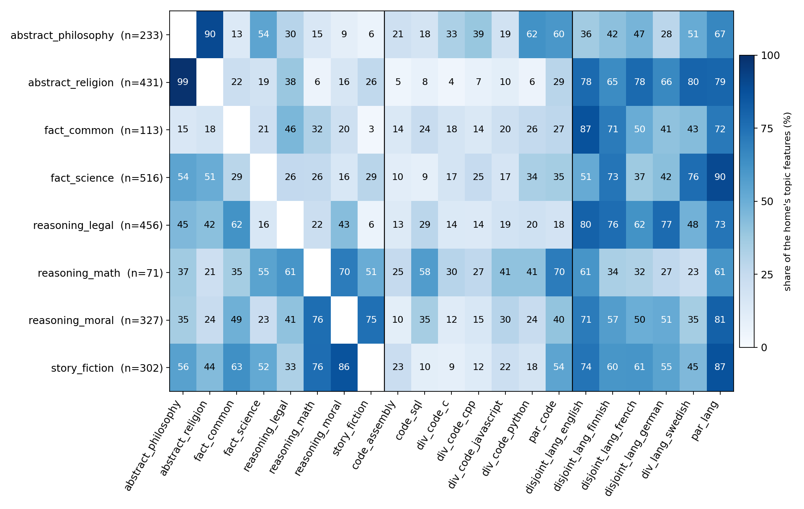
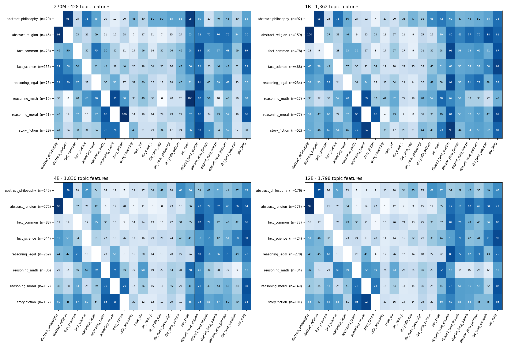

Gemma 3 27B, Gemma Scope 2 262k SAEs on resid_post, layers 31 to 59. A topic feature belongs to one content domain and fires on its topic as a span of tokens, and also fires in at least five other domains; the full rule and the counts are in the section on the population below. Counts in the feature blocks are prompts out of 500 per domain (28 domains, 14,000 prompts, start token excluded).
Grouped by home domain. Each block: home domain and how common the feature is there, the target domains and how common it is there, a bar chart of prompts where it fires per domain, then two home passages and up to two passages per target domain, cut to 15 tokens either side of the fired span, with every fired token highlighted. Highlight depth scales with activation relative to the feature's strongest shown fire; hover a token for its value. Passages from other domains are printed only where the feature fires on at least three tokens; every fire counts in the chart. The one-line reading under each feature id is the author's, written after reading the passages.
home domainother content domaincode domainnatural-language domain
The population the gallery is drawn from
A topic feature belongs to one content domain, its home: the home holds at least half of the prompts the feature fires in, the feature fires in 25 to 300 of the home's 500 prompts and in at most 5 % of all 14,000 prompts. It fires over spans of its home texts, on at least 4 tokens and at least 3 % of the tokens of a home prompt on average. And it fires in at least 2 prompts of each of at least 5 other domains, where the five FLORES languages count as one domain and the four Rosetta languages as one. The rule reads no passage and uses no classifier. Counts for Gemma 3 27B, October 2026 capture of the thesis's 28 domains, start token excluded:
layer 31 35 39 43 47 51 55 59
fire in the prompts 168,746 167,977 178,831 128,427 123,137 137,799 115,038 137,594
1. one content home, 25-300 1,986 2,764 5,226 6,765 7,018 7,991 8,057 8,141
2. fire over spans at home 441 492 1,007 1,256 1,049 931 933 984
3. topic features 246 257 437 507 369 320 328 394
classifier says context 0.94 0.93 0.96 0.96 0.96 0.96 0.96 0.94
The last row is the share of the topic features the thesis classifier labels context; it keeps about a third to a half of the classifier's context features of the same pool, the denser ones. The same rule on the other four sizes, at the layers that lie at the same relative depths (column headers):
The 36 features below are read by hand from the 27B pool, three to eight per home domain, chosen for variety of home and target. Their passages and bars come from the September 2026 capture behind the rest of the thesis; every one of them also passes the rule on the October capture. The matrix gives, for each home, the share of its topic features that fire in at least two prompts of each other domain, pooled over the eight layers.

Gemma 3 27B, layers 31 to 59 pooled, 2,858 topic features. Rows are home domains, columns target domains in three blocks: content, code, natural-language text.

The same matrix for 270M (top left), 1B (top right), 4B (bottom left) and 12B (bottom right).
reasoning_math
f29365 · layer 39
home
reasoning_math · 155 of 500 prompts (31 %) · 56 % of all 276 prompts it fires in · 8 fired tokens per home prompt on average
targets
abstract_philosophy 41 of 500 (8.2 %); par_code_c 15 of 500 (3 %); par_code_cpp 14 of 500 (2.8 %); par_code_python 11 of 500 (2.2 %); par_code_javascript 10 of 500 (2 %); code_sql 10 of 500 (2 %); div_lang_swedish 3 of 500 (0.6 %); code_assembly 3 of 500 (0.6 %); abstract_religion 3 of 500 (0.6 %); disjoint_lang_english 2 of 500 (0.4 %); disjoint_lang_french 2 of 500 (0.4 %); div_code_javascript 2 of 500 (0.4 %); and 4 more
Constraint puzzles: who likes what, which number is which. Fires through the Dinesman multiple-dwelling puzzle in C++, C and a Python regex, Cheryl's birthday in Python and JavaScript, a chess-placement comment, and a philosophy example about picking a red or black card.
reasoning_math · passage 53 · fires on 39 tokens (56 % of the passage) · peak 1688
In a class of 25 students, students were asked if they like French fries, burgers, or neither. 15 students said they like French fries and 10 said they like burgers, with these statistics including the responses of 6 students who said they like both French fries and burgers. How many students do not like either food?
reasoning_math · passage 157 · fires on 38 tokens (63 % of the passage) · peak 1304
Brad’s zip code consists of five numbers that add up to 10. The first and second numbers are the same. The third number is zero. The fourth number is double the first number. The fourth and fifth numbers add up to 8. What is Brad’s zip code?
abstract_philosophy · passage 62 · fires on 37 tokens (16 % of the passage) · peak 1800
[…] MA). Consider an agent S who has the ability to pick a red card or a black card, but does not have the ability to pick a red card or the ability to pick a black card. According to (MA), S has the ability to A iff S does A at some world (or set of worlds) satisfying condition C. Consider the case where (MA) appeals to a single world, not a set of worlds. If S has the ability to pick a red card or pick a black card, then by (MA) there is a world w satisfying condition C where S picks a red card or black card. Then either S picks a red card at w or S picks a black card at w. Then, applying (MA) now in the other direction, S has the ability to pick a red card or S has the ability to pick a black card. But that, by assumption, is not the case. Since […] tokens 23–211 of 231 shown
abstract_philosophy · passage 143 · fires on 13 tokens (5 % of the passage) · peak 384
[…] with the L-particle, and the state of the L-particle having z-spin ‘down’ (i.e., spinning ‘down’ about the z-axis) can be represented by the orthogonal vector, |z-down>. Particle pairs may be in a state in which the L-particle and the R-particle have opposite spins, for instance either a state |ψ1> in which the L-particle has z-spin ‘up’ and the R-particle has z-spin ‘down,’ or a state |ψ2> in which the L-particle has z-spin ‘down’ and the R-particle has z-spin ‘up.’ Each of these states is represented by a […] tokens 51–201 of 288 shown
par_code_python · passage 444 · fires on 61 tokens (16 % of the passage) · peak 1352
[…] five|six|seven|eight|nine|ten ) \s+ floors \s* \.)
��
# Constraint: "does not live on the n'th floor"
|(?: (?P<not_live> \b [a-zA-Z]+ \s+ does \s+ not \s+ live \s+ on \s+ the \s+
(?: top|bottom|first|second|third|fourth|fifth|sixth|seventh|eighth|ninth|tenth) \s+ floor \s* \. ))
��
# Constraint: "does not live on either the I'th or the J'th [ or the K'th ...] floor
|(?P<not_either> \b [a-zA-Z]+ \s […] tokens 150–320 of 393 shown
par_code_python · passage 155 · fires on 42 tokens (14 % of the passage) · peak 1160
[…] the date.'''
��
month, day = 0, 1
print(
# (3��:: A "Then I also know")
# (A's month contains only one remaining day)
uniquePairing(month)(
# (2��:: B "I know now")
# (B's day is paired with only one remaining month)
uniquePairing(day)(
# (1��:: A "I know that Bernard does not know")
# (A's month is not among those with unique days)
monthsWithUniqueDays(False)([
# 0��:: Cheryl's list:
tuple(x.split()) for x in
split(
', ',
'May 15, May 16, May 19, ' +
'June 17, June 18, ' +
'July 14, July 16, ' +
'Aug 14, Aug 15, Aug 17'
)
[…] tokens 45–288 of 291 shown
par_code_cpp · passage 444 · fires on 68 tokens (21 % of the passage) · peak 1368
par_code_c · passage 492 · fires on 4 tokens (1 % of the passage) · peak 392
[…] j < 6; ++j) {
if (values[j] >= 15) vcount++;
[…] tokens 294–320 of 380 shown
par_code_javascript · passage 155 · fires on 40 tokens (16 % of the passage) · peak 616
[…] .from(x), (
��
// The month with only one remaining day,
��
// (A's month contains only one remaining day)
// (3��:: A "Then I also know")
uniquePairing(month)(
��
// among the days with unique months,
��
// (B's day is paired with only one remaining month)
// (2��:: B "I know now")
uniquePairing(day)(
��
// excluding months with unique days,
��
// (A's month is not among those with unique days)
// (1��:: A "I know that Bernard does not know")
monthsWithUniqueDays(false)(
��
// from the given month-day pairs:
��
[…] tokens 58–247 of 257 shown
par_code_javascript · passage 146 · fires on 17 tokens (5 % of the passage) · peak 600
[…] * 2] = "♗";
// place the other bishop on any white square
rank[d(2) * 2 + 1] = "♗";
// place the queen on any empty square
rank[emptySquares()[d(5)]] = "♕";
// place one knight on any empty square
rank[emptySquares()[d(4)]] = "♘";
// place the other knight on any empty square
rank[emptySquares()[d(3)]] = "♘";
// place the rooks and the king on the squares left, king in the middle
for (var x = 1; x <= 3 […] tokens 124–273 of 345 shown
code_assembly · passage 116 · fires on 9 tokens (12 % of the passage) · peak 608
[…] 1) X (1+1) 0..2 arrays with no element equal to all horizontal neighbors or equal to all vertical neighbors, and new values 0..2 introduced in row major order. […] tokens 17–57 of 76 shown
code_assembly · passage 145 · fires on 8 tokens (9 % of the passage) · peak 520
[…] 6 ; Number of nX2 0..2 arrays with every element neighboring horizontally or vertically both a 0 and a 1
add $3,$2
add $1,$3
[…] tokens 30–71 of 85 shown
code_sql · passage 467 · fires on 19 tokens (6 % of the passage) · peak 912
SELECT matchid, player FROM goal WHERE teamid = 'GER';
/*Show id, stadium, team1, team2 for just game 1012*/
SELECT id,stadium,team1,team2 FROM game WHERE id = 1012;
/*Modify it to show the player, teamid, stadium and mdate for every German goal.*/
SELECT player, teamid, stadium, mdate FROM game JOIN goal ON (matchid = id) WHERE teamid = 'GER';
/*Show the team1, team2 and player for every goal scored by a player called Mario player LIKE 'Mario%'*/
SELECT team1, team2, player FROM game JOIN goal ON (matchid = id) WHERE player LIKE 'Mario%';
/*Show player, teamid, coach, gtime for all goals scored in the first 10 minutes gtime<=10*/
SELECT player, teamid, coach, gtime FROM goal JOIN eteam ON (goal.teamid= eteam.id) WHERE gtime<=10;
/*List the the dates of the matches and the name of the team in which 'Fernando Santos' was the team1 coach.*/
SELECT mdate, teamname FROM game JOIN eteam ON (team1 = eteam.id) WHERE coach = 'Fernando Santos';
/*List the player for every goal scored in a game
div_code_javascript · passage 393 · fires on 7 tokens (3 % of the passage) · peak 356
abstract_religion · passage 228 · fires on 13 tokens (6 % of the passage) · peak 488
[…] junction of contradictory assertions, such as ‘either there will be a sea-battle tomorrow or there will not be a sea-battle tomorrow’ or ‘either Socrates is walking or Socrates is not walking’, is necessarily true in the absolute sense. Ammonius says that this is still the case when, due to the nature of the thing in question, one of the disjuncts is true in a definite manner, as in ‘either fire is hot or fire is not hot’ (154,11).
f14777 · layer 43
home
reasoning_math · 74 of 500 prompts (14.8 %) · 61 % of all 122 prompts it fires in · 16 fired tokens per home prompt on average
targets
par_code_python 5 of 500 (1 %); par_code_javascript 5 of 500 (1 %); par_code_c 5 of 500 (1 %); div_code_c 5 of 500 (1 %); fact_science 5 of 500 (1 %); story_fiction 5 of 500 (1 %); par_code_cpp 3 of 500 (0.6 %); reasoning_legal 3 of 500 (0.6 %); abstract_philosophy 2 of 500 (0.4 %); abstract_religion 2 of 500 (0.4 %); par_lang_english 1 of 500 (0.2 %); par_lang_finnish 1 of 500 (0.2 %); and 6 more
Speed, distance and time word problems. Fires through a C program asking for driving distance and miles per gallon, a physics passage defining speed, and the tortoise and hare story.
reasoning_math · passage 350 · fires on 69 tokens (50 % of the passage) · peak 2304
Conner has a dune buggy that he rides in the desert. On flat sand, it can ride at a speed of 60 miles per hour. When traveling on downhill slopes, it can race at 12 miles per hour faster than it can when it is on flat sand. And when riding on an uphill inclined slow, it travels at a speed 18 miles per hour slower than when it is riding on flat sand. If Conner rides his dune buggy one-third of the time on flat sand, one-third of the time on uphill slopes, and one-third of the time on downhill slopes, what is his average speed in miles per hour?
reasoning_math · passage 225 · fires on 56 tokens (79 % of the passage) · peak 2944
Tony is driving his car between his town and a friend's down. The towns are 120 miles apart and he gets there in 3 hours. The next day, he is driving to see another friend who lives 200 miles away from his friend. If he drives at the same speed, how long will the drive take?
par_code_c · passage 291 · fires on 5 tokens (1 % of the passage) · peak 408
par_code_c · passage 391 · fires on 5 tokens (2 % of the passage) · peak 204
[…] ;
}
��
int main()
{
double d = dist(36.12, -86.67, 33.94, -118.4);
/* Americans don't know kilometers */
printf("dist:��%.1f km (%.1f mi.)\n", d, d / 1.60 […] tokens 205–290 of 306 shown
div_code_c · passage 470 · fires on 30 tokens (27 % of the passage) · peak 1144
[…] .h>
int main(){
double d,m,p;
printf("Enter the driving distance:");
scanf("%lf", &d);
printf("Enter miles per gallon:");
scanf("%lf", &m);
printf("Enter price per gallon:");
scanf("%lf", &p);
printf("The cost of driving is $%.2f.\n", (d/m*p));
}
div_code_c · passage 415 · fires on 9 tokens (3 % of the passage) · peak 696
[…]
int t,count=0;
float k, d, r,i,j;
scanf("%d", &t);
for (int c = 1; c <= t; c++)
{
printf("give radius\n");
scanf("%f", &r);
printf("give min dist k(in cm)\n");
scanf("%f", &k);
k = k/ […] tokens 27–135 of 324 shown
fact_science · passage 206 · fires on 17 tokens (30 % of the passage) · peak 1480
[…] concerned with the rates at which chemical reactions occur. Rate is another word for speed. If a sprinter takes 11.0 s to run a 100 m dash, his rate or speed is given by the distance traveled divided by the time.
fact_science · passage 100 · fires on 10 tokens (4 % of the passage) · peak 520
(a) A jet airplane flying from Darwin, Australia, has an air speed of 260 m/s in a direction 5.0º south of west. It is in the jet stream, which is blowing at 35.0 m/s in a direction 15º south of east. What is the velocity of the airplane relative to the Earth? (b) Discuss whether your answers are consistent with your expectations for the effect of the wind on the plane’s path. (a) In what direction would the ship in Exercise 3.57 have to travel in order to have a velocity straight north relative to the Earth, assuming its speed relative to the water remains 7.00 m/s ? (b) What would its speed be relative to the Earth? 60. (a) Another airplane is flying in a jet stream that is blowing at 45 […] tokens 1–187 of 251 shown
story_fiction · passage 214 · fires on 4 tokens (3 % of the passage) · peak 156
[…] will try my best." The race started and the rabbit ran very fast. The turtle was very slow and the rabbit was very far ahead. The rabbit thought he was going to win.
But, the rabbit got tired and took a nap. The turtle kept going and going. The turtle finally passed the rabbit and won the race! The turtle gained a lot by not giving up […] tokens 61–137 of 158 shown
story_fiction · passage 196 · fires on 3 tokens (2 % of the passage) · peak 648
[…]
Suddenly, Pixie remembered that her friends had told her about something called motion. That was when things moved by themselves.
So Pixie decided to solve the mystery. She took out a magnifying glass and looked […] tokens 76–118 of 168 shown
par_lang_english · passage 154 · fires on 4 tokens (12 % of the passage) · peak 228
To better represent traffic flow, relationships have been established between the three main characteristics: (1) flow, (2) density, and (3) velocity.
par_lang_finnish · passage 154 · fires on 3 tokens (6 % of the passage) · peak 196
[…] taa voitaisiin kuvata paremmin, on luotu suhde seuraavien kolmen pääominaisuuden välille: (1) virtauksen, (2) tiheyden ja (3) nopeuden.
par_lang_swedish · passage 154 · fires on 4 tokens (10 % of the passage) · peak 140
[…] trafikflödet, har samband fastslagits mellan tre huvudvariabler: (1) flöde, (2) densitet och (3) hastighet.
par_code_cpp · passage 396 · fires on 6 tokens (1 % of the passage) · peak 376
[…] ��
struct Time {
int hour, minute, second;
��
friend std::ostream &operator<<(std::ostream &, const Time &);
};
��
std::ostream &operator<<(std::ostream &os, const Time &t) {
return os << std::setfill('0')
<< std::setw(2) << t.hour << ':'
<< std::setw(2) << t.minute << ':'
<< std::setw(2) << t.second;
}
��
double timeToDegrees(Time &&t) {
return 360 […] tokens 40–180 of 430 shown
reasoning_legal · passage 147 · fires on 4 tokens (2 % of the passage) · peak 488
[…] -time method. Unknown distances had frequently been ascertained by this method. Given the time elapsing between the injection of a sound into an oil well and the return of its echo from the fluid surface, and assuming the velocity of the sound to be about 1,100 feet per second, as it is in the open air, it would be easy to find the distance. Not only had this sound-echo-time method been long known and […] tokens 56–146 of 199 shown
abstract_philosophy · passage 283 · fires on 9 tokens (8 % of the passage) · peak 1080
[…] what he sees only suggests to his understanding, that after having passed a certain distance, to be measured by the motion of his body, which is perceivable by touch, he shall come to perceive such and such tangible ideas […] tokens 59–102 of 114 shown
abstract_religion · passage 219 · fires on 4 tokens (4 % of the passage) · peak 312
[…] (movement according to quality): in neither case is it necessary to imagine local motion as a res successiva distinct from permanent things, at least if the common course of nature holds and one does […] tokens 55–92 of 102 shown
f67607 · layer 47
home
reasoning_math · 70 of 500 prompts (14 %) · 58 % of all 121 prompts it fires in · 5 fired tokens per home prompt on average
targets
reasoning_moral 18 of 500 (3.6 %); story_fiction 6 of 500 (1.2 %); par_code_python 4 of 500 (0.8 %); div_code_python 4 of 500 (0.8 %); div_code_c 4 of 500 (0.8 %); div_code_cpp 3 of 500 (0.6 %); par_lang_swedish 2 of 500 (0.4 %); par_code_javascript 2 of 500 (0.4 %); par_code_cpp 2 of 500 (0.4 %); div_code_javascript 2 of 500 (0.4 %); code_sql 2 of 500 (0.4 %); par_lang_english 1 of 500 (0.2 %); and 1 more
Money and change in word problems. Fires through coin-change dynamic-programming functions in Python, JavaScript, C++ and C, and on an AITA post about donating spare change.
reasoning_math · passage 423 · fires on 19 tokens (26 % of the passage) · peak 3376
Jack went to a supermarket with $100 and bought 4 bottles of water. Then his mother called him and asked him to buy twice as many bottles as he already bought. Each bottle cost $2. Finally, he also bought half a pound of cheese and 1 pound of cheese costs $10. How much money does Jack have remaining?
reasoning_math · passage 160 · fires on 15 tokens (21 % of the passage) · peak 604
[…] 500. She went to a boutique with the $500 but by the time she had picked out everything she liked, she realized that she would need two-fifths more money than she had. If the shop owner gave her a discount of 15%, how much more money will she still need?
reasoning_moral · passage 80 · fires on 28 tokens (14 % of the passage) · peak 4992
[…] hates her job so much. She never smiles and one time at the counter when I left my wallet on one of the tables and ran back to get it, I could hear her heave a loud sigh impatiently behind me.
Later I found out that she participated in a charity for animals and once and sometimes twice a month she would put up a charity poster on the wall behind the counter, with pictures of hurt and abused animals on it, and whenever I paid in cash, she would very nicely, with a wide smile on her face, ask me if I would like to donate half of the spare change to the charity (only if the change was less than a dollar though). I mean I love animals so I was always okay with that.
reasoning_moral · passage 430 · fires on 7 tokens (4 % of the passage) · peak 3536
[…] phone and rated himself 5 star. Even though he troubled me a lot for the order as we didn't had a common language. Also, He was unable to use GPS to navigate to my location. I would have rated him 2- […] tokens 30–79 of 171 shown
par_code_python · passage 283 · fires on 36 tokens (28 % of the passage) · peak 3824
par_code_python · passage 239 · fires on 3 tokens (1 % of the passage) · peak 564
def bags(n,cache={}):
if not n: return [(0, "")]
��
upto = sum([bags(x) for x […] tokens 1–36 of 295 shown
par_code_cpp · passage 283 · fires on 24 tokens (8 % of the passage) · peak 5024
[…] DataFrame {
int sum;
std::vector<int> coins;
std::vector<int> avail_coins;
};
��
int main() {
std::stack<DataFrame> s;
s.push({ 100, {}, { 25, 10, 5, 1 } });
int ways = 0;
while (!s.empty()) {
DataFrame top = s.top();
s.pop();
if (top.sum < 0) continue;
if (top.sum == 0) {
++ways;
continue;
}
if (top.avail_coins.empty()) continue;
DataFrame d = top;
d.sum -= top.avail_coins[0];
d.coins.push_back(top.avail_coins[0]);
s.push(d);
d = top;
d.avail_coins.erase(std::begin(d.avail_coins));
s.push(d);
}
std::cout << ways << std::endl;
return 0;
}
par_code_cpp · passage 437 · fires on 3 tokens (1 % of the passage) · peak 188
[…] �
using namespace std;
��
void showTokens(int tokens) {
cout << "Tokens remaining " << tokens << endl << endl;
}
��
int main() {
int tokens = 12;
while […] tokens 14–68 of 311 shown
div_code_c · passage 259 · fires on 7 tokens (3 % of the passage) · peak 1840
[…] QString address;
QString label;
QString narration;
int typeInd;
qint64 amount;
AvailableCoinsType inputType;
bool useInstantX;
};
/** Interface to Bitcoin wallet from Qt view code […] tokens 151–204 of 214 shown
div_code_c · passage 202 · fires on 3 tokens (1 % of the passage) · peak 892
[…] #include <serialize.h>
#include <script/standard.h>
#include <qt/paymentrequestplus.h>
#include <qt/walletmodeltransaction.h>
#include <interfaces/wallet.h>
#include <support/allocators/secure.h>
#include <map>
#include <vector>
#include <QObject>
enum class OutputType;
class AddressTableModel;
class OptionsModel;
class PlatformStyle;
class RecentRequestsTableModel;
class TransactionTableModel;
class WalletModelTransaction;
class CCoinControl;
class CKeyID;
class COutPoint;
class COutput;
class CPubKey;
class uint25 […] tokens 43–197 of 218 shown
story_fiction · passage 119 · fires on 7 tokens (3 % of the passage) · peak 548
[…] got out some money. She gave it to the woman at the desk, who nodded in return. Then she took Andy in the back room.
There were so many toys for Andy to choose from.
After a few minutes of inspection, he decided to buy a robot. It was shiny and made of metal.
Mom nodded in approval. She took out the money and gave it to the woman at the desk. The woman smiled and handed the robot to Andy.
He smiled and hugged his new toy […] tokens 96–201 of 216 shown
story_fiction · passage 79 · fires on 4 tokens (2 % of the passage) · peak 908
[…] , vanilla and strawberry. Tommy was very happy. He thanked the man and paid with his mom's money.
He walked back to his mom, holding his cone carefully. […] tokens 80–115 of 252 shown
par_lang_swedish · passage 224 · fires on 4 tokens (14 % of the passage) · peak 628
GBP tas i regel emot överallt på öarna, och inom Stanley går det ofta bra att betala med kreditkort och USD.
par_code_javascript · passage 283 · fires on 23 tokens (14 % of the passage) · peak 3600
function countcoins(t, o) {
'use strict';
var targetsLength = t + 1;
var operandsLength = o.length;
t = [1];
��
for (var a = 0; a < operandsLength; a++) {
for (var b = 1; b < targetsLength; b++) {
��
// initialise undefined target
t[b] = t[b] ? t[b] : 0;
��
// accumulate target + operand ways
t[b] += (b < o[a]) ? 0 : t[b - o[a]];
}
}
��
return t[targetsLength - 1];
}
par_code_c · passage 283 · fires on 11 tokens (2 % of the passage) · peak 3344
[…]
��
i128 count(int sum, int *coins)
{
int n, i, k;
for ( […] tokens 289–320 of 511 shown
div_code_python · passage 417 · fires on 69 tokens (48 % of the passage) · peak 5888
import sys
def get_change(money, coins):
t = [j+1 for j in range(money+1)]
# boundary condition
t[0] = 0
for j in range(1, money+1):
for c in coins:
if c <= j:
t[j] = min(t[j], 1+t[j-c])
return t[money]
if __name__ == '__main__':
coins = [1, 3, 4]
money = int(input())
print(get_change(money, coins))
code_sql · passage 75 · fires on 7 tokens (2 % of the passage) · peak 1744
/*
Deployment script for VendingMachine
This code was generated by a tool.
Changes to this file may cause incorrect behavior and will be lost if
the code is regenerated.
*/
GO
SET ANSI_NULLS, ANSI_PADDING, ANSI_WARNINGS, ARITHABORT, CONCAT_NULL_YIELDS_NULL, QUOTED_IDENTIFIER ON;
SET NUMERIC_ROUNDABORT OFF;
GO
:setvar DatabaseName "VendingMachine"
:setvar DefaultFilePrefix "VendingMachine"
:setvar DefaultDataPath "C:\Users\Hugo\AppData\Local\Microsoft\Microsoft SQL Server Local DB\Instances\SoftwareDevelopment"
:setvar DefaultLogPath "C:\Users\Hugo\AppData\Local\Microsoft\Microsoft SQL Server Local DB\Instances\SoftwareDevelopment"
GO
[…] tokens 1–182 of 281 shown
f25182 · layer 47
home
reasoning_math · 59 of 500 prompts (11.8 %) · 60 % of all 99 prompts it fires in · 10 fired tokens per home prompt on average
targets
story_fiction 15 of 500 (3 %); reasoning_moral 6 of 500 (1.2 %); fact_science 6 of 500 (1.2 %); disjoint_lang_finnish 2 of 500 (0.4 %); disjoint_lang_french 2 of 500 (0.4 %); div_code_python 2 of 500 (0.4 %); par_lang_english 1 of 500 (0.2 %); par_lang_finnish 1 of 500 (0.2 %); par_lang_french 1 of 500 (0.2 %); par_lang_swedish 1 of 500 (0.2 %); disjoint_lang_english 1 of 500 (0.2 %); div_lang_swedish 1 of 500 (0.2 %); and 1 more
Recipe ratios and mixtures. Fires on a Django model with Recipe and MixingAgent, Finnish cocktail 1:1 ratios, an English curau recipe, and a textbook passage on mixtures without fixed proportions.
reasoning_math · passage 300 · fires on 43 tokens (62 % of the passage) · peak 1696
When Betty makes cheesecake, she sweetens it with a ratio of one part sugar to four parts cream cheese, and she flavors it with one teaspoon of vanilla for every two cups of cream cheese. For every one teaspoon of vanilla, she uses two eggs. She used two cups of sugar in her latest cheesecake. How many eggs did she use?
reasoning_math · passage 218 · fires on 42 tokens (69 % of the passage) · peak 1536
Janice adds 2 tablespoons of koolaid power and 16 tablespoons of water to a jug. She leaves it out long enough for 4 tablespoons of water to evaporate. Then she quadruples the amount of water in the jug. What percentage of the liquid in the jug is koolaid powder?
story_fiction · passage 412 · fires on 19 tokens (8 % of the passage) · peak 1584
[…] Tom are playing in the kitchen. They want to make a cake for Mom. They have a big bowl, some flour, some eggs, some milk and some sugar. They also have a spoon to stir.
"Tom, can you stir the flour and the eggs?" Sara asks.
"OK, Sara, I can stir," Tom says. He takes the spoon and stirs the flour and the eggs. He stirs and stirs until they are mixed.
"Good job, Tom! Now we need to add the milk and the sugar," Sara says. She pours the milk and the sugar into the bowl. "Can you stir some more, Tom?"
" […] tokens 3–137 of 240 shown
story_fiction · passage 63 · fires on 7 tokens (3 % of the passage) · peak 732
[…] to bake cookies with her mom. One day, Lily's mom said, "Lily, let's bake some cookies today!" Lily was so happy and said, "Yay! I love baking cookies with you!"
They went to the kitchen and started to bake. They mixed flour, sugar, butter, and eggs together. Then, they put the cookies in the oven to bake. While […] tokens 16–95 of 206 shown
fact_science · passage 464 · fires on 23 tokens (21 % of the passage) · peak 2464
[…] mingle and keep their original properties. The lemonade pictured above is a mixture because it doesn’t have fixed proportions of ingredients. It could have more or less lemon juice, for example, or more or less sugar, and it would still be lemonade.
fact_science · passage 477 · fires on 5 tokens (4 % of the passage) · peak 460
[…] actually gold or was some trickery of the alchemist. Nitric acid by itself will not dissolve gold, but will in combination with hydrochloric acid. The chemistry of the process is rather complex, with both acids reacting with the metal to form soluble gold compounds. The gold can be recovered from the solution, making the process useful for purification […] tokens 68–134 of 136 shown
disjoint_lang_finnish · passage 198 · fires on 10 tokens (3 % of the passage) · peak 908
[…] ja amaretto-drinkkejä ovat muun muassa Godfather (1:1 amarettoa ja viskiä), French connection (1:1 amarettoa ja konjakkia) ja Alabama Slammer (1:1 amarettoa, Southern Comfort -likööriä, sloe giniä ja tilkka appelsiinimehua).
Amarettosta saadaan maistuva juoma myös sekoitettuna kahviin.
disjoint_lang_finnish · passage 433 · fires on 7 tokens (2 % of the passage) · peak 420
[…] uokseksi.
Titrauksessa tutkittava näyte mitataan pipetin avulla erlenmeyerpulloon tai keitinlasiin. Standardiliuos lisätään useimmiten byrettiin, jonka mitta-asteikolta luetaan titrausliuoksen kulutus. Byretin sijaan voidaan käyttää myös standardiliuoksen kulutuksen automaattisesti mittaavaa titraattoria. […] tokens 195–286 of 303 shown
disjoint_lang_english · passage 76 · fires on 15 tokens (7 % of the passage) · peak 1152
[…] in the northern half of Brazil.
Typical recipes
Curau recipes typically call for about half to two liters of milk and one to three cups of sugar to 10 ears of unripe maize or sweet corn. Other ingredients may be added, such as a pinch of salt, a tablespoon of butter. The milk may be replaced in part by coconut milk or condensed milk.
To prepare the curau, the corn kernels are grated off the ears and put into a cloth bag. The bag is then squeezed while adding the milk little by little, so as to extract as much juice as possible from the ground […] tokens 84–208 of 211 shown
disjoint_lang_french · passage 132 · fires on 4 tokens (2 % of the passage) · peak 1376
[…] rice. Donc tout se réalise à la main : lavage des bouteilles, dosage du sirop aromatisé, le remplissage en eau gazéifiée et le bouchage (caps […] tokens 152–187 of 240 shown
div_code_python · passage 107 · fires on 26 tokens (9 % of the passage) · peak 1520
from django import template
from home.models import Recipe, MixingAgent, Base, Ingredient, FacePack, CustomFacePack
import pdb
register = template.Library()
@register.inclusion_tag('facepack.html')
def facepack_display(item_id):
if not item_id:
return
mandatory = []
type = "primary"
for cfp in CustomFacePack.objects.filter(facepack=item_id):
ing = cfp.optional_ingredient if cfp.optional_ingredient else cfp.recipe.mandatory_ingredient
mandatory.append({
'name' : ing.name,
'id' : ing.id,
'r_id' : cfp.recipe.id,
'image' : ing.image,
})
if cfp.optional_ingredient:
type = "secondary"
fp = FacePack.objects.get(pk=item_id)
res = {
'item_id' : item_id,
'name' : fp.name,
'mandatory' : mandatory,
'base' : fp.base.name,
'mixing_agent' : fp.mixing_agent.name,
'image' : fp.image,
'type' […] tokens 1–298 of 299 shown
code_sql · passage 294 · fires on 4 tokens (1 % of the passage) · peak 172
reasoning_moral · passage 345 · fires on 4 tokens (2 % of the passage) · peak 340
[…] CBD cream that he could sell.
I sent him a spread sheet with the supplies I would need and the prices. He approved everything and agreed to reimburse me if I bought the supplies. The initial plan was that he would reimburse me, pay me for the recipe, and then give me a percentage of his CBD cream sales.
[…] tokens 66–132 of 177 shown
reasoning_moral
f9851 · layer 31
home
reasoning_moral · 131 of 500 prompts (26.2 %) · 62 % of all 210 prompts it fires in · 27 fired tokens per home prompt on average
targets
fact_science 15 of 500 (3 %); story_fiction 7 of 500 (1.4 %); div_lang_swedish 6 of 500 (1.2 %); abstract_religion 6 of 500 (1.2 %); par_lang_english 5 of 500 (1 %); disjoint_lang_english 5 of 500 (1 %); disjoint_lang_german 5 of 500 (1 %); reasoning_math 5 of 500 (1 %); par_lang_french 4 of 500 (0.8 %); disjoint_lang_finnish 4 of 500 (0.8 %); par_lang_finnish 3 of 500 (0.6 %); par_lang_german 3 of 500 (0.6 %); and 6 more
Pregnancy, birth and babies. Fires on ectopic pregnancy and viviparous mammals in fact_science, FLORES sentences on an obstetrician, a story about keeping an egg warm, Swiss perinatal centres in German, and a Python docstring about baby hospital admissions.
reasoning_moral · passage 97 · fires on 150 tokens (66 % of the passage) · peak 952
AITA for wanting to have our family now instead of waiting? | Ok reddit, lets see how this goes. So my boyfriend (22 m) and I (20 f) accidentally started our family earlier than planned 2 years ago. Our son wasn’t the plan but it happened and we couldn’t be happier. We had always planned on having 2 children. We are financially stable, not super well off but we rent a room and live together and have some savings and will have more when the baby comes. However, now my boyfriend doesn’t want another child now. He thinks that we should wait until we buy our own house and are both out of college. I think that we should have another and continue with our original plan just sped up a little. At this point I don’t see why waiting to have our second child will change much. Like obviously i get that children are a lot of work but I think that while we’re here and in children mode we should have our second and not wait. AITA for this? He thinks that I’m being an asshole for pushing this.
reasoning_moral · passage 0 · fires on 132 tokens (56 % of the passage) · peak 2768
AITA for secretly hoping that I’m sterile so I don’t have to reproduce | Me and my fiancé have been trying for a child for a year and a half. Thing is, I’ve never wanted to give birth. The thought alone terrifies me. I really want a child at some point but I want to adopt, I’ve always knew that since I was a child. My fiancé, on the other hand, says he wants to raise his own child that looks like me and him. So I agreed but every month when I get my period, I feel relieved.
A year ago I got severe bleeding that continued for two weeks. According to my gynaecologist, that was a potential pregnancy that my body rejected. She said that it’s different than miscarriage because there has been no pregnancy. It’s confusing but I didn’t ask more questions because the truth is, I didn’t care. I was actually relieved. My fiancé always talks about how he can’t wait for me to get pregnant but I hate the idea. I’ve told him I feel the same way but I’m lying.
fact_science · passage 461 · fires on 59 tokens (30 % of the passage) · peak 648
Development of the Embryo In the vast majority of ectopic pregnancies, the embryo does not complete its journey to the uterus and implants in the uterine tube, referred to as a tubal pregnancy. However, there are also ovarian ectopic pregnancies (in which the egg never left the ovary) and abdominal ectopic pregnancies (in which an egg was “lost” to the abdominal cavity during the transfer from ovary to uterine tube, or in which an embryo from a tubal pregnancy re-implanted in the abdomen). Once in the abdominal cavity, an embryo can implant into any well-vascularized structure—the rectouterine cavity (Douglas’ pouch), the mesentery of the intestines, and the greater omentum are some common sites. Tubal pregnancies can be caused by scar tissue within the tube following a sexually transmitted bacterial infection. The scar […] tokens 1–167 of 200 shown
fact_science · passage 421 · fires on 57 tokens (39 % of the passage) · peak 1048
[…] which later hatch. These mammals are called monotremes. Most mammals are viviparous and give birth to live young. These mammals are either placental mammals or marsupials. Placental mammals give birth to relatively large and well-developed fetuses. Marsupials give birth to smaller, less-developed embryos. In both placental and marsupial mammals, the young grow and develop inside the mother’s body in an organ called the uterus. At birth, they pass through a tube-like organ called the birth canal, or vagina.
par_lang_french · passage 457 · fires on 11 tokens (34 % of the passage) · peak 1640
Lorsqu'il travaillait à l'hôpital, Liggins a commencé à enquêter sur les accouchements prématurés pendant son temps libre.
par_lang_french · passage 124 · fires on 7 tokens (21 % of the passage) · peak 920
Il a suivi une formation d'obstétricien, et a commencé à travailler au National Women's Hospital d'Auckland en 1959.
div_lang_swedish · passage 259 · fires on 10 tokens (13 % of the passage) · peak 856
[…] ande, människor och djur. Hon avbildades som en höggravid kvinna men hon var inte bara moder, hon var också hämndlysten och blodtörstig. […] tokens 22–62 of 79 shown
div_lang_swedish · passage 182 · fires on 8 tokens (8 % of the passage) · peak 536
[…] på barndomen. I vissa kontexter ser vissa även ett ofött foster som ett barn, och tidpunkten för övergången mellan barn och vuxen uppfattas olika beroende […] tokens 55–95 of 100 shown
par_lang_english · passage 124 · fires on 9 tokens (33 % of the passage) · peak 856
He trained as an obstetrician and began to work at the Auckland's National Women's Hospital in 1959.
par_lang_english · passage 270 · fires on 7 tokens (32 % of the passage) · peak 688
His research showed that if a hormone was administered it would speed up the baby's foetal lung maturation.
par_lang_finnish · passage 124 · fires on 10 tokens (26 % of the passage) · peak 792
Hän kouluttautui synnytyslääkäriksi ja aloitti vuonna 1959 työskentelyn Aucklandin kansallisessa naistensairaalassa.
par_lang_finnish · passage 457 · fires on 10 tokens (33 % of the passage) · peak 1096
Sairaalassa työskennellessään Liggins alkoi joutoaikoinaan tutkia ennenaikaista synnytystä.
par_lang_german · passage 270 · fires on 9 tokens (39 % of the passage) · peak 1000
Seine Forschung zeigte, dass die Anwendung eines Hormons die Lungenreifung des Fötus beschleunigte.
par_lang_german · passage 124 · fires on 7 tokens (25 % of the passage) · peak 952
Er machte eine Ausbildung als Entbindungsarzt und nahm 1959 seine Arbeit im National Women's Hospital in Auckland auf.
par_lang_swedish · passage 124 · fires on 12 tokens (36 % of the passage) · peak 920
Han utbildade sig till förlossningsläkare och började arbeta vid Aucklands nationella kvinnosjukhus år 1959.
par_lang_swedish · passage 457 · fires on 9 tokens (35 % of the passage) · peak 1080
Medan han arbetade på sjukhuset började Liggins undersöka för tidiga födslar under sin fritid.
disjoint_lang_english · passage 127 · fires on 12 tokens (5 % of the passage) · peak 1000
[…] , Yue Sir's former supervisor. Yue Sir and Jing Jing have a baby boy and Jing jing returns to work after trying to be a housewife to no avail. Initially working with the homicide unit again, she is still always […] tokens 171–215 of 238 shown
disjoint_lang_english · passage 295 · fires on 8 tokens (4 % of the passage) · peak 616
[…] Italians and Hispanics.
It has been related to
schizophrenia
Alzheimer's disease
depression
autism
spina bifida.
In 2000 association studies on oral clefts, Down syndrome, and fetal anticonvulsant syndrome were either unreplicated or had yielded conflicting results.
Related genetic variants […] tokens 68–132 of 179 shown
disjoint_lang_german · passage 178 · fires on 29 tokens (14 % of the passage) · peak 1480
Die Liste von Perinatalzentren in der Schweiz nennt die neun Perinatalzentren in der Schweiz, denen die Neugeborenen-Intensivpflege mit Stand von 2011 zugeteilt ist:
Hôpitaux universitaires de Genève (HUG)
Centre hospitalier universitaire vaudois (CHUV)
Inselspital Bern
Universitäts-Kinderspital beider Basel
Universitätsspital Zürich (USZ) (in Zusammenarbeit mit dem Kinderspital Zürich)
Ostschweizer Kinderspital St. Gallen (in Zusammenarbeit mit dem Kantonsspital St. Gallen)
Luzerner Kantonsspital (LUKS)
Kantonsspital Aarau (KSA)
Kantonsspital Graubünden (KSGR)
Kantonsspital Winterthur (KSW)
Einzelnachweise
Perinatalmedizin
Perinatalzentren in der Schweiz
!Perinatalzentren
disjoint_lang_german · passage 494 · fires on 16 tokens (7 % of the passage) · peak 1256
[…] ams gekommen sein und eine im Dorf zurückgebliebene, hochschwangere Frau verschleppt haben. Der Wolf brachte die Frau in sein Lager, welches sich an dem Großen Stein befand. Im Lager befanden sich mehrere Wolfsjunge, wobei einem ein Knochen im Hals steckengeblieben war. Die Frau entfernte den Knochen, worauf hin der Wolf sie wieder zurück ins Dorf brachte.
reasoning_math · passage 430 · fires on 9 tokens (20 % of the passage) · peak 808
Princeton had a gender reveal party and invited all of his fellow employees to celebrate with him. If the total number of guests were 60, and 2/3 were […] tokens 1–35 of 46 shown
reasoning_math · passage 359 · fires on 4 tokens (6 % of the passage) · peak 158
[…] when her grandmother was born. She knows her grandmother's older brother was born in 1932, her older sister was born in 1936, and the gap between her grandmother and her sister is twice the gap between the older brother and the older sister. What year was […] tokens 7–66 of 72 shown
abstract_religion · passage 241 · fires on 7 tokens (4 % of the passage) · peak 536
[…] ) in the origin of the body and the soul. He holds that the female prepares the matter while the male prepares the form. Once again, he insists on the centrality of the heart, which provides the matter of the living being through the womb and the form through the organ that generates the semen. The semen, once entering the womb, finds inside of it the blood that had been previously prepared by the womb in order to receive the human form contained in the semen. The semen in turn endows this blood with a capacity that enables the blood to move and start forming the different organs that make up the human body. Hence, the blood from the womb serves as the matter that receives the human form contained in the semen, […] tokens 34–178 of 198 shown
abstract_religion · passage 14 · fires on 5 tokens (4 % of the passage) · peak 632
When the blood in the womb receives the form from the semen, the first thing that arises is precisely the heart (al-Fārābī VC: 186–187). The other organs in the body emerge only once the rest of the faculties, beginning with the nutritive faculty, are present in the heart. The developing organs include those that are endowed with specifically female or male procreative faculties. Therefore, male and female individuals share all organs […] tokens 1–93 of 142 shown
story_fiction · passage 18 · fires on 36 tokens (22 % of the passage) · peak 600
[…] animals, and one day she saw a little mother bird in her garden. The bird was holding an egg in her beak, and Lucy wanted to help. Carefully, she took the egg from the bird and held it in her hands.
The egg was peaceful and Lucy admired it. All day she watched over it, making sure it was safe. She kept it warm and cozy, under her blanket.
At the end of the day, the little bird came back and Lucy returned the egg to its mother. They said their goodbyes, and Lucy smiled as the bird flew away with her egg.
From that day on Lucy made sure the birds in her garden […] tokens 15–151 of 160 shown
story_fiction · passage 368 · fires on 3 tokens (1 % of the passage) · peak 230
Once upon a time there was a mommy cat and a baby cat. They both had big eyes and fluffy fur. The baby cat […] tokens 1–26 of 208 shown
disjoint_lang_finnish · passage 94 · fires on 4 tokens (1 % of the passage) · peak 302
[…] ällöin myös kansainvälisiin kilpailuihin. Perheenlisäyksen myötä oma kilpaura jäi taka-alalle ja hän keskitt […] tokens 183–218 of 293 shown
disjoint_lang_finnish · passage 466 · fires on 3 tokens (1 % of the passage) · peak 270
[…] ckhorstilla on yksi tytär joka on syntynyt vuonna 1991, suhteesta näyttelijä Dominick Haakeen joka kesti vuodet 1988-1993.
Aiheesta muualla
Natja Brunck […] tokens 211–268 of 312 shown
div_code_python · passage 465 · fires on 5 tokens (2 % of the passage) · peak 462
[…] CNFUN_project(ProjectMixins):
"""
One baby can have many admissions CaseIDs.
One hospital record can have many CaseIDs.
One baby has only one hospital record number.
"""
def __init__(
self, Token, URL […] tokens 61–121 of 255 shown
abstract_philosophy · passage 471 · fires on 8 tokens (4 % of the passage) · peak 680
[…] . He cites two cases. First, a woman accidentally smothers her baby while trying to keep it warm at night, and is overcome with grief. Abelard maintains that we should punish her for the beneficial example her punishment may have on others: it may make other poor mothers more careful not to accidentally smother their babies while trying to keep them warm.
fact_common · passage 140 · fires on 3 tokens (6 % of the passage) · peak 134
Revealing Hospital Gowns Redesigned PORTLAND, Maine - Whether its blue or spotted or stripped, the standard issue hospital gown is drafty and revealing. It's embarrassing for just about anyone […] tokens 1–40 of 51 shown
f18915 · layer 35
home
reasoning_moral · 237 of 500 prompts (47.4 %) · 56 % of all 427 prompts it fires in · 15 fired tokens per home prompt on average
targets
reasoning_math 39 of 500 (7.8 %); reasoning_legal 27 of 500 (5.4 %); story_fiction 12 of 500 (2.4 %); disjoint_lang_finnish 11 of 500 (2.2 %); code_sql 11 of 500 (2.2 %); par_lang_finnish 10 of 500 (2 %); par_lang_french 10 of 500 (2 %); par_lang_swedish 10 of 500 (2 %); disjoint_lang_german 10 of 500 (2 %); par_lang_english 9 of 500 (1.8 %); par_lang_german 8 of 500 (1.6 %); fact_common 8 of 500 (1.6 %); and 11 more
Workplace, bosses and raises. Fires through an employees database in SQL, an Employee struct and employee tables in C++, Python, JavaScript and C, the FLORES Japanese work-culture sentences in five languages, and a Chinese boss group-chat comment.
reasoning_moral · passage 138 · fires on 166 tokens (78 % of the passage) · peak 1344
AITA for dialing back my productivity after my manager denied my raise request? | Tl;dr - got hired for one job, 3 people left, I took on more responsibilities, asked for more money, told no, now I don't want to continue doing extra work.
Ok so the whole story. I got hired based on a specific skill set on my resume (we'll call that Skill A) although I'm highly effective in another (skill B) the hiring team was all but not interested in.
Within the first 2-5 months of me starting, 3 people quit, including my manager. I suddenly found myself being asked to pick up new responsibilities. Now, these responsibilities require skill B, and since I'm qualified, I picked them up without hesitation. I've been doing this extra layer of work for a few months now and decided to ask for a raise based on this. I was told no because "my skill A wasn't quite where they wanted it to be".
reasoning_moral · passage 52 · fires on 139 tokens (69 % of the passage) · peak 1472
AITA For saying no to helping out at work because I was refused a raise? | When I say I was refused a raise, I mean it's been four years since I've gotten one and every time I've asked they've had a different lame excuse. Their newest one is that they're not offering raises at this time. This is despite constantly increasing our workload and me always being available to help when needed.
I finally snapped today though and when asked if I could take some extra work for a few people who were out I said "Sorry, I'm not able to take anything else today". This isn't the part I'm wondering about being an asshole though, I know that's justified. My concern is that since I said no it's going to be dumped on the only other person who can handle it and I know he's already overwhelmed as it is so I've just doomed him to a ton of extra work.
reasoning_math · passage 102 · fires on 31 tokens (33 % of the passage) · peak 1088
A lot of people have been sick at Gary's workplace, so he's been working a lot of extra shifts to fill in for people. As a result, he's earned some overtime (where every hour after 40 he earns 1.5 times his normal wage.) His paycheck (before taxes are taken out) came out to $696. If Gary normally earns $12 per hour, how many hours did he work that week?
reasoning_math · passage 114 · fires on 26 tokens (33 % of the passage) · peak 852
Cadence has worked for her new company five months longer than she worked for her old company. If she worked at her old company for 3 years earning $5000 per month, and she's now earning 20% more in the new company, calculate the total amount of money she's earned in both companies in the period she's worked for them?
reasoning_legal · passage 359 · fires on 19 tokens (16 % of the passage) · peak 252
4
The pleadings state that Huffman entered the employ of Ford September 23, 1943, was inducted into military service November 18, 1944, was discharged July 1, 1946, and, within 30 days, was reemployed by Ford with seniority dating from September 23, 1943, as provided by statute.5 It does not appear whether the other members of his class are veterans but, like him, all have seniority computed from their respective dates of employment by Ford.
reasoning_legal · passage 467 · fires on 12 tokens (10 % of the passage) · peak 708
[…] 9343 as an electrician by E. C. Ernst, Inc., a contractor engaged in electrical construction work in the District of Columbia and surrounding areas. In November, 1940, Ticer was transferred by his employer from a project in the District of Columbia to a project at the Quantico Marine Base at Quantico, Virginia. His work at the Marine Base continued for over three years until the time of his injury in December, 1943.
par_lang_finnish · passage 47 · fires on 15 tokens (29 % of the passage) · peak 256
Työntekijöiden täytyy usein saada esimiehen hyväksyntä kaikille tekemilleen päätöksille, ja heidän odotetaan tottelevan esimiehen ohjeita muitta mutkitta.
par_lang_finnish · passage 481 · fires on 9 tokens (31 % of the passage) · peak 572
Puvut ovat tavallinen työasu, ja kollegat kutsuvat toisiaan sukunimellä tai tittelillä.
par_lang_french · passage 47 · fires on 21 tokens (60 % of the passage) · peak 620
Les travailleurs doivent souvent obtenir l'accord de leurs supérieurs pour toute décision qu'ils prennent et sont censés obéir aux instructions de leurs supérieurs sans poser de questions.
par_lang_french · passage 159 · fires on 13 tokens (46 % of the passage) · peak 372
La culture de travail japonaise est plus hiérarchique et formelle que celle à laquelle les Occidentaux peuvent être habitués.
par_lang_german · passage 47 · fires on 28 tokens (62 % of the passage) · peak 804
Oftmals müssen Arbeitnehmer für alle Entscheidungen, die sie treffen, die Zustimmung ihrer Vorgesetzten einholen und es wird von ihnen erwartet, dass sie den Anweisungen ihrer Chefs bedingungslos Folge leisten.
par_lang_german · passage 284 · fires on 10 tokens (25 % of the passage) · peak 344
Jeden Morgen verlassen Menschen kleine Provinzstädte mit dem Auto, um zu ihrem Arbeitsplatz zu fahren und werden von anderen passiert, deren Arbeitsstelle an dem Ort ist, den sie gerade verlassen haben.
par_lang_swedish · passage 47 · fires on 17 tokens (41 % of the passage) · peak 500
Arbetare måste ofta få sina överordnades godkännande för alla beslut de fattar och förväntas följa sina överordnades instruktioner utan tvekan.
par_lang_swedish · passage 159 · fires on 11 tokens (39 % of the passage) · peak 540
Den japanska arbetskulturen är mer hierarkisk och formell än vad västerlänningar kanske är vana vid.
par_lang_english · passage 47 · fires on 23 tokens (88 % of the passage) · peak 588
Workers must often get their superiors' approval for any decisions they make, and are expected to obey their superiors' instructions without question.
par_lang_english · passage 481 · fires on 12 tokens (57 % of the passage) · peak 740
Suits are standard business attire, and coworkers call each other by their family names or by job titles.
code_sql · passage 238 · fires on 48 tokens (25 % of the passage) · peak 484
DROP DATABASE IF EXISTS employees_db;
CREATE DATABASE employees_db;
USE employees_db;
CREATE TABLE department (
id INT NOT NULL AUTO_INCREMENT PRIMARY KEY,
name VARCHAR(30) NULL
);
CREATE TABLE role (
id INT NOT NULL AUTO_INCREMENT PRIMARY KEY,
title VARCHAR(30) NULL,
salary DECIMAL (10,2) NULL,
department_id INT NULL,
FOREIGN KEY (department_id)
REFERENCES department(id)
);
CREATE TABLE employee (
id INT NOT NULL AUTO_INCREMENT PRIMARY KEY,
first_name VARCHAR(30) NULL,
last_name VARCHAR(30) NULL,
role_id INT NULL,
manager_id INT NULL,
FOREIGN KEY (role_id)
REFERENCES role (id)
);
code_sql · passage 56 · fires on 34 tokens (12 % of the passage) · peak 412
story_fiction · passage 352 · fires on 6 tokens (3 % of the passage) · peak 228
Once upon a time, there was a patient nurse. Her name was Sarah and she worked at a hospital. Every day, she looked after the children and made them feel better.
One day, Sarah was taking care of a 3 year old boy called John. He was […] tokens 1–56 of 219 shown
story_fiction · passage 364 · fires on 6 tokens (3 % of the passage) · peak 220
[…] , she decided to wear it that same day.
When she got to school, all the other students crowded around to admire her dress. She was so proud and happy. She knew that it was the best choice she had ever made.
But then her teacher told her she couldn't wear it. The dress was too fancy, too 'fit' for school. She felt so sad and embarrassed. Tears ran down her face, and […] tokens 77–165 of 204 shown
disjoint_lang_german · passage 260 · fires on 6 tokens (3 % of the passage) · peak 216
[…] des Chefarztes Professor Glaser am kleinen Krankenhaus der Stadt Burgheim. In der Sprechstunde unterstützt werden sie durch Schwester Edith Rieger, die heimlich in Dr. Delaware verliebt ist. Alle sind aufgrund von Personal- und Raummangel stark überarbeitet. Als sich nach Ende der Sprechstunde noch ein Vertreter, ein gewisser […] tokens 78–147 of 217 shown
disjoint_lang_german · passage 5 · fires on 4 tokens (1 % of the passage) · peak 252
[…] 1960 die Künstler des Kreuzberger Kiezes trafen. Seine Beamtenlaufbahn brach er ab.
fact_common · passage 89 · fires on 17 tokens (35 % of the passage) · peak 964
Reservists Say War Makes Them Lose Jobs WASHINGTON - Increasing numbers of National Guard and Reserve troops who have returned from war in Iraq and Afghanistan are encountering new battles with their civilian employers at home. Jobs were eliminated, benefits reduced and promotions forgotten...
fact_common · passage 328 · fires on 8 tokens (9 % of the passage) · peak 788
[…] PROVIDENCE, R.I. (Reuters) - Was absenteeism a little high on Tuesday among the guys at the office? EA Sports would like to think it was because "Madden NFL […] tokens 13–53 of 86 shown
disjoint_lang_french · passage 96 · fires on 8 tokens (4 % of the passage) · peak 716
[…] 'environ six minutes, ce court métrage sans paroles présente un homme qui se rend à son travail en parcourant un monde où les êtres humains sont utilisés en remplacement de certains objets.
Outre ces nombreuses récompenses, le court métrage réalise plus de sur la plateforme de vidéos en ligne YouTube.
Synopsis
Un matin dans une ville, un homme se prépare à partir travailler. Dans le décor, toutes les machines et objets du quotidien sont remplacés […] tokens 54–150 of 188 shown
disjoint_lang_french · passage 444 · fires on 3 tokens (1 % of the passage) · peak 336
[…] un réseau d'associations locales promouvant la mise en place dans les entreprises d'un système de management Santé et sécurité au travail (SSE).
Description
[…] tokens 4–37 of 207 shown
div_lang_swedish · passage 283 · fires on 9 tokens (4 % of the passage) · peak 628
[…] och skrev ett rekommendationsbrev om 6 månaders tjänstledighet. Detta beviljades dock inte och Alvar sa upp sig och började på Grünewalds målarskola januari 194 […] tokens 165–209 of 220 shown
div_lang_swedish · passage 316 · fires on 5 tokens (4 % of the passage) · peak 320
[…] byggnader avsedda för vård (sjukhus), som arbetsplats (kontorshus, affärshus), som bilparkering (parkeringshus) […] tokens 25–59 of 128 shown
disjoint_lang_english · passage 127 · fires on 14 tokens (6 % of the passage) · peak 516
[…] dissolved and the officers returned to their previous departments, their odd habits continue to follow them, resulting in many troubles for the police force. The senior staff decide to bring the D.I.E back, this time headed by Lo Sir, Yue Sir's former supervisor. Yue Sir and Jing Jing have a baby boy and Jing jing returns to work after trying to be a housewife to no avail. Initially working with the homicide unit again, she is still always chasing Dai-Hau-Ying, and after several […] tokens 124–227 of 238 shown
disjoint_lang_finnish · passage 120 · fires on 15 tokens (5 % of the passage) · peak 748
[…] .
Varaventtiili kuvaa kuinka turhauttavaa rutiininomainen opettajan työ voi olla spontaanille ja älyllisiä haasteita kaipaavalle luonteelle. Sanallisesti lahjakas ja huumorintajuinen päähenkilö Liisa hakee vastapainoa työlleen kirjallisuudesta, musiikista ja harrastajateatterista, eikä löydä työpaikalta kaipaamaansa samankaltaista juttukaveria.
par_code_python · passage 152 · fires on 63 tokens (14 % of the passage) · peak 340
abstract_philosophy · passage 394 · fires on 5 tokens (4 % of the passage) · peak 292
[…] . Here is one familiar type of example. A waiter intends to startle his boss by knocking over a stack of glasses in their vicinity, but the imminent prospect of alarming his irascible employer unsettles the waiter so badly that he involuntarily staggers into the stack […] tokens 51–103 of 133 shown
f4170 · layer 39
home
reasoning_moral · 290 of 500 prompts (58 %) · 53 % of all 543 prompts it fires in · 19 fired tokens per home prompt on average
targets
disjoint_lang_finnish 47 of 500 (9.4 %); disjoint_lang_german 42 of 500 (8.4 %); disjoint_lang_french 34 of 500 (6.8 %); disjoint_lang_english 24 of 500 (4.8 %); div_lang_swedish 21 of 500 (4.2 %); abstract_philosophy 14 of 500 (2.8 %); abstract_religion 14 of 500 (2.8 %); story_fiction 10 of 500 (2 %); par_lang_french 7 of 500 (1.4 %); reasoning_legal 6 of 500 (1.2 %); par_lang_english 5 of 500 (1 %); par_lang_german 5 of 500 (1 %); and 10 more
Marriage and romantic relationships. Fires on Finnish Wikipedia marriage records, a French secret love affair, Swedish family definitions, a polygamy ruling, a story wedding, and the fiance and candidates fields of stable-marriage code.
reasoning_moral · passage 216 · fires on 99 tokens (45 % of the passage) · peak 3712
AITA for telling my girlfriend that we’re done if she doesn’t want another kid in the future? | obligatory throwaway because friends know my real account.
background: I’m 28 with no kids. My girlfriend is 26 and has an 8 year old son from her previous relationship. She was with the guy since they were kids but when she got pregnant, he dropped the ball. She had it pretty hard during the early years and it was a huge struggle for her to balance work, school and her son. She made it work and is now in law school. (The kid’s dad made a change about three years back when his own father died and has since been helping.) We’ve been together for a year and two months and I really do love her.
However when we first got together she did mention that she doesn’t see herself having other kids because it was incredibly hard, she values her time alone when her kid is away, and she wants to travel with her son being that he’s bigger now.
reasoning_moral · passage 83 · fires on 93 tokens (42 % of the passage) · peak 2176
AITA for saying "I love you" to friends when I am engaged? | I really value my friends, they are practically like family to me. I'm not close with my actual family and a lot of them aren't close with their families either. A lot of my close friends and I are LGBT and grew up or studied in the South so unfortunately have had issues with family or finding acceptance when we were younger.
So I think that's one of the reasons we are all so close to each other and see each other as family. We relied on each other a lot through college and through our early 20s.
I've always been a pretty expressive person about my emotions, I will absolutely tell my friends I love them. Like not in a romantic sense, more in a "you're really important and special to me as a friend" sense. And they've said it back. I've had a couple friends cry to me or our little group that they haven't had someone say that in an unconditional non manipulative way before.
disjoint_lang_finnish · passage 214 · fires on 21 tokens (6 % of the passage) · peak 1120
[…] ali Gröhn ja Ida Jarkko. Hänet vihittiin avioliittoon vuonna 1919 Anna Sofia Tiiran kanssa, josta hän erosi vuonna 1942 ja avioitui toisen kerran Hilma Elina Ojannon kanssa, josta hän erosi jo vuonna 1945 ja avioitui vielä kolmannenkin kerran vuonna 1946 pakkaaja Helmi Emilia Kortmanin kanssa.
Opinnot
Vihu kävi kansakoulun. He […] tokens 114–229 of 341 shown
disjoint_lang_finnish · passage 253 · fires on 17 tokens (7 % of the passage) · peak 1408
[…] htol ja Anna Henriette Caselius. Hänet vihittiin avioliittoon vuonna 1923 Maria Elisabeth Saarisen kanssa, josta hän erosi ja avioitui toisen kerran vuonna 1958 proviisori Werna Gunhild Långstedtin kanssa. Diplomaatti Åke Wihtol oli Harry Wihtolin poika ensimmäisestä avioliitosta.
Opinnot
Withol kirjoitti ylioppila […] tokens 126–225 of 256 shown
disjoint_lang_french · passage 206 · fires on 27 tokens (11 % of the passage) · peak 3456
[…] qui vend sa production de fruits et légumes sur les marchés, est secrètement amoureuse depuis toujours de son ami enfance, Xavier de Peyrac, propriétaire de la grande propriété viticole où le père de la jeune femme était gardien.
Celui-ci ne reste pas insensible au charme de Valentine et devient son amant, poussé dans cette voie par son jeune frère Grégoire, ceci malgré le fait qu'il entretien déjà une relation avec Jessica, une ambitieuse femme d'affaires suédoise qui ne pense qu'à vendre le domaine de Peyrac à des investisseurs étrangers, en dépit […] tokens 104–231 of 244 shown
disjoint_lang_french · passage 404 · fires on 27 tokens (9 % of the passage) · peak 3200
[…] tant de biautés » (H B, p. 70)), était la fille de Gaudise, émir de Babylone en Égypte, le vieux Caire, sur le Nil.
Elle serait tombée amoureuse de Huon de Bordeaux, preux chevalier envoyé par Charlemagne parmi les infidèles car il avait tué par accident l’héritier de la couronne. D’abord réticent à une liaison avec une infidèle (« Sarrasine estes, je ne vous puis aimer », H B p. 175), Huon se laisse séduire, d’autant plus que Esclarmonde se déclare prête à la conversion (« par vostre amour qerré en Damedé », HB p. 176).
Plus tard, Huon succombera à la tentation de la chair, lors d’un voyage en bateau de retour vers la France («�� […] tokens 63–260 of 294 shown
disjoint_lang_german · passage 224 · fires on 10 tokens (3 % of the passage) · peak 1600
[…] Schleswig-Holstein-Norburg war der erste Sohn von Herzog Friedrich aus dessen zweiter Ehe mit Eleonore von Anhalt-Zerbst (* 10. November 1608 in Zerbst; † 2. November 1681 in Osterholm), Tochter von Rudolf von Anhalt-Zerbst. Er hatte einen älteren Halbbruder aus der ersten Ehe seines Vaters, Johann Bogislaw, und einen jüngeren Bruder Rudolf Friedrich (1645–1688), der Vater von Elisabeth Sophie Marie und Ernst Leopold wurde. Seine Schwester Elisabeth Juliane (* 24. Mai 1633; † 4. Februar 1704 in Wolfenbüttel) heiratete 1656 Herzog Anton Ulrich von Braunschweig-Wolfenbüttel (1 […] tokens 83–255 of 295 shown
disjoint_lang_german · passage 258 · fires on 6 tokens (3 % of the passage) · peak 1312
[…] in die persönlichen Schwierigkeiten mit dem Älterwerden, ihr Bedürfnis nach Zärtlichkeit und ihre Frustration über das Alleinsein. Der Film wurde in Jamaika aufgenommen und zeigt ihr […] tokens 44–83 of 232 shown
disjoint_lang_english · passage 18 · fires on 37 tokens (17 % of the passage) · peak 1568
[…] 2007 Israeli modern-day urban fairy tale about magic and first love. It is based on a book by Israeli author Gadi Taub and is geared towards both children and adults as it tells the story of the magical summer that Assaf fell in love for the first time with a neighborhood girl and became close friends with the witch who lived on his street.
Summary
The Witch From Melchet Street is told from the perspective of a grown up Assaf, remembering what it was like to be young and in love and the quirky friend who helped him through it. Plagued by her own broken heart, the three-hundred-year-old witch (with a surprisingly youthful appearance) finds it easy to sympathize with her little neighbor friend, who's spending his summer pining over a little neighborhood girl who hardly acknowledges his existence.
Nearly two decades after the summer Assaf is still gripped by his memories. Since then, the little girl has grown up and moved away, but Assaf never left.
disjoint_lang_english · passage 432 · fires on 35 tokens (18 % of the passage) · peak 2048
Joseph Smith, the founder of the Latter Day Saint movement, privately taught and practiced polygamy. After Smith's death in 1844, the church he established splintered into several competing groups. Disagreement over Smith's doctrine of "plural marriage" has been among the primary reasons for multiple church schisms.
The members of the largest faction, The Church of Jesus Christ of Latter-day Saints (LDS Church), do not continue to teach and practice polygamy today. In the late-19th century and early-20th century, the practice was formally abandoned as various laws banned polygamy in the United States and led to the confiscation of LDS Church properties. However, many LDS men are sealed in LDS temples to more than one woman "for eternity", following the divorce or death of the first wife, the latter example being the case with two current LDS apostles, Russell M. Nelson and Dallin H.
div_lang_swedish · passage 269 · fires on 47 tokens (20 % of the passage) · peak 1312
Familj
Familj – en grupp människor som förenas genom blodsband, äktenskap, partnerskap, syskonskap eller samboförhållande
Kärnfamilj – i strikt mening en familj som endast består av en man, en kvinna och deras gemensamma biologiska eller adopterade barn
Politisk familj – ett uttryck som syftar på en ledande krets av politiker
Regnbågsfamilj – förr i tiden för en familj bestående av människor med flera av världens alla färger och utseenden, numera främst för att benämna hbtq-personers familjer
Styvfamilj – en familj där barn bor tillsammans med en av sina biologiska (eller adoptiv-) föräldrar och en annan vuxen
Utvidgad familj – en familj som är större än den socialt normativa kärnfamiljen
Familj (biologi) – inom biologin […] tokens 1–210 of 240 shown
div_lang_swedish · passage 442 · fires on 10 tokens (7 % of the passage) · peak 1280
[…] vidare. Däremot så tilltalas de med fröken innan de är gifta, och de tilltalas sin makes titel som gift. Undantag regleras av originalsköldebrevet. Titeln används även av änkor efter friherrar, men får inte brukas av frånskilda ingifta kvinnor, även om de behållit sin makes familjenamn.
abstract_philosophy · passage 428 · fires on 21 tokens (19 % of the passage) · peak 2336
[…] certain situations: sexual intercourse, eating delicious food, and the like. If sexual pleasure in marriage is not sinful, then the pleasure itself, inside or outside of marriage, is not sinful; if it is sinful, then marriage cannot sanctify it—and if the conclusion were drawn that such acts should be performed wholly without pleasure, then Abelard declares they cannot be done at all, and it was unreasonable (of God) to permit them only in a way in which they cannot be performed.
abstract_philosophy · passage 200 · fires on 16 tokens (9 % of the passage) · peak 1216
The traditional philosophical notion of love, going back at least to the time of Plato, is that love results from the imperfection and privation of that which loves. One loves, in other words, what one does not possess (see, e.g., Plato, Symposium 200a-201e).[44] Accordingly, that which is imperfect loves that which is perfect, and, that which is perfect (i.e., God) neither loves nor desires. Aristotle likewise claimed that that which is less perfect (e.g., slaves, children, wives and ruled) should have more love for that which is more perfect (e.g., freeborn, parents, husbands, and rulers) than vice versa. The First Cause, then, […] tokens 1–156 of 176 shown
abstract_religion · passage 377 · fires on 22 tokens (11 % of the passage) · peak 2240
[…] Alençon, by dedicating to her his declamation De sacramento matrimonii (On the Sacrament of Marriage, 1526) in parallel Latin and French versions. Unfortunately, it was a blunder and a terrible failure. The princess (who had recently been widowed) was already hostile to the Erasmian ‘spirit’, which Agrippa referred to in order to claim the lawfulness and benefit of second marriages. Furthermore, ecclesiastical authorities were able to recognize the influence of some Erasmus’ condemned works on Agrippa’s positive attitude towards marriage, as well as the link which connected it to the treatise De sacro coniugio (On Holy Wedlock) of the Franciscan François Lambert, who had fled to Strasbourg after joining […] tokens 49–194 of 208 shown
abstract_religion · passage 420 · fires on 13 tokens (13 % of the passage) · peak 2016
Judah’s theory of love, by contrast, was intimately connected to the literary interests of humanism and the aesthetic sensibilities of Renaissance artists.[45] As a consequence, Judah faults previous thinkers for (1) not ascribing love to God and (2) confining their discussion of love primarily to that between humans, thereby ignoring the dynamic role of God in relationships based on this principle. Using the name of Plato as a metonym for other philosophers […] tokens 1–94 of 102 shown
reasoning_legal · passage 352 · fires on 19 tokens (14 % of the passage) · peak 2720
[…] commercialism; and that in any event it should not be construed to embrace polygamy which is a form of marriage and, unlike prostitution or debauchery or the concubinage involved in the Caminetti case, has as its object parenthood and the creation and maintenance of family life. In support of that interpretation an exhaustive legislative history is submitted which, it is said, gives no indication that the Act was aimed at polygamous practices.
reasoning_legal · passage 36 · fires on 18 tokens (6 % of the passage) · peak 1312
[…] S.C.A. § 901 et seq., each claiming to be his 'widow.' The Deputy Commissioner denied both claims, that of one woman on the ground that she was not the lawful wife of the decedent, and that of the other because at the time of Otis' death she was living apart from him not 'by reason of his desertion', 33 […] tokens 54–132 of 308 shown
fact_common · passage 438 · fires on 11 tokens (18 % of the passage) · peak 1040
[…] speaks out on McGreevey JERUSALEM -- The Israeli man at the center of the resignation of New Jersey's governor, James E. McGreevey, over a gay affair said in an interview published yesterday that he is straight and had no idea at first that his boss is homosexual.
fact_common · passage 166 · fires on 9 tokens (11 % of the passage) · peak 2592
Heiress Nicky Hilton Marries in Vegas LAS VEGAS - Nicky Hilton, the hotel heiress and socialite, has tied the knot with her beau in a late-night ceremony, according to court filings obtained by The Associated Press. Hilton, 20, married New York money manager Todd Andrew Meister, 33, at the Las Vegas Wedding Chapel early Sunday, according a Clark County marriage license...
story_fiction · passage 475 · fires on 47 tokens (29 % of the passage) · peak 2656
Once upon a time, there were two people who were very happy - their names were Jack and Jane.
They loved each other very much, and so they decided to get married. They had a big party, and all the people at the party were happy and excited.
After they got married, Jack and Jane went to sleep in their cozy bed. They were so tired from all the excitement that they fell asleep very quickly.
The next morning, Jack and Jane woke up and hugged each other. They were very happy because they were married now, and they loved each other very much.
Jack and Jane were so happy that they went back to sleep, cuddling each other. So they slept and stayed very tired, but they were still very happy and in love.
The end.
story_fiction · passage 389 · fires on 6 tokens (5 % of the passage) · peak 1632
[…] wedding. The bride and groom were wearing nice clothes and everyone was happy. They were going to get married.
Before the wedding started, the groom's best friend whispered something in his ear. The groom smiled and nodded. The best friend said, "Just wait until the reception, I have a surprise for you."
During the reception, the best friend turned on some music and the groom and his bride started dancing. Suddenly, the best friend came out with a big cake. The groom was surprised and happy. "Thank you for the cake," he said. "This is the best marriage ever!"
par_lang_english · passage 14 · fires on 9 tokens (43 % of the passage) · peak 2528
Women: It is recommended that any women travellers say that they are married, regardless of actual marital status.
par_lang_english · passage 117 · fires on 4 tokens (13 % of the passage) · peak 544
Be firm in turning down men, and don't be afraid to stand your ground (cultural differences or not, it doesn't make it ok!).
par_lang_finnish · passage 14 · fires on 6 tokens (15 % of the passage) · peak 1088
[…] ellaan todellisesta siviilisäädystä riippumatta sanomaan, että he ovat naimisissa.
par_lang_finnish · passage 65 · fires on 3 tokens (5 % of the passage) · peak 160
Naisten tulisi ymmärtää, että kulttuurieroista voi aiheutua sellaista, mitä he saattavat kokea ahdisteluksi. Ei ole epätavallista, että j […] tokens 1–45 of 63 shown
par_lang_french · passage 14 · fires on 8 tokens (30 % of the passage) · peak 1312
Aux femmes : Il est recommandé à toute femme qui voyage de dire qu’elle est mariée, quel que soit son état civil.
par_lang_german · passage 14 · fires on 8 tokens (24 % of the passage) · peak 976
[…] : Es wird empfohlen, dass alle weiblichen Reisenden behaupten, verheiratet zu sein, ungeachtet ihres tatsächlichen Familienstandes.
par_lang_swedish · passage 14 · fires on 9 tokens (26 % of the passage) · peak 1440
[…] rekommenderas att alla kvinnliga resenärer säger att de är gifta, oavsett deras faktiska äktenskapliga status.
par_code_python · passage 231 · fires on 8 tokens (2 % of the passage) · peak 656
div_code_javascript · passage 471 · fires on 6 tokens (1 % of the passage) · peak 496
[…] 0=JSON.parse('{"d1001":{"y":"嫁娶.祭祀.祈福.求嗣.沐浴.出火.出行.拆卸.修造.动土.进人口.开市.交易.立券.入宅.移徙.安床.栽种.纳畜.入殓.安葬.启攒.除服.成服.","j":"","c":"生肖冲羊","s":"煞東","ch":"定","zc":"正冲正冲辛未","ts":"仓库厕外西南"},"d1002":{"y":"开光.解除.起基.动土.拆卸.上梁.立碑.修坟.安葬.破土.启攒.移柩.","j":"嫁娶.出行.安床.作灶.祭祀.入宅.移徙.出火.进人口.置产.","c":"生肖冲猴","s":"煞北","ch":"执","zc":"正冲正冲壬申","ts":"房床厕外正南"},"d1003":{"y":"破屋.坏垣.余事勿取.","j":"诸事不宜.","c":"生肖冲鸡","s":"煞西","ch":"破","zc":"正冲正冲癸酉","ts":"占门厕外正南"},"d1004":{"y":"嫁娶.祈福.求嗣 […] tokens 10–320 of 511 shown
reasoning_math · passage 381 · fires on 13 tokens (17 % of the passage) · peak 1088
[…] 17th, but in different years. To consolidate celebrations they also got married on August 17 when Josh turned 22. If today they're celebrating 30 years of marriage and their combined age is exactly 5 times what Josh's age was when they married, how old was Anna when they got married?
fact_science · passage 49 · fires on 4 tokens (2 % of the passage) · peak 128
[…] from taking place. For example, male fireflies use specific light patterns to attract females. Various species of fireflies display their lights differently. If a male of one species tried to attract the female of another, she would not recognize the light pattern and would not mate with the male. Other prezygotic barriers work when differences in their gam […] tokens 16–83 of 172 shown
f3145 · layer 43
home
reasoning_moral · 262 of 500 prompts (52.4 %) · 66 % of all 396 prompts it fires in · 11 fired tokens per home prompt on average
targets
code_sql 20 of 500 (4 %); div_code_javascript 14 of 500 (2.8 %); code_assembly 14 of 500 (2.8 %); reasoning_math 9 of 500 (1.8 %); par_lang_finnish 8 of 500 (1.6 %); par_lang_swedish 8 of 500 (1.6 %); div_code_python 8 of 500 (1.6 %); fact_common 8 of 500 (1.6 %); par_lang_german 6 of 500 (1.2 %); div_code_c 6 of 500 (1.2 %); story_fiction 5 of 500 (1 %); par_lang_english 4 of 500 (0.8 %); and 10 more
Phones, texting and messaging. Fires through a WhatsApp-group word problem, a has_whatsapp column in SQL, a mass-send message manager in Objective-C, an FCC SMS spam story, and Swedish instant messaging.
reasoning_moral · passage 125 · fires on 101 tokens (41 % of the passage) · peak 4576
[…] | A little backstory. My girlfriend seems to always have a problem with her phone dying constantly. I tell her I don’t care what she does or who she hangs out with as long as I know where she is and what she’s doing, so I know she’s safe and she feels the same for me, although I doubt she trusts me sometimes. I mostly do this because I think some of her friends can be bad influences. We’ve been dating for about 2.5 years and recently been hanging out with friends a lot more. However she almost never tells me where she is, what she’s doing, or who she’s with. In turn, I’ve began doing the same. I’ll tell her where I’m going and who I am with in the beginning. I’m not often on my phone when I’m with my friends, so I’m not making a conscious effort to ignore her, I just don’t respond to texts from her right away because she never does for me. I’ve told her she can use her friends phone and text me even, just so I know she’s alright.
reasoning_moral · passage 296 · fires on 72 tokens (36 % of the passage) · peak 3552
[…] months and I were going to go out to dinner for her birthday on Saturday. I made a reservation for a nice restaurant for 7:00PM and we were going to meet there.
I get there a few minutes before 7:00, and sit at our table. At 7:05 I text her that I am sitting at the table at the back (hoping she would give me an update) and she did not respond. At 7:10 I called her and she did not pick up. At 7:15 I texted her to ask where she was. I called her a few more times between 7:20 and 7:30 but she did not pick up, and then at 7:33 I texted her to let her know that I was leaving.
div_code_javascript · passage 193 · fires on 27 tokens (9 % of the passage) · peak 3168
div_code_javascript · passage 330 · fires on 12 tokens (4 % of the passage) · peak 568
[…] ViewPropTypes,
} from 'react-native';
import MessageText from './MessageText';
import MessageImage from './MessageImage';
import Time from './Time';
import { isSameUser, isSameDay, warnDeprecated } from './utils';
export default class Bubble extends React.Component {
constructor(props) {
super(props);
this.onLongPress = this.onLongPress.bind(this);
}
handleBubbleToNext() {
if (isSameUser(this.props.currentMessage, this.props.nextMessage) && isSameDay(this.props.currentMessage, this.props.nextMessage)) {
return StyleSheet.flatten([styles[this.props.position].containerToNext, this.props.containerToNextStyle[this.props.position]]);
}
return null;
}
handleBubbleToPrevious() {
if (isSameUser(this.props.currentMessage, this.props.previousMessage) && isSameDay(this.props.currentMessage, this.props.previousMessage)) {
return StyleSheet.
code_sql · passage 107 · fires on 14 tokens (4 % of the passage) · peak 1688
[…] NULL,
"password_lost" TEXT,
"phone" TEXT,
"share_phone" BOOLEAN DEFAULT 0,
"has_whatsapp" BOOLEAN DEFAULT 0,
"theme" TEXT,
"role" TEXT,
"notif_new_event" BOOLEAN DEFAULT 1,
"notif_event_change" BOOLEAN DEFAULT 1,
"notif_tomorrow_events" BOOLEAN DEFAULT 1,
"wing" TEXT,
"presentation" TEXT,
"creation_datetime" TIMESTAMP NOT NULL DEFAULT CURRENT_TIMESTAMP
);
CREATE TABLE IF NOT EXISTS "events" (
"id" INTEGER NOT NULL PRIMARY KEY AUTOINCREMENT UNIQUE,
"title" TEXT NOT NULL,
"start_date" TEXT NOT NULL,
"end_date" TEXT,
"time" TEXT,
"description" TEXT,
"location" TEXT,
"gps" TEXT,
"gps_location" TEXT,
"category" TEXT,
"color" TEXT,
"whatsapp_link" TEXT,
"creator_id" INTEGER NOT NULL,
[…] tokens 62–297 of 319 shown
code_sql · passage 245 · fires on 9 tokens (5 % of the passage) · peak 456
[…]
INSERT INTO Insurance.NotificationType ([Token],[Description],[Active]) VALUES ('COMPLETE_PROFILE_INFO', 'COMPLETE_PROFILE_INFO', 1);
INSERT INTO Insurance.NotificationType ([Token],[Description],[Active]) VALUES ('NEW_POST_LIKE', 'NEW_POST_LIKE', 1);
INSERT INTO Insurance.NotificationType ([Token],[Description],[Active]) VALUES ('NEW_POST_COMMENT', 'NEW_POST_COMMENT', 1);
INSERT INTO Insurance.NotificationType ([Token],[Description],[Active]) VALUES ('NEW_MESSAGE_RECEIVED', 'NEW_MESSAGE_RECEIVED', 1);
INSERT INTO Insurance.NotificationType ([Token],[Description],[Active]) […] tokens 2–143 of 197 shown
fact_common · passage 149 · fires on 37 tokens (46 % of the passage) · peak 5952
FCC mobile spam rule doesn't cover some SMS A rule prohibiting mobile-phone spam adopted by the U.S. Federal Communications Commission (FCC) earlier this month doesn't prohibit phone-to-phone text messaging, but FCC officials believe the new rule, combined with a 13-year-old law, should protect U.S. mobile phone customers against unsolicited commercial e-mail.
fact_common · passage 23 · fires on 36 tokens (41 % of the passage) · peak 5728
FCC mobile spam rule doesn't cover some SMS (MacCentral) MacCentral - A rule prohibiting mobile-phone spam adopted by the U.S. Federal Communications Commission (FCC) earlier this month doesn't prohibit phone-to-phone text messaging, but FCC officials believe the new rule, combined with a 13-year-old law, should protect U.S. mobile phone customers against unsolicited commercial e-mail.
div_code_python · passage 48 · fires on 45 tokens (16 % of the passage) · peak 1816
[…] from celery.utils.log import get_task_logger
from dimagi.utils.couch import CriticalSection
from corehq.apps.domain.models import Domain
from corehq.apps.domain_migration_flags.api import any_migrations_in_progress
from corehq.form_processor.interfaces.dbaccessors import FormAccessors
from corehq.motech.repeaters.dbaccessors import (
get_couch_repeat_record_ids_by_payload_id,
get_sql_repeat_records_by_payload_id,
iter_repeat_record_ids_by_repeater,
)
from corehq.motech.repeaters.models import SQLRepeatRecord
from corehq.sql_db.util import get_db_aliases_for_partitioned_query
from corehq.toggles import CASE_DEDUPE, DISABLE_CASE_UPDATE_RULE_SCHEDULED_TASK
from corehq.util.celery_utils import no_result
div_code_python · passage 336 · fires on 20 tokens (5 % of the passage) · peak 272
par_lang_finnish · passage 77 · fires on 4 tokens (5 % of the passage) · peak 560
[…] Tyynenmeren tsunamivaroituskeskuksen lähettämää tsunamivaroitusta.
par_lang_finnish · passage 155 · fires on 4 tokens (8 % of the passage) · peak 1592
[…] sanoja Romneylle, jonka puolesta Iowassa oli lähetetty negatiivisia vaalimainoksia Gingrichiä vastaan.
div_lang_swedish · passage 17 · fires on 10 tokens (7 % of the passage) · peak 1464
[…] seek you, ”jag söker dig”) är ett program för att skicka direktmeddelanden (IM, Instant Messages) till internetanvändare som man har inlagda i en kontaktlista. Programmet byggdes av Arik Vardi, Yair Goldfinger, Sefi Vigiser och Amnon och deras företag Mirabilis. ICQ lanserades år 1996, 1998 köptes Mirabilis upp av America Online för 407 miljoner dollar och år 2010 av Mail.Ru Group. Själva protokollet ICQ använder sig av för att skicka meddelanden heter OSCAR.
div_lang_swedish · passage 496 · fires on 5 tokens (2 % of the passage) · peak 832
[…]
E (lok), en typ av ånglok.
I mobiltelefoner, förkortning för kommunikationstekniken EDGE, som egentligen kallas Enhanced Data Rates for GSM Evolution.
Söndagsbokstav för normal […] tokens 221–270 of 314 shown
div_code_c · passage 92 · fires on 32 tokens (9 % of the passage) · peak 1880
div_code_c · passage 276 · fires on 28 tokens (7 % of the passage) · peak 2560
#ifndef MESSAGING_H
#define MESSAGING_H
#include "V0p2_Main.h"
#include <OTV0p2Base.h>
#include <OTRadioLink.h>
#include <OTRFM23BLink.h>
//#include <OTNullRadioLink.h>
#include <OTSIM900Link.h>
#include <OTRN2483Link.h>
#ifdef ENABLE_RADIO_PRIMARY_MODULE
extern OTRadioLink::OTRadioLink &PrimaryRadio;
#endif // ENABLE_RADIO_PRIMARY_MODULE
#ifdef ENABLE_RADIO_SECONDARY_MODULE
extern OTRadioLink::OTRadioLink &SecondaryRadio;
#endif // RADIO_SECONDARY_MODULE_TYPE
//#if defined(ENABLE_RADIO_RFM23B) && defined(PIN_RFM_NIRQ) && defined(DEBUG) // Expose for debugging...
//extern OTRFM23BLink::OTRFM23BLink<OTV0P2BASE::V0p2_PIN_SPI_nSS, PIN_RFM_NIRQ> RFM23B;
//#endif
#ifdef ENABLE_RADIO_SIM900
//For EEPROM:
//- Set the first field of SIM900LinkConfig to true.
//- The configs are stored as \0 terminated strings starting at 0x300.
// […] tokens 1–320 of 378 shown
disjoint_lang_french · passage 68 · fires on 3 tokens (3 % of the passage) · peak 1720
[…] 2011, les prix sont décernés par le biais de votes électroniques et par un jury professionnel.
disjoint_lang_french · passage 79 · fires on 3 tokens (2 % of the passage) · peak 376
[…] . Il s'agit de deux artistes sur six qui ont recueilli le moins de vote sur le site officiel des NRJ Music Awards et qui sont par la suite […] tokens 87–119 of 188 shown
disjoint_lang_german · passage 142 · fires on 12 tokens (6 % of the passage) · peak 1368
[…] Probleme. Auf der Violine übt er kaum noch, reagiert nicht auf die Telefonanrufe seiner Freunde und Kollegen und vertreibt sich die Zeit mit einem brutalen Videospiel. Die auf seinem Anrufbeantworter eingehenden Anrufe erklingen über Lautsprecher. Nach einiger Zeit erscheinen drei weitere Personen in der […] tokens 114–181 of 212 shown
disjoint_lang_german · passage 491 · fires on 5 tokens (2 % of the passage) · peak 552
[…] ihnen entgegenstellt. Nachdem sie das Mädchen in ihr Versteck gebracht haben, bemerken sie, dass ihr Opfer nicht Sarah Reibert ist, sondern das dänische Au-pair Jette Andersen. Verwirrt, aber entschlossen ihre Lösegeldforderung durchzusetzen, melden sich die Entführer bei den Reiberts telefonisch. Doch Uwe […] tokens 145–218 of 231 shown
reasoning_math · passage 183 · fires on 39 tokens (46 % of the passage) · peak 2080
A Whatsapp group has members sending messages every day sharing about how each one's day was. Last week, 300 messages were sent by the members on Monday, 200 messages on Tuesday, 300 more messages on Wednesday than the previous day, and two times as many messages on Thursday as there were on Wednesday. Calculate the number of messages sent in the Whatsapp group after the four days.
reasoning_math · passage 380 · fires on 4 tokens (5 % of the passage) · peak 848
[…] who says the IRS will arrest Jack if he doesn't send them the codes from 6 $500 Best Buy gift cards and 9 $200 Walmart gift cards. After sending the codes for 1 Best Buy gift card and 2 Walmart gift cards, Jack […] tokens 10–66 of 86 shown
par_lang_german · passage 146 · fires on 5 tokens (20 % of the passage) · peak 528
Wenn Sie jemanden anrufen, der Tausende von Meilen entfernt ist, dann nutzen Sie einen Satelliten.
par_lang_swedish · passage 62 · fires on 4 tokens (7 % of the passage) · peak 944
Vanliga meddelanden i tunnelbanan görs bara på katalanska, men oplanerade störningar meddelas av ett automatiserat system på en mängd olika språk […] tokens 1–37 of 54 shown
disjoint_lang_finnish · passage 52 · fires on 4 tokens (1 % of the passage) · peak 784
[…] ulella Saksan keisarikunnan laivaston torpedoveneen SMS S20:n.
Vuonna 1918 alus […] tokens 256–289 of 341 shown
par_code_python · passage 429 · fires on 3 tokens (1 % of the passage) · peak 712
abstract_religion · passage 394 · fires on 4 tokens (3 % of the passage) · peak 2464
Text 16. Necessity may be absolute (‘alâ l-itlâq), as in […] tokens 1–20 of 157 shown
story_fiction · passage 483 · fires on 26 tokens (12 % of the passage) · peak 1784
[…] heard a man's voice. He was talking about something called a "message". Minnie had no idea what he meant and she walked up to him to ask. He explained to her that a message was a way to tell someone about something important.
Minnie was still a bit confused but the man reassured her and said, "Whenever you miss someone, you can send them a message." He showed her how to write a message and soon Minnie was on her way with a note in her pocket.
When she got home, she shared the note with her family who hugged her tight and said: "We always miss you […] tokens 72–197 of 212 shown
f6821 · layer 59
home
reasoning_moral · 108 of 500 prompts (21.6 %) · 64 % of all 169 prompts it fires in · 8 fired tokens per home prompt on average
targets
disjoint_lang_german 7 of 500 (1.4 %); disjoint_lang_finnish 6 of 500 (1.2 %); disjoint_lang_french 6 of 500 (1.2 %); par_lang_swedish 4 of 500 (0.8 %); disjoint_lang_english 4 of 500 (0.8 %); div_lang_swedish 4 of 500 (0.8 %); abstract_religion 4 of 500 (0.8 %); par_lang_english 3 of 500 (0.6 %); par_lang_finnish 3 of 500 (0.6 %); par_lang_french 3 of 500 (0.6 %); par_lang_german 3 of 500 (0.6 %); reasoning_legal 3 of 500 (0.6 %); and 6 more
Mental illness and psychiatric care. Fires on Finnish involuntary psychiatric treatment, a court report on legal insanity, a news story on a princess's mental disorder, and German and Swedish psychiatry passages.
reasoning_moral · passage 251 · fires on 92 tokens (42 % of the passage) · peak 6272
[…] ? | I (35 f) recently was put on the wrong medication and had a breakdown and had to be hospitalised for a night. The day I came out of hospital I went home to relax and was still very shaken up and exhausted. A friend of mine (36 f) contacted all my friends (even people she didn’t know well) and told them all to show up at my house at the same time unannounced to have me committed/sectioned in a mental health unit. She knows I have an absolute horrific fear of this and when we’ve spoken I’ve always said when I get depressed I just want love in my life and to be listened to, and I find that helps me more than a scary clinical environment that I can’t discharge myself from and may negatively affect my visa process, and health insurance I can’t afford. So all these people randomly show up at my door when I want to be left alone and are demanding they take me to a unit.
reasoning_moral · passage 488 · fires on 69 tokens (30 % of the passage) · peak 9664
[…] telling my (19F) BFs (23M) mentally ill friend (22F) to leave him alone? | So my boyfriend and I have been together about 5 months. We have a great relationship and I love him very much. Our only point of contention is his mentally ill best friend.
They have been friends for 9 years. She has BPD and she’s very attached to him. She calls him every other day to talk and texts him every day. They hang out about 4 times a month.
I’ve done research on BPD and personally I think my BF is what people in the community call her FP (favorite person.) She is absolutely obsessed with him and uses him as a crutch in her life.
I’ve asked my BF about this and he says he use to be your FP but is pretty sure he isn’t anymore because they don’t see each other every day and she needs that from an FP. I’m very skeptical about that and told him I really don’t like her and think she’s not good for him.
par_lang_swedish · passage 9 · fires on 3 tokens (8 % of the passage) · peak 992
[…] mycket av en smekmånadsfas), pågår längre och kan vara mer allvarlig.
par_lang_swedish · passage 342 · fires on 3 tokens (6 % of the passage) · peak 896
Neurobiologisk information tillhandahåller fysiska bevis för ett teoretiskt förhållningssätt till undersökandet av kognition. Därför gör den forskningsområ […] tokens 1–38 of 48 shown
disjoint_lang_english · passage 295 · fires on 9 tokens (5 % of the passage) · peak 5024
[…] % or more among Italians and Hispanics.
It has been related to
schizophrenia
Alzheimer's disease
depression
autism
spina bifida.
In 2000 association studies on oral clefts, Down syndrome, and fetal anticonvulsant syndrome were […] tokens 64–119 of 179 shown
disjoint_lang_english · passage 180 · fires on 3 tokens (2 % of the passage) · peak 896
[…] number of reported cases of people with PED is very small leading to difficulty in studying and classifying this disease and most studies are limited to a very small number of test subjects.
Symptoms and signs
Episodes are relatively short-lived, lasting anywhere from […] tokens 103–151 of 171 shown
disjoint_lang_finnish · passage 397 · fires on 28 tokens (9 % of the passage) · peak 1456
[…] tässä artikkelissa tahdostaan riippumatta psykiatrisessa sairaalahoidossa olevaan potilaaseen kohdistuvaa (lääkärin määräämää) toimenpidettä, joka voidaan suorittaa myös potilaan tahdon vastaisesti. Henkilöntarkastuksella tarkoitetaan mm. potilaan vaatetuksen tutkimista ja henkilönkatsastuksella taas tarkoitetaan potilaan ruumiin tarkastamista ja/tai puhalluskoetta, veri-, virtsa- tai sylkinäytteen ottamista.
Henkilöntarkastuksen ja -katsastuksen edellytykset
Kuten kaikkien muidenkin tahdosta riippumatta toteutettavien toimenpiteiden edellytyksenä on myös henkilöntarkastuksen ja - katsastuksen yleisenä ehtona se, että potilas on joko määrättynä mielenterveyslain mukaiseen tarkkailuun tai että hänet on määrätty tahdostaan riippumatta psykiatriseen sairaalahoitoon. Tämän vuoksi ei vapaaehtoisesti psykiatrisessa toimintayksikössä hoidossa olevaan potilaaseen voi kohdistaa mainittua tahdosta ri […] tokens 19–311 of 320 shown
disjoint_lang_finnish · passage 473 · fires on 4 tokens (1 % of the passage) · peak 3904
[…] Epilepsiaa voi esiintyä tavanomaista useammin. Sairaus puhkeaa tavallisesti nuoruudessa tai nuorella aikuisiällä.
Darrierin taudin ja neuropsykiatristen häiriöiden yhteydestä on raportoitu vuodesta 1996 lähtien.
disjoint_lang_german · passage 55 · fires on 5 tokens (2 % of the passage) · peak 544
[…] ist ein altersmedizinisches Zentrum mit Schwerpunkt auf psychiatrische und akutgeriatrische Erkrankungen. Es wurde im Jahr 1984 von der Krankenhaus Mörsenbroich-Rath GmbH übernommen, welche seit 2004 der Verbund Katholischer Kliniken Düsseldorf gGmbH (VKKD) zugehörig ist.
Geschichte
Das Krankenhaus Elbroich wurde im Jahr 1977 in Betrieb genommen.
Im Jahr 2000 folgte der Ausbau der akutgeriatrischen Versorgung.
Im Jahr 2002 kam die Abteilung für Gerontopsychiatrie und -psychotherapie dazu.
Im Jahr 2004 erfolgte die Eingliederung des Krankenhauses, unter der Zugehörigkeit zur Krankenhaus-Mörsenbroich Rath GmbH, in die neu gegründete Verbund Katholischer Kliniken Düsseldorf gGmbH (VKKD).
Struktur
Das Krankenhaus Elbroich vereint die für die Diagnostik und […] tokens 23–233 of 253 shown
disjoint_lang_german · passage 142 · fires on 5 tokens (2 % of the passage) · peak 2848
[…] umme Rolle. Martin lebt allein in seiner verwahrlosten Wohnung und hat offensichtlich schwere psychische Probleme. Auf der Violine übt er kaum noch, reagiert nicht auf […] tokens 92–129 of 212 shown
div_lang_swedish · passage 418 · fires on 6 tokens (2 % of the passage) · peak 3712
[…] anspråk på att det oftast räcker med en NLP-session för att behandla problem som fobier, depression, tics, psykosomatiska sjukdomar och närsynt […] tokens 151–190 of 240 shown
div_lang_swedish · passage 350 · fires on 3 tokens (3 % of the passage) · peak 416
[…] för att få ställa ut på Salongen i Paris. Han blev dock refuserad gång på gång och endast två av hans verk blev antagna.
par_lang_english · passage 342 · fires on 5 tokens (17 % of the passage) · peak 1488
Neurobiological data provide physical evidence for a theoretical approach to the investigation of cognition. Therefore it narrows the research area and makes it much more exact.
par_lang_german · passage 355 · fires on 3 tokens (7 % of the passage) · peak 960
[…] aus jedem Lebensbereich eine beängstigende Erfahrung sein, besonders dann, wenn sie noch nie geflogen sind oder ein traumatisches Erlebnis hinter sich haben.
disjoint_lang_french · passage 226 · fires on 5 tokens (2 % of the passage) · peak 4416
[…] ère au , mais surtout du basculement de l'expérience mystique vers l'état pathologique.
Biographie
Louise de Bellère du Tronchay appartenait à […] tokens 62–98 of 238 shown
reasoning_legal · passage 171 · fires on 14 tokens (15 % of the passage) · peak 1808
[…] to the United States Medical Center for Federal Prisoners at Springfield, Missouri, for the purpose of ascertaining his mental condition. On April 15, 1953, the Chief of the Psychiatric Service at the Medical Center filed his report concluding that the accused was legally insance, in that he was unable to choose between right and wrong and could not, by reason of his mental condition adequately cooperate with counsel in his own defense.
abstract_philosophy · passage 130 · fires on 3 tokens (2 % of the passage) · peak 512
[…] what one is up against: the accumulation of grievances (no doubt well catalogued) is seen, not as an unfortunate coincidence of affronts stemming from various quarters, but as itself a product of a unified exercise of agency. A paranoid conspiracy theorist is not usually to be taken seriously. But he does get right that it certainly would be awful, for example, […] tokens 102–173 of 188 shown
abstract_religion · passage 5 · fires on 3 tokens (2 % of the passage) · peak 672
[…] begins by sorting out mania. Madness comes in two general forms: the diseased state of mental dysfunction, and a divergence from ordinary rationality that a god sometimes brings (see 2 […] tokens 5–39 of 137 shown
fact_common · passage 385 · fires on 20 tokens (26 % of the passage) · peak 2368
Stressed, Depressed Japan Princess May Visit Brunei (Reuters) Reuters - Japan's Crown Princess Masako, who\officials say is suffering from a mental disorder caused by the\stress of adapting to royal life, may emerge from months of\seclusion in September to attend a wedding in the tiny\ […] tokens 1–63 of 77 shown
reasoning_legal
f3999 · layer 35
home
reasoning_legal · 152 of 500 prompts (30.4 %) · 51 % of all 299 prompts it fires in · 6 fired tokens per home prompt on average
targets
disjoint_lang_finnish 38 of 500 (7.6 %); disjoint_lang_german 21 of 500 (4.2 %); par_lang_finnish 12 of 500 (2.4 %); div_lang_swedish 11 of 500 (2.2 %); disjoint_lang_french 10 of 500 (2 %); abstract_philosophy 10 of 500 (2 %); par_lang_german 8 of 500 (1.6 %); fact_common 7 of 500 (1.4 %); div_code_python 5 of 500 (1 %); code_sql 5 of 500 (1 %); reasoning_moral 4 of 500 (0.8 %); code_assembly 3 of 500 (0.6 %); and 7 more
Procedural conditions: unless, shall, within ten days. Fires on the Apache licence sentence required by applicable law or agreed to in writing in SQL, assembly, Python, JavaScript, C++ and C, on Finnish appeal procedure, and on French contract termination types.
reasoning_legal · passage 42 · fires on 54 tokens (20 % of the passage) · peak 832
[…] premature. Rule 37(a)(2) of the Federal Rules of Criminal Procedure, 18 U.S.C.A., provides that 'An appeal by a defendant may be taken within 10 days after entry of the judgment or order appealed from * * *.' On March 10, 1952, petitioner was sentenced to six months in jail after a jury verdict finding him guilty of violating § 65—5 81 of the Alaska Compiled Laws Ann. 1949. On March 11, 1952, petitioner filed his notice of appeal. The judgment, however, was not entered until March 14, 1952. Since no notice of appeal was filed after that time, the appeal was dismissed as premature, Judge Pope dissenting.
2
The notice of appeal filed on March 11 was, however, still on file on March 14 and gave full notice after that date, as well as before, of the sentence and judgment […] tokens 54–267 of 276 shown
reasoning_legal · passage 284 · fires on 54 tokens (27 % of the passage) · peak 880
[…] part, any order made or entered by the Interstate Commerce Commission shall be issued or granted by any district court of the United States, or by any judge thereof, or by any circuit Judge acting as district judge, unless the application for the same shall be presented to a circuit or district judge, and shall be heard and determined by three judges, of whom at least one shall be a circuit judge, and unless a majority of said three judges shall concur in granting such application. When such application as aforesaid is presented to a judge, he shall immediately call to his assistance to hear and determine the application two other judges.
disjoint_lang_finnish · passage 184 · fires on 132 tokens (41 % of the passage) · peak 736
[…] 11–1978 Suomessa käytössä ollut muutoksenhakijan hovioikeuteen tai korkeimpaan oikeuteen ennen määräajan päättymistä toimittama asiakirja, jossa hän osoitti syyn siihen, ettei ollut voinut toimittaa muutoksenhakukirjelmäänsä ajoissa. Muutoksenhakijan ylivoimainen este muutoksenhakukirjelmän ja valituksen kohteena olevan alemman oikeusasteen päätöksen toimittamisessa salli hänen anoa määräajan pidentämistä säilyttääkseen puhevaltansa. Ylemmän oikeusasteen harkinnasta riippui säilyttikö valittaja puhevaltansa.
Ilmoitetun esteen todistamiseen tarvittiin oikeusjuttua käsitelleen tuomarin, julkisen notaarin, papin, kruununpalvelijan tai paikkakunnalla asuvan hyvämaineisen henkilön antama asiakirja, jota kutsuttiin varaustodistukseksi. Jos muutoksenhaku viivästyi siksi, ettei alemman oikeusasteen pöytäkirja valmistunut ajoissa, varauskirjan liitteeksi tarvittiin asianomaisen tuomarin antama todistus.
Varauskirjasta säädettiin 4 […] tokens 12–320 of 321 shown
disjoint_lang_finnish · passage 108 · fires on 60 tokens (23 % of the passage) · peak 688
[…] vaikeaselkoisen lakisäännöksen tarkoituksen selvittävä lainsäädäntötoimi. Lainselityksessä selitettävä säännös muotoillaan uudelleen alkuperäistä tarkoitusta muuttamatta. Säädäntötoimen tuloksena syntyy lainkäyttäjiä ja muita oikeusalamaisia velvoittava oikeussäännös. Lainselitystä on käytännössä hankala erottaa lainmuutoksesta, sillä kumpikin säädetään samalla tavoin. Suomessa lainsäädäntö tapahtuu eduskunnan myötävaikutuksella. Ruotsin vallan aikana lainselitysvalta kuului kuninkaalle.
Lainselitysteos
Lainselitysteos eli lakikommentaari on kirja, joka sisältää […] tokens 12–201 of 261 shown
disjoint_lang_german · passage 18 · fires on 9 tokens (4 % of the passage) · peak 302
[…] ändigkeit.
Der Landesrechnungshof führt die Prüfungen grundsätzlich auf eigene Initiative (Initiativprüfung) durch. Auf Verlangen des Tiroler Landtages hat er jedoch Sonderprüfungen durchzuführen.
Alle Berichte des Tiroler Landesrechnungshofes werden auf der Homepage des Landesrechnungshofes veröffentlicht.
Organisation
Der Tiroler Landesrechnungshof wird vom Direktor geleitet. Er wird vom Tiroler Landtag auf 12��Jahre gewählt.
disjoint_lang_german · passage 318 · fires on 9 tokens (4 % of the passage) · peak 302
[…] in Deutschland nach den Vorschriften des Atomgesetzes (AtG) grundsätzlich genehmigungsbedürftig. Zum Besitz von Kernbrennstoffen ist daher nur berechtigt, wer z.��B. Kernbrennstoffe nach AtG befördert oder nach AtG in einem Zwischenlager aufbewahrt. […] tokens 9–75 of 212 shown
code_sql · passage 39 · fires on 5 tokens (2 % of the passage) · peak 1688
[…] /LICENSE-2.0
#
# Unless required by applicable law or agreed to in writing, software
# distributed under the License is distributed on an "AS IS" […] tokens 71–106 of 235 shown
code_sql · passage 265 · fires on 5 tokens (3 % of the passage) · peak 1720
[…] /LICENSE-2.0
--
-- Unless required by applicable law or agreed to in writing, software
-- distributed under the License is distributed on an "AS IS" […] tokens 84–119 of 173 shown
code_assembly · passage 264 · fires on 5 tokens (2 % of the passage) · peak 1656
[…] /LICENSE-2.0
#
# Unless required by applicable law or agreed to in writing, software
# distributed under the License is distributed on an "AS IS" […] tokens 109–144 of 244 shown
code_assembly · passage 254 · fires on 3 tokens (1 % of the passage) · peak 158
[…] transmitted, distributed or disclosed
# in any way without Intel's prior express written permission.
par_lang_finnish · passage 182 · fires on 7 tokens (15 % of the passage) · peak 94
par_lang_finnish · passage 267 · fires on 3 tokens (5 % of the passage) · peak 262
[…] iklojen muuttaminen vaati kaikkien osavaltioiden yksimielisen hyväksynnän, ja osavaltiot suhtautuivat keskushall […] tokens 2–36 of 56 shown
disjoint_lang_french · passage 302 · fires on 23 tokens (12 % of the passage) · peak 374
En droit, la résiliation est le fait de rompre les effets d'un contrat de prestation de service à partir d’une date donnée sans annuler ce qui a déjà été exécuté, contrairement à la résolution qui efface les effets du contrat à son origine. Il existe trois types de résiliation : la résiliation amiable, la résiliation de plein droit et la résiliation judiciaire.
Droit par État
Droit français
En droit français, la résiliation des contrats de prestation de service fait l'objet d'une attention systématique du législateur et des tribunaux en ce […] tokens 1–125 of 195 shown
disjoint_lang_french · passage 93 · fires on 4 tokens (2 % of the passage) · peak 178
[…] et en or pour les individus ayant fait des actes remarquables. La remise se fait lors d'une cérémonie de type militaire.
Médaille de bronze pour la jeunesse
Il […] tokens 62–98 of 177 shown
div_lang_swedish · passage 167 · fires on 6 tokens (6 % of the passage) · peak 174
[…] stad i stället etablerad genom historisk sedvänja utan att vara officiellt fastställt. Det förekommer dock fall där en i författningen fastslagen […] tokens 58–94 of 105 shown
div_lang_swedish · passage 283 · fires on 5 tokens (2 % of the passage) · peak 118
[…] let. Grünewald tyckte att hans kvaliteter dög och skrev ett rekommendationsbrev om 6 månaders tjänstledighet. Detta beviljades dock inte och Alvar sa upp sig och började på Grünew […] tokens 152–199 of 220 shown
div_code_python · passage 9 · fires on 5 tokens (2 % of the passage) · peak 1704
[…] /LICENSE-2.0
#
# Unless required by applicable law or agreed to in writing, software
# distributed under the License is distributed on an "AS IS" […] tokens 108–143 of 262 shown
div_code_python · passage 327 · fires on 5 tokens (2 % of the passage) · peak 1768
[…] /licenses/LICENSE-2.0
Unless required by applicable law or agreed to in writing, software
distributed under the License is distributed on an "AS IS" […] tokens 165–200 of 308 shown
reasoning_moral · passage 343 · fires on 6 tokens (3 % of the passage) · peak 398
[…] assistance program for low income individuals, so moving in with her was just a matter of filing a few papers saying that I was family. Now, when she passed on nothing really changed […] tokens 59–94 of 193 shown
reasoning_moral · passage 31 · fires on 4 tokens (2 % of the passage) · peak 438
[…] he needed it. I discussed it with my mother and she said that I could file a formal complaint against the officer because he made me uncomfortable.
Would I be the […] tokens 167–200 of 227 shown
abstract_philosophy · passage 354 · fires on 5 tokens (3 % of the passage) · peak 246
[…] Sue and not anyone else can release Jack from fulfilling the obligation/commitment, by giving up her claim on Jack’s action. One might, in a related vein, try to articulate the directed nature of the commitment in terms of promising.[35] If we understand Jack’s obligation as the result of something like a promise to Sue, we can see not only that Jack has a commitment, […] tokens 66–148 of 170 shown
abstract_philosophy · passage 288 · fires on 4 tokens (3 % of the passage) · peak 222
[…] speaker is responsible for maintaining his own slate, changes to the common slate can only be made through communication with each other. Merin 1994 seeks to reduce […] tokens 88–121 of 144 shown
abstract_religion · passage 18 · fires on 8 tokens (4 % of the passage) · peak 130
[…] making one set of provisions legally and (presumptively) morally obligatory by the sheer fact of adopting it – that is, by what Aquinas calls the law-makers’ determinatio: I-II q. 95 a. 2 […] tokens 137–186 of 211 shown
abstract_religion · passage 63 · fires on 6 tokens (4 % of the passage) · peak 238
[…] papal power, although of divine origin, is conferred on a particular individual by a human act, namely, by the election of the cardinals.
par_lang_german · passage 242 · fires on 3 tokens (8 % of the passage) · peak 34
[…] einem Schengen-Visum nicht für jedes der Schengen-Mitgliedsländer einzeln ein Visum beantragen, was Zeit, Geld und Bürokratie spart.
par_lang_swedish · passage 182 · fires on 5 tokens (14 % of the passage) · peak 114
[…] tjänstemän har verifierat väljarens identitet lägger väljaren kuvertet i valurnan och undertecknar röstningsdokumentet.
disjoint_lang_english · passage 199 · fires on 3 tokens (2 % of the passage) · peak 170
[…] , under the Mayor-Council system of municipal government (Plan C), implemented based on the recommendations of a Charter Study Commission as of July 1, 1962, before which it was […] tokens 58–97 of 160 shown
div_code_javascript · passage 373 · fires on 5 tokens (2 % of the passage) · peak 1704
[…] /LICENSE-2.0
*
* Unless required by applicable law or agreed to in writing, software
* distributed under the License is distributed on an "AS IS" […] tokens 80–115 of 308 shown
div_code_cpp · passage 413 · fires on 5 tokens (2 % of the passage) · peak 1768
[…] /LICENSE-2.0
*
* Unless required by applicable law or agreed to in writing,
* software distributed under the License is distributed on an
* "AS […] tokens 135–170 of 248 shown
div_code_c · passage 423 · fires on 5 tokens (2 % of the passage) · peak 1672
[…] /LICENSE-2.0
*
* Unless required by applicable law or agreed to in writing, software
* distributed under the License is distributed on an "AS IS" […] tokens 100–135 of 272 shown
fact_common · passage 384 · fires on 3 tokens (4 % of the passage) · peak 110
[…] page: www.ipo.google.com. After an IPO registration statement is declared effective, the stock can be ...
f569 · layer 39
home
reasoning_legal · 213 of 500 prompts (42.6 %) · 72 % of all 294 prompts it fires in · 18 fired tokens per home prompt on average
targets
reasoning_math 21 of 500 (4.2 %); par_lang_swedish 7 of 500 (1.4 %); par_lang_finnish 6 of 500 (1.2 %); par_lang_french 6 of 500 (1.2 %); reasoning_moral 6 of 500 (1.2 %); disjoint_lang_finnish 5 of 500 (1 %); code_sql 4 of 500 (0.8 %); fact_common 4 of 500 (0.8 %); par_lang_english 3 of 500 (0.6 %); par_lang_german 3 of 500 (0.6 %); div_code_python 3 of 500 (0.6 %); disjoint_lang_english 2 of 500 (0.4 %); and 10 more
Taxes. Fires through a tax-centre word problem, an AITA post about a late father's taxes, FLORES tax-free shopping in five languages, a Brazilian payroll imposto in JavaScript, a Python tax-rate table, a Panama annual-income SQL table, and a Japanese tax-configuration SQL row.
reasoning_legal · passage 106 · fires on 210 tokens (79 % of the passage) · peak 3200
4
Section 23(s) of the Internal Revenue Code, 26 U.S.C.A. § 23(s), provides that, in computing net income, 'the net operating loss deduction computed under section 122' shall be allowed as a deduction. Section 122, as applicable here, provides a complicated formula for carrying net operating losses back for two preceding taxable years and over into the two succeeding taxable years, thus taking for the limited purpose of § 122 a five-year period as the accounting unit. The part of § 122 of which the taxpayer seeks to take advantage is (b) (1) relating to the carry-back.* By the express terms of § 122(b)(1) the carry-back provisions are subject to the limitations contained in § 122(d)(6), which provides in part, 'There shall be allowed as a deduction the amount of tax imposed by Subchapter E of Chapter 2 paid or accrued within the taxable year * * *.' Subchapter E of Chapter 2, 26 U.S.C.A. § 710 et seq., identifies the tax which may be used as a deduction as the Excess Profits Tax.
reasoning_legal · passage 21 · fires on 156 tokens (78 % of the passage) · peak 3744
4
Section 125 contains four subsections.3 In (a), the general rule is established, applicable 'In the case of any bond * * *,' that the deduction for amortizable bond premium may not be taken if the interest is tax-exempt, but may be if the bond interest is taxable. Taxpayers holding bonds in the latter category may elect whether or not to amortize in accordance with rules laid down in subsection (c). Subsection (b) defines the method of computing 'the amount of bond premium, in the case of the holder of any bond * * *.' Petitioner urges that this does not define the kind of bond premium which is amortizable; respondent contends that this provision establishes a mandatory computation applicable to any bond premium. Subsection (d) consists of a general definition of 'bond' and certain exceptions thereto, chiefly bonds held for sale or as stock in trade. That the securities purchased by respondent fall within the general definition and without the exceptions is undisputed.
reasoning_math · passage 424 · fires on 36 tokens (53 % of the passage) · peak 2688
The Kwik-e-Tax Center charges $50 for a federal return, $30 for a state return, and $80 for quarterly business taxes. If they sell 60 federal returns, 20 state returns, and 10 quarterly returns in one day, what was their total revenue for the day?
reasoning_math · passage 389 · fires on 20 tokens (24 % of the passage) · peak 1352
[…] the other two are managers who make $20/hour. Janet has to pay 10% of her workers' salaries in FICA taxes. If everyone works 25 days a month and 8 hours a day, how much does Janet owe total for their wages and taxes for one month?
par_lang_swedish · passage 235 · fires on 8 tokens (27 % of the passage) · peak 1224
Ändå beskattades 80 % av våra varor genom tullar i centralamerikanska länder. Vi behandlar dig […] tokens 1–29 of 30 shown
par_lang_swedish · passage 381 · fires on 7 tokens (28 % of the passage) · peak 1336
Tax-free shopping är möjligheten att köpa varor utan skatt eller andra tillägg på vissa platser.
par_lang_finnish · passage 381 · fires on 13 tokens (32 % of the passage) · peak 952
Verovapaat ostokset tarkoittavat mahdollisuutta ostaa tietyissä paikoissa tuotteita, jotka on vapautettu valmiste- ja myyntiveroista.
par_lang_finnish · passage 188 · fires on 6 tokens (12 % of the passage) · peak 520
Raskaan verotuksen maihin suuntaavat matkailijat saattavat joskus säästää huomattavia summia rahaa etenkin sellaisista tuotteista kuin alkoholijuomat ja tupakka […] tokens 1–48 of 49 shown
reasoning_moral · passage 438 · fires on 81 tokens (32 % of the passage) · peak 3744
[…] This literally just happened and I'm still steaming; I was doing my taxes last night and I open up the link that takes me to the page to describe to me how to do my late Father's taxes. It was last night and I don't have his most recent W-2 so I figured I'd text, we'll call her P, tomorrow to ask if she received it from his work.
So I text her this morning and she tells me that my sister is already aware and she's already done the taxes.
Ok...that's cool, but I ask her to clarify if she means their normal taxes (he died in July), or if she did his end of life taxes. She tells me not to worry and that it's all been taken care of, my sister is already aware.
So I respond with, "I don't care what my sister is aware of. She's not the representative of the estate. It's my duty to get those taxes done and distribute whatever returns he received equally (my sister and I)."
She doesn't text back and, getting frustrated, I call her.
reasoning_moral · passage 99 · fires on 41 tokens (14 % of the passage) · peak 2024
AITA for lying to my ex-gf when I got my tax return because she wanted half? | Edit: I gave her $2400 out of $2471 in my bank account on Venmo before I made this post.
Let it rain on me. Everyone else fucking has today.
I claimed my exgfs two children and our newborn for 2018.
She wanted half of my return, and then cheated on me/moved in with pill addict mom+dad.
I got my return around March 15. I waited until now to get a new car and show up to her house in it.
I spent my tax return on this new car, paid my debt off including debt she accrued on CareCredit, loaned my coworker $450 I’ll see next Friday, and paid my April rent.
I also have spent 500-600 on weed. I want to say 400-500 but trying to be realistic.
So I show up to her moms house to see the kids and her. We were on good terms. About to spend the day together. I tell her I have a surprise and show her the new car.
She asked where her portion was, which I told her I could only give her $1500-2000.
par_lang_french · passage 188 · fires on 5 tokens (14 % of the passage) · peak 248
Les voyageurs à destination de pays où les taxes sont élevées peuvent parfois faire des économies considérables,��en particulier sur des produits comme les boissons alcoolisées […] tokens 1–32 of 37 shown
par_lang_french · passage 381 · fires on 3 tokens (10 % of the passage) · peak 456
[…] ��les boutiques hors taxes présentent une occasion d'acheter des biens exonérés de taxes et de droits d'accise.
par_lang_german · passage 188 · fires on 13 tokens (33 % of the passage) · peak 744
Reisende, deren Zielland eine hohe Besteuerung aufweist, können manchmal eine beträchtliche Menge an Geld sparen, insbesondere bei Produkten wie alkoholischen Getränken und Tabak.
par_lang_german · passage 381 · fires on 7 tokens (21 % of the passage) · peak 248
Zollfreies Einkaufen ist die Möglichkeit, Waren zu kaufen, die an bestimmten Orten von Abgaben und Verbrauchssteuern befreit sind.
disjoint_lang_finnish · passage 335 · fires on 7 tokens (2 % of the passage) · peak 584
[…] myysvakuutusrahasto määräsi ja peri palkansaajan ja työnantajan työttömyysvakuutusmaksut ja työnantajan työttömyysturvan omavastuumaksun sekä valvoi työttömyysvakuutusmaksuihin liittyvien velvoitteiden täyttämistä. Työttömyyskassat saivat kuukausittain […] tokens 200–286 of 382 shown
disjoint_lang_finnish · passage 279 · fires on 5 tokens (2 % of the passage) · peak 840
[…] istä on vain mainintoja säädöksissä, kuten esimerkiksi tuloverolaissa ja yhdistyksen muuttamisesta osuuskunnaksi.
code_sql · passage 64 · fires on 21 tokens (6 % of the passage) · peak 1000
[…] )
/****** Object: Table [sal].[rap_renta_anual_panama] Script Date: 16-01-2017 11:26:10 AM ******/
DROP TABLE [pa].[qui_quincenal]
GO
CREATE TABLE pa.qui_quincenal (
qui_codigo bigint identity(1,1) not null,
qui_codppl int not null,
qui_codemp int not null,
qui_DiasQuincena float not null,
qui_HorasTrabajadas float not null,
qui_DiasTrabajados float not null,
qui_SalarioActual float not null,
qui_SueldoQuincenal float not null,
qui_GastoRepresentacion float not null,
qui_Retroactivo float not null,
qui_RetroactivoGastoRep float not null,
qui_DiasIncapacidad float not null,
qui_DiasDescuentoIncap float not null,
qui_DescuentoIncapacidad float not null,
[…] tokens 54–320 of 356 shown
code_sql · passage 462 · fires on 4 tokens (1 % of the passage) · peak 680
fact_common · passage 128 · fires on 5 tokens (10 % of the passage) · peak 568
[…] ailing US Airways Group Inc. said Monday that it plans to ask the Internal Revenue Service for permission to delay payments into the pension plans of two of its employee groups.
fact_common · passage 372 · fires on 3 tokens (5 % of the passage) · peak 360
[…] showed up in droves and shopped hard on yesterday's sales tax holiday, buying everything from treadmills and snow blowers to candles and chandeliers, and crediting the 5-percent tax break with bringing them into the stores.
par_lang_english · passage 188 · fires on 5 tokens (19 % of the passage) · peak 568
Travellers bound for countries with heavy taxation can sometimes save a considerable amount of money, especially on products such as alcoholic beverages and tobacco.
disjoint_lang_english · passage 333 · fires on 4 tokens (3 % of the passage) · peak 280
The Ewing Marion Kauffman Foundation (Kauffman Foundation) is a registered 501(c)(3) nonprofit, private foundation based in Kansas City, Missouri. It was […] tokens 1–37 of 153 shown
disjoint_lang_french · passage 22 · fires on 3 tokens (2 % of the passage) · peak 328
[…] passifs ont une rotation de titres (« turnover ») très bas et donc ont peu de frais de transactions. Leur but est de détenir le plus de titres possible […] tokens 108–140 of 195 shown
disjoint_lang_german · passage 400 · fires on 3 tokens (1 % of the passage) · peak 1384
[…] ) erschienen und behandelt Finanzthemen wie Haushaltsplanung, Veranlagungen, Kredite, Pensionsvorsorge oder Steuern.
par_code_python · passage 197 · fires on 22 tokens (10 % of the passage) · peak 1960
reasoning_legal · 211 of 500 prompts (42.2 %) · 72 % of all 295 prompts it fires in · 8 fired tokens per home prompt on average
targets
reasoning_moral 22 of 500 (4.4 %); fact_common 13 of 500 (2.6 %); disjoint_lang_german 5 of 500 (1 %); abstract_philosophy 5 of 500 (1 %); par_lang_german 4 of 500 (0.8 %); disjoint_lang_english 4 of 500 (0.8 %); disjoint_lang_finnish 4 of 500 (0.8 %); par_lang_finnish 3 of 500 (0.6 %); par_lang_french 3 of 500 (0.6 %); disjoint_lang_french 3 of 500 (0.6 %); div_code_python 3 of 500 (0.6 %); par_lang_english 2 of 500 (0.4 %); and 10 more
Compensation, damages and liability. Fires on the LIABLE FOR ANY CLAIM, DAMAGES clause of the MIT licence in Python and the zlib disclaimer in C, an AITA post about reparations to a mother, French en guise de réparation, and FLORES climate-damage fund sentences.
reasoning_legal · passage 367 · fires on 83 tokens (49 % of the passage) · peak 4320
[…] , bear in mind, gentlemen, that this is what we call a specific injury. A general injury is an injury to the entire body. This is what is known as a specific injury, and it is confined to the left foot. We have specific injuries where you have injuries to the eye, to your hand, and to your foot; this is an injury to the foot, to the left foot; and the law states the amount of maximum compensation which a person can receive for such an injury, that is, one hundred and twenty-five weeks. That is the most compensation Anderson Godfrey could receive, would be one hundred and twenty-five weeks, because his injury is confined to his left foot. That is all we are asking. Now, that means one hundred and twenty-five weeks times the average weekly compensation rate.
reasoning_legal · passage 461 · fires on 66 tokens (38 % of the passage) · peak 2592
[…] of the range of the Fifth Amendment. For the reasoning on which interest is added to value as a part of 'just compensation' in court condemnation proceedings is not applicable to this situation. That reasoning is that when a court determines just ompensation, it first fixes bare value at the time of the taking and adds a sum to compensate for deferred payment of bare value so as to make the property owner whole as required by the Fifth Amendment. We do not think this formula fits contractual arrangements for compensation. Exactly what factor the parties consider, in addition to bare value, cannot easily be ascertained. This very group of transactions illustrates that there may be many such additional factors. For example, all the contracts here provided for immediate Government possession, though none contemplated immediate payments.
reasoning_moral · passage 339 · fires on 18 tokens (8 % of the passage) · peak 944
[…] was on me. However, he did not have full insurance on his car so his insurance wouldn’t cover the accident. My insurance wouldn’t cover it either.
I paid about 300$ for it to be towed back to where we lived to see what was salvageable. The 2003 Honda Civic was totaled. So then both he and our parents expected me to buy him a new car. I looked at the KBB and it was valued around 2kish.
However, both he and our parents said no, you can’t go off that price due to the work he’s put in the car. He recently put new tires in for example. I refused saying I’m giving him what the insurance would give him.
reasoning_moral · passage 94 · fires on 16 tokens (7 % of the passage) · peak 2040
AITA for not paying my mother “reparations for raising me”? | Apologies for bad grammar. English isn’t my first language.
I’ve recently started a small job, as well as doing commissions for people. The income isn’t much, but it’s helping me keep food in my dorm and buying my textbooks.
I’ve been very sheltered my whole life. I wasn’t allowed to go outside unless it was for school, i went to church on weeknights, I didn’t have a phone until I was 17. Because of this, i broke away once I turned 18 and go to college 5 hours away from home. It’s good to be free.
My mom knows about my jobs and she’s been acting weird. She says she’s going to start billing me a small fee each month to pay back what she spent on me in my childhood. I thought she was joking, but I got a PayPal request from her last week (the number was not “small” at all.).
I told her I’m not paying her back for raising me. It was her job.
fact_common · passage 407 · fires on 9 tokens (11 % of the passage) · peak 1128
[…] in second part of SCO case SAN FRANCISCO - IBM Corp. is seeking dismissal of a second major component of the lawsuit filed against it last year by Unix vendor The SCO Group Inc., according to court documents filed Friday by IBM. The documents, filed with the U.S. District Court for the District of Utah, argue that SCO's breach of contract allegations should be dismissed from the lawsuit.
fact_common · passage 42 · fires on 5 tokens (7 % of the passage) · peak 4160
[…] Article - Overture Bidding Cap - PPC Question for Merchants - SEO Firm Ordered to Refund Fees, Pay Fine - Tracking Past Links Traffic? - Google Settles Overture Patent […] tokens 33–68 of 74 shown
par_lang_finnish · passage 5 · fires on 4 tokens (10 % of the passage) · peak 304
par_lang_finnish · passage 480 · fires on 3 tokens (8 % of the passage) · peak 456
[…] avansa viimeisteltyä rahaston ilmastonlämpenemisestä kärsivien maiden auttamiseksi ja vaikutuksista selviämiseksi.
disjoint_lang_french · passage 302 · fires on 4 tokens (2 % of the passage) · peak 472
[…] d'un contrat de prestation de service à partir d’une date donnée sans annuler ce qui a déjà été exécuté, contrairement à la résolution qui efface les effets du contrat à son origine. Il existe trois types de résiliation : la résiliation amiable, la résiliation de plein droit et la résiliation judiciaire.
Droit par État
Droit français
En droit […] tokens 15–93 of 195 shown
disjoint_lang_french · passage 445 · fires on 4 tokens (1 % of the passage) · peak 1256
[…] edin proposa une dernière fois une grande quantité d'or à Hogni en guise de réparation, mais celui-ci refusa, car il avait déjà tiré de […] tokens 160–193 of 293 shown
div_code_python · passage 188 · fires on 24 tokens (11 % of the passage) · peak 2176
[…] NONINFRINGEMENT. IN NO EVENT SHALL THE AUTHORS OR COPYRIGHT
HOLDERS BE LIABLE FOR ANY CLAIM, DAMAGES OR OTHER LIABILITY, WHETHER IN AN ACTION
OF CONTRACT, TORT OR OTHERWISE, ARISING FROM, OUT OF OR IN CONNECTION WITH THE
SOFTWARE OR THE USE OR […] tokens 129–183 of 219 shown
div_code_python · passage 469 · fires on 22 tokens (10 % of the passage) · peak 2176
[…] AND NONINFRINGEMENT.
IN NO EVENT SHALL THE AUTHORS OR COPYRIGHT HOLDERS BE LIABLE FOR ANY CLAIM, DAMAGES OR OTHER LIABILITY,
WHETHER IN AN ACTION OF CONTRACT, TORT OR OTHERWISE, ARISING FROM,
OUT OF OR IN CONNECTION WITH THIS SOFTWARE OR THE USE OR OTHER […] tokens 46–99 of 217 shown
abstract_philosophy · passage 394 · fires on 3 tokens (2 % of the passage) · peak 616
The interpolated, albeit vague, conditions that require causation in ‘the right way’ are meant to cover well-known counterexamples that depend […] tokens 1–27 of 133 shown
abstract_philosophy · passage 471 · fires on 3 tokens (2 % of the passage) · peak 68
[…] enforcing canons of human justice, because, Abelard holds, human justice has primarily an exemplary and deterrent function. In fact, Abelard argues, it can even be just to punish an agent we strongly believe had no evil intention. He cites two cases. First, a woman accidentally smothers her baby while trying to keep it warm at night, and is overcome with grief. Abelard maintains that we should punish her for the beneficial example her punishment may have on others: it may make other […] tokens 80–177 of 194 shown
par_lang_english · passage 480 · fires on 5 tokens (21 % of the passage) · peak 560
The U.N. also hopes to finalize a fund to help countries affected by global warming to cope with the impacts.
par_lang_french · passage 480 · fires on 5 tokens (18 % of the passage) · peak 848
L'ONU espère également finaliser un fonds pour aider les pays touchés par le réchauffement climatique à faire face aux impacts.
par_lang_german · passage 480 · fires on 5 tokens (14 % of the passage) · peak 1032
Die Vereinten Nationen hoffen zudem, einen Fonds einrichten zu können, der den von der globalen Erwärmung betroffenen Ländern helfen soll, mit den Auswirkungen fertig zu werden.
disjoint_lang_english · passage 338 · fires on 5 tokens (2 % of the passage) · peak 488
[…] 1702 and the master, the Duke of St Albans, was granted a perpetual pension payable to his heirs. The pension was finally commuted in 1891 by the payment of a lump sum of some £18,000.
Masters of the […] tokens 104–162 of 310 shown
disjoint_lang_finnish · passage 1 · fires on 4 tokens (2 % of the passage) · peak 192
[…] vastuullisena yhtiömiehenä hän joutui vastaamaan festivaalista aiheutuneista lähes kahdensadantuhannen euron veloista.
Tapahtumat
Tapahtuman tiedotus oli […] tokens 100–150 of 211 shown
disjoint_lang_german · passage 333 · fires on 4 tokens (2 % of the passage) · peak 1176
[…] und promovierte 1989 mit einer Arbeit über die „Ansprüche des Bergers einer im Küstenmeer versunkenen Sache“ zum Dr. jur. […] tokens 149–183 of 244 shown
div_lang_swedish · passage 466 · fires on 9 tokens (7 % of the passage) · peak 1112
[…] , Stephens syster, dog, tilldelades Boheman en större summa pengar som hemgift i ersättning för det förlorade äktenskapet. Han flyttade därefter till Danmark i […] tokens 68–112 of 123 shown
div_code_javascript · passage 300 · fires on 3 tokens (1 % of the passage) · peak 156
[…] 2;
var decimoTerceiro = salario;
var ferias = 1/3 * salario;
var custoFuncionario = 0;
var imposto = 0 […] tokens 20–59 of 224 shown
div_code_c · passage 270 · fires on 6 tokens (3 % of the passage) · peak 3648
[…] or implied
warranty. In no event will the authors be held liable for any damages
arising from the use of this software.
Permission is granted to anyone […] tokens 13–49 of 211 shown
reasoning_math · passage 237 · fires on 6 tokens (5 % of the passage) · peak 776
[…] example out of him. The base fine for speeding is $50 but additional penalties apply in this case. The fine is increased by $2 for every mile per hour Mark was going over the speed limit. He was going 75 miles per hour in a 30 mile per hour zone. The fine is also doubled because he was in a school zone. Finally, the judge makes Mark pay $300 in court costs and he also has to pay his lawyer $80/hour for three hours […] tokens 12–116 of 129 shown
abstract_religion · passage 299 · fires on 7 tokens (5 % of the passage) · peak 2112
[…] Preference’s defenders offered many reasons to justify them, reasons having to do with compensatory or distributive justice, as well as reasons having to do with social utility (more African-Americans in […] tokens 26–62 of 128 shown
story_fiction · passage 54 · fires on 5 tokens (2 % of the passage) · peak 1056
[…] embarrassed. "This is not fair," his mom said. "We have to pay for this now." Timmy felt sad and didn't know what to do. He wished he could make it better, […] tokens 159–200 of 209 shown
f9699 · layer 43
home
reasoning_legal · 95 of 500 prompts (19 %) · 50 % of all 189 prompts it fires in · 10 fired tokens per home prompt on average
targets
fact_common 14 of 500 (2.8 %); disjoint_lang_german 13 of 500 (2.6 %); disjoint_lang_finnish 11 of 500 (2.2 %); reasoning_moral 11 of 500 (2.2 %); par_lang_english 5 of 500 (1 %); par_lang_swedish 5 of 500 (1 %); abstract_religion 5 of 500 (1 %); par_lang_finnish 4 of 500 (0.8 %); disjoint_lang_english 4 of 500 (0.8 %); disjoint_lang_french 4 of 500 (0.8 %); par_lang_french 3 of 500 (0.6 %); div_lang_swedish 3 of 500 (0.6 %); and 5 more
Criminal sentencing: fines, jail terms. Fires on a speeding-fine word problem, Finnish labour-camp sentences, Swedish 18th-century fines and bread-and-water prison, German Verurteilung, and news on reduced jail sentences.
reasoning_legal · passage 289 · fires on 84 tokens (35 % of the passage) · peak 7808
4
Menges was acquitted. Berman and Goddard were found guilty on all counts, sentenced to a year and a day on each count, the terms to run concurrently, and fined $700. They did not appeal. Nye & Nissen was found guilty on all counts and fined $5,000 on each. Moncharsh was convicted on all counts and sentenced to two years' imprisonment on the first and to five years on each of the other six, all seven terms to run concurrently. He was also fined $5,000 on each count. On appeal the judgments of conviction of Nye & Nissen and Moncharsh were affirmed. 168 F.2d 846. The case is here on a petition for certiorari which we granted because of doubts whether the conviction of Moncharsh on the substantive counts could be sustained under the theory of Pinkerton v. United States, 32 […] tokens 1–191 of 237 shown
reasoning_legal · passage 307 · fires on 49 tokens (26 % of the passage) · peak 6336
[…] pleaded guilty to violations laid in two counts, each referring to a different woman. Concededly, the petitioner transported the two women on the same trip and in the same vehicle. This was the basis of his claim that he committed only a single offense and could not be subjected to cumulative punishment under the two counts. The District Court rejected this conception of the statute and sentenced the petitioner to consecutive terms of two years and six months on each of the two counts. On appeal from denial of a motion to correct the sentence, the Court of Appeals affirmed the District Court. 'While the act of transportation was a single one,' it ruled, 'the unlawful purpose must of necessity have been selective and personal as to each of the women involved. * * * We therefore believe that two separate offenses were committed in this case.' 213 F.2d 629, 630.
disjoint_lang_finnish · passage 379 · fires on 44 tokens (14 % of the passage) · peak 3616
[…] ittolainen kirjailija ja toisinajattelija. Hänet tuomittiin työleirille gulagiin Juli Danielin kanssa ”neuvostovastaisesta toiminnasta” 14. helmikuuta 1966.
Sinjavski oli julkaissut salanimellä Abram Terts satiirisia proosakirjoituksia, joissa arvosteltiin neuvostojärjestelmää. Kirjoitukset oli julkaistu ulkomailla. Kun KGB sai tietää, että Sinjavski oli salanimen takana, hänet pidätettiin ja tuomittiin näytösoikeudenkäynnissä vuonna 1966 seitsemäksi vuodeksi pakkotyöhön. Hänet vapautettiin kuitenkin jo 8. kesäkuuta 1971.
Ryhmä merkittäviä ulkomaalaisia ja neuvostoliittolaisia allekirjoittajia lähetti Leonid Brežneville kirjeen, jossa he vetosivat, että hän ei palaisi stalinismin aikaan. Allekirjoittajien […] tokens 52–293 of 321 shown
disjoint_lang_finnish · passage 56 · fires on 33 tokens (10 % of the passage) · peak 3648
[…] ija, kääntäjä ja toisinajattelija. Hänet tuomittiin viideksi vuodeksi vankeuteen toisen toisinajattelijan Andrei Sinjavskin kanssa näytösoikeudenkäynnissä Leonid Brežnevin kaudella vuonna 1966.
Aikaisempi elämä ja toinen maailmansota
Juli Daniel syntyi Moskovassa saksanjuutalaiseen perheeseen. Vuonna 1942 toisen maailmansodan aikana hän valehteli ikänsä ja ilmoittautui vapaaehtoisena rintamalle.
Kirjailijana ja vankeudessa
Daniel valmistui vuonna 1950 Moskovan pedagogisesta instituutista ja työskenteli koulun opettajana Kalugan ja Moskovan alueella. Hän työskenteli myös kääntäjänä. Hän alkoi kirjoittaa satiirisia samizdat-kertomuksia salanimellä Nikolai Aržak ja arvosteli neuvostojärjestelmän absurdiutta. Vuonna 1965 hänet vangittiin Andrei Sinjavskin kanssa. Heidät tuomittiin vankeuteen työleirille "neuvostov […] tokens 54–320 of 331 shown
fact_common · passage 320 · fires on 19 tokens (32 % of the passage) · peak 4256
Indonesia Reduces Jail Sentences of Militants (Reuters) Reuters - Six convicted Indonesian militants\linked to the deadly blasts in Bali in 2002 have received a two\month reduction of their jail sentences by President Megawati\Sukarnoputri, a prison warden said on […] tokens 1–58 of 60 shown
fact_common · passage 175 · fires on 12 tokens (12 % of the passage) · peak 6144
[…] Jeffrey Lee Parson, 19, of Hopkins, Minn., is likely to face 18 months to three years behind bars after pleading guilty to one count of intentionally causing or attempting to cause damage to […] tokens 56–98 of 102 shown
disjoint_lang_german · passage 240 · fires on 22 tokens (9 % of the passage) · peak 4384
[…] gesetzbuchs des Norddeutschen Bundes von 1870 war, war statt von einer „Frau“ noch von einer „Frauensperson“ die Rede. Dies wurde in der Bundesrepublik 1953 geändert. Der diesbezügliche Straftatbestand wurde in der DDR 1968 mit der Einführung des Strafgesetzbuches abgeschafft. In der Bundesrepublik wurde er mit der Großen Strafrechtsreform 1969 gestrichen.
Fall von 1966
Einer der bekanntesten Fälle der Anwendung dieser Vorschrift war die Verurteilung eines 24-jährigen Bundeswehrgefreiten im Jahr 1966 in Trier zu einer Gefängnisstrafe von acht Monaten.
disjoint_lang_german · passage 41 · fires on 19 tokens (6 % of the passage) · peak 3136
[…] slų akademija.
1957 wurde er verhaftet und 1958 verurteilt. Er verbrachte die Strafe im KZ Taischet, in der Oblast Irkutsk, Sibirien. Von 1964 bis 1969 studierte er Geschichte an der Vilniaus universitetas. 1973 wurde er wieder verhaftet und verbrachte ein Jahr im Gefängnis Lukiškės der litauischen Hauptstadt Vilnius […] tokens 178–280 of 309 shown
div_lang_swedish · passage 331 · fires on 55 tokens (21 % of the passage) · peak 2528
[…] nödvändig för samhällets bestånd. Brott mot förordningen kunde resultera i stränga straff. Arrangören fick 200 Rdr i böter första gången, 400 Rdr andra gången. Detta kunde, i brist på pengar, omvandlas till 14 dagars fängelse på vatten och bröd första gången och tre veckor andra gången. Den som dristade sig att leda en sådan sammankomst för tredje gången förvisades ur landet på två år. Även deltagare fick böta: 40 Rdr första, 80 Rdr andra och 160 Rdr tredje gången.)
div_lang_swedish · passage 234 · fires on 6 tokens (7 % of the passage) · peak 1032
[…] 016 i Kopparberg, var en svensk brottsling som sammanlagt satt i fängelse i över 40 år.
reasoning_moral · passage 142 · fires on 17 tokens (8 % of the passage) · peak 1064
[…] caught her and she got a court date. My grandma genuinely thinks shes going to jail or she'll have to take out a loan to pay the fine.
After she got the ticket she immediately called my mom and I. We tried to reason with her and tell her the fines going to be a couple hundred dollars max and shes not going to jail. She wouldnt believe us so my mom jokingly said "well we cant have […] tokens 80–168 of 211 shown
reasoning_moral · passage 318 · fires on 13 tokens (5 % of the passage) · peak 2144
AITA for not backing down on the punishment I gave my girlfriend's son? | Me = me, Girlfriend = Rose, her son = Jake. Rose and I have been together 3+ years and moved in together last September. When we moved in Rose gave me permission to punish Jake, but I've never used it.
Rose punishes Jake with his playstation. He has stuff he has to do each week. If he does everything he gets max 10 hours on playstation spread out over the week. If he does anything bad that's a demerit and takes hours off his overall time. He gets grounded sometimes, but only if what he does has an effect on others.
Yesterday I picked Jake up from school. His friends […] tokens 1–157 of 256 shown
par_lang_english · passage 418 · fires on 4 tokens (17 % of the passage) · peak 1208
This is common practice elsewhere in the UK but Scottish justice works differently and courts have viewed publication of photos as potentially prejudicial.
par_lang_english · passage 462 · fires on 4 tokens (20 % of the passage) · peak 696
Huhne and Pryce are scheduled to appear at the Westminster Magistrates Court on February 16.
disjoint_lang_english · passage 246 · fires on 5 tokens (2 % of the passage) · peak 680
[…] Witnesses? Nevzlin Case: Eyewitness Accounts of the Extramural Trial (Prague: 2009)
Vera Vasilyeva. The Third Trial of Alexei Pichugin. "Yukos Case" Chronicles (Prague: 2007)
Vera Vasilyeva. How Alexei Pichugin was judged: Court reportage (Prague: 2007)
Andrey Shary. A Prayer for Serbia. The Secret […] tokens 103–195 of 223 shown
disjoint_lang_english · passage 79 · fires on 4 tokens (2 % of the passage) · peak 752
[…] occo’s criminal career goes back to 1974 when he was arrested for extortion and theft. He headed the clan after the arrest of his cousin Gregorio Bellocco in February […] tokens 173–210 of 215 shown
abstract_philosophy · passage 471 · fires on 10 tokens (5 % of the passage) · peak 1640
[…] deterrent function. In fact, Abelard argues, it can even be just to punish an agent we strongly believe had no evil intention. He cites two cases. First, a woman accidentally smothers her baby while trying to keep it warm at night, and is overcome with grief. Abelard maintains that we should punish her for the beneficial example her punishment may have on others: it may make other poor mothers more careful not […] tokens 99–182 of 194 shown
abstract_philosophy · passage 423 · fires on 7 tokens (4 % of the passage) · peak 1144
[…] or disobey them. The second question that arises is how people can receive reward or punishment for actions and decisions that they do not really have any control over? Abner answers the second question by explaining that forbidden things are naturally bad. The punishment of the sinner is not a special act of divine providence; rather it is the natural consequence of his bad action […] tokens 27–96 of 183 shown
abstract_religion · passage 61 · fires on 7 tokens (4 % of the passage) · peak 1144
[…] or disobey them. The second question that arises is how people can receive reward or punishment for actions and decisions that they do not really have any control over? Abner answers the second question by explaining that forbidden things are naturally bad. The punishment of the sinner is not a special act of divine providence; rather it is the natural consequence of his bad action […] tokens 27–96 of 183 shown
abstract_religion · passage 364 · fires on 4 tokens (2 % of the passage) · peak 416
[…] by following them he will be rewarded and by not following them he will be severely punished, whereas if the Master did not leave the instructions he would not be punished for following them, though he might be lightly punished for not following them.
par_lang_finnish · passage 418 · fires on 3 tokens (4 % of the passage) · peak 1176
[…] annin oikeusjärjestelmä toimii eri tavalla, ja tuomioistuimet ovat katsoneet, että kuvien julkaiseminen saattaa […] tokens 22–55 of 70 shown
par_lang_french · passage 418 · fires on 3 tokens (7 % of the passage) · peak 536
[…] la justice écossaise fonctionne différemment et les tribunaux ont considéré que la publication de photos était potentiellement préjudiciable.
par_lang_german · passage 462 · fires on 5 tokens (26 % of the passage) · peak 1192
Huhne und Pryce sollen am 16. Februar vor dem Westminster Magistrates Court erscheinen.
disjoint_lang_french · passage 400 · fires on 5 tokens (2 % of the passage) · peak 1176
[…] de Compey possède la juridiction de Thollon, sauf les peines de mutilation et de mort. Ses biens furent séparés à sa mort entre ses deux filles, Per […] tokens 169–205 of 259 shown
reasoning_math · passage 237 · fires on 36 tokens (28 % of the passage) · peak 3424
Mark was caught speeding and the judge wants to make an example out of him. The base fine for speeding is $50 but additional penalties apply in this case. The fine is increased by $2 for every mile per hour Mark was going over the speed limit. He was going 75 miles per hour in a 30 mile per hour zone. The fine is also doubled because he was in a school zone. Finally, the judge makes Mark pay $300 in court costs and he also has to pay his lawyer $80/hour for three hours of work. How […] tokens 1–120 of 129 shown
f14281 · layer 51
home
reasoning_legal · 126 of 500 prompts (25.2 %) · 65 % of all 193 prompts it fires in · 8 fired tokens per home prompt on average
targets
disjoint_lang_german 12 of 500 (2.4 %); disjoint_lang_french 10 of 500 (2 %); fact_common 8 of 500 (1.6 %); disjoint_lang_english 7 of 500 (1.4 %); disjoint_lang_finnish 6 of 500 (1.2 %); div_lang_swedish 5 of 500 (1 %); abstract_philosophy 4 of 500 (0.8 %); par_lang_german 3 of 500 (0.6 %); par_lang_english 2 of 500 (0.4 %); par_lang_finnish 2 of 500 (0.4 %); par_lang_swedish 2 of 500 (0.4 %); reasoning_moral 2 of 500 (0.4 %); and 4 more
Jury and panel selection. Fires on the Melodifestivalen jury groups in Swedish, a French prize jury, a Finnish award committee, news on jury selection, and FLORES sentences on courts and prejudicial publication.
reasoning_legal · passage 413 · fires on 90 tokens (57 % of the passage) · peak 9728
4
Approximately sixty persons were selected to make up the panel from which the jury in this particular case was drawn. The judge who picked out the tickets—bearing the names of persons composing the panel—testified that he did not, nor had he ever, practiced discrimination in any way, in the discharge of that duty. There is no contradictory evidence. Yet the fact remains that there was not a single Negro in that panel. The State concedes that Negroes are available for jury service in Fulton County, and we are told that Negroes generally do serve on juries in the courts of that county. The question we must decide, based upon our independent analysis of the record,2 is whether petitioner has made a sufficient showing of discrimination in the organization of this particular panel. We think he has.
reasoning_legal · passage 309 · fires on 63 tokens (28 % of the passage) · peak 9792
[…] return of the indictment against Mr. Gold in the District of Columbia, two federal grand juries in New York had investigated this same alleged offense but returned no indictment. Immediately after Mr. Gold was arraigned in the District of Columbia Court, petitioner learned from a roster of the grand jury obtained from the clerk that 13 members of the grand jury—a majority—were government employees. Petitioner decided to make a motion challenging the legal qualifications of the government employee jurors. He concluded that this could be done under Federal Rule 6(b) of the Rules of Criminal Procedure, 18 U.S.C.A., relying in part on this Court's statement in Dennis v. United States, 339 U.S. 162, 171—172, 70 S.Ct. 519, 523, 94 L.Ed. 734, that 'Preservation of the opportunity to prove actual bias is a guarantee of a defendant's right to an impartial jury.'
disjoint_lang_english · passage 149 · fires on 29 tokens (13 % of the passage) · peak 10176
[…] vin v. Dowd was one of the first of many cases to underscore the "swing vote" role played by Justice Potter Stewart, who recently had come to the Supreme Court and was caught between the two warring camps of justices: the liberal camp of Justices Earl Warren and William Brennan and the conservative camp headed by Justice Felix Frankfurter.
Factual background
The Irvin case centered on a series of murders in Evansville, Indiana, from 1954 to early 1955. In April 1955, local police arrested Leslie Irvin, announcing he had confessed to the crimes. Irvin's lawyers sought a change of venue for the case to avoid local biases, but they lost; a third of the jury was seated despite statements showing they had prejudged the defendant to be guilty.
disjoint_lang_english · passage 81 · fires on 4 tokens (2 % of the passage) · peak 2912
[…] 0s, popular pressure was developing for a new proper courthouse. A grand jury indicted the county commissioners in 1869 for official misconduct since the courthouse did not have fireproof storage for the registry of deeds and the safekeeping of public records. This forced the county to build a new courthouse.
Construction began in late […] tokens 71–138 of 206 shown
disjoint_lang_german · passage 152 · fires on 7 tokens (3 % of the passage) · peak 2256
[…] ausgestrahlt wurde. In der Show treten Erfinder mit ihrem Produkt gegeneinander an, um einen Werbedeal auf den Sendern der ProSiebenSat.1-Gruppe in Höhe von 2,5 Millionen Euro in der ersten Staffel bzw. ein Preisgeld von 100.000 Euro seit der zweiten Staffel zu gewinnen. In einer Staffel werden fast 100 Erfindungen präsentiert.
Die erste Staffel mit 6 Folgen lief im Februar und März 2018, Sieger wurde der faltbare PKW-Anhänger Faltos von Erfinder Ulrich Müller.
Die zweite Staffel wurde mit ebenfalls 6 Folgen im Februar und März 2019 ausgestrahlt. Sieger waren die Erfinder Eduard Wiebe und Andreas Neitzel […] tokens 35–195 of 243 shown
disjoint_lang_german · passage 244 · fires on 5 tokens (2 % of the passage) · peak 320
[…] , der während des „Dritten Reichs“ als Beisitzender Richter am Sondergericht Nürnberg tätig war.
Leben
Ausbildung und Wirken
Heinz Hugo Hoffmann wuchs in Darmstadt auf. Er studierte Rechtswissenschaften an den Universitäten Frankfurt am Main, München, Genf und Gießen. Mit einem Stipendium ging er nach Großbritannien; seine Doktorarbeit verfasste er über englisches Verwaltungsrecht. Zwischen 1934 und 1938 war er als Staatsanwalt in Offenbach tätig. Anfangs von „gemäßigt-liberaler“ Einstellung, wandte sich Hoffmann nach der Machtübernahme der Nationalsozialisten verstärkt deutsch-nationalen Ansichten zu. Am 21. Mai 1937 beantragte Hoffmann die Aufnahme in die NSDAP und wurde rückwirkend zum 1. Mai desselben Jahres aufgenommen (Mitgliedsnummer 4.913.383). 1938 kam er als Landgerichtsrat nach Nürnberg und wurde 1940 Beisitzer des Sondergerichts.
div_lang_swedish · passage 396 · fires on 25 tokens (12 % of the passage) · peak 3408
[…] som aldrig säger nej", framförd av gruppen Malta, vann, genom att ha fått högst totalpoäng av jurygrupperna. Tävlingen lämnade återigen Cirkus (och skulle inte återkomma dit igen förrän fem år senare). Istället för artister bjöds kompositörer in på förhand som tillsammans med Sveriges Radio-TV fick besluta vilka artister som skulle få framföra deras bidrag. Således gjordes ingen allmän inskickning av bidrag det här året. För tredje året i rad användes en expertjury som enda resultat, men eftersom det blev en kritikstorm mot denna expertjurys slutdom togs den bort till året därpå och har efter detta aldrig använts igen. I modern tid är detta års festival unik då den TV-sändning som gjordes inte […] tokens 25–201 of 213 shown
div_lang_swedish · passage 462 · fires on 12 tokens (9 % of the passage) · peak 3088
[…] Augustin", framförd av Siw Malmkvist, vann genom att ha fått högsta totalpoäng av jurygrupperna. Den nationella uttagningen bestod från början av åtta semifinaler med två tävlande bidrag per semifinal, där varje semifinals vinnarbidrag blev kvalificerat till en final. I finalen tävlade sedan åtta bidrag om segern. Den slutgiltiga finalen hölls på Cirkus i Stockholm måndagen den […] tokens 21–127 of 136 shown
fact_common · passage 96 · fires on 11 tokens (24 % of the passage) · peak 7360
January trial is set for former HealthSouth CEO BIRMINGHAM, Ala. -- A federal judge has scheduled jury selection in the fraud trial of fired HealthSouth Corp. chief executive Richard Scrushy to begin Jan. 5.
fact_common · passage 97 · fires on 11 tokens (17 % of the passage) · peak 1488
Kobe Bryant Rape Trial Looks Set to Go Ahead EAGLE, Colo. (Reuters) - The trial in the Kobe Bryant rape case looked set to go ahead later this month after the state's highest court ruled against prosecutors on Monday over a key piece of evidence in the high-profile case.
disjoint_lang_finnish · passage 9 · fires on 5 tokens (1 % of the passage) · peak 3952
[…] ilaskunnan puheenjohtajan Jouko Mäkelän johtama palkintolautakunta valitsi syyskuussa 1963 […] tokens 287–320 of 364 shown
disjoint_lang_finnish · passage 139 · fires on 3 tokens (2 % of the passage) · peak 320
[…] 21. heinäkuuta 1948. Hän oli Pitkän parlamentin kansanedustaja.
Kirra oli presidentin valitsijamies vuosina 1925 ja 19 […] tokens 140–187 of 190 shown
disjoint_lang_french · passage 68 · fires on 7 tokens (6 % of the passage) · peak 3504
[…] aux. En 2011, les prix sont décernés par le biais de votes électroniques et par un jury professionnel.
disjoint_lang_french · passage 238 · fires on 3 tokens (1 % of the passage) · peak 432
[…] des œuvres ou des auteurs qui défendent des valeurs humanistes.
Le Grand prix, doté de , est destiné . Sont aussi décernés plusieurs prix sur proposition des sections de l'Académie des sciences morales et politiques, qui récompensent .
À compter de 2020, outre le Grand prix, sont ainsi décernés six prix annuels.
Lauréats
2020 - prix Bonnefous de l'Académie à David Djaïz pour son ouvrage, Slow Démocratie. Comment maîtriser la mondialisation et reprendre son destin en main, Paris (Allary), 2019.
2019 - prix Bonnefous de l'Académie à […] tokens 44–196 of 217 shown
par_lang_english · passage 418 · fires on 4 tokens (17 % of the passage) · peak 1360
This is common practice elsewhere in the UK but Scottish justice works differently and courts have viewed publication of photos as potentially prejudicial.
par_lang_finnish · passage 418 · fires on 8 tokens (11 % of the passage) · peak 5056
[…] -Britanniassa, mutta Skotlannin oikeusjärjestelmä toimii eri tavalla, ja tuomioistuimet ovat katsoneet, että kuvien julkaiseminen saattaa olla haitaksi puolueettomalle oikeudenkäynnille.
par_lang_french · passage 418 · fires on 4 tokens (9 % of the passage) · peak 4288
[…] au Royaume-Uni, mais la justice écossaise fonctionne différemment et les tribunaux ont considéré que la publication de photos était potentiellement préjudiciable.
reasoning_moral · passage 148 · fires on 7 tokens (3 % of the passage) · peak 1152
AITA Celebrated a not guilty verdict. | Last year I was charged with an OUI after declining a breathalyzer test. Earlier this month I was found not guilty due to no breathalyzer or bloodwork being done. My friends decided to throw me a party at our local dive bar, complete with a large Not Guilty banner and a poster of my face photoshopped over O.J. Simpson trying on the glove. A random lady at the bar called us all assholes and two of my friends said I only beat the case because I paid for a very expensive lawyer. All the other 30+ people were very happy for me. So AITA?
Edit for INFO: I was drinking but the reason I got pulled over was my headlights not being turned on. They're usually set to auto but a friends used my car earlier in the night and changed it.
Edit 2: I wasn't aware there was going to be a party, my friends just told me […] tokens 1–204 of 239 shown
abstract_philosophy · passage 1 · fires on 6 tokens (3 % of the passage) · peak 1504
[…] on judgment aggregation (E.g. Kornhauser and Sager, 1986; List & Pettit, 2002). Here’s a version of the sort of case Pettit has in mind: several colleagues (A, B, and C) heading to the APA convention in Chicago have to decide whether to take the El (train) from the airport. An affirmative judgment regarding each of the following considerations or “premises” is necessary for the decision/conclusion to get on board: whether the train is safe enough, whether it’s quick enough, and whether it’s scenic enough (e.g. whether it’s okay that they […] tokens 8–146 of 200 shown
f2790 · layer 59
home
reasoning_legal · 295 of 500 prompts (59 %) · 55 % of all 532 prompts it fires in · 11 fired tokens per home prompt on average
targets
disjoint_lang_german 41 of 500 (8.2 %); disjoint_lang_finnish 33 of 500 (6.6 %); disjoint_lang_english 26 of 500 (5.2 %); disjoint_lang_french 25 of 500 (5 %); fact_common 24 of 500 (4.8 %); div_lang_swedish 15 of 500 (3 %); par_lang_swedish 12 of 500 (2.4 %); par_lang_finnish 11 of 500 (2.2 %); par_lang_french 11 of 500 (2.2 %); par_lang_german 9 of 500 (1.8 %); abstract_philosophy 9 of 500 (1.8 %); par_lang_english 6 of 500 (1.2 %); and 8 more
Courts and the judiciary. Fires through a judicial_office SQL schema, German judges' careers, Finnish court administration, Swedish magistrates, a French sénéchaussée, and the FLORES Westminster Magistrates Court sentence in five languages.
reasoning_legal · passage 24 · fires on 88 tokens (60 % of the passage) · peak 6080
4
Article III provides for the establishment of a court system as one of the separate but coordinate branches of the National Government. It is the primary, indeed the sole business of these courts to try cases and controversies between individuals and between individuals and the Government. This includes trial of criminal cases. These courts are presided over by judges appointed for life, subject only to removal by impeachment. Their compensation cannot be diminished during their continuance in office. The provisions of Article III were designed to give judges maximum freedom from possible coercion or influence by the executive or legislative branches of the Government. But the Constitution and the Amendments in the Bill of Rights show that the Founders were not satisfied with leaving determination of guilt or innocence to judges, even though wholly independent.
reasoning_legal · passage 284 · fires on 81 tokens (40 % of the passage) · peak 5056
[…] 220, 28 U.S.C. § 47, 28 U.S.C.A. § 47, state: '* * * No interlocutory injunction suspending or restraining the enforcement, operation, or execution of, or setting aside, in whole or in part, any order made or entered by the Interstate Commerce Commission shall be issued or granted by any district court of the United States, or by any judge thereof, or by any circuit Judge acting as district judge, unless the application for the same shall be presented to a circuit or district judge, and shall be heard and determined by three judges, of whom at least one shall be a circuit judge, and unless a majority of said three judges shall concur in granting such application. When such application as aforesaid is presented to a judge, he shall immediately call to his assistance to hear and determine the application two other judges.
disjoint_lang_german · passage 192 · fires on 48 tokens (18 % of the passage) · peak 3568
[…] . Dezember 1917 in Essen) war ein deutscher Justizrat und Mäzen der Musik.
Leben
Hans Niemeyer war der Sohn des Arztes Carl Eduard Niemeyer. Er besuchte das Gymnasium Fridericianum in Erlangen, an dem er 1851 das Abitur ablegte. Es folgten für ein Jahr literarische Privatstudien in Bayreuth und infolge ein Studium der Rechtswissenschaften in Berlin, Erlangen, Halle und München.
Ab 1856 war Niemeyer für zwei Jahre Auskultator in Greifswald und im Anschluss Referendar in Duisburg. 1862 legte er das Assessor-Examen ab und arbeitete dann als Hilfsrichter im Appellationsgericht in Hamm, heute Oberlandesgericht Hamm. Es folgten ab 1865 die Tätigkeit als Rechtsanwalt und Notar in Warburg.
Im Frühjahr des Jahres 1876 siedelte er nach Essen über, wo er als Anwalt ein gewisses Ansehen erlangte. Seit 1886 war Niemeyer Vorsitzender des Essener Musikvereins und erwarb sich große Verdienste um […] tokens 21–265 of 271 shown
disjoint_lang_german · passage 371 · fires on 43 tokens (17 % of the passage) · peak 2544
[…] 25. August 1950) ist ein deutscher Jurist. Von 1995 bis 2008 war er Richter am Oberlandesgericht Hamm und hat sich seither als Rechtsanwalt niedergelassen. Burhoff ist Autor und Mitautor einiger bekannter juristischer Standardwerke. Zu seinen Schwerpunkten zählen Strafrecht, Verkehrsrecht und Ordnungswidrigkeitenrecht.
Leben
Nachdem er 1969 das Abitur an einem Gymnasium in Münster abgelegt hatte, studierte Burhoff anschließend bis 1974 Rechtswissenschaften an der Westfälischen-Wilhelms-Universität Münster. Nach dem bestandenen Ersten juristischen Staatsexamen absolvierte er von 1975 bis 1977 sein Referendariat im Geschäftsbereich des Landgerichtes Münster. Im Anschluss an das bestandene Zweite juristische Staatsexamen war Burhoff zunächst kurzzeitig bis 1978 im Bereich des Amtsgerichtbezirkes Herne als Rechtsanwalt tätig. Mit Wirkung vom 1. August 1978 wurde er als Assessor im Bereich der Justiz des Landes Nordrhein-Westfalen eingestellt.
disjoint_lang_english · passage 238 · fires on 127 tokens (77 % of the passage) · peak 6400
The chief justice of the Democratic Socialist Republic of Sri Lanka is the head of the judiciary of Sri Lanka and the Supreme Court of Sri Lanka. Established in 1801, the chief justice is one of ten Supreme Court justices; the other nine are the puisne justices of the Supreme Court of Sri Lanka. The post was created in 1801. The chief justice is nominated by the Constitutional Council, and appointed by the president. The first chief justice was Codrington Edmund Carrington. The 47th and current chief justice is Jayantha Jayasuriya.
History
The office of chief justice traces its origins back with the founding the Royal Charter of Justice of 1801 (now this provision is as set out in the Constitution of Sri Lanka) by the United Kingdom.
disjoint_lang_english · passage 81 · fires on 94 tokens (46 % of the passage) · peak 5376
Hampden County Courthouse is a historic courthouse on Elm Street in Springfield, Massachusetts designed by Henry Hobson Richardson. This was the county's second courthouse. The first courthouse was a small meetinghouse structure built in 1740, and the second and was constructed in 1822, but by the 1860s, popular pressure was developing for a new proper courthouse. A grand jury indicted the county commissioners in 1869 for official misconduct since the courthouse did not have fireproof storage for the registry of deeds and the safekeeping of public records. This forced the county to build a new courthouse.
Construction began in late 1871, and the building was dedicated on April 28, 1874. The original building cost $214,068. The site, within the middle of a city block and measuring 160 by 90 feet, cost $75,716.
disjoint_lang_finnish · passage 115 · fires on 85 tokens (32 % of the passage) · peak 5056
Oikeudenhoito tarkoittaa toimintaa, jolla valtio järjestää ja hoitaa lakien soveltamisen käytäntöön. Siihen kuuluu tuomiovallan käyttö sekä oikeushallinnosta ja vapaaehtoisesta oikeudenhoidosta eli hakemuslainkäytöstä huolehtiminen. Tuomiovallan käyttö jaetaan yksityis-, rikos- ja julkisoikeudenhoitoon. Toinen jakotapa on jako riitaisaan () ja vapaaehtoiseen (jurisdictio voluntaria) oikeudenhoitoon.
Oikeudenhoitoon kuuluu kaikki oikeusasteet sekä sotaoikeuden ja erityistuomioistuimet käsittävän oikeuslaitoksen hallinto ja toiminta, syyttäjä-, ulosotto- ja oikeusapuviranomaisten toiminta, rikoksentorjuntaohjelmat, riita-asioiden sovittelu, Euroopan unionia koskeva oikeudellinen neuvonta, vaalien ja kansanäänestysten järjestäminen sekä vaaliluetteloiden ja puoluerekisterin pitäminen.
Lähteet
Oikeuslaitos
disjoint_lang_finnish · passage 184 · fires on 49 tokens (15 % of the passage) · peak 4016
[…] irja oli vuosina 1811–1978 Suomessa käytössä ollut muutoksenhakijan hovioikeuteen tai korkeimpaan oikeuteen ennen määräajan päättymistä toimittama asiakirja, jossa hän osoitti syyn siihen, ettei ollut voinut toimittaa muutoksenhakukirjelmäänsä ajoissa. Muutoksenhakijan ylivoimainen este muutoksenhakukirjelmän ja valituksen kohteena olevan alemman oikeusasteen päätöksen toimittamisessa salli hänen anoa määräajan pidentämistä säilyttääkseen puhevaltansa. Ylemmän oikeusasteen harkinnasta riippui säilyttikö valittaja puhevaltansa.
Ilmoitetun esteen todistamiseen tarvittiin oikeusjuttua käsitelleen tuomarin, julkisen notaarin, papin, kruununpalvelijan tai paikkakunnalla asuvan hyvämaineisen henkilön antama asiakirja, jota kutsuttiin varaustodistukseksi. Jos muutoksenhaku viivästyi siksi, ettei alemman oikeusasteen pöytäkirja valmistunut ajoissa, varauskirjan liitteeksi tarvittiin asianomaisen tuomarin antama todistus.
Varauskirjasta säädettiin 4 […] tokens 4–320 of 321 shown
disjoint_lang_french · passage 410 · fires on 23 tokens (8 % of the passage) · peak 2288
La sénéchaussée de Montpellier était une circonscription judiciaire de l'ancien régime, créée en 1551 par distraction de la sénéchaussée de Beaucaire. Le siège était à Montpellier.
Son territoire comprenait :
le diocèse de Montpellier, sauf les communautés d'Aniane, la Boissière et Puéchabon ;
appartenant au diocèse d'Alès : Ferrières-les-Verreries, Montoulieu et Moulès-et-Baucels ;
appartenant au diocèse de Nîmes : Claret, Sauteyrargues et Vacquières ;
appartenant au diocèse de Béziers, 11 communautés à leur choix : Adissan, Aumelas, Paulhan, Plaissan, Popian, le Pouget, Pouzols, Saint-Amans-de-Teulet, Saint-Bauzille-de-la-Sylve, Tressan et Vendémian.
Députés aux États généraux de 1789
Sénéchaussée principale sans secondaire (4 députés).
Clergé
1. Joseph François de Mal […] tokens 1–242 of 294 shown
disjoint_lang_french · passage 482 · fires on 13 tokens (6 % of the passage) · peak 1568
[…] ent-le-Rotrou, il fera sa carrière dans le domaine du droit et de la justice, suivant les traces de son père, huissier de justice.
Ainsi, après avoir été clerc chez un notaire de Longny-au-Perche, il sera greffier de justice de Paix à Senonches.
Pendant la guerre de 187 […] tokens 89–168 of 235 shown
div_lang_swedish · passage 40 · fires on 63 tokens (49 % of the passage) · peak 3184
Magistrat i Danmark –
Magistrat i Finland – en statlig lokalförvaltning
Magistrat i Sverige – från medeltiden till kommunreformen 1862 det högsta styrande organet för städer med egen jurisdiktion
Göteborgs magistrat – fram till kommunreformen 1862 stadens högsta styrande organ, helt avvecklad 1 januari 1955.
Magistrat i antikens Rom –
Berlins magistrat – en historisk benämning på stadens högsta exekutiva organ
div_lang_swedish · passage 367 · fires on 34 tokens (23 % of the passage) · peak 4544
[…] län. Till varje län finns en länsstyrelse. För alla län finns även en region, som ansvarar för sjukvård, kollektivtrafik med mera. Länsindelningen utgör även grunden för annan statlig verksamhet, och exempelvis är indelningen i sju polisregioner och 12 domkretsar för förvaltningsdomstolar baserad på länsindelningen. Andra administrativa indelningar, inklusive tingsrätters indelning i domkretsar, är i stället baserad på indelningen i kommuner.
fact_common · passage 67 · fires on 13 tokens (27 % of the passage) · peak 4992
Speed Up Saddam's Trial, Allawi Tells Court BAGHDAD (Reuters) - Interim Prime Minister Iyad Allawi urged an Iraqi court Monday to speed up proceedings against toppled leader Saddam Hussein and his close aides.
fact_common · passage 407 · fires on 11 tokens (13 % of the passage) · peak 5888
[…] filed against it last year by Unix vendor The SCO Group Inc., according to court documents filed Friday by IBM. The documents, filed with the U.S. District Court for the District of Utah, argue that SCO's breach of contract allegations should be dismissed from the […] tokens 27–80 of 82 shown
par_lang_finnish · passage 418 · fires on 7 tokens (10 % of the passage) · peak 1312
[…] muualla Isossa-Britanniassa, mutta Skotlannin oikeusjärjestelmä toimii eri tavalla, ja tuomioistuimet ovat katsoneet, että kuvien julkaiseminen saattaa olla haitaksi puolueettomalle oikeudenkäynnille.
par_lang_finnish · passage 462 · fires on 6 tokens (21 % of the passage) · peak 2416
Huhnen ja Prycen on määrä astua Westminsterin poliisituomioistuimen eteen 16. helmikuuta.
par_lang_french · passage 462 · fires on 8 tokens (40 % of the passage) · peak 6528
Huhne et Pryce doivent comparaître devant la Magistrates Court de Westminster le 16 février.
par_lang_french · passage 418 · fires on 4 tokens (9 % of the passage) · peak 2800
[…] agit d'une pratique courante ailleurs au Royaume-Uni, mais la justice écossaise fonctionne différemment et les tribunaux ont considéré que la publication de photos était potentiellement préjudiciable.
par_lang_swedish · passage 462 · fires on 10 tokens (38 % of the passage) · peak 5632
Huhne och Pryce kommer att ställas inför rätta vid domstolen Westminster Magistrates Court den 16 februari.
par_lang_swedish · passage 467 · fires on 5 tokens (16 % of the passage) · peak 3312
[…] Shekhar Solanki meddelade att de anklagade infann sig vid domstolen med täckta ansikten.
abstract_philosophy · passage 238 · fires on 9 tokens (4 % of the passage) · peak 3056
[…] faith, but then accepted it and, unknown to Abelard, arranged to convene another commission of enquiry to review Abelard’s works on suspicion of heresy. When Abelard discovered that there was no debate but instead a kangaroo court, he refused to take part, announcing his intention to appeal to the Pope directly […] tokens 139–200 of 201 shown
abstract_philosophy · passage 471 · fires on 4 tokens (2 % of the passage) · peak 704
[…] , does have access to internal mental states, and so there can be a Final Judgement. However, Abelard does not take ethical judgement to pose a problem. God is the only one with a right to pass judgement. Yet this fact doesn’t prevent us from enforcing canons of human justice, because, Abelard holds, human justice has primarily an exemplary and deterrent function. In fact, Abelard argues […] tokens 26–107 of 194 shown
par_lang_english · passage 462 · fires on 7 tokens (35 % of the passage) · peak 6208
Huhne and Pryce are scheduled to appear at the Westminster Magistrates Court on February 16.
par_lang_english · passage 418 · fires on 5 tokens (21 % of the passage) · peak 2928
This is common practice elsewhere in the UK but Scottish justice works differently and courts have viewed publication of photos as potentially prejudicial.
par_lang_german · passage 418 · fires on 9 tokens (22 % of the passage) · peak 2800
[…] anderenorts in Großbritannien gängige Praxis, aber die schottische Justiz arbeitet anders, und die Gerichte haben die Veröffentlichung von Fotos als potenziell schädlich erachtet.
par_lang_german · passage 462 · fires on 7 tokens (37 % of the passage) · peak 7616
Huhne und Pryce sollen am 16. Februar vor dem Westminster Magistrates Court erscheinen.
code_sql · passage 315 · fires on 37 tokens (39 % of the passage) · peak 6528
reasoning_math · passage 237 · fires on 17 tokens (13 % of the passage) · peak 1952
Mark was caught speeding and the judge wants to make an example out of him. The base fine for speeding is $50 but additional penalties apply in this case. The fine is increased by $2 for every mile per hour Mark was going over the speed limit. He was going 75 miles per hour in a 30 mile per hour zone. The fine is also doubled because he was in a school zone. Finally, the judge makes Mark pay $300 in court costs and he also has to pay his lawyer $80/hour for three hours of work. How much does Mark owe for this speeding ticket?
abstract_religion · passage 198 · fires on 4 tokens (3 % of the passage) · peak 1440
[…] A major victory was achieved with the unanimous 1954 rulings of the U.S. Supreme Court in Brown v. Board of Education I and II that declared racial segregation […] tokens 73–108 of 157 shown
abstract_philosophy
f158916 · layer 31
home
abstract_philosophy · 88 of 500 prompts (17.6 %) · 69 % of all 128 prompts it fires in · 13 fired tokens per home prompt on average
targets
par_code_javascript 7 of 500 (1.4 %); par_code_python 5 of 500 (1 %); abstract_religion 5 of 500 (1 %); par_code_cpp 3 of 500 (0.6 %); par_code_c 3 of 500 (0.6 %); div_code_python 3 of 500 (0.6 %); story_fiction 3 of 500 (0.6 %); div_code_cpp 2 of 500 (0.4 %); par_lang_english 1 of 500 (0.2 %); par_lang_french 1 of 500 (0.2 %); disjoint_lang_english 1 of 500 (0.2 %); disjoint_lang_german 1 of 500 (0.2 %); and 5 more
Game theory and strategic cooperation. Fires on the 100-prisoners drawer puzzle in JavaScript, Python, C and C++, stable-marriage preferences, rock-paper-scissors in C, a multi-agent environment, and the Slave's Wager in abstract_religion.
abstract_philosophy · passage 220 · fires on 89 tokens (40 % of the passage) · peak 960
[…] responses have emerged to this problem. Velleman develops a solution that invokes interdependent conditional intentions.[28] Each individual conditionally settles what the group will do, where the condition is that each of the others has a similar commitment and intends likewise. Thus, I intend to J, on condition that you intend likewise. Some have worried that when intentions are interdependent in this way it’s not entirely clear that they settle anything at all, and hence, whether anyone is appropriately committed to our J-ing. If each intention is conditioned on the other, it’s just as reasonable to refrain from acting as it is to engage in it. For discussion, see Roth 2004, 373–80; Bacharach 2006, 137ff. Gilbert 2002, while addressing Robins 2002 and a precursor of Roth 2004 disavows the interdependent conditional view attributed to her by Velleman, Roth, and Robins. See […] tokens 2–211 of 225 shown
abstract_philosophy · passage 169 · fires on 88 tokens (51 % of the passage) · peak 2304
[…] ’t presuppose the notion of shared activity. One approach appeals to “team reasoning”, a distinctive form of strategic practical reasoning. This view of reasoning was developed to address certain difficulties standard game theory has in accounting for the rationality of selecting more cooperative options in strategic scenarios such as the Prisoner’s Dilemma and Hi-Lo. The idea is that we get intuitively more rational outcomes with individuals each approaching the situation asking him- or herself not what’s best for me given what others do?, but what is best for us or the group as a whole?[32] The participatory intention is characterized in terms of the distinctive reasoning that leads to its formation, rather than in terms of some more intrinsic feature of the intention or its […] tokens 25–172 of 174 shown
par_code_javascript · passage 493 · fires on 41 tokens (11 % of the passage) · peak 696
[…] 000;
��
const setupSecrets = () => {
// setup the drawers with random cards
let secrets = [];
��
for (let i = 0; i < 100; i++) {
secrets.push(i);
}
��
return _.shuffle(secrets);
}
��
const playOptimal = () => {
��
let secrets = setupSecrets();
��
��
// Iterate once per prisoner
loop1:
for (let p = 0; p < 100; p++) {
��
// whether the prisoner succeedss
let success = false;
��
// the drawer number the prisoner chose
let choice = p;
��
��
// The prisoner can choose up to 50 cards
loop2:
for (let i = 0; i < 50; i++) {
��
// if the card in the drawer that the prisoner chose is his card
if (secrets[choice] === p){
success = true;
break loop2;
}
��
// the next drawer the prisoner chooses will be the number […] tokens 20–297 of 379 shown
par_code_javascript · passage 231 · fires on 38 tokens (11 % of the passage) · peak 544
[…] this.fiance = null;
this.candidates = [];
��
this.rank = function(p) {
for (i = 0; i < this.candidates.length; i++)
if (this.candidates[i] === p) return i;
return this.candidates.length + 1;
}
��
this.prefers = function(p) {
return this.rank(p) < this.rank(this.fiance);
}
��
this.nextCandidate = function() {
if (candidateIndex >= this.candidates.length) return null;
return this.candidates[candidateIndex++];
}
��
this.engageTo = function(p) {
if (p.fiance) p.fiance.fiance = null;
p.fiance = this;
if (this.fiance) this.fiance.fiance = null;
this.fiance = p;
}
��
this.swapWith = function(p) {
console.log("%s &��%s swap partners", this.name, p.name);
var thisFiance = this.fiance;
var pFiance = p […] tokens 31–320 of 347 shown
par_code_python · passage 231 · fires on 27 tokens (6 % of the passage) · peak 616
par_code_python · passage 493 · fires on 23 tokens (8 % of the passage) · peak 370
[…] 00))
sampler = list(range(100))
for _round in range(n):
random.shuffle(in_drawer)
found = False
for prisoner in range(100):
found = False
for reveal in random.sample(sampler, 50):
card = in_drawer[reveal]
if card == prisoner:
found = True
break
if not found:
break
if found:
pardoned += 1
return pardoned / n * 100 #��%
��
def play_optimal(n):
# using 0-99 instead of ranges 1-100
pardoned = 0
in_drawer = list(range(100))
for _round in range(n):
random.shuffle(in_drawer)
for prisoner in range(100):
reveal = prisoner
found = False
for […] tokens 50–277 of 300 shown
par_code_c · passage 493 · fires on 18 tokens (4 % of the passage) · peak 258
abstract_religion · passage 364 · fires on 25 tokens (15 % of the passage) · peak 398
[…] Law. One of the arguments the Jew offers is the Slave’s Wager (apparently the earliest-known version of Pascal’s Wager). Imagine that a Slave is told one morning by someone he doesn’t know whether to trust that his powerful and irritable Master, who is away for the day, has left instructions about what to do in his absence. The Slave can follow the instructions or not. He reasons that if the Master indeed left the instructions, then by following them he will be rewarded and by not following them he will be severely punished, whereas if the Master did not leave the instructions he would not be punished for following them, though he might be lightly punished for not following them.
abstract_religion · passage 215 · fires on 8 tokens (7 % of the passage) · peak 370
The egoistic alternative just sketched, which might be called “the divine punishment hypothesis”, also leads to the pattern of predictions derived from the empathy-altruism hypothesis sketched in Table 5, and the results reported in Table 6. The bottom line is that using the Sherlock Holmes standard that Batson favors, there is still a lot of work to do. There is a family of egoistic hypotheses invoking beliefs in supernatural punishments—or supernatural rewards—that still needs to be ruled out before […] tokens 1–103 of 117 shown
div_code_python · passage 40 · fires on 9 tokens (3 % of the passage) · peak 808
[…] Env(MultiGridEnv):
"""
Environment in which the agents have to collect the balls
"""
def __init__(
self,
size=10,
width=None,
height=None,
num_balls=[],
agents_index = [],
balls_index=[],
balls_reward=[],
zero_sum = False,
view_size=7
):
self.num_balls = num_balls
self.balls_index = balls_index
self.balls_reward = balls_reward
self.zero_sum = zero_sum
self.world = World
agents = []
for i in agents_index:
agents.append(Agent(self.world, i, view_size=view_size))
super().__init__(
grid_size=size,
width=width,
height=height,
max_steps= 10000,
# […] tokens 17–241 of 275 shown
div_code_c · passage 430 · fires on 4 tokens (2 % of the passage) · peak 342
code_sql · passage 36 · fires on 4 tokens (1 % of the passage) · peak 130
[…] id),
person_id INTEGER REFERENCES Person(person_id),
role TEXT,
UNIQUE(person_id, role));
CREATE TABLE IF NOT EXISTS SC_Value (
sc_id INTEGER REFERENCES SC(sc_id),
key […] tokens 197–252 of 279 shown
reasoning_math · passage 175 · fires on 4 tokens (7 % of the passage) · peak 154
Alice and Bob are each given $2000 to invest. Alice puts all of her money in the stock market and doubles her […] tokens 1–27 of 55 shown
story_fiction · passage 189 · fires on 4 tokens (2 % of the passage) · peak 166
[…] they couldn't agree on who would pour the water. The octopus said, "I want to pour the water!" The fish said, "No, I want to pour the water!" They were not happy.
Then, the octopus had an idea. He said, "Let's both pour the water!" The fish liked the idea. […] tokens 61–130 of 175 shown
f75644 · layer 31
home
abstract_philosophy · 150 of 500 prompts (30 %) · 57 % of all 261 prompts it fires in · 10 fired tokens per home prompt on average
targets
abstract_religion 38 of 500 (7.6 %); div_lang_swedish 19 of 500 (3.8 %); disjoint_lang_german 12 of 500 (2.4 %); disjoint_lang_finnish 8 of 500 (1.6 %); disjoint_lang_french 5 of 500 (1 %); par_lang_finnish 4 of 500 (0.8 %); div_code_python 4 of 500 (0.8 %); par_lang_french 3 of 500 (0.6 %); par_lang_swedish 3 of 500 (0.6 %); par_code_python 3 of 500 (0.6 %); par_lang_english 2 of 500 (0.4 %); par_lang_german 2 of 500 (0.4 %); and 6 more
Linguistics and semantics. Fires through Swedish articles on dialects and agglutinative languages, a Finnish article on transitivity, German Sprachwissenschaftler biographies, and a Python lemma and paradigm script.
abstract_philosophy · passage 91 · fires on 123 tokens (74 % of the passage) · peak 984
This case suggests the Kratzer semantics lacks the resources to capture the distinctively agentive force of a sentences such as (3). There are, in addition, a number of other outstanding empirical problems for Kratzer’s semantics for ability modals. One is the problem of accounting for ‘compulsion’ modals such as ‘I cannot but tell the truth’ (Mandelkern et al. 2017). Another is that of accommodating the ‘actuality entailment’ whereby, in many languages, certain ability sentences entail that the act in question was actually performed (Bhatt 1999; see also Hacquard 2009). Whatever our verdict on (MAsemantic), the semantics of ability-ascriptions remains an unresolved and potentially rich issue at the boundary of linguistics and the philosophy of action.
abstract_philosophy · passage 332 · fires on 97 tokens (92 % of the passage) · peak 1256
In linguistics, there are two ways in which actions play a role: on the one hand, utterances are actions and on the other they can be used to talk about actions. The first leads to the study of speech acts, a branch of pragmatics, the second to the study of the semantics of action reports, hence is of a distinctly semantic nature. In addition to this, there is a special type of semantics, dynamic semantics, where meanings are not considered as state descriptions but as changes in the state of a hearer.
abstract_religion · passage 379 · fires on 12 tokens (6 % of the passage) · peak 140
[…] of existence [wujûd], concentrating on 1-place contexts.[22] Aristotle in Metaphysics V,7 distinguishes four main senses of being (giving mostly 2-place examples), in some cases with sub-senses: being per accidens, being per se (with subsenses corresponding to the different categories), being as the true, and being in actuality or potentiality. Fârâbî has nothing in I,88–94 corresponding to being per accidens,[23] and his treatment of the other main senses of being corresponds only roughly to Aristotle’s—of course, his treatment is longer and more detailed, and includes the discussion of existence [wujûd], which does not correspond to […] tokens 33–189 of 198 shown
abstract_religion · passage 327 · fires on 10 tokens (5 % of the passage) · peak 370
A second approach (compatible with the first) assumes plausibly that the word “God” is a title instead of a proper name and then asks what qualifications are required to bear that title (Pike 1970). The fact that most titles indicate either rank or function suggests that the meaning of “ […] tokens 1–62 of 200 shown
div_lang_swedish · passage 38 · fires on 125 tokens (66 % of the passage) · peak 672
En dialekt (av grekiska διάλεκτος; diálektos) eller ett mål (folkmål, sockenmål, bygdemål, allmogemål) är en språklig varietet med regional (geografisk) bas och viss tidsmässig konstans i motsats till sociolekter som har sin bas i en social grupp, till exempel en samhällsklass. Slang och jargong är andra varieteter. Idiolekter är enskilda individers språk. Begreppet dialekt används även om specifika varianter av språk som inte avser mänsklig kommunikation, exempelvis datorprogrammeringsspråk. Dialekt står i motsättning till standardspråk, men det finns ett kontinuum från neutralt och regionalt standardspråk via utjämnad dialekt till genuin dialekt (folkmål, bygdemål).
div_lang_swedish · passage 56 · fires on 121 tokens (81 % of the passage) · peak 632
De agglutinerande språken är en undertyp av de syntetiska språken, det vill säga språk där enskilda ord ändrar form för att kunna användas i olika grammatiska sammanhang. I agglutinerande språk fogas (agglutineras) en mängd affix till en ordstam, och varje enskilt affix kan vanligtvis associeras med en enskild grammatisk funktion, till skillnad från exempelvis flekterande språk (som arabiska) där en mängd relaterade ordformer (paradigm) används för att uttrycka grammatiska roller men där varje given form representerar ett helt komplex av grammatiska särdrag (som numerus, genus och så vidare).
disjoint_lang_german · passage 132 · fires on 74 tokens (27 % of the passage) · peak 800
[…] 2. Juli 1932) ist ein deutscher Romanist und Sprachwissenschaftler.
Leben und Werk
Hans Dieter Bork wurde 1964 (als Schüler von Harri Meier) an der Universität Bonn promoviert mit der Dissertation Die Familie von lateinisch ’Quatere’ im Romanischen (Winter, Heidelberg 1969). Er wurde als Nachfolger von Joseph M. Piel Professor an der Universität zu Köln (erste Assistenten: Annegret Bollée und Johannes Kramer) und blieb es bis zu seiner Emeritierung 1997.
Werke (Auswahl)
Materialien, Aufgaben und Hilfsmittel für den Anfängerunterricht im Altfranzösischen. Romanisches Seminar, Bonn 1966. 8. Auflage. Romanisches Seminar, Köln 2004.
Die lateinisch-romanischen Zusammensetzungen Nomen + Verb und der Ursprung der romanischen Verb-Ergänzungs-Komposita. Romanistischer Verlag, Bonn 1990 (Harri Meier gewidmet).
(Hrsg.) Harri Meier – Stationen seines Lebens und Wirkens. Hamburg – Rostock – […] tokens 7–257 of 274 shown
disjoint_lang_german · passage 26 · fires on 71 tokens (29 % of the passage) · peak 976
[…] 1959 in Germersheim) ist eine deutsche Romanistin und Sprachwissenschaftlerin.
Leben und Werk
Maria Selig studierte von 1977 bis 1984 Romanistik und Klassische Philologie an den Universitäten Würzburg, Rennes, München und Freiburg. Dort wurde sie 1987 promoviert mit der Dissertation Die Entwicklung der Nominaldeterminanten im Spätlatein. Romanischer Sprachwandel und lateinische Schriftlichkeit (Tübingen 1992) und war von 1988 bis 1994 Assistentin am Lehrstuhl Wolfgang Raible.
Sie habilitierte sich 1995 in Freiburg mit der Schrift Volkssprachliche Schriftlichkeit im Mittelalter – Die Genese der altokzitanischen Schriftkultur und war (nach einem Heisenbergstipendium) von 1996 bis 1998 Lehrstuhlvertreterin, dann bis 2003 Professorin an der Humboldt-Universität zu Berlin. Seitdem besetzt sie an der Universität Regensburg den Lehrstuhl für französische und italienische Sprachwissenschaft.
disjoint_lang_finnish · passage 301 · fires on 88 tokens (52 % of the passage) · peak 498
Transitiivisuus on verbin ominaisuus, jossa niiden valenssiin kuuluu objekti. Vastaavasti lausetta, jossa on objekti, kutsutaan transitiivilauseeksi. Joidenkin verbien, jotka tavallisesti ilmaisevat aikaansaamista tai abstraktia suhdetta, yhteydessä objekti on pakollinen. Tavallisempaa on kuitenkin, että objekti voidaan lisätä tai jättää lisäämättä riippuen siitä, halutaanko painottaa kohdetta vai itse toimintaa.
Transitiiviset verbit
Transitiivisiin verbeihin liittyy lauseessa tavallisesti kaksi nominia, subjekti (tekijä) ja objekti (tekemisen kohde).
disjoint_lang_finnish · passage 230 · fires on 6 tokens (2 % of the passage) · peak 478
[…] puhuvat turkin kielen itä-Anatolian murretta, johon on sekoittunut paikallisista kielistä lainattuja aineksia. Valtaosa meskhetinturkkilaista on sunnimuslimeita. Uskonnollisiin […] tokens 108–165 of 352 shown
disjoint_lang_french · passage 490 · fires on 11 tokens (14 % of the passage) · peak 274
[…] et antarctiques françaises (TAAF), un territoire d'outre-mer français situé dans le sud de l'océan Indien et en Antarctique. S'il ne comporte pas de spécificités grammaticales, il dispose d'un riche lexique distinct du français standard.
disjoint_lang_french · passage 83 · fires on 4 tokens (2 % of the passage) · peak 30
[…] vi-Strauss. Dans l'un de ses premiers ouvrages intitulé Les Structures élémentaires de la parenté , il expose pour la première fois sa théorie de l'alliance, dans […] tokens 90–126 of 181 shown
div_code_python · passage 320 · fires on 15 tokens (11 % of the passage) · peak 406
[…] TreesByPos
from getEditTrees import applyOnlyTree
import sys
import pickle as cPickle
toAdd = {} # lemma to things that should be autocompleted
uniquenessCheck = {} # (lemma, form) -> word, avoiding that we add things we are unsure about
# New autocomplete. Finds union and checks if paradigms can complete each other.
# We suppose the union consists of at least 2 edit trees.
# TODO: account for Umlaute.
# Returns a dictinary lemma -> (et, tags) with things to add to the original one.
# TODO: irgendwas stimmt hier nicht.
div_code_python · passage 264 · fires on 7 tokens (2 % of the passage) · peak 286
code_sql · passage 147 · fires on 10 tokens (4 % of the passage) · peak 282
[…] (256) NOT NULL,
span_start int,
span_end int,
created_by varchar(256) NOT NULL,
UNIQUE (uuid)
);
CREATE INDEX ON annotations (document_id, layer_id, created_by);
CREATE TABLE relation_annotation_span_roles(
id serial PRIMARY KEY,
annotation_id int NOT NULL REFERENCES annotations,
in_annotation_index int NOT NULL,
name varchar(256) NOT NULL,
target_annotation_id int NOT NULL REFERENCES annotations,
UNIQUE (annotation_id, name)
);
CREATE TABLE annotation_attributes(
id serial PRIMARY KEY,
annotation_id int NOT NULL REFERENCES annotations,
in_annotation_index int NOT NULL,
name varchar(256) NOT NULL,
type varchar(256) […] tokens 45–240 of 281 shown
code_sql · passage 425 · fires on 3 tokens (1 % of the passage) · peak 72
disjoint_lang_english · passage 311 · fires on 5 tokens (3 % of the passage) · peak 160
Old Polish (Pre 1500)
Poles began writing in the 12th century using the Latin alphabet. This alphabet, however, was ill-equipped to deal with Polish phonology, particularly the palatal consonants (now written as ś, ź, ć, dź), the retroflex group (now sz, ż, and cz) as well as the nasal vowels (now written as ą, ę). Consequently, Polish spelling in the Middle Ages was highly inconsistent as writers struggled to adapt the Latin alphabet to the needs of the Polish language. There was no unified system; different writers came up with different systems before the modern Polish orthography was firmly established.
[…] tokens 1–141 of 172 shown
div_code_javascript · passage 79 · fires on 7 tokens (2 % of the passage) · peak 114
[…] js
var u = undefined;
function plural(n) {
if (n === 1)
return 1;
return 5;
}
exports.default = [
[…] tokens 156–204 of 333 shown
div_code_cpp · passage 74 · fires on 27 tokens (8 % of the passage) · peak 346
abstract_philosophy · 270 of 500 prompts (54 %) · 54 % of all 502 prompts it fires in · 22 fired tokens per home prompt on average
targets
abstract_religion 122 of 500 (24.4 %); par_code_python 18 of 500 (3.6 %); par_code_javascript 17 of 500 (3.4 %); par_code_cpp 15 of 500 (3 %); par_code_c 14 of 500 (2.8 %); div_code_cpp 8 of 500 (1.6 %); code_sql 6 of 500 (1.2 %); div_code_javascript 5 of 500 (1 %); div_lang_swedish 4 of 500 (0.8 %); div_code_python 4 of 500 (0.8 %); div_code_c 4 of 500 (0.8 %); code_assembly 4 of 500 (0.8 %); and 7 more
Propositional logic and truth conditions. Fires through truth-table generators in JavaScript, Python, C and C++, a ternary logic library, a print_logic function, Swedish propositional knowledge, and Finnish contingent truths like 2 + 2 = 4.
abstract_philosophy · passage 426 · fires on 125 tokens (52 % of the passage) · peak 4064
[…] we achieve reference to abstract (and other objects) by means of a sufficiency operator, \(\Rightarrow\), which he takes to be a strengthening of the material conditional. He starts with conditional principles of the form “if \(Rab\), then \(f(a) \! =\! f(b)\)” (e.g., “if \(a\) and \(b\) are parallel, then the direction of \(a\) = the direction of \(b\)”) and takes the right-hand side to be reconceptualization of the left-hand side. He represents these claims as \(\phi \Rightarrow \psi\), where the new operator ‘\(\Rightarrow\)’ is meant to capture the intuitive idea that \(\phi\) is (conceptually) sufficient for \(\psi\), or all that is required for \(\psi\) is \(\phi\). For \(\phi\) to be sufficient for \(\psi\), sufficiency must be stronger than metaphysically implies but weaker than analytically implies (see Linnebo 2018, 15). The notion Linnebo considers is a ‘species of metaphysical grounding’.
abstract_philosophy · passage 97 · fires on 119 tokens (66 % of the passage) · peak 4640
Abelard observes that the same propositional content can be expressed with different force in different contexts: the content that Socrates is in the house is expressed in an assertion in ‘Socrates is in the house’; in a question in ‘Is Socrates in the house?’; in a wish in ‘If only Socrates were in the house!’ and so on. Hence Abelard can distinguish in particular the assertive force of a sentence from its propositional content, a distinction that allows him to point out that the component sentences in a conditional statement are not asserted, though they have the same content they do when asserted—‘If Socrates is in the kitchen, then Socrates is in the house’ does not assert that Socrates is in the kitchen or that he is in the house, nor do the antecedent or the consequent, although the same form of words could be used outside the scope of the conditional to make such assertions.
abstract_religion · passage 228 · fires on 92 tokens (46 % of the passage) · peak 3776
[…] ff., interpreting 19a23 ff.), Ammonius brings together necessary and definite truth, but not clearly enough to resolve all questions about the latter. He uses Aristotle’s idea that sentences can be necessarily true in two ways, either absolutely, no matter whether they are said of perishable, existing or non-existent things, or for as long as the predicate holds of the subject. The whole of a disjunction of contradictory assertions, such as ‘either there will be a sea-battle tomorrow or there will not be a sea-battle tomorrow’ or ‘either Socrates is walking or Socrates is not walking’, is necessarily true in the absolute sense. Ammonius says that this is still the case when, due to the nature of the thing in question, one of the disjuncts is true in a definite manner, as in ‘either fire is hot or fire is not hot’ (154,11).
abstract_religion · passage 58 · fires on 80 tokens (45 % of the passage) · peak 1936
[…] problems is devastating. Those who favor the basic characterization can say that typically when someone claims, for example, that Emma is essentially a dog, what is really meant is not that Emma has essentially the property of being a dog, but instead that Emma has essentially the property of being a dog if existent. Existence will be treated specially on this approach: the claim that an object has existence as an essential property will not be taken as the claim that the object has as an essential property the property of being existent if existent; instead the claim will be taken at face value. Those who favor the existence-conditioned characterization can say that when someone says that only God has existence as an essential property, what is really meant is that only God has existence as a necessary property, where a necessary property of an object is a property that the object possesses in all possible worlds.
par_code_javascript · passage 237 · fires on 65 tokens (20 % of the passage) · peak 4192
var L3 = new Object();
��
L3.not = function(a) {
if (typeof a == "boolean") return !a;
if (a == undefined) return undefined;
throw("Invalid Ternary Expression.");
}
��
L3.and = function(a, b) {
if (typeof a == "boolean" && typeof b == "boolean") return a && b;
if ((a == true && b == undefined) || (a == undefined && b == true)) return undefined;
if ((a == false && b == undefined) || (a == undefined && b == false)) return false;
if (a == undefined && b == undefined) return undefined;
throw("Invalid Ternary Expression.");
}
��
L3.or = function(a, b) {
if (typeof a == "boolean" && typeof b == "boolean") return a || b;
if ((a == true && b == undefined) || (a == undefined && b == true)) return true;
if ((a == false && b == undefined) || (a == undefined && b == false)) return undefined;
if (a == undefined && b == undefined) return undefined;
throw("Invalid Ternary Expression.");
}
��
// A -> B is equivalent to -A or B
L3.ifThen = function(a, b) {
return L3. […] tokens 1–320 of 329 shown
par_code_javascript · passage 336 · fires on 55 tokens (15 % of the passage) · peak 3712
<!DOCTYPE html><html><head><title>Truth table</title><script>
var elem,expr,vars;
function isboolop(chr){return "&|!^".indexOf(chr)!=-1;}
function varsindexof(chr){
var i;
for(i=0;i<vars.length;i++){if(vars[i][0]==chr)return i;}
return -1;
}
function printtruthtable(){
var i,str;
elem=document.createElement("pre");
expr=prompt("Boolean expression:\nAccepts single-character variables (except for \"T\" and \"F\", which specify explicit true or false values), postfix, with \"&|!^\" for and, or, not, xor, respectively; optionally seperated by whitespace.").replace(/\s/g,"");
vars=[];
for(i=0;i<expr.length;i++)if(!isboolop(expr[i])&&expr[i]!="T"&&expr[i]!="F"&&varsindexof(expr[i])==-1)vars.push([expr[i],-1]);
if(vars.length==0)return;
str="";
for(i=0;i<vars.length;i++)str+=vars[i][0]+" ";
elem.innerHTML="<b>"+str+expr+"</b>\n";
vars[0 […] tokens 1–320 of 365 shown
par_code_python · passage 336 · fires on 31 tokens (21 % of the passage) · peak 4256
from itertools import product
��
while True:
bexp = input('\nBoolean expression: ')
bexp = bexp.strip()
if not bexp:
print("\nThank you")
break
code = compile(bexp, '<string>', 'eval')
names = code.co_names
print('\n' + ' '.join(names), ':', bexp)
for values in product(range(2), repeat=len(names)):
env = dict(zip(names, values))
print(' '.join(str(v) for v in values), ':', eval […] tokens 1–141 of 146 shown
par_code_python · passage 449 · fires on 29 tokens (7 % of the passage) · peak 1936
[…] ��
>>> for i in (False, True):
for j in (False, True):
print ("\nCalculating: x = a(i) and b(j)")
x = a(i) and b(j)
print ("Calculating: y = a(i) or b(j)")
y = a(i) or b(j)
��
��
��
Calculating: x […] tokens 78–176 of 400 shown
par_code_c · passage 449 · fires on 35 tokens (14 % of the passage) · peak 844
[…] include <stdbool.h>
��
bool a(bool in)
{
printf("I am a\n");
return in;
}
��
bool b(bool in)
{
printf("I am b\n");
return in;
}
��
#define TEST(X,Y,O) \
do { \
x = a(X) O b(Y); \
printf(#X " " #O " " #Y " =��%s\n\n", x��? "true"��: "false"); \
} while(false);
��
int main()
{
bool x;
��
TEST(false, true, &&); // b is not evaluated
TEST(true, false, ||); // b is not evaluated
TEST(true, false, &&); // b is evaluated
TEST(false, false, ||); // b is evaluated
��
return 0 […] tokens 10–242 of 245 shown
par_code_c · passage 336 · fires on 24 tokens (6 % of the passage) · peak 3088
par_code_cpp · passage 287 · fires on 44 tokens (42 % of the passage) · peak 2384
void print_logic(bool a, bool b)
{
std::cout << std::boolalpha; // so that bools are written as "true" and "false"
std::cout << "a and b is " << (a && b) << "\n";
std::cout << "a or b is " << (a || b) << "\n";
std::cout << "not a is " << (!a) << "\n";
}
par_code_cpp · passage 336 · fires on 44 tokens (13 % of the passage) · peak 3552
[…] <vector>
��
struct var {
char name;
bool value;
};
std::vector<var> vars;
��
template<typename T>
T pop(std::stack<T> &s) {
auto v = s.top();
s.pop();
return v;
}
��
bool is_operator(char c) {
return c == '&' || c == '|' || c == '!' || c == '^';
}
��
bool eval_expr(const std::string &expr) {
std::stack<bool> sob;
for (auto e : expr) {
if (e == 'T') {
sob.push(true);
} else if (e == 'F') {
sob.push(false);
} else {
auto it = std::find_if(vars.cbegin(), vars.cend(), [e](const var &v) { return v.name == e; });
if (it != vars.cend()) {
sob.push(it->value);
} else {
int before = sob.size();
switch (e) {
case '&':
sob.push(pop(sob) & pop(sob […] tokens 27–317 of 334 shown
code_sql · passage 118 · fires on 8 tokens (4 % of the passage) · peak 1020
code_sql · passage 401 · fires on 3 tokens (1 % of the passage) · peak 412
[…] null.
-- If the session is not finished the reason must be null.
ALTER TABLE sessions
ADD CONSTRAINT con_finish_reason_not_null_for_finished CHECK (
(finished = TRUE AND finish_reason IS NOT NULL)
OR
(finished = FALSE AND finish_reason IS NULL)
);
disjoint_lang_finnish · passage 175 · fires on 22 tokens (8 % of the passage) · peak 1712
[…] ismi on eräs realistinen matematiikan filosofian kanta. Sen mukaan löydämme matemaattisia tosiasioita empiirisen tutkimuksen avulla, aivan kuten muillakin tieteenaloilla. Se tarkoittaa, ettei matematiikkaa voida tuntea a priori lainkaan.
Matemaattisen empirismin muotoja
Näkemyksen varhaisia kannattajia oli John Stuart Mill. Hänen näkemyksiään kuitenkin kritisoitiin paljon, koska näkemyksen mukaan sellaiset lauseet kuin ”2 + 2 = 4” ovat epävarmoja, kontingentteja totuuksia, jotka voidaan oppia vain niin, että näemme kahden olioparin tulevan yhteen ja muodostavan neljän olion joukon.
Nykyaikaista matemaattista empirismiä ovat kannattaneet muun muassa W. V. O. Quine ja Hilary Putnam. Sen mukaan matematiikka on korvaamatonta empiirisille tieteille […] tokens 6–231 of 287 shown
disjoint_lang_finnish · passage 318 · fires on 4 tokens (2 % of the passage) · peak 988
[…] ussääntö on oikeusteoriassa oikeusnormi, jonka osat ovat tunnusmerkistö ja oikeusvaikutus. Oikeussäännöt ilmentävät […] tokens 3–40 of 253 shown
div_lang_swedish · passage 89 · fires on 28 tokens (19 % of the passage) · peak 3168
[…] av logos, "ord". Med "kunskap" menas nästan alltid propositionell kunskap, det vill säga kunskap som kan uttryckas i formen "A vet att p" där A är en person och p en proposition. En färdighet, exempelvis att kunna simma, är också en form av kunskap. Att känna en person eller en plats är även det kunskap, men inom kunskapsteorin tenderar den propositionella kunskapen att dominera.
div_lang_swedish · passage 346 · fires on 15 tokens (9 % of the passage) · peak 2240
[…] ismens mera exakta innebörd kan vara t.ex. att satsen "det finns en gud" är falsk, eller att "satser om Gud är meningslösa" redovisas i den långa versionen […] tokens 105–153 of 168 shown
div_code_python · passage 18 · fires on 21 tokens (5 % of the passage) · peak 1472
print_LTL_game = True
obstacle_cells = [[3,0], [3,1], [3,3], [3,4], [3,5], [3,6], [3,7], [3,8], [5,2], [5,3], [5,4], [5,5], [5,6], [5,7], [5,8], [5,9], [7,0], [7,1], [7,3], [7,4], [7,5], [7,6], [7,7], [7,8]]
num_rows = 10
num_cols = 10
probN = 0.69
probE = 0.1
probW = 0.1
probB = 0.01
probS = 0.1
def rc2i_short(row, col):
if row < num_rows and row >= 0 and col < num_cols and col >= 0:
return row * num_rows + col
return -1
def rc2i(row, col):
cell = -1
if row < num_rows and row >= 0 and col < num_cols and col >= 0:
cell = row * num_rows + col
[…] tokens 1–297 of 464 shown
div_code_javascript · passage 393 · fires on 3 tokens (1 % of the passage) · peak 132
code_assembly · passage 365 · fires on 4 tokens (3 % of the passage) · peak 300
-- HUMAN RESOURCE MACHINE PROGRAM --
-- 17-Exclusive-Longer - SPEED 12/12 - SIZE 27/28 --
JUMP d
a:
b:
COPYFROM 5
c:
OUTBOX
d:
INBOX
JUMPN f
INBOX
JUMPN a
e:
COPYFROM 4
JUMP c
f:
INBOX
JUMPN e
JUMP b
reasoning_math · passage 226 · fires on 3 tokens (5 % of the passage) · peak 412
A certain kind of wild mushroom has either spots or gills, but never both. Gilled mushrooms are rare, with only one growing for every nine spotted mushrooms […] tokens 1–31 of 61 shown
f7064 · layer 47
home
abstract_philosophy · 224 of 500 prompts (44.8 %) · 55 % of all 404 prompts it fires in · 6 fired tokens per home prompt on average
targets
abstract_religion 37 of 500 (7.4 %); par_code_cpp 29 of 500 (5.8 %); par_code_javascript 26 of 500 (5.2 %); code_assembly 24 of 500 (4.8 %); par_code_python 22 of 500 (4.4 %); par_code_c 21 of 500 (4.2 %); div_code_python 6 of 500 (1.2 %); div_code_c 4 of 500 (0.8 %); disjoint_lang_english 2 of 500 (0.4 %); disjoint_lang_french 2 of 500 (0.4 %); div_code_cpp 2 of 500 (0.4 %); reasoning_legal 2 of 500 (0.4 %); and 3 more
Formal mathematics and logic. Fires on Möbius function and binary-run comments in assembly, a symmetric-group product header in C, French vector-space cones and homotopy, hyperbolic tilings, and group generators in Python.
abstract_philosophy · passage 54 · fires on 53 tokens (27 % of the passage) · peak 3936
[…] complete subfield on its own, including techniques and tools for (semi-)automatic reasoning and model-checking (cf. Emerson 1990). Also variants of the basic linear-time models have been proposed for verification, such as branching-time temporal logic (and, in particular the logics CTL (computation tree logic) and its extension CTL* (Emerson 1990), in which one can reason explicitly about (quantification over) alternative paths in nondeterministic computations, and more recently also an extension of CTL, called alternating-time temporal logic (ATL), with a modality expressing that a group of agents has a joint strategy to ensure its argument, to reason about so-called open systems. These are systems, the behavior of which depends also on the behavior of their environments, see Alur et al. 1998.
abstract_philosophy · passage 315 · fires on 42 tokens (19 % of the passage) · peak 4448
Finally we mention logics that incorporate notions from game theory to reason about multi-agent systems, such as game logic, coalition logic (Pauly 2001) and alternating temporal logic (ATL, which we also encountered at the end of the section on mainstream computer science!), and its epistemic variant ATEL (Van der Hoek and Wooldridge 2003, Van der Hoek et al. 2007). For instance, game logic is an extension of PDL to reason about so-called determined 2-player games. Interestingly there is a connection between these logics and the stit approach we have encountered in philosophy. For instance, Broersen, partially jointly with Herzig and Troquard, has shown several connections such as embeddings of Coalition Logic and ATL in forms of stit logic (Broersen et al. 2006a,b) and extensions of stit (and ATL) to cater for reasoning about interesting properties of multi-agent systems (Broersen 2009, 2010 […] tokens 1–215 of 216 shown
code_assembly · passage 164 · fires on 14 tokens (15 % of the passage) · peak 2336
[…] ; Triangle read by rows: row n (>=2) contains in increasing order the integers for which the binary representation has length n and all runs of 1's have even length.
seq $0,30101 ; a(n) is the number produced when n is converted to binary digits, the binary digits are reversed and then converted back into a decimal […] tokens 11–87 of 95 shown
code_assembly · passage 461 · fires on 12 tokens (11 % of the passage) · peak 2784
[…] 1 and a(p^e) = prevprime(p)^e for odd primes p.
seq $1,8683 ; Möbius (or Moebius) function mu(n). mu(1) = 1; mu(n) = (-1)^k if n is the product of k different primes; otherwise mu(n) = 0.
mul $0,$1
abstract_religion · passage 358 · fires on 8 tokens (4 % of the passage) · peak 932
Alyngton’s theory of categories is an interesting example of that partial dissolution of the traditional doctrine which took place in between the end of the 14th and the beginning of the 15th centuries. Within Alyngton’s metaphysics, (1) the relationships between primary (or individual) substances and secondary (or universal) substances, and (2) between substances and accidents (both abstract and concrete) as well as (3) the inner natures of essential and accidental predications are so different from their Aristotelian originals that the general meaning of the categorial doctrine is deeply modified. According to Alyngton, the formal-and-essential predication and the formal-and-accidental predication would correspond to Aristotle’s essential and accidental predications respectively. But he regards remote inherence as more general than formal predication. Therefore, in his system formal predication is a sort […] tokens 1–185 of 195 shown
abstract_religion · passage 58 · fires on 4 tokens (2 % of the passage) · peak 868
[…] approach: the claim that an object has existence as an essential property will not be taken as the claim that the object has as an essential property the property of being existent if existent; instead the claim will be taken at face value. Those who favor the existence-conditioned characterization can say that when someone says that only God has existence as an essential property, what is really meant is that only God has existence as a necessary property, where a necessary property of an object is a property that the object possesses in all possible worlds.
par_code_python · passage 47 · fires on 7 tokens (2 % of the passage) · peak 2336
[…] stone��:: [Int]
def yellowstone():
'''A non-finite stream of terms from
the Yellowstone permutation.
OEIS A098550.
'''
# relativelyPrime� […] tokens 56–105 of 333 shown
par_code_python · passage 295 · fires on 5 tokens (1 % of the passage) · peak 1440
[…] ,int(s/2+1))]
��
# Generate all possible pairs
all_pairs = set((a,b) for a in range(2,100) for b in range(a+1,100) if a+b<100)
��
# Fact 1 --> Select pairs for which all sum decompositions have non-unique product
product_counts = Counter(c*d for c,d in all_pairs)
unique_products = set((a,b) for a,b in all_pairs if product_counts[a*b]==1)
s_pairs = [(a,b) for a,b in all_pairs if
all((x,y) not in unique_products for (x,y) in decompose_sum(a+b))]
��
# Fact 2 --> Select pairs for which the product is unique
product_counts = Counter(c*d for c,d […] tokens 43–252 of 361 shown
par_code_javascript · passage 434 · fires on 6 tokens (2 % of the passage) · peak 3104
[…] 8 == 1 || q % 8 == 7) && trial_factor(2,p,q)){
return q // q is a factor of 2**p-1
}
k++
}
return null
}
��
function isPrime(value){
for (var i=2; i < value; i++){
if (value % i == 0){
return false
}
if (value % i != 0){
return true;
}
}
}
��
function trial_factor(base, exp, mod){
var square, bits
square = 1
bits = exp.toString(2).split('')
for (var i=0,ln=bits.length; i<ln; i++){
square = Math.pow(square, 2) * (bits[i] == 1 ? base : 1) % mod
}
return (square == 1)
}
��
function check_mersenne […] tokens 85–320 of 384 shown
par_code_javascript · passage 241 · fires on 5 tokens (1 % of the passage) · peak 1760
par_code_cpp · passage 56 · fires on 7 tokens (2 % of the passage) · peak 1440
[…] ;
};
��
// requires:
// FwdIterator is a ForwardIterator
// The value_type of FwdIterator is EqualityComparable
// OutIterator is an output iterator
// the value_type of FwdIterator is convertible to the value_type of OutIterator
// [first, last) is a valid range
// provides:
// the mode is written to result
[…] tokens 109–192 of 298 shown
par_code_cpp · passage 318 · fires on 6 tokens (2 % of the passage) · peak 2976
[…] ());
return totient_[n];
}
bool is_prime(int n) const {
return totient(n) == n - 1;
}
private:
std::vector<int> totient_;
};
��
bool perfect_totient_number(const totient_calculator& tc, int n […] tokens 179–257 of 369 shown
par_code_c · passage 85 · fires on 5 tokens (1 % of the passage) · peak 2208
[…] ab_prime_p(t, 25)) /* if p is composite, 2^p-1 is not prime */
{ mpz_clear(t); return 0; }
��
if (p < 23) /* trust the PRP test for these values */
{ mpz_clear(t); return (p != 11); }
��
mpz_init(mp);
mpz_setbit(mp, p);
mpz_sub_ui(mp, mp, 1);
��
/* If p=3 mod 4 and p,2p+1 both prime, then 2p+1 | 2^p-1 […] tokens 130–290 of 425 shown
par_code_c · passage 110 · fires on 3 tokens (1 % of the passage) · peak 676
[…] ) {
int i, j;
for (i = 0; i < n; i++) {
printf("[");
for (j = 0; j < n; j++) {
if (j > 0) {
printf(", ");
}
printf("% […] tokens 217–284 of 381 shown
div_code_python · passage 6 · fires on 12 tokens (4 % of the passage) · peak 4768
[…] aton import (
IncidenceAutomaton, finals, initial, remove_vertex, vertices
)
from pybgl.depth_first_search import depth_first_search_graph
from pybgl.property_map import make_assoc_property_map
from pybgl.reverse import reverse_graph
def find_reachable_vertices(g: Graph, sources: set) -> set:
"""
Returns the set of vertices of a graph which are reachable
from a set of source vertices.
Args:
g: Graph, an instance of `Graph`
sources: set, a set of integers representing the source vertices
Returns:
The set of vertices that are reachable from the source vertices
"""
div_code_python · passage 55 · fires on 9 tokens (3 % of the passage) · peak 2272
This file implements the signature scheme from "Unique Ring Signatures: A Practical
Construction" by Matthew Franklin and Haibin Zhang
"""
import sys
import math
from random import randint
import hashlib
from libsig.AbstractRingSignatureScheme import AbstractRingSignatureScheme
#from AbstractRingSignatureScheme import AbstractRingSignatureScheme
#from libsig import primes
# ----------- HELPER FUNCTIONS -----------
# function to find divisors in order to find generators
def find_divisors(x):
"""
This is the "function to find divisors in order to find generators" module.
This DocTest verifies that the module is correctly calculating all divisors
of a number x.
>>> find_divisors(10)
[1, 2, 5, 10]
>>> find_divisors(112)
[1, 2, 4, 7, 8, 14, 16, 28, 56, 112]
"""
divisors = [ i for i in range(1,x+1) if x % i == 0]
return divisors
# function to find random generator of G
def find_generator(p):
'''
The order of any element in a group c
disjoint_lang_french · passage 149 · fires on 66 tokens (44 % of the passage) · peak 5280
En algèbre linéaire, un cône est une partie d'un espace vectoriel qui est stable par multiplication scalaire. C'est le cas de tout sous-espace vectoriel, mais aussi la réunion de lieux d'annulation de familles de polynômes homogènes, tel que l'ensemble des matrices diagonalisables ou des non-inversibles dans l'espace des matrices carrées.
Propriétés
L'ensemble des cônes est stable par union et intersection.
Les cônes convexes d'un espace vectoriel réel sont ses sous-espaces vectoriels.
Tout cône d'un espace vectoriel réel est en particulier un cône au sens de l'analyse convexe.
Algèbre linéaire
disjoint_lang_french · passage 148 · fires on 41 tokens (29 % of the passage) · peak 4960
En topologie, un cylindre est le produit d'un espace topologique par le segment réel [0 ; 1], généralisant ainsi la notion géométrique de cylindre.
La double inclusion de l'espace de base aux extrémités du cylindre est une cofibration et permet définir la notion d'homotopie. Si l'espace de base est une variété fermée, son cylindre constitue un cobordisme.
Par certains écrasements des extrémités du cylindre, il est possible de définir le cône, la suspension et le joint pour des espaces quelconques, mais aussi le cylindre d'application (mapping cylinder) pour une application continue.
Construction topologique
div_code_c · passage 219 · fires on 24 tokens (8 % of the passage) · peak 4064
[…] >
#include <permlib/abstract_permutation_group.h>
#ifndef ABSTRACT_SYMMETRIC_PRODUCT_H_
#define ABSTRACT_SYMMETRIC_PRODUCT_H_
namespace permlib {
/// A high level interface implementing a direct product of symmetric groups
class AbstractSymmetricProduct : public AbstractPermutationGroup {
public:
/// constructor
/**
* The group is constructed from a list of lists.
* Each inner list contains an orbit of indices on which a symmetric group acts.
*
* @param begin begin iterator which in turn points to iterators
* @param end end iterator which in turn points to iterators
*/
template<typename InputIterator>
AbstractSymmetricProduct(InputIterator begin, InputIterator end) {
for (InputIterator it = begin; it != end; ++it) {
m_indices.push_back(std::set<dom_int>((*it).begin(), (*it).end()));
}
}
virtual AbstractPermutationGroup* setStabilizer(const std::vector<dom_int>& s) const;
virtual OrbitLis
div_code_c · passage 374 · fires on 16 tokens (6 % of the passage) · peak 3296
[…]
* signature_minimize_exact:
* What does it do: forms and solves the covering table whose rows are
* essential signature cubes (ESCubes) and whose columns are
* union of essential signature sets (ESSet)
* Input:
* ESCubes: essential signature cubes
* ESSet: union of essential signature sets
* Output:
* COVER: exact cover
*/
set_family_t *
signature_minimize_ […] tokens 18–116 of 289 shown
disjoint_lang_english · passage 398 · fires on 39 tokens (17 % of the passage) · peak 3040
In hyperbolic geometry, a uniform hyperbolic tiling (or regular, quasiregular or semiregular hyperbolic tiling) is an edge-to-edge filling of the hyperbolic plane which has regular polygons as faces and is vertex-transitive (transitive on its vertices, isogonal, i.e. there is an isometry mapping any vertex onto any other). It follows that all vertices are congruent, and the tiling has a high degree of rotational and translational symmetry.
Uniform tilings can be identified by their vertex configuration, a sequence of numbers representing the number of sides of the polygons around each vertex. For example, 7.7.7 represents the heptagonal tiling which has 3 heptagons around each vertex. It is also regular since all the polygons are the same size, so it can also be given the Schläfli symbol {7,3}.
Uniform tilings may be regular (if also face- and edge-transitive), quasi-regular (if edge-transitive but not face-transitive) or semi-regular (if neither edge- nor face-transitive).
abstract_religion
f4920 · layer 31
home
abstract_religion · 121 of 500 prompts (24.2 %) · 60 % of all 200 prompts it fires in · 7 fired tokens per home prompt on average
targets
abstract_philosophy 29 of 500 (5.8 %); div_lang_swedish 11 of 500 (2.2 %); fact_common 5 of 500 (1 %); par_lang_english 4 of 500 (0.8 %); disjoint_lang_german 4 of 500 (0.8 %); par_lang_swedish 3 of 500 (0.6 %); disjoint_lang_english 3 of 500 (0.6 %); disjoint_lang_finnish 3 of 500 (0.6 %); story_fiction 3 of 500 (0.6 %); par_lang_french 2 of 500 (0.4 %); par_lang_german 2 of 500 (0.4 %); disjoint_lang_french 2 of 500 (0.4 %); and 7 more
Jesus, Christ and the messiah. Fires through the Life of Brian messiah dialogue stored as test data in Python, JavaScript, C++ and C, Swedish Jesu liv, French Passion scenes, and news on John the Baptist's cave.
abstract_religion · passage 99 · fires on 62 tokens (56 % of the passage) · peak 1872
[…] basic forms. The first is that of explicitly religious art. It is in Christianity, Hegel contends, that the true nature of spirit is revealed. What is represented in the story of Christ’s life, death and resurrection is the idea that a truly divine life of freedom and love is at the same time a fully human life in which we are willing to “die” to ourselves and let go of what is most precious to us. Much religious romantic art, therefore, focuses on the suffering and death of Christ.
abstract_religion · passage 344 · fires on 43 tokens (25 % of the passage) · peak 2000
[…] opinion on Incarnation was also very original. According to Abner, the essence of God is in the entire world. The world is composed only of corrupted matter and of divine essence in different degrees of purity. Even the most corrupted matter has inside itself some divine essence. The divine essence gives the corporeal form to matter and produces in it its dimensions. The uniqueness of a human being is the capacity to purify one’s matter, thereby reaching a higher degree of divine essence. According to Abner, what made Jesus unique was that he was born of the highest matter, enabling him to unite with the highest degree of divine essence that a human can attain. Abner thought that the superior son does not incarnate in this world. Jesus was only the highest degree of the inferior son that is present in the essences of the entire world.
abstract_philosophy · passage 326 · fires on 39 tokens (21 % of the passage) · peak 1840
We see that this opinion regarding the Trinity and Incarnation contradict the official dogma of the Catholic Church at the time of Abner. In his opinion, the incarnation of divinity in Jesus did not bypass the regular process of the emanation of the divine essence in the world. Rather, the manifestation of Jesus represented the pinnacle of incarnation of divinity, which, though indeed present in the entire world, yet in Jesus occurred in the purest form possible. This opinion of Abner, similar to his other philosophical views, […] tokens 1–102 of 189 shown
abstract_philosophy · passage 395 · fires on 35 tokens (18 % of the passage) · peak 1856
[…] s main philosophical arguments against the Mass are as follows: (1) How can several bodies occupy the same place? (2) How can Jesus’ body be in the bread and wine without changing them? (3) How can the same body be two different materials at the same time? (4) How can one debase Jesus by eating and digesting him? At the start of his answer Abner emphasizes that the Mass is miraculous. Nevertheless, he does go on to offer a scientific explanation of transub […] tokens 86–187 of 190 shown
div_lang_swedish · passage 473 · fires on 15 tokens (7 % of the passage) · peak 1184
[…] ν, ’glädjebudskap’) kallas i kristendomen de nedskrivna framställningar som förtäljer om Jesu liv, ord och gärningar, några av de äldsta bevarade skrifterna återfinns bland Chester Beatty-papyri och Egerton 2-papyrusen. De fyra skrifter som har godtagits officiellt av kyrkan och införts i Nya Testamentet och behandlar Jesu liv och verksamhet utgör tillsammans de kanoniska evangelierna: Matteusev […] tokens 18–132 of 202 shown
div_lang_swedish · passage 175 · fires on 14 tokens (18 % of the passage) · peak 1376
[…] den Helige Ande, enligt Bibelns berättelser, över personen. Messiasbegreppet står alltså för en mäktig person, utrustad av Gud på ett alldeles speciellt sätt.
fact_common · passage 65 · fires on 7 tokens (11 % of the passage) · peak 214
[…] (AP) AP - Archaeologists think they've found a cave where John the Baptist baptized many of his followers #151; basing their theory on thousands of shards from ritual jugs, a stone used for foot cleansing and wall carvings telling the story of the biblical preacher.
fact_common · passage 250 · fires on 5 tokens (5 % of the passage) · peak 294
[…] , Israel - Archaeologists said Monday they have found a cave where they believe John the Baptist anointed many of his disciples - a huge cistern with 28 steps leading to an underground pool of water. During an exclusive tour of the cave by The Associated Press, archaeologists presented wall carvings they said tell the story of the fiery New Testament preacher, as well as a stone they believe was used for ceremonial foot washing...
disjoint_lang_finnish · passage 467 · fires on 5 tokens (2 % of the passage) · peak 1216
[…] torjui ajatuksen kolmiyhteisestä Jumalasta ja Kristuksen jumaluudesta ja omaksui deistisen näkemyksen. Se korosti […] tokens 50–85 of 236 shown
disjoint_lang_english · passage 358 · fires on 5 tokens (2 % of the passage) · peak 912
[…] –2006, and is best known for a controversial installment depicting Jesus Christ performing fellatio on a cartoon pig.
Creation
The strip was a collaboration between cartoonist Mark Watson (aka Marq) and Jeff MacDonald (aka Y!ph) and appeared infrequently in The Sheaf, the University of Saskatchewan students' newspaper.
Controversy
Background
In the February 22, 2006, issue of The Sheaf, pages B1- […] tokens 22–118 of 211 shown
disjoint_lang_french · passage 203 · fires on 25 tokens (15 % of the passage) · peak 848
[…] 3.
Cette œuvre de musique sacrée reprend des scènes de la Passion du Christ.
Mouvements
Image des Rameaux
Image de la Chambre haute
Image de Juda
Image de Gethsémani
Image de jugement
Image de la glorification
Discographie
Yehudi Menuhin avec le Menuhin Festival Orchestra […] tokens 33–104 of 170 shown
disjoint_lang_german · passage 266 · fires on 5 tokens (2 % of the passage) · peak 912
[…] varienberg steht unter Denkmalschutz ().
Geschichte
Der Kalvarienberg wurde 1609 angelegt und mehrfach, zuletzt 1958, erneuert.
Architektur
Die kleine einschiffige Kirche mit ihrer Einturmfassade und dem 3/8-Schluss ist am Eingang mit „Anno 1833“ bezeichnet. Die Ausstattung mit einem großen Wandbild der Auferstehung hinter dem Altar ist neueren Datums.
Die beiden Glasfenster entstanden 1958 nach Entwürfen des damals erst neunzehnjährigen Johannes Scheucher (späterer Künstlername Hannes Scheucher).
Die Darstellungen auf den Bildstöcken der 14 Kreuzwegstationen malte als Sgraffitos ein gewisser Maitz (1958). Den Abschluss bildet eine Kreuzigungsgruppe, am Sockel der Maria sind die Stifter bezeichnet: „Michael Pl […] tokens 37–233 of 288 shown
par_code_python · passage 373 · fires on 21 tokens (7 % of the passage) · peak 1088
csvtxt = '''\
Character,Speech
The multitude,The messiah! Show us the messiah!
Brians mother,<angry>Now you listen here! He's not the messiah; he's a very naughty boy! Now go away!</angry>
The multitude,Who are you?
Brians mother,I'm his mother; that's who!
The multitude,Behold his mother! Behold his mother!\
'''
��
from cgi import escape
� […] tokens 1–107 of 286 shown
par_code_javascript · passage 373 · fires on 24 tokens (8 % of the passage) · peak 1008
[…] ,Speech\n" +
"The multitude,The messiah! Show us the messiah!\n" +
"Brians mother,<angry>Now you listen here! He's not the messiah; he's a very naughty boy! Now go away!</angry>\n" +
"The multitude,Who are you?\n" +
"Brians mother,I'm his mother; that's who!\n" +
"The multitude,Behold his mother! Behold his mother!";
��
var lines = csv.replace(/&/ […] tokens 6–136 of 302 shown
par_code_cpp · passage 373 · fires on 24 tokens (7 % of the passage) · peak 992
[…] Character,Speech\n"
"The multitude,The messiah! Show us the messiah!\n"
"Brians mother,<angry>Now you listen here! He's not the messiah; he's a very naughty boy! Now go away!</angry>\n"
"The multitude,Who are you?\n"
"Brians mother,I'm his mother; that's who!\n"
"The multitude,Behold his mother! Behold his mother!\n" ;
std::cout << csvToHTML( […] tokens 57–187 of 344 shown
par_code_c · passage 373 · fires on 25 tokens (9 % of the passage) · peak 1056
[…] "Character,Speech\n"
"The multitude,The messiah! Show us the messiah!\n"
"Brians mother,<angry>Now you listen here! He's not the messiah; "
"he's a very naughty boy! Now go away!</angry>\n"
"The multitude,Who are you?\n"
"Brians mother,I'm his mother; that's who!\n"
"The multitude,Behold his mother! Behold his mother!";
��
int main()
{
const char […] tokens 20–146 of 285 shown
f13474 · layer 39
home
abstract_religion · 93 of 500 prompts (18.6 %) · 50 % of all 185 prompts it fires in · 14 fired tokens per home prompt on average
targets
abstract_philosophy 24 of 500 (4.8 %); div_lang_swedish 13 of 500 (2.6 %); disjoint_lang_french 6 of 500 (1.2 %); par_code_javascript 6 of 500 (1.2 %); par_lang_english 5 of 500 (1 %); par_code_cpp 5 of 500 (1 %); disjoint_lang_english 4 of 500 (0.8 %); disjoint_lang_german 4 of 500 (0.8 %); par_code_python 4 of 500 (0.8 %); par_code_c 4 of 500 (0.8 %); par_lang_french 3 of 500 (0.6 %); par_lang_swedish 3 of 500 (0.6 %); and 5 more
Hermeticism, magic and the occult. Fires on Swedish Hermes Trismegistos, Finnish Picatrix, a Discordian calendar in JavaScript and Python, Hebrew letter tables in C and C++, magic squares, Kundalini yoga in FLORES, and aqua regia alchemy in fact_science.
abstract_religion · passage 176 · fires on 95 tokens (54 % of the passage) · peak 3536
[…] II introduces a massive quantity of “technical” references, in some part influenced by the corpus of magical manuscripts which had belonged to Trithemius and which came into Agrippa’s possession in 1520. This updating, however, depended for the most part on epistolary exchanges of texts and ideas with his correspondents. Despite his violent attack on the divinatory arts in De vanitate, he presented here a more comprehensive treatment of astrology. After all, magic (although “reformed”) could not dispense with astrology. Occult virtues can be explained only in terms of the heavenly qualities conveyed by the rays which emanate from stars. It is each individual’s horoscope which determines his or her specific powers. Even the relationships of “attraction or repulsion” (amicitia vel lis) between sublunary bodies correspond to the relationships between celestial bodies.
abstract_religion · passage 480 · fires on 72 tokens (36 % of the passage) · peak 1424
Perhaps, though, Ammonius set different emphases and cited different ultimate authorities than the Athenians. Following Iamblichus, Syrianus and Proclus held that Plato taught the true philosophy that originated with Pythagoras and various of his followers, including Parmenides. They also thought the highest expression of this ancient wisdom was found in the Orphic Hymns and in the Chaldaean Oracles, and these two works were the final course Syrianus was willing to teach, but only to Proclus and Domninus, though disagreement over which one to study caused the two students to be taught separately, and Proclus’ study of the Oracles was interrupted by Syrianus’ death (Marinus, Life of Proclus 26). Proclus later worked intensively on both texts, along with those of Porphyry and Iamblichus, and taught them. In fact, “he attained the highest degree of theurgic virtue” (Life of Proclus 27–28).
abstract_philosophy · passage 287 · fires on 57 tokens (34 % of the passage) · peak 1176
Further evidence of Judah’s use of the concept of sophia perennis may be witnessed in his orientation towards ancient Greek myth. The “rediscovery” of ancient Greek and Roman literature was one of the hallmarks of the Renaissance, and in the thought of Judah we certainly see this, only now with a distinctly Jewish “twist.” On one level, he wants to show that there exists a fundamental identity between Greek myth and the teachings of the Torah. Yet, on a deeper level he wants to argue that the Greeks ultimately derived their teachings from the ancient Israelites and subsequently corrupted them.[15] For instance, Judah argues that Plato studied among the ancient Israelites in Egypt,[16] and that Plato’s myth of the Androgyne, found in the Symposium, is actually a Greek plagiarism of a Jewish source:
abstract_philosophy · passage 326 · fires on 52 tokens (28 % of the passage) · peak 920
[…] the incarnation of divinity in Jesus did not bypass the regular process of the emanation of the divine essence in the world. Rather, the manifestation of Jesus represented the pinnacle of incarnation of divinity, which, though indeed present in the entire world, yet in Jesus occurred in the purest form possible. This opinion of Abner, similar to his other philosophical views, was a part of the radical Neo-Platonic interpretation of Christianity. The difference between him and the other Neo-Platonic Christian philosophers, like Master Eckard, is the different sources from which they were influenced. Abner did not utilize the traditional Neo-Platonic Christian sources, like Dionysius the Areopagite. We do not see in any part of his work that he was aware of the existence of these sources.
div_lang_swedish · passage 121 · fires on 61 tokens (50 % of the passage) · peak 1696
Hermetism är en religiös-filosofisk lära som hävdar att dess rötter går tillbaka till senantikens helleniserade Egypten. Den går i grunden ut på att hela världsalltet stammar från en gudomlig singularitet från vilken verkligheten utgrenar sig i ett antal nivåer av successivt ökande diversifiering. Genom olika meditativa övningar kan människan uppväcka den gudomliga kärnan i sig själv och därmed ställa sig utanför reinkarnationskedjan.
div_lang_swedish · passage 330 · fires on 47 tokens (53 % of the passage) · peak 1600
Hermes Trismegistos betraktades som allt mänskligt vetandes upphov, och gällde som författare av de Hermetiska skrifterna , en omfångsrik, senantik litteratur med astrologiskt, medicinskt, alkemistiskt, magiskt och i synnerhet religiöst-filosofiskt innehåll, röjande släktskap med gnosticismen.
par_code_javascript · passage 175 · fires on 53 tokens (13 % of the passage) · peak 1016
/**
* All Hail Discordia! - this script prints Discordian date using system date.
*
* lang: JavaScript
* author: jklu
* contributors: JamesMcGuigan
*
* changelog:
* - Modified to return same output syntax as unix ddate + module.exports - James McGuigan, 2/Chaos/3183
*
* source: https://rosettacode.org/wiki/Discordian_date#JavaScript
*/
var seasons = [
"Chaos", "Discord", "Confusion",
"Bureaucracy", "The Aftermath"
];
var weekday = [
"Sweetmorn", "Boomtime", "Pungenday",
"Prickle-Prickle", "Setting Orange"
];
��
var apostle = [
"Mungday", "Mojoday", "Syaday",
"Zaraday", "Maladay"
];
��
var holiday = [
"Chaoflux", "Discoflux", "Confuflux",
"Bureflux", "Afflux"
];
��
��
Date.prototype.isLeapYear = function() {
var year = this.getFullYear();
if( (year & 3) !== 0 ) { return false; }
return ((year % 100) !== 0 || (year % 400) === 0); […] tokens 1–320 of 402 shown
par_code_javascript · passage 63 · fires on 23 tokens (8 % of the passage) · peak 1256
var probabilities = {
aleph: 1/5.0,
beth: 1/6.0,
gimel: 1/7.0,
daleth: 1/8.0,
he: 1/9.0,
waw: 1/10.0,
zayin: 1/11.0,
heth: 1759/27720
};
��
var sum = 0;
var iterations = 1000000;
var cumulative = {};
var randomly = {};
for (var name in probabilities) {
sum += probabilities[name];
cumulative[name] = sum;
randomly[name] = 0;
}
for (var i = 0; i < iterations; i++) {
var r = Math.random();
for (var name in cumulative) {
if (r <= cumulative[name]) {
randomly[name]++;
break;
}
}
}
for (var name in probabilities) […] tokens 1–251 of 286 shown
disjoint_lang_french · passage 369 · fires on 20 tokens (8 % of the passage) · peak 1048
[…] 1921
1954 - Philippe Encausse (1906-1984), Le Maître Philippe, de Lyon, thaumaturge et homme de Dieu, La Diffusion scientifique, 1954
1958 - Ginette Dreyfus, La volonté […] tokens 83–148 of 246 shown
disjoint_lang_french · passage 154 · fires on 4 tokens (2 % of the passage) · peak 192
[…] Il se spécialise néanmoins dans l’étude des langues et des mythologies du monde que l'on peut découvrir plus en détail dans sa trilogie "Mystica" dont le premier tome est prévu pour .
La même année, il […] tokens 183–230 of 240 shown
par_code_python · passage 256 · fires on 63 tokens (13 % of the passage) · peak 1192
[…] magic(n):
for row in range(1, n + 1):
print(' '.join('%*i'��% (len(str(n**2)), cell) for cell in
(n * ((row + col - 1 + n // 2)��% n) +
((row + 2 * col - 2)��% n) + 1
for col in range(1, n + 1))))
print('\nAll sum to magic number��%i'��% ((n * n + 1) * n // 2))
��
��
>>> for n in (5, 3, 7):
print('\nOrder��%i\n======='��% n)
magic(n)
��
��
��
Order 5
=======
17 24 1 8 15
23 5 7 14 16
4 6 13 20 22
10 12 19 21 3
11 18 25 2 9
��
All sum to magic number 65
��
Order 3
=======
8 1 6
3 5 7
4 9 2
��
All sum to magic number 15
��
[…] tokens 3–320 of 479 shown
par_code_python · passage 175 · fires on 39 tokens (15 % of the passage) · peak 504
[…] , calendar
��
DISCORDIAN_SEASONS = ["Chaos", "Discord", "Confusion", "Bureaucracy", "The Aftermath"]
��
def ddate(year, month, day):
today = datetime.date(year, month, day)
is_leap_year = calendar.isleap(year)
if is_leap_year and month == 2 and day == 29:
return "St. Tib's Day, YOLD " + (year + 1166)
��
day_of_year = today.timetuple().tm_yday - 1
��
if is_leap_year and day_of_year >= 60:
day_of_year -= 1 # Compensate for St. Tib's Day
��
season, dday = divmod(day_of_year, 73)
return "%s��%d, YOLD��%d"��% (DISCORDIAN_SEASONS[season], dday + 1, year + 1166)
par_code_cpp · passage 63 · fires on 33 tokens (9 % of the passage) · peak 1840
par_code_c · passage 120 · fires on 12 tokens (2 % of the passage) · peak 1064
[…] #include<stdio.h>
��
int** doublyEvenMagicSquare(int n) {
if (n < 4 || n % 4 != 0)
return NULL;
��
int bits = 38505;
int size = n * n;
int mult = n / 4,i,r,c,bitPos;
��
int** result = (int**)malloc(n*sizeof(int*));
��
for(i=0;i<n;i++)
result[i] = (int*)malloc(n*sizeof(int));
��
for (r = 0, i = 0; r < n; r++) {
[…] tokens 17–184 of 495 shown
par_lang_english · passage 64 · fires on 6 tokens (22 % of the passage) · peak 696
In principle the Tibetan Buddhism is very simple. It consists of Kundalini Yoga, meditation and the path of all-embracing love.
par_lang_english · passage 299 · fires on 5 tokens (15 % of the passage) · peak 384
The center of Tibetan meditation is the Deity Yoga. Through the visualization of various deities the energy channels are cleaned, the chakras are activated and the enlightenment […] tokens 1–30 of 34 shown
fact_science · passage 477 · fires on 18 tokens (13 % of the passage) · peak 512
Aqua regia, a mixture of nitric acid and hydrochloric acid, is one of the few materials that will dissolve gold. This material, translated to "royal water" in English, was named so because it could dissolve the royal metal gold. First noted in the fourteenth century, aqua regia could be used to help ascertain whether a particular material was actually gold or was some trickery of the alchemist. Nitric acid by itself will not dissolve gold, but will in combination […] tokens 1–93 of 136 shown
fact_science · passage 314 · fires on 9 tokens (6 % of the passage) · peak 240
[…] undergo a change of identity in chemical reactions. This last hypothesis suggested that the alchemists’ goal of transmuting other elements to gold was impossible, at least through chemical reactions. We now know that Dalton’s atomic theory is essentially correct, with […] tokens 88–138 of 142 shown
par_lang_french · passage 64 · fires on 8 tokens (21 % of the passage) · peak 616
[…] ddhisme tibétain est très simple. Il se compose du Kundalini Yoga, de la méditation et de la voie de l'amour universel.
par_lang_german · passage 64 · fires on 3 tokens (10 % of the passage) · peak 224
[…] Prinzip ist der tibetische Buddhismus sehr einfach. Er besteht aus Kundalini Yoga, Meditation und dem Pfad der allumfassenden Liebe.
par_lang_swedish · passage 64 · fires on 4 tokens (12 % of the passage) · peak 384
[…] princip är den tibetanska buddhismen mycket enkel. Den består av Kundaliniyoga, meditation och den allomfattande kärlekens väg.
disjoint_lang_english · passage 493 · fires on 3 tokens (1 % of the passage) · peak 2976
disjoint_lang_finnish · passage 346 · fires on 121 tokens (49 % of the passage) · peak 2592
Picatrix on nimi, joka kristillisessä Euroopassa annettiin arabiankieliselle teokselle غاية الحكيم Ġāyat al-Ḥakīm eli Viisaitten päämäärä. Teos käännettiin latinaksi 1200-luvulla espanjan kielestä.
Katso myös
Alkemia
Tähtitiede
Lähteet
Painatukset
Picatrix: Das Ziel des Weisen von Pseudo-Magriti, aus dem Arabischen ins Deutsche übersetzt von Hellmut Ritter und Martin Plessner [Picatrix: The Goal of the Wise Man by Pseudo-Magriti, translated from Arabic into German by Ritter and Plessner]. London: Warburg Institute, 1962 (=Studies of the Warburg Institute 27).
David Pingree, The Latin Version of the Ghayat al-hakim, Studies of the Warburg Institute , University of London (1986), ISBN 0854810692
review: Brian Vickers, Isis, The History of Science Society, University of Chicago Press (1990).
review: William R.
disjoint_lang_german · passage 263 · fires on 19 tokens (9 % of the passage) · peak 880
[…] eine deutsche Autorin, Verlagsgründerin und Tarotspezialistin.
Leben und Werk
Evelin Bürger arbeitete als Erzieherin und Sozialpädagogin in Frauenhäusern und Bürgerzentren in Köln. 1977 war sie Mitbegründerin der Kölner Heiminitiative. 1989 gründete sie zusammen mit Johannes Fiebig den Königsfurt Verlag, den beide bis 2006 leiteten. 2007 ging der Königsfurt Verlag in die Königsfurt-Urania Verlag GmbH über. Dort war Bürger bis zum November 2017 als Presse- und PR-Verantwortliche tätig.
Autorenpaar Bürger/Fiebig
Seit 1982 leben Evelin Bürger und Johannes Fiebig zusammen; sie haben zwei gemeinsame Kinder. Seit 1984 wurden von ihnen knapp zwanzig gemeinsame Tarot-Titel mit einer Gesamtauflage von rund 2 Millionen Exemplaren veröffentlicht.
f9710 · layer 43
home
abstract_religion · 255 of 500 prompts (51 %) · 59 % of all 434 prompts it fires in · 67 fired tokens per home prompt on average
targets
abstract_philosophy 38 of 500 (7.6 %); div_lang_swedish 25 of 500 (5 %); fact_common 19 of 500 (3.8 %); disjoint_lang_french 12 of 500 (2.4 %); par_lang_french 9 of 500 (1.8 %); disjoint_lang_finnish 9 of 500 (1.8 %); div_code_python 9 of 500 (1.8 %); par_lang_english 8 of 500 (1.6 %); disjoint_lang_english 8 of 500 (1.6 %); story_fiction 8 of 500 (1.6 %); par_lang_swedish 6 of 500 (1.2 %); disjoint_lang_german 6 of 500 (1.2 %); and 7 more
Islam and the Muslim world. Fires through an Indonesian pesantren SQL table with santris, madrasah and ribath, a French Tunisian ouléma biography, Swedish al-Qaida and islam articles, a Hui Muslim official, and the FLORES cave of Hira sentence in five languages.
abstract_religion · passage 226 · fires on 205 tokens (85 % of the passage) · peak 2848
Al-Ghazâlî’s cosmology of God’s determination and His control over events in His creation through chains of causes (singl. sabab) aimed at safeguarding the Sunni doctrine of omnipotence and divine pre-determination against the criticism of Mu’tazilites and Shiites. Humans have only the impression of a free will (ikhtiyâr). In reality they are compelled to choose what they deem is the best action (khayr) among the present alternatives. Avicenna’s determinist ontology, where every event in the created world is by itself contingent (mumkim al-wujûd bi-dhâtihi) yet also necessitated by something else (wâjib al-wujûd bi-ghayrihi), provided a suitable interpretation of God’s pre-determination and is readily adopted by al-Ghazâlî although he never admits that or uses Avicenna’s language. In Avicenna the First Being, which is God, makes all other beings and events necessary. In al-Ghazâlî God’s will, which is distinct from His essence, necessitates all beings and events in creation.
abstract_religion · passage 199 · fires on 198 tokens (86 % of the passage) · peak 3808
All Ash’arite theologians up to the generation of al-Ghazâlî—including his teacher al-Juwaynî—subscribed to the occasionalist ontology developed by al-Ash’arî. One of al-Juwaynî’s late works, the Creed for Nizâm al-Mulk (al-‘Aqîda al-Nizâmiyya), shows, however, that he already explored different ontological models, particularly with regard to the effects of human actions (al-Juwaynî 1948, 30–36; Gimaret 1980, 122–28). A purely occasionalist model finds it difficult to explain how God can make humans responsible for their own actions if they do not cause them. As a viable alternative to the occasionalist ontology, al-Ghazâlî considered the Avicennan model of secondary causes. When God wishes to create a certain event He employs some of His own creations as mediators or “secondary causes.” God creates series of efficient causes where any superior element causes the existence of the inferior ones.
abstract_philosophy · passage 385 · fires on 68 tokens (39 % of the passage) · peak 1424
[…] things, so that it attains its ultimate happiness.”[52] Within this context, Judah employs a well-known and well-used metaphor in his discussion of the imaginative faculty, that of the mirror (specchio).[53] In the medieval Islamicate philosophical tradition, following Plotinus, the mirror (Ar. mir’â), is frequently used as an image for the perfected soul, at whose vanguard resides the intellect.[54] Just as the mirror reflects what is placed in front of it, the soul, in a state of perfection, reflects the higher principles of the universe.
abstract_philosophy · passage 423 · fires on 57 tokens (31 % of the passage) · peak 928
This deterministic description leads to two theological problems. The first is why God sent commandments to people who cannot truly decide whether to obey them or disobey them. The second question that arises is how people can receive reward or punishment for actions and decisions that they do not really have any control over? Abner answers the second question by explaining that forbidden things are naturally bad. The punishment of the sinner is not a special act of divine providence; rather it is the natural consequence of his bad action. This leads us to the answer to the first question. According to Abner, the goal of the Torah is to influence people to do what is right. The Torah and prophets (and God who sent them) act in the world in conformity to His nature. […] tokens 1–149 of 183 shown
fact_common · passage 276 · fires on 9 tokens (6 % of the passage) · peak 1616
[…] interim Prime Minister Ayad Allawi, each member of the new\government placed a hand on the Koran and promised to serve with sincerity and\impartiality. Iraqi flags lined the wall behind them."\\Iraq! […] tokens 58–102 of 163 shown
fact_common · passage 326 · fires on 9 tokens (13 % of the passage) · peak 352
Iraqi Peace Mission in Najaf; Baghdad Blast Kills 7 NAJAF, Iraq (Reuters) - Iraqi political and religious leaders trying to end a radical Shi'ite uprising flew into Najaf Tuesday, where U.S. troops and militia fought pitched battles near the country's holiest Islamic sites.
disjoint_lang_english · passage 135 · fires on 45 tokens (23 % of the passage) · peak 1200
Ma Xinyi (Xiao'erjing: , ; Styled and variably 穀三; Posthumous title: 端敏公 (Duke Duanmin); November 3, 1821–August 23, 1870) was an eminent Hui Muslim official and a military general of the late Qing Dynasty in China.
Along with other prominent figures, including Hu Linyi and Guam Wing, Ma raised the Green Standard Army to fight against the Taiping Rebellion and restore the stability of Qing Dynasty. This set the scene for the era later known as the "Tongzhi Restoration" (). His assassination symbolized the serious conflict between the Xiang Army and Green Standard Army, both of which fought for the Qing Dynasty.
Early life
Born as a native of Heze, Shandong () in 1821, he had successfully passed the imperial examinations at the age of 26 (1847), a prestigious achievement in China.
disjoint_lang_english · passage 340 · fires on 12 tokens (6 % of the passage) · peak 880
[…] the leadership was blocked by the older generation. The party was founded by members of the Muhammadiyah, and some senior party members still belong to the organization, as do 75% of party members. The party hopes that younger people will assume leadership of Indonesia in 2014.
The party contested in 2 […] tokens 60–126 of 192 shown
disjoint_lang_french · passage 130 · fires on 100 tokens (46 % of the passage) · peak 2240
[…] Tunis et décédé en 1937 à Tunis, est un religieux et ouléma tunisien.
Né dans une famille de la notabilité tunisoise d'origine turque, composée de hauts dignitaires religieux, il est le fils du Cheikh El Islam M'hammed Bayram.
Après avoir étudié à la Zitouna, il devient notaire en 1892 et professeur (mudarris) hanéfite de deuxième classe puis de première classe en 1897. En 1900, il devient imam de la mosquée Saheb Ettabaâ puis mufti hanéfite de Tunis. En 1911, il devient lui-même Cheikh El Islam du pays, jusqu'à son écartement en 1933.
Notes et références
Religieux tunisien
Date de naissance incertaine (XIXe siècle)
Naissance à Tunis
Décès en 1937
Décès à Tunis
disjoint_lang_french · passage 131 · fires on 32 tokens (15 % of the passage) · peak 1120
[…] historien et universitaire français, spécialiste de la langue et de la culture arabe et de l’histoire de l’islam.
Biographie
Né à Tours en 1930, Alfred-Louis de Prémare passe son enfance au Maroc où il apprend l'arabe. Il fait des études de langue et de littérature arabes à l’Institut des hautes études marocaines et à l’université Mohammed-V de Rabat.
Entré chez les Franciscains, il étudie la philosophie et la théologie à Rabat (Maroc) puis à Poissy. Il se spécialise dans la religion et la culture de l’islam aux universités du Caire (magistère), de Lyon et de Paris (doctorat d'État, Paris-III, 1984). Il enseigne aux universités de Constantine (Algérie) et de Rabat.
par_lang_french · passage 364 · fires on 55 tokens (90 % of the passage) · peak 3456
Muhammad s’intéressait profondément à des questions qui dépassaient le cadre de cette vie mondaine. Il avait l’habitude de fréquenter une grotte qui est devenue célèbre sous le nom de « Hira' » sur la montagne de « Noor » (lumière) pour la contemplation.
par_lang_french · passage 14 · fires on 15 tokens (56 % of the passage) · peak 3904
Aux femmes : Il est recommandé à toute femme qui voyage de dire qu’elle est mariée, quel que soit son état civil.
disjoint_lang_finnish · passage 230 · fires on 7 tokens (2 % of the passage) · peak 544
[…] ineksia. Valtaosa meskhetinturkkilaista on sunnimuslimeita. Uskonnollisiin vähemmistöihin kuuluvat šiialaiset. Vuoden 1989 väestönlaskennan mukaan […] tokens 139–190 of 352 shown
disjoint_lang_finnish · passage 155 · fires on 6 tokens (2 % of the passage) · peak 768
Biljal Valerjevitš Mahov (, Māhua Bilāl, Vālera i qua; s. 20. syyskuuta 1987 Naltšik, Kabardi-Balkarian ASNT, Ne […] tokens 1–53 of 329 shown
div_lang_swedish · passage 255 · fires on 68 tokens (27 % of the passage) · peak 2208
al-Qaida (arabiska: القاعدة, 'basen'; även al-Qaeda, al-Qa'ida, eller el-Qaida) är en radikal militant islamistisk rörelse vars mest kände företrädare var Usama bin Ladin. Rent organisatoriskt är al-Qaida inte ett nätverk med band till ett flertal länder, som det har beskrivits i västerländsk media. Rörelsen är terroriststämplad av bland andra Förenta nationerna, Europeiska unionen och USA. och har tillskrivits en rad uppmärksammade terroristdåd. Liksom andra jihadistiska rörelser (Islamiska staten och Boko Haram) har rörelsens grundare i huvudsak skolats i eller inspirerats av den salafistiska wahabismens tolkning av Islam och dess politiska argument. Den islamistiska tänkaren Sayyid Qutbs senare verk har inspirerat den ideologi som al-Qaida bygger på, och egyptiern Ayman az-Zawahiri brukar räknas som rörelsens viktigast ideolog och ledare under senare år.
div_lang_swedish · passage 352 · fires on 56 tokens (55 % of the passage) · peak 1616
Den som bekänner sig till islam kallas muslim. Islam är världens näst största religion (efter kristendomen), med omkring 1,6 miljarder utövare eller cirka 23��procent av världens befolkning. Det finns flera grenar av islam, varav de två största är sunni som utgör 87–90��% av alla muslimer och shia med ungefär 10-13%.
par_lang_swedish · passage 364 · fires on 44 tokens (73 % of the passage) · peak 1952
"Muhammed var djupt intresserad av ämnen bortom sitt vardagliga liv. Han brukade ofta besöka en grotta som blev känd som ""Hira"" på ""Noor""-berget (ljus) för att begrunda."
par_lang_swedish · passage 14 · fires on 3 tokens (9 % of the passage) · peak 228
[…] innor: Det rekommenderas att alla kvinnliga resenärer säger att de är gifta, oavsett deras faktiska äktenskapliga status.
disjoint_lang_german · passage 175 · fires on 18 tokens (7 % of the passage) · peak 2064
Das Halima Magazin ist eine 1990 in Nürnberg gegründete Zeitschrift mit dem zeitweiligen Untertitel Fachzeitschrift für orientalischen Tanz.
Die autorisierte ISSN des Blattes lautet 09 […] tokens 1–46 of 258 shown
disjoint_lang_german · passage 127 · fires on 15 tokens (8 % of the passage) · peak 2304
[…] Adelsgeschlecht
Denffer ist der Familienname folgender Personen:
Ahmad von Denffer (* 1949), deutscher Publizist und Islamwissenschaftler
August von Denffer (1786–1860), deutsch-baltischer Offizier und Staatsmann
Dietrich von Denffer (1914–2007), deutscher Botaniker und Universitätsprofessor
Enno von Denffer (* 1947), deutscher Medienpädagoge und Journalist
Herbert von Denffer (1907–1988), deutsch-baltischer Mathemat […] tokens 19–145 of 200 shown
story_fiction · passage 360 · fires on 7 tokens (4 % of the passage) · peak 672
[…] his heart.
Tom asked the teacher, "What is this feeling inside my heart?"
The teacher smiled and said to him, "It's the feeling of healing. When you learn something new, your heart can heal and grow stronger […] tokens 76–124 of 166 shown
story_fiction · passage 438 · fires on 7 tokens (3 % of the passage) · peak 2256
[…] you should not tear the video. That is not nice. You should be modest and take turns. Now you cannot watch any video today. Go to your rooms and think about what you did."
Sara and Ben feel sorry. They say, "We are sorry, Mom. We did not mean to tear the video. We just wanted to watch it. Can we say sorry to each other and hug?"
Mom smiles and says, "That is a good idea. You can say sorry and hug, and […] tokens 125–227 of 235 shown
par_lang_english · passage 364 · fires on 39 tokens (98 % of the passage) · peak 3040
Muhammad was deeply interested in matters beyond this mundane life. He used to frequent a cave that became known as “Hira‘” on the Mountain of “Noor” (light) for contemplation.
par_lang_english · passage 390 · fires on 4 tokens (14 % of the passage) · peak 212
The Moroccan sultan rebuilt the city as Daru l-Badya and it was given the name Casablanca by Spanish traders who established trading bases there.
code_sql · passage 386 · fires on 149 tokens (29 % of the passage) · peak 1584
code_sql · passage 45 · fires on 7 tokens (13 % of the passage) · peak 1408
CREATE DATABASE mawatta_snapshot
ON
(
name='mawatta',
filename='D:\mesbackupsqlserveur\snapshot\mawatta_snapshot.mdf'
)
AS SNAPSHOT OF maw […] tokens 1–51 of 52 shown
par_lang_finnish · passage 364 · fires on 28 tokens (42 % of the passage) · peak 2240
Muhammed oli syvästi kiinnostunut arkipäiväisen elämän ulkopuolisista asioista. Hän kävi usein mietiskelemässä luolassa, joka tuli tunnetuksi nimellä Hira ja sijaitsi valoa merkitsevällä Nur-vuorella.
par_lang_german · passage 364 · fires on 37 tokens (73 % of the passage) · peak 2576
Mohammed war sehr stark an Dingen interessiert, die über dieses Alltagsleben hinausgingen. Er besuchte oft eine Höhle, die als „Hira“ auf dem Berg von „Nur“ (Licht) bekannt wurde, um zu meditieren.
div_code_python · passage 140 · fires on 14 tokens (6 % of the passage) · peak 544
[…] .initializers.Initializer')
class Initializer(object):
"""Initializer base class: all Keras initializers inherit from this class.
Initializers should implement a `__call__` method with the following
signature:
```python
def __call__(self, shape, dtype=None, **kwargs):
# returns a tensor of shape `shape` and dtype `dtype`
# containing values drawn from a distribution of your choice.
```
Optionally, you an also implement the method `get_config` and the class
method `from_config` in order to support serialization -- just like with
any Keras object.
Here's a simple example: a random normal initializer.
```python
import tensorflow as tf
class ExampleRandomNormal(tf.keras
reasoning_moral · passage 271 · fires on 4 tokens (3 % of the passage) · peak 560
[…] got annoyed.
He now is telling me to put on a burqa because of how weird it is to have my body exposed.
AITA?
Edit […] tokens 83–116 of 122 shown
f13350 · layer 59
home
abstract_religion · 137 of 500 prompts (27.4 %) · 51 % of all 268 prompts it fires in · 10 fired tokens per home prompt on average
targets
abstract_philosophy 32 of 500 (6.4 %); disjoint_lang_german 25 of 500 (5 %); disjoint_lang_french 21 of 500 (4.2 %); div_lang_swedish 11 of 500 (2.2 %); reasoning_legal 9 of 500 (1.8 %); disjoint_lang_english 8 of 500 (1.6 %); par_lang_english 6 of 500 (1.2 %); par_lang_finnish 5 of 500 (1 %); par_lang_french 5 of 500 (1 %); disjoint_lang_finnish 3 of 500 (0.6 %); par_lang_german 2 of 500 (0.4 %); par_lang_swedish 2 of 500 (0.4 %); and 2 more
Manuscripts, copies and textual transmission. Fires on a French Haydn autograph copy, a German monastery chronicle, the FLORES illuminated manuscripts sentence in five languages, Swedish papyri, a JavaScript ManuscriptPackage import, and a manuscript-printing word problem.
abstract_religion · passage 380 · fires on 67 tokens (35 % of the passage) · peak 7360
Suppose a certain monastery claims to have in its possession a manuscript written in St. Augustine’s own hand. And suppose the monks of this monastery further claim that this manuscript was burned by Arians in the year 457. It would immediately occur to us to ask how this manuscript, the one we can touch, could be the very manuscript that was burned in 457. Suppose their answer to this question is that God miraculously recreated Augustine’s manuscript in 458. We should respond to this answer as follows: the deed it describes seems quite impossible, even as an accomplishment of omnipotence. God certainly might have created a perfect duplicate of the original manuscript, but it would not be that one; its earliest moment of existence would have been after Augustine’s death; it would never have known the impress of his hand; it would not have been a part of the furniture of the world when he was alive; and so on.
abstract_religion · passage 91 · fires on 47 tokens (24 % of the passage) · peak 3600
[…] by scholars. After Concetta Luna argued persuasively in favor of the authenticity of the Reportatio, it became clear that Giles, already in the first stages of his career, develops his positions taking Aquinas’ teaching as a starting point for his own reflection, but criticizes and corrects the doctrines of the Dominican master in many aspects. Luna could also establish that Giles reworked his Lectura on the Sentences (handed down to us as a reportatio) into an ordinatio only for the first two books. However, while the first book was completed shortly after the Lectura, that is, during the years 1271–1273, the second book had to wait for completion until 1309. Luna gathered impressive evidence suggesting that the Ordinatio of the third book that goes under the name of Giles is, in fact, spurious.
abstract_philosophy · passage 339 · fires on 49 tokens (23 % of the passage) · peak 4544
[…] , Hypothetical Syllogisms, On Topical Difference, and On Division. Abelard’s works cover the material presented in the old logic, though they do so in different ways. His Logica ‘ingredientibus’ is a close textual commentary on the old logic, though only some of it survives, namely the commentaries on the Isagoge, the Categories, On Interpretation, and On Topical Differences; his Dialectica is an independent treatise on dialectic that treats the same material thematically, though neither the beginning (covering the Isagoge and the start of the Categories) nor the ending (on division and definition) have been preserved. In addition, there are four lesser works on dialectic:
abstract_philosophy · passage 363 · fires on 44 tokens (23 % of the passage) · peak 4928
[…] is a series of elementary commentaries on the old logic (though again not completely preserved); their simple level has led some scholars to think they must come from early in Abelard’s career, others to deny that they are Abelard’s work at all. Second, the Logica ‘nostrorum petitioni sociorum’ is something of a work-in-progress: it assumes knowledge of Abelard’s earlier Logica ‘ingredientibus’ and discusses advanced points not dealt with there, but for long stretches it is also a straightforward paraphrase of or commentary on Porphyry’s Isagoge; it has textual parallels with some of Abelard’s other works and shows some knowledge of theology. The third work deals with concepts, or ‘understandings’, from both the point of view of logic (roughly as providing the meanings of terms) and from the point of view of the philosophy of mind (as vehicles for mental content).
disjoint_lang_french · passage 223 · fires on 20 tokens (9 % of the passage) · peak 5760
[…] une cantate pour soprano accompagnée au pianoforte, œuvre de Joseph Haydn (Hob.XXVIb.4).
L'œuvre est composée en hommage à l'amiral Nelson qui séjourne du 6 au à Eisenstadt sur l'invitation du prince Esterházy. Nelson est accompagné de sa maîtresse Emma et du mari de cette dernière Lord Hamilton. Le texte, en vers de mirliton est dû à , alors demoiselle de compagnie de Lady Hamilton. C'est une ode en l'honneur de la victoire d'Aboukir, mais Haydn ne met en musique que quelques strophes choisies pour faire ressortir le nom de Nelson. La cantate comprend un récitatif et un air; elle dure une douzaine de minutes. L'original ayant disparu, on ne possède qu'une copie, partiellement de la main de Haydn. Il s'agit de la dernière œuvre du compositeur sur un texte en anglais.
L'œuvre, appelé parfois Nelson Aria a été chantée par Lady Hamilton, accompagnée au piano […] tokens 12–229 of 234 shown
disjoint_lang_french · passage 390 · fires on 20 tokens (10 % of the passage) · peak 2192
Le département de la musique de la Bibliothèque nationale de France est l'un des départements spécialisés de la bibliothèque, chargé en particulier de la conservation des partitions. La bibliothèque-musée de l'Opéra lui est rattachée. En revanche, les documents sonores sont, sauf exception, conservés au département de l'audiovisuel, sur le site de Tolbiac.
Historique
Le département de la musique a été créé officiellement en 1942, mais son origine remonte quelques années en arrière. En effet, le décret du 30 octobre 1935 prévoyait la « fusion des bibliothèques musicales ». L'objectif était de regrouper trois fonds musicaux, celui de la Bibliothèque nationale, celui de la bibliothèque-musée de l'Opéra et celui du Conservatoire national supérieur de musique et d'art dramatique. Le rapport de présentation du décret envisage que cet ensemble […] tokens 1–196 of 206 shown
disjoint_lang_german · passage 205 · fires on 25 tokens (10 % of the passage) · peak 4096
[…] . 1523–1532 verfasste er handschriftlich eine Chronik dieses Klosters, die als Chronica cenobii Clusini in der Herzog August Bibliothek erhalten ist. Daraus veröffentlichte Gottfried Wilhelm Leibniz 1710 in Scriptores rerum Brunsvicensium Auszüge. Die Chronik dient heute als Quellenmaterial zur Frühgeschichte der Bursfelder Kongregation, die Klosterreformen in Ebstorf, Isenhagen, Lüne und Walsrode einführte. Zudem verfasste er einen Text zum Stift Gandersheim.
Er gilt als wichtiger Zeitzeuge für die durch den Abt Johann D […] tokens 99–232 of 248 shown
disjoint_lang_german · passage 187 · fires on 18 tokens (6 % of the passage) · peak 1296
[…] Dokumentarfilm gezeigt und kommentiert:
Melencolia I. (Kupferstich)
Der heilige Hieronymus im Gehäus. (Kupferstich)
Ritter, Tod und Teufel. (Kupferstich – 1513)
Selbstbildnis mit Eryngium. (Öl auf Leinwand – 1493)
Selbstbildnis im Pelzrock. (Öl auf Holz – 1500)
Weiher im Walde. (Aquarell – 1495)
Maria mit der Meerkatze. (Kupferstich)
Der heilige Antonius vor der Stadt. (Kupferstich – 1512)
Marienleben. (1 Kupferstich aus der Serie)
Die vier apokalyptischen Reiter.
reasoning_legal · passage 122 · fires on 5 tokens (2 % of the passage) · peak 1200
[…] examiner to hear the evidence which consists of about 49,000 pages of oral testimony and 50,000 pages of exhibits. Even the findings and conclusions of the Commission cover 176 pages. The briefs with accompanying p pendixes submitted by the parties contain more than 4,000 pages. The legal questions raised by the Commission and by the different respondents are […] tokens 117–198 of 216 shown
reasoning_legal · passage 293 · fires on 5 tokens (4 % of the passage) · peak 944
[…] respondent's article entitled "My Years Behind Barbed Wire." The agreement appears in Appendix C, infra, 337 U.S. page 400, 69 S.Ct. page 1134. Apparently […] tokens 66–116 of 123 shown
par_lang_english · passage 236 · fires on 9 tokens (23 % of the passage) · peak 6208
[…] can be made so thin that it was sometimes used to decorate the hand-painted pictures in books called "illuminated manuscripts".
par_lang_english · passage 3 · fires on 5 tokens (19 % of the passage) · peak 3760
[…] between 150 and 200 copies were made, now known as "Dunlap broadsides".
div_lang_swedish · passage 473 · fires on 12 tokens (6 % of the passage) · peak 6336
[…] av de äldsta bevarade skrifterna återfinns bland Chester Beatty-papyri och Egerton 2-papyrusen. De fyra skrifter som har godtagits officiellt av kyr […] tokens 57–101 of 202 shown
div_lang_swedish · passage 173 · fires on 5 tokens (4 % of the passage) · peak 1040
[…] biskop i Kroton på 500-talet. Handskrifterna har också namnvarianterna Jordanis och Jornandes. De få upplysningar som finns om honom är hans egna i kap. […] tokens 24–69 of 130 shown
par_lang_french · passage 236 · fires on 14 tokens (26 % of the passage) · peak 7040
[…] Il peut être si fin qu'il a parfois été utilisé pour décorer les images peintes à la main dans les livres appelés «��manuscrits enluminés��».
par_lang_french · passage 256 · fires on 5 tokens (11 % of the passage) · peak 1008
[…] des Templiers,��vous pensez peut-être qu'une carte au trésor a été dessinée au dos de la Déclaration d'indépendance.
disjoint_lang_finnish · passage 346 · fires on 30 tokens (12 % of the passage) · peak 2416
[…] myös
Alkemia
Tähtitiede
Lähteet
Painatukset
Picatrix: Das Ziel des Weisen von Pseudo-Magriti, aus dem Arabischen ins Deutsche übersetzt von Hellmut Ritter und Martin Plessner [Picatrix: The Goal of the Wise Man by Pseudo-Magriti, translated from Arabic into German by Ritter and Plessner]. London: Warburg Institute, 1962 (=Studies of the Warburg Institute 27).
David Pingree, The Latin Version of the Ghayat al-hakim, Studies of the Warburg Institute , University of London (1986), ISBN 0854810692
review: Brian Vickers, Isis, The History of Science Society, University of Chicago Press (1990).
review: William R.
disjoint_lang_finnish · passage 18 · fires on 4 tokens (1 % of the passage) · peak 432
[…] 0-1880 - Print - Iconographia Zoologica - Special Collections University of Amsterdam - UBA01 IZ15500009 (cropped).tif
| domeeni = Aitotumaiset Eucarya
[…] tokens 119–168 of 397 shown
par_lang_finnish · passage 236 · fires on 7 tokens (13 % of the passage) · peak 4416
[…] , että sitä käytettiin joskus käsin maalatuissa kuvissa kirjoissa, joita kutsutaan "kirjamaalauksiksi".
par_lang_german · passage 236 · fires on 14 tokens (23 % of the passage) · peak 2384
[…] gemacht werden, dass es manchmal dazu verwenwurde, um handgemalte Bilder, genannt Bilderhandschriften, in Büchern zu dekorieren, die Bilderhandschriften genannt werden.
par_lang_swedish · passage 236 · fires on 8 tokens (15 % of the passage) · peak 5504
[…] tunt att den ibland användes för att dekorera de handmålade bilderna i böcker som kallas ""upplysta manuskript""."
disjoint_lang_english · passage 153 · fires on 8 tokens (4 % of the passage) · peak 2064
[…] ći, Rtina. He wrote several distinguished pieces ("Jarula", Venice 1618 - Old and New Testament in storytelling form; "Draga, rapska pastirica"), but one work excels in his literary opus: complicated and the most explicitly manneristic epic in 13 books "Vila slovinka" (Venice, 1613).
Most of Baraković's poetry was dedicated to the glory of Zadar, with firm reliance on his co-citizen Petar Zoranić that already left a notable mark on Croatian literature. "Vila slovinka", an epic written in the glory of Zadar, has two especially notable features: in the eighth book the eleven octosyllabic sonnets are listed, which are, beside a few anonymously written ones in Ranjina's Miscellany, the only sonnets in Croatian poetry before the Illyrian movement.
div_code_javascript · passage 65 · fires on 4 tokens (2 % of the passage) · peak 1392
[…] import TextureJATS from './TextureJATS'
import ManuscriptPackage from './shared/ManuscriptPackage'
import EntityLabelsPackage from './shared/EntityLabelsPackage'
import […] tokens 112–148 of 237 shown
reasoning_math · passage 348 · fires on 4 tokens (5 % of the passage) · peak 496
[…] issa is responsible for getting 10 copies of a manuscript printed and having each copy bound. The printers charge $0.05 per page to copy it and $5.00 per manuscript to have it bound. If the manuscript is 400 pages, how much will it cost to have […] tokens 2–65 of 74 shown
fact_science
f1061 · layer 31
home
fact_science · 257 of 500 prompts (51.4 %) · 51 % of all 501 prompts it fires in · 32 fired tokens per home prompt on average
targets
abstract_philosophy 45 of 500 (9 %); abstract_religion 30 of 500 (6 %); par_lang_english 18 of 500 (3.6 %); div_lang_swedish 18 of 500 (3.6 %); par_lang_german 17 of 500 (3.4 %); par_lang_finnish 16 of 500 (3.2 %); par_lang_swedish 16 of 500 (3.2 %); par_lang_french 15 of 500 (3 %); disjoint_lang_finnish 10 of 500 (2 %); div_code_python 8 of 500 (1.6 %); div_code_cpp 8 of 500 (1.6 %); disjoint_lang_german 7 of 500 (1.4 %); and 13 more
Chemistry of atoms, bonds and compounds. Fires through a Finnish article on the cyano group, Swedish fusion and fission, German pickling inhibitors, FLORES nuclear sentences in five languages, ammonia-site code in Python, Geant4 particle headers in C++, and urea as a corrosion inhibitor in a patent case.
fact_science · passage 188 · fires on 185 tokens (87 % of the passage) · peak 2512
a reductant or an oxidant; it is also a Lewis base. The other reactant (Cl2) is an oxidant, so we expect a redox reaction to occur in which the carbon of CO is further oxidized. Because Cl2 is a two-electron oxidant and the carbon atom of CO can be oxidized by two electrons to the +4 oxidation state, the product is phosgene (Cl2C=O). Unlike Cl2, BF3 is not a good oxidant, even though it contains boron in its highest oxidation state (+3). Nor can BF3 behave like a reductant. Like any other species with only six valence electrons, however, it is certainly a Lewis acid. Hence an acid–base reaction is the most likely alternative, especially because we know that CO can use the lone pair of electrons on carbon to act as a Lewis base. The most probable reaction is therefore the formation of a Lewis acid–base adduct. Typically, both reactants behave like reductants. Unless one of them can also behave like an oxidant, no reaction will occur.
fact_science · passage 91 · fires on 134 tokens (78 % of the passage) · peak 1808
Transition metals form metal complexes, polyatomic species in which a metal ion is bound to one or more ligands, which are groups bound to a metal ion. Complex ions are electrically charged metal complexes, and a coordination compound contains one or more metal complexes. Metal complexes with low coordination numbers generally have only one or two possible structures, whereas those with coordination numbers greater than six can have several different structures. Coordination numbers of two and three are common for d10 metal ions. Tetrahedral and square planar complexes have a coordination number of four; trigonal bipyramidal and square pyramidal complexes have a coordination number of five; and octahedral complexes have a coordination number of six. At least three structures are known for a coordination number of seven, which is generally found for only large metal ions. Coordination numbers of eight and nine are also found for larger metal ions.
abstract_philosophy · passage 498 · fires on 26 tokens (14 % of the passage) · peak 876
[…] , matter, or a composite of form and matter. The matter of something is that out of which it is made, whether it persists in the finished product (as bricks in a house) or is absorbed into it (as flour in bread). Ultimately, all material objects are composed of the four elements earth, air, fire, and water, but they do not retain their elemental forms in most combinations. In general, the form of a material object just is the configuration of its material parts: “We call the form strictly what comes from the composition of the parts.” The form of a statue, for example, is its shape, which is no more than the arrangement of its matter—the curve of the nose, the size of the eyes, […] tokens 18–167 of 189 shown
abstract_philosophy · passage 143 · fires on 20 tokens (7 % of the passage) · peak 556
For example, the state of the L-particle having z-spin ‘up’ (i.e., spinning ‘up’ about the z-axis) can be represented by the vector |z-up> in the Hilbert space associated with the L-particle, and the state of the L-particle having z-spin ‘down’ (i.e., spinning ‘down’ about the z-axis) can be represented by the orthogonal vector, |z-down>. Particle pairs may be in a state in which the L-particle and the R-particle have opposite spins, for instance either a state |ψ1> in which the L-particle has z-spin ‘up’ and the R-particle has z- […] tokens 1–155 of 288 shown
par_lang_english · passage 25 · fires on 17 tokens (77 % of the passage) · peak 1584
The fission bomb works on the principle that it takes energy to put together a nucleus with many protons and neutrons.
par_lang_english · passage 392 · fires on 17 tokens (85 % of the passage) · peak 1616
Some atoms have unstable nuclei which means that they tend to break apart with little or no nudging.
par_lang_german · passage 25 · fires on 20 tokens (71 % of the passage) · peak 1552
Die Atombombe basiert auf dem Prinzip, dass man Energie benötigt, um einen Kern mit vielen Protonen und Neutronen zusammenzusetzen.
par_lang_german · passage 392 · fires on 17 tokens (61 % of the passage) · peak 1424
Manche Atome haben instabile Kerne, was bedeutet, dass sie schon bei geringem oder gar keinem Anstoß zerfallen.
par_lang_french · passage 392 · fires on 18 tokens (64 % of the passage) · peak 1360
Certains atomes ont un noyau instable, de sorte qu'ils ont tendance à se briser avec peu ou pas de pression.
par_lang_french · passage 25 · fires on 12 tokens (36 % of the passage) · peak 1424
La bombe à fission fonctionne selon le principe suivant��: elle transforme l'énergie en assemblant un noyau d'une myriade de protons et neutrons.
abstract_religion · passage 440 · fires on 26 tokens (17 % of the passage) · peak 1296
[…] , that underlying this complexity at the level at which we experience the universe, is a much simpler early universe from which this complexity arose, and also a much simpler contemporary universe at the micro-level, one consisting of a relatively small number of different kinds of particles all of which exist in one of a relatively small number of different states. In short, it is important to take into account, not just the […] tokens 35–115 of 151 shown
abstract_religion · passage 110 · fires on 21 tokens (8 % of the passage) · peak 908
[…] for any account of the original mixture is Anaxagoras’ mention of seeds. The word for seeds (spermata) occurs twice in the fragments, in lists of ingredients (in B4a and in B4b), but Anaxagoras nowhere explains or makes it clear what it means. There are a number of options: seeds have been taken to be the smallest possible bits of ingredients (but, as argued above, there are no smallest bits in Anaxagoras’ system), or to be extremely small homunculi-like ingredients that some interpretations take to be origins for Anaxagoras of living things which then expand by the addition of other ingredients (Lewis 2000). Furley 1976 and 2002 advocates the simplest interpretation, that Anaxagoras simply means biological seeds (but not homunculi), and this seems the best proposal (see also Barnes 1982, Curd 2007, Sedley 2007, Marmodoro 2015, 2017, 147–153; Marmodoro also sees seeds as biological, containing pre-existing structures).
par_lang_swedish · passage 25 · fires on 16 tokens (50 % of the passage) · peak 1520
Fissionsbomben grundar sig på principen att det krävs energi för att åstadkomma en kärna med många protoner och neutroner.
par_lang_swedish · passage 392 · fires on 16 tokens (64 % of the passage) · peak 1328
Vissa atomer har instabila kärnor och det behövs då inte mycket för att de ska sönderfalla.
div_lang_swedish · passage 79 · fires on 65 tokens (27 % of the passage) · peak 1584
Kärnfusion är den process då atomkärnor smälter samman och bildar större och tyngre kärnor. På grund av de små atomkärnornas låga bindningsenergi per nukleon kan man "tjäna" (frigöra) energi om man slår ihop två små kärnor till en tyngre. I stjärnor förekommer kärnfusion i mitten av stjärnan, och det är detta som är deras energikälla. På jorden förekommer fusion i större omfattning endast i vätebomber, men mycket pengar och forskning har lagts ner på att kunna använda fusion som praktisk användbar energikälla, precis vad som har skett med fission (kärnklyvning). För att fusion ska kunna ske måste först extrema temperaturer och tryck uppnås, vilket bland annat den planerade reaktorn ITER ska försöka åstadkomma. Att kunna genomföra fusion under mindre extrema förhållanden och skala vore en upptäckt med ännu längre gående konsekvenser för världens energiförsörjning, se vidare kall […] tokens 1–237 of 239 shown
div_lang_swedish · passage 145 · fires on 40 tokens (17 % of the passage) · peak 1232
[…] emission. Det kan åstadkommas med reflektorer av krom eller nickel. Neutronstrålningen är cirka tio gånger större än hos en motsvarande fissionsbomb. Dessa neutroner har även en hög energi, cirka 14 MeV, medan den hos en motsvarande fissionsbomb ligger på bara 1-2 MeV. I trestegs fission-fusion-fissionsvapen utgörs det tredje steget av fission av uran, huvudsakligen bestående av isotopen 238U, som kan fissionera om det utsätts för neutronstrålning vars energi är större än 1 MeV. Uranets uppgift är även att, genom sin tröghet, hålla samman laddningen, och därigenom effektivisera den. I neutronbomber ersätts det tredje steget av ett annat hölje bestående av vol […] tokens 36–220 of 229 shown
disjoint_lang_finnish · passage 92 · fires on 161 tokens (51 % of the passage) · peak 2000
Syaaniyhdisteet ovat kemiallisia yhdisteitä, joissa esiintyy yhden hiili- ja yhden typpiatomin muodostama syaaniryhmä eli syanoryhmä -CN. Siinä hiili- ja typpiatomi ovat sitoutuneet toisiinsa kolmoissidoksella, ja hiiliatomilla on yksi pariton elektroni, jonka avulla se voi sitoutua johonkin muuhun atomiin. Syaaniryhmä on funktionaalinen ryhmä, joka käyttäytyy monessa suhteessa halogeenien tavoin, ja monilla halogeeniyhdisteillä on olemassa vastine, jossa halogeeniatomin paikalla on syaaniryhmä. Syaaniryhmä onkin esimerkki pseudohalogeeneiksi kutsutuista atomiryhmistä.
Syaaniyhdisteiden perusaineena voidaan pitää disyaania eli syanogeenia C2N2, josta joskus käytetään myös lyhemmin nimeä syaani. Sen voidaan ajatella vastaavan halogeenien, esimerkiksi kloorin vapaana alkuaineena esiintyessään muodostamaa kaksiatomista molekyyliä Cl2.
Halogeenien tavoin syaaniryhmä voi yhtyä myös vetyyn muodostaen vetysyanidia (syaanivetyhappoa eli sinihappoa), HCN.
disjoint_lang_finnish · passage 179 · fires on 23 tokens (21 % of the passage) · peak 1360
Propionaatti eli propanaatti (C2H5COO-) on propaanihapon protolysoituessa syntyvä anioni. Propionaattinimitystä käytetään myös propaanihapon suoloista ja estereistä. Propionaatin CAS-numero on 72-03-7 ja moolimassa 73,07 g/mol.
Natriumin ja kalsiumin propionaattisuoloja käytetään elintarvikkeissa lisäaineina.
par_lang_finnish · passage 25 · fires on 16 tokens (44 % of the passage) · peak 1360
Fissiopommi toimii periaatteella, että vaatii energiaa muodostaa ydin, joka koostuu monista protoneista ja neutroneista.
par_lang_finnish · passage 392 · fires on 15 tokens (34 % of the passage) · peak 1520
Joillakin atomeilla on epävakaa ydin, minkä vuoksi ne ovat taipuvaisia hajoamaan vähäisestä tai olemattomasta tönäisystä.
div_code_python · passage 421 · fires on 54 tokens (22 % of the passage) · peak 2128
[…] n,h1,h2,h3 = generate_ammonia_sites()
nList = [[1,2,3],[0],[0],[0]]
return [n,h1,h2,h3], nList
def generate_ammonia_sites():
"""Generate the locations for the atoms in the ammonia molecule"""
x,y = np.array([1.,0.,0.]), np.array([0.,1.,0.])
#atomic distance (angstroms)
a = 1.40
n = np.array([0.,0.,0.])
h1 = n + a*y
h2 = n - a*y/2. + a*x*(np.sqrt(3)/2)
h3 = h2 - a*x*np.sqrt(3)
return n,h1,h2,h3
div_code_python · passage 175 · fires on 8 tokens (3 % of the passage) · peak 684
[…] group
import sys
import os
import logging
from math import *
import numpy as np
import pkg_resources
import warnings
warnings.filterwarnings("ignore")
path = '.temp_files/'
filepath = pkg_resources.resource_filename(__name__,path)
'''
NOTE ABOUT CIF FILE FORMATS:
CIFs must include '_symmetry_Int_Taables_number' to be read by ASE.
If this is not included please edit your CIF file to include this information.
'''
def get_atom_lines(alllines):
order = []
for i,line in enumerate(alllines):
if '_atom' in line:
order.append(line)
start = i+1
end = None
for i,line in enumerate(alllines[start:]):
if len(line.split()) == 0:
end = start+i-1
break
[…] tokens 33–238 of 271 shown
disjoint_lang_german · passage 277 · fires on 66 tokens (27 % of the passage) · peak 2160
Eine Sparbeize ist ein Beizmittel aus einer stark sauren Lösung (meist aus Schwefel- oder Salzsäure) zur Reinigung von Metalloberflächen.
Den Sparbeizen sind außerdem Beizinhibitoren (Sparbeizzusätze) zugesetzt, um die Auflösungsgeschwindigkeit des Metalls möglichst klein zu halten, ohne dass die Auf- oder Ablösungsgeschwindigkeit der zu entfernenden Beläge, die meist aus Oxiden des betreffenden Metalls oder aus anderen Verbindungen (z.��B. Kesselstein) bestehen, merklich verzögert wird. Ein vollständiger Schutz des Metalls ist nicht möglich.
Als Säuren verwendet man auch noch Citronensäure und Ameisensäure. Als Beizinhibitoren sind Aldehyde, Amine, Nitrile, stickstoffhaltige Heterocyclen, Mercaptane und Thioether bekannt, ferner Verbindungen, bei denen Stickstoff und Schwefel an ein gemeinsames Kohlenstoffatom gebunden sind.
Beim Beizen unlegierter und niedrig legierter Stähle werden in Salzsäure häufig Hexamethylentetramin, in Schwefelsäure häufig Dibenzylsulfoxid angewandt.
disjoint_lang_german · passage 99 · fires on 30 tokens (17 % of the passage) · peak 972
Das Mineral Morimotoit ist ein sehr seltenes Inselsilikat aus der Obergruppe der Granate und hat die idealisierte chemische Zusammensetzung Ca3TiFe2+Si3O12. Es kristallisiert im kubischen Kristallsystem mit der Struktur von Granat.
Morimotoit bildet schwarze, rhombendodekaedrische Kristalle mit Diamantglanz, die 1–2��cm groß werden können. Auch mikroskopisch einheitlich erscheinende Kristalle können Verwachsungen von zwei röntgenographisch unterscheidbaren Granaten sein. Durch die damit einhergehenden Verzerrungen des Kristallgitters können diese Granate eine leichte Doppelbrechung zeigen.
Funde wurden aus basischen Magmaiten, Karbon […] tokens 1–162 of 181 shown
div_code_cpp · passage 365 · fires on 18 tokens (5 % of the passage) · peak 1004
[…] forced detection and MC walking.
// mec2 is the rest mass energy of an electron (.511 KeV)
#define mec2 511
#define maxE 75
#define TMAX(a,b) (((a) < (b)) ? (b) : (a))
float KleinNishinaCrossSectionCos(float costheta, float E) {
float alpha = E/mec2;
float c = alpha*(1-costheta);
return (1/((1+c)*(1+c)))*(1+costheta*costheta + c*c/(1+c));
}
float KleinNishinaCrossSection(float theta, float E) {
return KleinNishinaCrossSectionCos(cos(theta), E);
}
float KNNormalization[maxE];
void BuildKNNormalizationTable() {
for (int Energy=0;Energy<maxE;Energy++) {
float accum = 0;
for (int k = 0; k < 1000; k++)
accum += KleinNishinaCrossSection(2*M_PI/1000.0 […] tokens 57–319 of 358 shown
div_code_cpp · passage 103 · fires on 17 tokens (5 % of the passage) · peak 844
disjoint_lang_english · passage 145 · fires on 31 tokens (17 % of the passage) · peak 1104
[…] ment and Cell Motility) is a family of related proteins (~82 kDa) involved in intracellular signalling networks. These proteins have no intrinsic catalytic activity and instead function as adaptors which can regulate the activity of other proteins through their ability to mediate protein-protein interactions.
This family contains members in all animals. In humans there are three paralogous isoforms:
ELMO1
ELMO2
ELMO3
The ELMO domain was first characterized in the CED-12 proteins of Caenorhabditis elegans and Drosophila melanogaster, which is a homolog to the ELMO protein found in mammals. This protein is involved in Rac-GTPase activation, apoptotic cell phagocytosis, cell migration, and cytoskeletal rearrangements.
Structure and function of ELMO proteins
The ELMO family are evolutionarily conserved orthologs of the C. elegans protein CED-1 […] tokens 6–183 of 185 shown
disjoint_lang_english · passage 414 · fires on 15 tokens (7 % of the passage) · peak 684
[…]
The formation consists of reddish brown to pinkish gray tuff containing numerous visible crystals (phenocrysts), up to in size, composed of quartz, lesser amounts of sanidine and plagioclase feldspar, and minor biotite. At the type location, the tuff has pronounced columnar jointing and faint horizontal sheeting. The overall composition of the tuff is largely rhyolitic, but with some quartz latite beds.
The formation was erupted from the Emory caldera () of […] tokens 85–182 of 214 shown
disjoint_lang_french · passage 292 · fires on 9 tokens (4 % of the passage) · peak 940
[…] en 1974, surtout connu pour ses travaux sur les produits naturels et sur la synthèse des médicaments organiques.
Biographie
Antonio Madinaveitia, fils du médecin Juan Madinaveitia, poursuit ses études primaires à l’Institution libre d'enseignement, et secondaires à l’Institut Cardinal-Cisneros de l'université de Madrid. En 1905, il se rend en Suisse pour y étudier le génie chimique à l'École polytechnique de Zurich. À partir de 1910, il prépare son doctorat sous la direction de Richard Willstätter, futur prix Nobel de chimie et, en 1912, il présente sa thèse sur la catalase.
De retour en Espagne, il obtient la licence en pharmacie en 1913 à Barcelone, puis le doctorat à Madrid, avec une étude sur les ferments oxydants. Il entre alors comme assistant au laboratoire de chimie biologique du (J […] tokens 29–231 of 254 shown
disjoint_lang_french · passage 339 · fires on 7 tokens (5 % of the passage) · peak 476
[…] émérite de l'Université de Toronto. On lui doit un réarrangement qui porte son nom.
Biographie
Diplômé de l'Université de Toronto en 1947, il y entreprend sa thèse de doctorat portant sur l'oxymercuration qu'il obtient en 1950 sous la direction de George F. Wright. En 1950-1951, il est maître de conférence à l'Université de la Saskatchewan. En 1951-19 […] tokens 26–136 of 153 shown
reasoning_legal · passage 458 · fires on 9 tokens (5 % of the passage) · peak 780
[…] corrode garments. It found that the patentees were the first persons to use urea as a corrosion inhibiting agent in an antiperspirant. But the District Court also found that prior to the patentees' alleged discovery the use of urea as an anticorrosive agent was already a matter of public knowledge, and that it had previously been used as a corrosion inhibitor in compounds other than antiperspirants. As a consequence of these findings, […] tokens 33–121 of 166 shown
reasoning_legal · passage 147 · fires on 8 tokens (4 % of the passage) · peak 524
4
The surface and internal machinery and the corkscrew conformation of some oil wells make it impractical to measure depth by the familiar method of lowering a rope or cable. In casting about for an alternative method it was quite natural to hit upon the possibility of utilizing a sound-echo-time method. Unknown distances had frequently been ascertained by this method. Given the time elapsing between the injection of a sound into an oil well and the return of its echo from the fluid surface, and assuming the velocity of the sound to be about 1,100 feet per second, as it is in the open air, it would be easy to find the distance. Not only had this sound […] tokens 1–137 of 199 shown
par_code_python · passage 52 · fires on 3 tokens (1 % of the passage) · peak 332
[…] count=1, kinds="IDSSSS", choice="ATCG" ):
mutation = []
k2txt = dict(I='Insert', D='Delete', S='Substitute')
for _ in range(count):
kind = random.choice(kinds)
index = random.randint(0, len(dna))
if kind == 'I': # Insert
dna = dna […] tokens 201–289 of 349 shown
par_code_javascript · passage 35 · fires on 3 tokens (1 % of the passage) · peak 108
[…] returns true, when using > or < operators it converts the string to an array and evalues the first index that is higher than another.
par_code_c · passage 52 · fires on 4 tokens (1 % of the passage) · peak 236
div_code_javascript · passage 199 · fires on 6 tokens (2 % of the passage) · peak 1072
[…] /filter_NOESY_fits","scripts/filter_spin_links","scripts/find_eliminated_spin_links","scripts/print_tab_clusters","tutorial"],envversion:{"sphinx.domains.c":1,"sphinx.domains.changeset":1,"sphinx.domains.cpp":1,"sphinx.domains.javascript":1,"sphinx.domains.math":2,"sphinx.domains.python":1,"sphinx.domains.rst":1,"sphinx.domains.std":1,"sphinx.ext.viewcode":1,sphinx:54},filenames:["documentation.rst","index.rst","modules/columns.rst","modules/peaklist.rst","scripts.rst","scripts/cara2tab.rst","scripts/cluster_tab.rst","scripts/comment_peaklist.rst","scripts/filter_NOESY_fits.rst","scripts/filter_spin_links.rst","scripts/find_eliminated_spin_links.rst","scripts/print_tab_clusters.rst"," […] tokens 44–261 of 312 shown
div_code_c · passage 166 · fires on 4 tokens (4 % of the passage) · peak 716
[…] events from external (TNtupla) file
// Events -> single EM dissociation of Pb nuclei
// Data from RELDIS code (by I.
reasoning_math · passage 407 · fires on 3 tokens (5 % of the passage) · peak 252
In a compound, the number of cats is 20% less than the number of dogs. There are […] tokens 1–22 of 55 shown
fact_common · passage 309 · fires on 12 tokens (25 % of the passage) · peak 908
Genetic Material May Help Make Nano-Devices: Study (Reuters) Reuters - The genetic building blocks that\form the basis for life may also be used to build the tiny\machines of nanotechnology, U.S. researchers said on Thursday.
f15475 · layer 31
home
fact_science · 48 of 500 prompts (9.6 %) · 57 % of all 84 prompts it fires in · 28 fired tokens per home prompt on average
targets
story_fiction 5 of 500 (1 %); disjoint_lang_finnish 4 of 500 (0.8 %); reasoning_math 4 of 500 (0.8 %); div_code_javascript 3 of 500 (0.6 %); reasoning_legal 3 of 500 (0.6 %); par_code_javascript 2 of 500 (0.4 %); div_code_python 2 of 500 (0.4 %); div_code_cpp 2 of 500 (0.4 %); par_lang_finnish 1 of 500 (0.2 %); disjoint_lang_french 1 of 500 (0.2 %); div_lang_swedish 1 of 500 (0.2 %); par_code_python 1 of 500 (0.2 %); and 7 more
Gases, pressure and inflation. Fires on stories about blowing up balloons, a balloon word problem, Kelvin conversion code in four languages, inflate.js, deflate in C++ and assembly, and gas pressure in an oil-field case.
fact_science · passage 54 · fires on 175 tokens (87 % of the passage) · peak 1832
Because the molecules of an ideal gas are assumed to have zero volume, the volume available to them for motion is always the same as the volume of the container. In contrast, the molecules of a real gas have small but measurable volumes. At low pressures, the gaseous molecules are relatively far apart, but as the pressure of the gas increases, the intermolecular distances become smaller and smaller (Figure 10.23 "The Effect of Nonzero Volume of Gas Particles on the Behavior of Gases at Low and High Pressures"). As a result, the volume occupied by the molecules becomes significant compared with the volume of the container. Consequently, the total volume occupied by the gas is greater than the volume predicted by the ideal gas law. Thus at very high pressures, the experimentally measured value of PV/nRT is greater than the value predicted by the ideal gas law. Figure 10.23 The Effect of Nonzero Volume of Gas Particles on the Behavior of Gases at Low and High Pressures.
fact_science · passage 119 · fires on 133 tokens (81 % of the passage) · peak 1400
Under what conditions then, do gases behave least ideally? When a gas is put under high pressure, its molecules are forced closer together as the empty space between the particles is diminished. A decrease in the empty space means that the assumption that the volume of the particles themselves is negligible is less valid. When a gas is cooled, the decrease in kinetic energy of the particles causes them to slow down. If the particles are moving at slower speeds, the attractive forces between them are more prominent. Another way to view it is that continued cooling the gas will eventually turn it into a liquid and a liquid is certainly not an ideal gas anymore (see liquid nitrogen in the Figure below ). In summary, a real gas deviates most from an ideal gas at low temperatures and high pressures. Gases are most ideal at high temperature and low pressure.
story_fiction · passage 126 · fires on 31 tokens (14 % of the passage) · peak 288
Tom is a boy who likes to play with balloons. He has many balloons of different colors and shapes. He likes to blow them up and tie them with strings. He likes to make them bounce and fly in the air.
One day, Tom finds a big yellow balloon in his room. He thinks it is a lemon balloon. He likes lemons because they are sour and make his mouth pucker. He decides to blow up the lemon balloon and see how it tastes. He puts the balloon in his mouth and blows hard.
But the balloon is not a lemon balloon. It is a balloon filled with sour water. When Tom blows hard, the balloon pops and the sour water sprays all over his face. Tom feels a sting […] tokens 1–147 of 226 shown
story_fiction · passage 90 · fires on 20 tokens (8 % of the passage) · peak 380
[…] one says, like a game.
One day, they find a big balloon in the closet. It is red and shiny. They want to blow it up and make it bigger. They take turns to blow air into the balloon. They think it is fun.
But then, Tom feels a pain in his tummy. He has too much gas from blowing the balloon. He burps loudly and says, "Ouch, my […] tokens 26–112 of 256 shown
disjoint_lang_finnish · passage 469 · fires on 3 tokens (1 % of the passage) · peak 94
[…] mitattiin alkoholitäytteisellä lämpömittarilla, jonka referenssipisteet otettiin veden jäätymis- ja kiehumispisteistä. Silloin 0 °Rø oli noin −20 °C, veden jäätymispiste 7,5 °Rø ja veden kiehumispistettä 100 °C merkittiin 60 °Rø. Rømer-asteikko oli laadittu vain etanolille, joten se ei ole lineaarinen suhteessa termodynaamiseen lämpötilaan. Rømer-asteikkoa ei käytetä enää missään maassa.
Historiaa
Rømerin jälkeen jääneistä papereista on voitu lukea, että jo 12.12.1692 tehdyissä lämpölaajenemista koskevissa kokeissa on kirjattu muistiin lä […] tokens 61–259 of 309 shown
disjoint_lang_french · passage 132 · fires on 4 tokens (2 % of the passage) · peak 256
[…] est positionnée un petit appareil en un seul bloc : mélangeur eau /CO2et remplisseuse de bouteilles.
A cette époque, il n’y avait pas encore d’électricité de force motrice. Donc tout se réalise à la main : lavage des bouteilles, dosage du sirop aromatisé, le remplissage en eau gazéifiée et le bouchage (capsule couronne).
La vente […] tokens 109–194 of 240 shown
par_code_python · passage 87 · fires on 27 tokens (15 % of the passage) · peak 400
reasoning_math · passage 287 · fires on 7 tokens (13 % of the passage) · peak 228
Ashley had already blown up 12 balloons for the party when Andy took over and started blowing them up at a rate of 2 every five minutes. When Andy stopped, there were 50 balloons. For how many minutes did Andy blow up balloons?
reasoning_moral · passage 160 · fires on 3 tokens (1 % of the passage) · peak 102
[…] little hard for me to shop for. She had a specific type of water bottle on her list that is very expensive and hard to find, I didn't realize these were so popular so I got her a generic version (think Costco) of essentially the exact same thing but without the label. This was more within my budget as […] tokens 54–119 of 212 shown
reasoning_legal · passage 3 · fires on 4 tokens (4 % of the passage) · peak 82
[…] horizons, they are so interconnected as to make in effect one large reservoir of gas. Cities' wells are located in an area in which the gas pressure is considerably lower than that found beneath the wells of Peerless. As a result […] tokens 16–61 of 93 shown
f6402 · layer 43
home
fact_science · 109 of 500 prompts (21.8 %) · 53 % of all 205 prompts it fires in · 9 fired tokens per home prompt on average
targets
par_lang_english 9 of 500 (1.8 %); div_code_python 9 of 500 (1.8 %); div_code_c 9 of 500 (1.8 %); div_code_cpp 7 of 500 (1.4 %); abstract_philosophy 7 of 500 (1.4 %); par_lang_german 6 of 500 (1.2 %); par_lang_french 5 of 500 (1 %); disjoint_lang_english 5 of 500 (1 %); fact_common 5 of 500 (1 %); par_code_c 4 of 500 (0.8 %); code_sql 4 of 500 (0.8 %); par_lang_finnish 3 of 500 (0.6 %); and 10 more
Molecular biology and genomics. Fires through English Wikipedia protein articles, a Python RNA-Seq library and vcf mutation parser, germline variant callers in C++, upreg_mean SQL columns, a German Frataxin thesis title, and FLORES phage DNA sentences.
fact_science · passage 210 · fires on 141 tokens (82 % of the passage) · peak 7584
Early induced Proteins Early induced proteins are those that are not constitutively present in the body, but are made as they are needed early during the innate immune response. Interferons are an example of early induced proteins. Cells infected with viruses secrete interferons that travel to adjacent cells and induce them to make antiviral proteins. Thus, even though the initial cell is sacrificed, the surrounding cells are protected. Other early induced proteins specific for bacterial cell wall components are mannose-binding protein and C-reactive protein, made in the liver, which bind specifically to polysaccharide components of the bacterial cell wall. Phagocytes such as macrophages have receptors for these proteins, and they are thus able to recognize them as they are bound to the bacteria. This brings the phagocyte and bacterium into close proximity and enhances the phagocytosis of the bacterium by the process known as opsonization.
fact_science · passage 202 · fires on 124 tokens (67 % of the passage) · peak 8960
Jasmonates play a major role in defense responses to herbivory. Their levels increase when a plant is wounded by a predator, resulting in an increase in toxic secondary metabolites. They contribute to the production of volatile compounds that attract natural enemies of predators. For example, chewing of tomato plants by caterpillars leads to an increase in jasmonic acid levels, which in turn triggers the release of volatile compounds that attract predators of the pest. Oligosaccharins also play a role in plant defense against bacterial and fungal infections. They act locally at the site of injury, and can also be transported to other tissues. Strigolactones promote seed germination in some species and inhibit lateral apical development in the absence of auxins. Strigolactones also play a role in the establishment of mycorrhizae, a mutualistic association of plant roots and fungi. Brassinosteroids are important to many developmental and physiological processes.
div_code_python · passage 82 · fires on 18 tokens (18 % of the passage) · peak 7968
enCount tasks and analyses.
enCount is a Python library for processing RNA-Seq data from ENCODE.
"""
# from ._version import __version__
from . import config # load from myconfig.py if it exists
from . import db
from . import queues
from . import encode
from . import externals
from . import gtfs
from . import fastqs
from . import experiments
from . import mappings
from . import integration
div_code_python · passage 471 · fires on 12 tokens (5 % of the passage) · peak 4448
[…] from MACE.Routines import StatsVCF, Visualization
parser = argparse.ArgumentParser()
parser.add_argument("-i", "--input_file", action="store", dest="input", required=True,
help="Input vcf file with mutations.")
parser.add_argument("-o", "--output_prefix", action="store", dest="output_prefix",
required=True,
help="Prefix of output files")
parser.add_argument("-d", "--dpi", action="store", dest="dpi", type=int, default=200,
help="Dpi of figure")
parser.add_argument("-f", "--figsize", action="store", dest="figsize",
type=lambda s: map(int, s.split(",")),
default=(5, 5),
help="Size of figure in inches. X and Y […] tokens 33–224 of 235 shown
par_lang_english · passage 26 · fires on 13 tokens (54 % of the passage) · peak 3040
Biological clocks are self sustaining oscillators which will continue a period of free-running cycling even in the absence of external cues.
par_lang_english · passage 68 · fires on 12 tokens (39 % of the passage) · peak 3296
Periodic rhythms, which are not simply responses to external periodic cues, have been documented for most living beings, including bacteria, fungi, plants, and animals.
disjoint_lang_english · passage 7 · fires on 164 tokens (83 % of the passage) · peak 13952
Myoblast city (Mbc) is the Drosophila melanogaster ortholog of the mammalian protein Dock180. Mutant mbc embryos exhibit defects in dorsal closure, cytoskeletal organization, myogenesis, and neural development.
Discovery
The Myoblast city locus was identified by deletion mapping, using this technique researchers were able to isolate the location of the gene on the right arm of the third chromosome. During the process four recessive alleles of Mbc were found; mbcc1, mbcc2, mbcc3, mbcs4, all of which are lethal and the D. melanogaster embryos fail to hatch.
During the first 9-10 hours of development, embryos with the mutant Mbc alleles show the same myosin expression as wild-type embryos. However, at about the 11th hour, most myoblasts fail to fuse. As development progresses, some myoblasts show signs of fusion, such as elongation and having multiple nuclei; but some remain round.
disjoint_lang_english · passage 145 · fires on 158 tokens (85 % of the passage) · peak 9728
ELMO (Engulfment and Cell Motility) is a family of related proteins (~82 kDa) involved in intracellular signalling networks. These proteins have no intrinsic catalytic activity and instead function as adaptors which can regulate the activity of other proteins through their ability to mediate protein-protein interactions.
This family contains members in all animals. In humans there are three paralogous isoforms:
ELMO1
ELMO2
ELMO3
The ELMO domain was first characterized in the CED-12 proteins of Caenorhabditis elegans and Drosophila melanogaster, which is a homolog to the ELMO protein found in mammals. This protein is involved in Rac-GTPase activation, apoptotic cell phagocytosis, cell migration, and cytoskeletal rearrangements.
Structure and function of ELMO proteins
The ELMO family are evolutionarily conserved orthologs of the C. elegans protein CED-12.
par_lang_french · passage 140 · fires on 12 tokens (34 % of the passage) · peak 4704
Ils ont mené deux expériences pour marquer soit l’ADN du phage avec un phosphore radioactif, soit la protéine du phage avec du soufre radioactif.
par_lang_french · passage 26 · fires on 6 tokens (18 % of the passage) · peak 2592
Les horloges biologiques sont des oscillateurs autosuffisants qui continueront un cycle de fonctionnement pendant une certaine période, même en l'absence de stimulation extérieure […] tokens 1–33 of 34 shown
par_lang_german · passage 140 · fires on 9 tokens (24 % of the passage) · peak 3488
Sie nahmen zwei Experimente vor, bei denen sie entweder die DNA des Phagen mit radioaktiven Phosphor oder ein Protein im Phagen mit radioaktiven Schwefel markierten.
par_lang_german · passage 26 · fires on 6 tokens (16 % of the passage) · peak 2784
Biologische Uhren sind selbsterhaltende Oszillatoren, die sogar in Abwesenheit externer Signale eine Zeitlang freischwingende Zyklen ausführen.
div_code_cpp · passage 255 · fires on 31 tokens (23 % of the passage) · peak 4192
par_lang_finnish · passage 140 · fires on 7 tokens (18 % of the passage) · peak 2912
He tekivät kaksi koetta joko merkiten faagissa olevan DNA:n radioaktiivisella fosforilla tai faagin proteiinin radioaktiivisella rikillä.
par_lang_finnish · passage 151 · fires on 3 tokens (5 % of the passage) · peak 540
Mutaatioilla voi olla useita erilaisia vaikutuksia riippuen mutaation tyypistä, siitä, kuinka tärkeään perimän osaan ne ovat vaikuttaneet, ja siitä, ovatko ne vaikuttaneet sukusoluihin vai muihin soluihin.
par_code_python · passage 52 · fires on 5 tokens (1 % of the passage) · peak 2336
[…] ��
def seq_mutate(dna, count=1, kinds="IDSSSS", choice="ATCG" ):
mutation = []
k2txt = dict(I='Insert', D='Delete', S='Substitute')
for _ in range(count):
kind = random.choice(kinds)
index = random.randint(0, len(dna))
if kind == 'I': # Insert
dna = dna […] tokens 191–289 of 349 shown
par_code_python · passage 356 · fires on 3 tokens (2 % of the passage) · peak 1760
div_code_javascript · passage 199 · fires on 9 tokens (3 % of the passage) · peak 2528
[…] /peaklist","scripts","scripts/cara2tab","scripts/cluster_tab","scripts/comment_peaklist","scripts/filter_NOESY_fits","scripts/filter_spin_links","scripts/find_eliminated_spin_links","scripts/print_tab_clusters","tutorial"],envversion:{"sphinx.domains.c":1,"sphinx.domains.changeset":1,"sphinx.domains.cpp":1,"sphinx.domains.javascript":1,"sphinx.domains.math":2,"sphinx.domains.python":1,"sphinx.domains.rst":1,"sphinx.domains.std":1,"sphinx.ext.viewcode":1,sphinx:54},filenames:["documentation.rst","index.rst","modules/columns.rst","modules/peaklist.rst","scripts.rst","scripts/cara2tab.rst","scripts/cluster_tab.rst","scripts/comment_peaklist.rst","scripts/filter_NOESY_fits.rst","scripts/filter_spin_links.rst […] tokens 18–237 of 312 shown
div_code_javascript · passage 336 · fires on 8 tokens (2 % of the passage) · peak 1632
[…]
var board = tnt.board();
var newick = "(((((homo_sapiens,pan_troglodytes),callithrix_jacchus),mus_musculus),taeniopygia_guttata),danio_rerio);";
var newick2 = "(((((mus_musculus,homo_sapiens),taeniopygia_guttata […] tokens 23–110 of 325 shown
div_code_c · passage 476 · fires on 5 tokens (2 % of the passage) · peak 1248
[…] S_DEBUG_OBJECTS_H_
#define V8_OBJECTS_DEBUG_OBJECTS_H_
#include "src/objects.h"
#include "src/objects/fixed-array.h"
#include "src/objects/struct.h"
// Has to be the last include (doesn't have include guards):
#include "src/objects/object-macros.h"
namespace v8 {
namespace internal {
class BreakPoint;
class BytecodeArray;
// The DebugInfo class holds additional information for a function being
// debugged.
class DebugInfo : public Struct {
public:
NEVER_READ_ONLY_SPACE
enum Flag {
kNone = 0,
kHasBreakInfo = 1 << 0,
kPreparedForDebugExecution = 1 << 1,
kHasCoverageInfo = 1 << […] tokens 7–206 of 322 shown
div_code_c · passage 300 · fires on 4 tokens (1 % of the passage) · peak 668
[…] S_FIXED_ARRAY_H_
#define V8_OBJECTS_FIXED_ARRAY_H_
#include "src/handles/maybe-handles.h"
#include "src/objects/instance-type.h"
#include "src/objects/objects.h"
#include "src/objects/smi.h"
// Has to be the last include (doesn't have include guards):
#include "src/objects/object-macros.h"
namespace v8 {
namespace internal {
#define FIXED_ARRAY_SUB_INSTANCE_TYPE_LIST(V) \
V(BYTECODE_ARRAY_CONSTANT_POOL_SUB_TYPE) \
V(BYTECODE_ARRAY_HANDLER_TABLE_SUB_TYPE […] tokens 7–177 of 335 shown
abstract_philosophy · passage 241 · fires on 6 tokens (5 % of the passage) · peak 1056
[…] local sign doctrine for two main reasons. First, he was skeptical that afferent registrations of eye position are precise enough to play the role assigned to them by Lotze’s theory (2005 [1924]: 47–49). Recent research has shown that proprioceptive inflow from ocular muscular stretch receptors does in fact play a quantifiable role in estimating direction of gaze, but efferent outflow is normally the more heavily weighted source of information (Bridgeman […] tokens 10–107 of 123 shown
abstract_philosophy · passage 433 · fires on 3 tokens (2 % of the passage) · peak 1312
[…] , the end product of adaptation to an ORD is a recalibration of proprioceptive position sense at one or more points of articulation in the body (see the entry on bodily awareness). As you practice reaching for a target while wearing laterally displacing prisms, for example, the muscle spindles, joint receptors, and Golgi tendon organs in your shoulder and arm continue to generate […] tokens 4–76 of 189 shown
par_lang_swedish · passage 140 · fires on 4 tokens (12 % of the passage) · peak 2016
De gjorde två experiment som markerade antingen DNA i ämnet med en radioaktiv fosfor eller proteinet av ämnet med radioaktivt svavel.
disjoint_lang_finnish · passage 446 · fires on 6 tokens (2 % of the passage) · peak 796
Verkkolevät (Chlorarachnea) on pieni ryhmä yksisoluisia amebamaisia eliöitä, joiden solut voivat kasvaa yhteen ja muodostaa limasienten ja labyrinttisienten tapaan hitaasti liikkuvia verkkomaisia limakkoja. Limakossa olevien solujen välille muodostuu ohuita solulimasta koostuvia säikeitä, jotka yhdistävät soluja toisiinsa ja jotka samalla pyydystävät ravintohiukkasia. Niillä on viherhiukkasia, joilla ne kykenevät yhteyttämään. Toisaalta ne kykenevät myös toisenvaraiseen ravinnonottoon fagosytoimalla verkkorakenteeseen tarttuneita bakteereja ja muita yksisoluisia pieneliöitä. Verkkoleviä tavataan trooppisissa merissä.
Verkkoleväsolut voivat muodostaa paksuseinäisiä lepoitiöitä. Näistä puolestaan itää uusia amebamaisia soluja tai uintisiimallisia parveiluitiöitä.
Verkkolevien viherhiukkaset ovat peräisin endosymbionttiselta viherlevältä.
disjoint_lang_french · passage 200 · fires on 18 tokens (8 % of the passage) · peak 2976
En génétique évolutive, l'interférence clonale est un phénomène caractérisant la reproduction asexuée d'un organisme. Il correspond à l'apparition simultanée dans une population de deux mutations bénéfiques. La reproduction de l'espèce considérée étant asexuée, il n'existe pas de croisements entre les individus qui la composent. L'une de ces mutations sera donc forcément perdue au cours de l'évolution, bien qu'elle soit bénéfique. En effet, la pression sélective sera à l'origine d'une compétition entre les porteurs de chaque mutation, et l'un finira par être avantagé au détriment de l'autre. Il deviendra majoritaire dans la population et l'autre sera éliminé. Pour coexister dans la population avec l'autre allèle bénéfique, une mutation positive doit apparaître chez un individu possédant déjà le premier allèle, c'est-à-dire un descendant du premier (cas d'épistasie coopérative).
Ce cas distingue la reproduction asexuée de la reproduction sexuée.
disjoint_lang_german · passage 107 · fires on 19 tokens (9 % of the passage) · peak 8704
[…] Jena (Lehrstuhl für Humanernährung) mit einer Doktorarbeit zum Thema Hepatocyte-specific Inactivation of the Mitochondrial Protein Frataxin abgeschlossen wurde. Als Post-Doktorand war er von September 2007 bis Juli 2012 dank jährlich wechselnder Stipendien am Joslin Diabetes Center der Harvard Medical School tätig. Von September 2012 bis März 2016 leitete er die Emmy Noether-Nachwuchsgruppe „Fettzell-Entwicklung“ am Deutschen Institut für Ernährungsforschung (DIfE […] tokens 93–209 of 218 shown
div_lang_swedish · passage 495 · fires on 4 tokens (4 % of the passage) · peak 1440
[…] sitt endoskelett. De löser normalt också osmosproblem genom att hålla samma, eller högre salinitet än omgivningen med hjälp av höga halter av urea och trimetylaminoxid i blodet. Broskfiskar har ske […] tokens 55–109 of 114 shown
par_code_c · passage 163 · fires on 3 tokens (1 % of the passage) · peak 156
[…]
��
if (i == len)
gmp_printf("��%Zd", dsum[0]);
}
��
void narc_(int pos, int d)
{
if (!pos) {
check_perm();
return;
}
��
do {
mpz_add(dsum[pos-1], dsum[pos], power […] tokens 176–267 of 499 shown
fact_common · passage 429 · fires on 3 tokens (4 % of the passage) · peak 1696
[…] ometry Dr. Mario Roederer and Adam Treister at Stanford University wrote FlowJo, Mac OS X analysis software for flow cytometers, high-speed, automated microscopes. Today, some […] tokens 5–43 of 69 shown
f181 · layer 43
home
fact_science · 113 of 500 prompts (22.6 %) · 62 % of all 183 prompts it fires in · 22 fired tokens per home prompt on average
targets
abstract_religion 10 of 500 (2 %); disjoint_lang_english 9 of 500 (1.8 %); div_lang_swedish 8 of 500 (1.6 %); par_lang_english 7 of 500 (1.4 %); par_lang_french 7 of 500 (1.4 %); abstract_philosophy 6 of 500 (1.2 %); par_lang_finnish 4 of 500 (0.8 %); par_lang_german 4 of 500 (0.8 %); par_lang_swedish 3 of 500 (0.6 %); disjoint_lang_finnish 2 of 500 (0.4 %); div_code_javascript 2 of 500 (0.4 %); reasoning_math 2 of 500 (0.4 %); and 5 more
Meiosis, gametes and reproduction. Fires on the same FLORES recombination sentence in all five languages, a French article on asexual reproduction, Swedish seed plants, sperm-and-egg origin arguments in philosophy, and a Python mate function.
fact_science · passage 38 · fires on 142 tokens (94 % of the passage) · peak 5568
Animals often have gonads , organs that produce eggs or sperm. The male gonads are the testes , and the female gonads are the ovaries . Testes produce sperm; ovaries produce eggs. Sperm and egg, the two sex cells, are known as gametes , and can combine two different ways, both of which combine the genetic material from the two parents. Gametes have half the amount of the genetic material of a regular body cell; they are haploid cells. In humans, gametes have one set of 23 chromosomes. Gametes are produced through a special type of cell division known as meiosis . Normal human cells have 46 chromosomes. They are diploid cells, with two sets of 23 chromosomes (23 pairs).
fact_science · passage 139 · fires on 136 tokens (84 % of the passage) · peak 5728
7.3 Errors in Meiosis The number, size, shape, and banding pattern of chromosomes make them easily identifiable in a karyogram and allow for the assessment of many chromosomal abnormalities. Disorders in chromosome number, or aneuploidies, are typically lethal to the embryo, although a few trisomic genotypes are viable. Because of X inactivation, aberrations in sex chromosomes typically have milder effects on an individual. Aneuploidies also include instances in which segments of a chromosome are duplicated or deleted. Chromosome structures also may be rearranged, for example by inversion or translocation. Both of these aberrations can result in negative effects on development, or death. Because they force chromosomes to assume contorted pairings during meiosis I, inversions and translocations are often associated with reduced fertility because of the likelihood of nondisjunction.
abstract_philosophy · passage 389 · fires on 18 tokens (11 % of the passage) · peak 2592
[…] human is essential to Socrates. Another example is the claim that Socrates’s biological origin—Socrates’s parents, or more particularly, the sperm and egg from which Socrates arose—is essential to Socrates. The first example is a brand of sortal […] tokens 79–129 of 157 shown
abstract_philosophy · passage 318 · fires on 13 tokens (7 % of the passage) · peak 2832
[…] from which it was actually originally made and the view that a person could not have originated from a different sperm and egg than those from which he or she actually originated are both forms of origin essentialism. Origin essentialism has been defended […] tokens 98–143 of 176 shown
abstract_religion · passage 241 · fires on 46 tokens (23 % of the passage) · peak 1120
Following Aristotle, al-Fārābī explains the role of the reproductive faculty (al-Fārābī VC: 186–197) in the origin of the body and the soul. He holds that the female prepares the matter while the male prepares the form. Once again, he insists on the centrality of the heart, which provides the matter of the living being through the womb and the form through the organ that generates the semen. The semen, once entering the womb, finds inside of it the blood that had been previously prepared by the womb in order to receive the human form contained in the semen. The semen in turn endows this blood with a capacity that enables the blood to move and start forming the different organs that make up the human body. Hence, the blood from the womb serves as the matter that receives the human form contained in the semen, which is to say that the semen serves as the rennet by which the milk is curdled.
abstract_religion · passage 110 · fires on 20 tokens (8 % of the passage) · peak 820
[…] Anaxagoras’ mention of seeds. The word for seeds (spermata) occurs twice in the fragments, in lists of ingredients (in B4a and in B4b), but Anaxagoras nowhere explains or makes it clear what it means. There are a number of options: seeds have been taken to be the smallest possible bits of ingredients (but, as argued above, there are no smallest bits in Anaxagoras’ system), or to be extremely small homunculi-like ingredients that some interpretations take to be origins for Anaxagoras of living things which then expand by the addition of other ingredients (Lewis 2000). Furley 1976 and 2002 advocates the simplest interpretation, that Anaxagoras simply means biological seeds (but not homunculi), and this seems the best proposal (see also Barnes 1982, Curd 2007, Sedley 2007, Marmodoro 2015, 2017, 147–153; Marmodoro also sees seeds as biological, containing pre-existing structures).
par_lang_english · passage 353 · fires on 14 tokens (82 % of the passage) · peak 3424
Segregation and recombination shuffle variation back and forth between the two pools with each generation.
par_lang_english · passage 151 · fires on 7 tokens (19 % of the passage) · peak 2704
[…] the type of mutation, the significance of the piece of genetic material affected and whether the cells affected are germ-line cells.
par_lang_finnish · passage 151 · fires on 17 tokens (27 % of the passage) · peak 2384
Mutaatioilla voi olla useita erilaisia vaikutuksia riippuen mutaation tyypistä, siitä, kuinka tärkeään perimän osaan ne ovat vaikuttaneet, ja siitä, ovatko ne vaikuttaneet sukusoluihin vai muihin soluihin.
par_lang_finnish · passage 353 · fires on 7 tokens (18 % of the passage) · peak 324
Eriytyminen ja rekombinaatio siirtelevät joka sukupolven myötä vaihtelua edestakaisin näiden kahden varaston välillä.
par_lang_french · passage 353 · fires on 12 tokens (52 % of the passage) · peak 3552
La ségrégation et la recombinaison font alterner les variations entre les deux bassins à chaque génération.
par_lang_french · passage 151 · fires on 9 tokens (24 % of the passage) · peak 2384
[…] différents selon le type de mutation, l'importance de la partie du matériel génétique affectée et si les cellules affectées sont des cellules germinales.
par_lang_german · passage 353 · fires on 13 tokens (62 % of the passage) · peak 2672
Segregation und Rekombination mischen die Variation zwischen den beiden Pools mit jeder Generation hin und her.
par_lang_german · passage 151 · fires on 10 tokens (22 % of the passage) · peak 2704
[…] welche Bedeutung das betreffende Stück genetischen Materials hat und ob es sich bei den betreffenden Zellen um Keimbahnzellen handelt.
par_lang_swedish · passage 353 · fires on 14 tokens (58 % of the passage) · peak 2672
Segregation och rekombination skyfflar variationer fram och tillbaka mellan de två polerna för varje ny generation.
par_lang_swedish · passage 151 · fires on 7 tokens (16 % of the passage) · peak 2832
[…] ade genetiska materialets signifikans och huruvida de drabbade cellerna är könsceller.
div_lang_swedish · passage 439 · fires on 25 tokens (23 % of the passage) · peak 1648
Fröväxter (division Spermatophyta / klassen Spermatopsida) är växter som har frön. Växtriket delades historiskt in i kryptogamer (s.k. "sporväxter") och fanerogamer (fröväxter). Den indelningen är dock inte naturlig (monofyletisk) men termerna används fortfarande. Ett frö består av ett embryo i ett skal, med eller utan näringsvävnad. Se artikeln om frö.
div_lang_swedish · passage 328 · fires on 10 tokens (8 % of the passage) · peak 692
[…] bräddade. Gnetum har inte blommor i strikt mening men blomlika strukturer. Han- och honorgan sitter på skilda ställningar. Gnetum gnemon odlas för sina ätliga frön.
disjoint_lang_english · passage 7 · fires on 55 tokens (28 % of the passage) · peak 1120
[…] melanogaster ortholog of the mammalian protein Dock180. Mutant mbc embryos exhibit defects in dorsal closure, cytoskeletal organization, myogenesis, and neural development.
Discovery
The Myoblast city locus was identified by deletion mapping, using this technique researchers were able to isolate the location of the gene on the right arm of the third chromosome. During the process four recessive alleles of Mbc were found; mbcc1, mbcc2, mbcc3, mbcs4, all of which are lethal and the D. melanogaster embryos fail to hatch.
During the first 9-10 hours of development, embryos with the mutant Mbc alleles show the same myosin expression as wild-type embryos. However, at about the 11th hour, most myoblasts fail to fuse. As development progresses, some myoblasts show signs of fusion, such as elongation and having multiple nuclei; but some remain round.
disjoint_lang_finnish · passage 446 · fires on 37 tokens (14 % of the passage) · peak 1472
[…] amebamaisia eliöitä, joiden solut voivat kasvaa yhteen ja muodostaa limasienten ja labyrinttisienten tapaan hitaasti liikkuvia verkkomaisia limakkoja. Limakossa olevien solujen välille muodostuu ohuita solulimasta koostuvia säikeitä, jotka yhdistävät soluja toisiinsa ja jotka samalla pyydystävät ravintohiukkasia. Niillä on viherhiukkasia, joilla ne kykenevät yhteyttämään. Toisaalta ne kykenevät myös toisenvaraiseen ravinnonottoon fagosytoimalla verkkorakenteeseen tarttuneita bakteereja ja muita yksisoluisia pieneliöitä. Verkkoleviä tavataan trooppisissa merissä.
Verkkoleväsolut voivat muodostaa paksuseinäisiä lepoitiöitä. Näistä puolestaan itää uusia amebamaisia soluja tai uintisiimallisia parveiluitiöitä.
Verkkolevien viherhiukkaset ovat peräisin endosymbionttis […] tokens 20–263 of 270 shown
disjoint_lang_french · passage 200 · fires on 80 tokens (35 % of the passage) · peak 3088
[…] évolutive, l'interférence clonale est un phénomène caractérisant la reproduction asexuée d'un organisme. Il correspond à l'apparition simultanée dans une population de deux mutations bénéfiques. La reproduction de l'espèce considérée étant asexuée, il n'existe pas de croisements entre les individus qui la composent. L'une de ces mutations sera donc forcément perdue au cours de l'évolution, bien qu'elle soit bénéfique. En effet, la pression sélective sera à l'origine d'une compétition entre les porteurs de chaque mutation, et l'un finira par être avantagé au détriment de l'autre. Il deviendra majoritaire dans la population et l'autre sera éliminé. Pour coexister dans la population avec l'autre allèle bénéfique, une mutation positive doit apparaître chez un individu possédant déjà le premier allèle, c'est-à-dire un descendant du premier (cas d'épistasie coopérative).
Ce cas distingue la reproduction asexuée de la reproduction sexuée.
par_code_python · passage 186 · fires on 4 tokens (1 % of the passage) · peak 144
[…] ./perfectfitness, ''.join(parent)))
��
def mate(a, b):
place = 0
if choice(xrange(10)) < 7:
place = choice(xrange(len(target))) […] tokens 266–319 of 341 shown
div_code_cpp · passage 255 · fires on 3 tokens (2 % of the passage) · peak 176
reasoning_math · passage 29 · fires on 4 tokens (5 % of the passage) · peak 112
A frog lays her eggs over a series of 4 days. The first day she lays 50 eggs. The second day, she doubles her production of eggs. […] tokens 1–37 of 80 shown
reasoning_moral · passage 457 · fires on 13 tokens (6 % of the passage) · peak 596
[…] request in most circumstances, but ours is a unique one - we are identical twins. We share 100% identical DNA, and thus any child born of my sperm would be related to my brother **every bit as much** as his own child from his own sperm would. This would not be the case with regular brothers, where the baby would be related as a nephew/niece to him.
f11007 · layer 55
home
fact_science · 62 of 500 prompts (12.4 %) · 54 % of all 114 prompts it fires in · 24 fired tokens per home prompt on average
targets
par_code_python 6 of 500 (1.2 %); par_lang_german 5 of 500 (1 %); par_code_c 5 of 500 (1 %); par_lang_french 4 of 500 (0.8 %); par_lang_swedish 4 of 500 (0.8 %); par_code_javascript 4 of 500 (0.8 %); par_lang_english 3 of 500 (0.6 %); par_code_cpp 3 of 500 (0.6 %); par_lang_finnish 2 of 500 (0.4 %); disjoint_lang_english 2 of 500 (0.4 %); div_lang_swedish 2 of 500 (0.4 %); code_assembly 2 of 500 (0.4 %); and 10 more
DNA, base pairing and gene expression. Fires through DNA base-count code in Python, a genome struct with adenine and thymine counts in C, bases arrays in JavaScript and C++, and the FLORES Hershey-Chase phage sentence in five languages.
fact_science · passage 491 · fires on 168 tokens (85 % of the passage) · peak 10688
data are passed to new generations; and even how proteins are built to required specifications. All these abilities depend on the pairing of complementary bases. Figure 19.7 "Complementary Base Pairing" shows the two sets of base pairs and illustrates two things. First, a pyrimidine is paired with a purine in each case, so that the long dimensions of both pairs are identical (1.08 nm). If two pyrimidines were paired or two purines were paired, the two pyrimidines would take up less space than a purine and a pyrimidine, and the two purines would take up more space, as illustrated in Figure 19.8 "Difference in Widths of Possible Base Pairs". If these pairings were ever to occur, the structure of DNA would be like a staircase made with stairs of different widths. For the two strands of the double helix to fit neatly, a pyrimidine must always be paired with a purine.
fact_science · passage 457 · fires on 147 tokens (84 % of the passage) · peak 6848
Prokaryotic versus Eukaryotic Gene Expression To understand how gene expression is regulated, we must first understand how a gene codes for a functional protein in a cell. The process occurs in both prokaryotic and eukaryotic cells, just in slightly different manners. Prokaryotic organisms are single-celled organisms that lack a cell nucleus, and their DNA therefore floats freely in the cell cytoplasm. To synthesize a protein, the processes of transcription and translation occur almost simultaneously. When the resulting protein is no longer needed, transcription stops. As a result, the primary method to control what type of protein and how much of each protein is expressed in a prokaryotic cell is the regulation of DNA transcription. All of the subsequent steps occur automatically. When more protein is required, more transcription occurs. Therefore, in prokaryotic cells, the control of gene expression is mostly at the transcriptional level.
par_code_python · passage 52 · fires on 104 tokens (30 % of the passage) · peak 3968
import random
from collections import Counter
��
def basecount(dna):
return sorted(Counter(dna).items())
��
def seq_split(dna, n=50):
return [dna[i: i+n] for i in range(0, len(dna), n)]
��
def seq_pp(dna, n=50):
for i, part in enumerate(seq_split(dna, n)):
print(f"{i*n:>5}: {part}")
print("\n BASECOUNT:")
tot = 0
for base, count in basecount(dna):
print(f" {base:>3}: {count}")
tot += count
base, count = 'TOT', tot
print(f" {base:>3}= {count}")
��
def seq_mutate(dna, count=1, kinds="IDSSSS", choice="ATCG" ):
mutation = []
k2txt = dict(I='Insert', D='Delete', S='Substitute')
for _ in range(count):
kind = random.choice(kinds)
index = random.randint(0, len(dna))
if kind == 'I': # Insert
dna = dna[:index] + random.choice(choice) + dna[index:]
elif kind == 'D' and dna: # Delete
[…] tokens 1–320 of 349 shown
par_code_python · passage 44 · fires on 75 tokens (18 % of the passage) · peak 3552
from collections import Counter
��
def basecount(dna):
return sorted(Counter(dna).items())
��
def seq_split(dna, n=50):
return [dna[i: i+n] for i in range(0, len(dna), n)]
��
def seq_pp(dna, n=50):
for i, part in enumerate(seq_split(dna, n)):
print(f"{i*n:>5}: {part}")
print("\n BASECOUNT:")
tot = 0
for base, count in basecount(dna):
print(f" {base:>3}: {count}")
tot += count
base, count = 'TOT', tot
print(f" {base:>3}= {count}")
��
if __name__ == '__main__':
print("SEQUENCE:")
sequence = '''\
CGTAAAAAATTACAACGTCCTTTGGCTATCTCTTAAACTC […] tokens 1–228 of 415 shown
par_code_c · passage 52 · fires on 140 tokens (38 % of the passage) · peak 8192
[…] <time.h>
��
typedef struct genome{
char base;
struct genome *next;
}genome;
��
typedef struct{
char mutation;
int position;
}genomeChange;
��
typedef struct{
int adenineCount,thymineCount,cytosineCount,guanineCount;
}baseCounts;
��
genome *strand;
baseCounts baseData;
int genomeLength = 100, lineLength = 50;
��
int numDigits(int num){
int len = 1;
��
while(num>10){
num /= 10;
len++;
}
return len;
}
��
void generateStrand(){
��
int baseChoice = rand()%4, i;
genome *strandIterator, *newStrand;
��
baseData.adenineCount = 0;
baseData.thymineCount = 0;
baseData.cytosineCount = 0;
baseData.guanineCount = 0;
��
strand = (genome*)malloc(sizeof(genome));
strand->base = baseChoice==0?'A':(baseChoice==1?'T':(baseChoice==2?'C':'G'));
base […] tokens 19–320 of 368 shown
par_code_c · passage 44 · fires on 92 tokens (27 % of the passage) · peak 6432
[…] <stdio.h>
��
typedef struct genome{
char* strand;
int length;
struct genome* next;
}genome;
��
genome* genomeData;
int totalLength = 0, Adenine = 0, Cytosine = 0, Guanine = 0, Thymine = 0;
��
int numDigits(int num){
int len = 1;
��
while(num>10){
num = num/10;
len++;
}
��
return len;
}
��
void buildGenome(char str[100]){
int len = strlen(str),i;
genome *genomeIterator, *newGenome;
��
totalLength += len;
��
for(i=0;i<len;i++){
switch(str[i]){
case 'A': Adenine++;
break;
case 'T': Thymine++;
break;
case 'C': Cytosine++;
break;
case 'G': Guanine++;
break;
};
}
��
if(genomeData==NULL){
genomeData = (genome*)malloc(sizeof(genome));
��
genomeData->strand = (char […] tokens 19–320 of 345 shown
par_lang_english · passage 151 · fires on 19 tokens (53 % of the passage) · peak 5728
Mutations can have a variety of different effects depending on the type of mutation, the significance of the piece of genetic material affected and whether the cells affected are germ-line cells.
par_lang_english · passage 140 · fires on 18 tokens (72 % of the passage) · peak 8448
They did two experiments marking either the DNA in the phage with a radioactive phosphorus or the protein of the phage with radioactive sulfur.
par_lang_finnish · passage 140 · fires on 14 tokens (35 % of the passage) · peak 5184
He tekivät kaksi koetta joko merkiten faagissa olevan DNA:n radioaktiivisella fosforilla tai faagin proteiinin radioaktiivisella rikillä.
par_lang_finnish · passage 151 · fires on 7 tokens (11 % of the passage) · peak 1432
Mutaatioilla voi olla useita erilaisia vaikutuksia riippuen mutaation tyypistä, siitä, kuinka tärkeään perimän osaan ne ovat vaikuttaneet, ja siitä, ovatko ne vaikutt […] tokens 1–48 of 63 shown
par_lang_french · passage 140 · fires on 14 tokens (40 % of the passage) · peak 3968
Ils ont mené deux expériences pour marquer soit l’ADN du phage avec un phosphore radioactif, soit la protéine du phage avec du soufre radioactif.
par_lang_french · passage 151 · fires on 11 tokens (29 % of the passage) · peak 4192
Les mutations peuvent avoir de nombreux effets différents selon le type de mutation, l'importance de la partie du matériel génétique affectée et si les cellules affectées sont des cellules germinales.
par_lang_german · passage 151 · fires on 15 tokens (33 % of the passage) · peak 5696
Mutationen können verschiedenste Auswirkungen haben, je nachdem, um welche Art von Mutation es sich handelt, welche Bedeutung das betreffende Stück genetischen Materials hat und ob es sich bei den betreffenden Zellen um Keimbahnzellen handelt.
par_lang_german · passage 140 · fires on 14 tokens (37 % of the passage) · peak 4192
Sie nahmen zwei Experimente vor, bei denen sie entweder die DNA des Phagen mit radioaktiven Phosphor oder ein Protein im Phagen mit radioaktiven Schwefel markierten.
par_lang_swedish · passage 140 · fires on 18 tokens (53 % of the passage) · peak 6720
De gjorde två experiment som markerade antingen DNA i ämnet med en radioaktiv fosfor eller proteinet av ämnet med radioaktivt svavel.
par_lang_swedish · passage 151 · fires on 14 tokens (32 % of the passage) · peak 2720
Mutationer kan ha en mängd olika effekter beroende på typ av mutation, det drabbade genetiska materialets signifikans och huruvida de drabbade cellerna är könsceller.
div_lang_swedish · passage 414 · fires on 7 tokens (4 % of the passage) · peak 552
[…] omer. Dessa är att celler är livets grundläggande enheter, att nya arter och ärvda karaktärsdrag är evolutionens produkt, att gener är ärftlighetens grundläggande enhet, att en organism reglerar sin inre miljö för att bibehålla […] tokens 105–166 of 187 shown
div_lang_swedish · passage 474 · fires on 3 tokens (1 % of the passage) · peak 728
[…] verk i Sverige
Proteindomän – inom molekylärbiologi en självständig del av ett protein
Weissdomän – ett begrepp inom fasta tillstånd […] tokens 206–241 of 244 shown
par_code_javascript · passage 52 · fires on 39 tokens (12 % of the passage) · peak 4768
// Basic set-up
const numBases = 250
const numMutations = 30
const bases = ['A', 'C', 'G', 'T'];
��
// Utility functions
/**
* Return a shallow copy of an array
* @param {Array<*>} arr
* @returns {*[]}
*/
const copy = arr => [...arr];
��
/**
* Get a random int up to but excluding the the given number
* @param {number} max
* @returns {number}
*/
const randTo = max => (Math.random() * max) | 0;
��
/**
* Given an array return a random element and the index of that element from
* the array.
* @param {Array<*>} arr
* @returns {[*[], number]}
*/
const randSelect = arr => {
const at = randTo(arr.length);
return [arr[at], at];
};
��
/**
* Given a number or string, return a left padded string
* @param {string|number} v
* @returns {string}
*/
const pad = v => ('' + v).padStart(4, ' ');
��
/**
* Count the number of elements that match the given value in an array
* @param {Array<string>} arr
* @returns {function(string): number}
*/
const […] tokens 1–319 of 332 shown
par_code_javascript · passage 44 · fires on 32 tokens (8 % of the passage) · peak 3008
const rowLength = 50;
��
const bases = ['A', 'C', 'G', 'T'];
��
// Create the starting sequence
const seq = `CGTAAAAAATTACAACGTCCTTTGGCTATCTCTTAAACTCCTGCTAAATG
CTCGTGCTTTCCAATTATGTAAGCGTTCCGAGACGGGGTGGTCGATTCTG
AGGACAAAGGTCAAGATGGAGCGCATCGAACGCAATAAGGATCATTTGAT
GGGACGTTTCGTCGACAAAGTCTTGTTTCGAGAGTAACGGCTACCGTCTT
CGATTCTGCTTATAACACTATGTTCTTATGAAATGGATGTTCTGAGTTGG
TCAGTCCCAATGTGCGGGGTTTCTTTTAGTACGTCGGGAGTGGTATTATA
TTTAATTTTTCTATATAGCGATCTGTATTTAAGCAATTCATTTAGGTTAT
CGCCGCGATGCTCGGTTCGGACCGCCAAGCATCTGGCTCCACTGCTAGTG
TCCTAAATTTGAATGGCAAACACAAATAAGATTTAGCAATTCGTGTAGAC
GACCGGGGACTTGCATGATGGGAGCAGCTTTGTTAAACTACGAACGTAAT`
.split('')
.filter(e => bases.includes(e))
��
/**
* Convert the given array into an array of smaller arrays each with the length
* given by n. […] tokens 1–320 of 416 shown
par_code_cpp · passage 44 · fires on 35 tokens (11 % of the passage) · peak 4000
disjoint_lang_english · passage 295 · fires on 9 tokens (5 % of the passage) · peak 3712
[…] 7T or rs1801133 is a genetic variation—a single nucleotide polymorphism (SNP)—in the MTHFR gene.
Among Americans the frequency of T-homozygosity ranges from 1% or less among people of sub- […] tokens 4–56 of 179 shown
div_code_cpp · passage 347 · fires on 4 tokens (1 % of the passage) · peak 952
div_code_c · passage 234 · fires on 16 tokens (5 % of the passage) · peak 3584
[…] <QObject>
#include <QPoint>
#include "dna.h"
#include "enum.h"
class Creature : public QObject
{
Q_OBJECT
public:
QPoint position;
public:
Creature(CellType **m, unsigned mS, QObject *parent = 0);
Creature(const Creature&);
~Creature();
const QPoint getPosition() const;
bool move(Direction directionX, Direction directionY);
bool moveTo(int x, int y);
bool attack(Creature *creature, DamageType damageType);
void acceptDamage(int dmg, DamageType damageType);
bool findWayTo(int x, int y);
int stepByWay();
void calculateDirection(QPoint myPos, QPoint targetPos,
int &xDir, int &yDir);
const std::vector<QPoint> getWay() const;
const DNA getDNA() const;
DNA* getrDNA();
void setAP(int);
int getAP […] tokens 17–263 of 292 shown
fact_common · passage 309 · fires on 15 tokens (31 % of the passage) · peak 4672
Genetic Material May Help Make Nano-Devices: Study (Reuters) Reuters - The genetic building blocks that\form the basis for life may also be used to build the tiny\machines of nanotechnology, U.S. researchers said on Thursday.
fact_common
f20071 · layer 35
home
fact_common · 61 of 500 prompts (12.2 %) · 54 % of all 113 prompts it fires in · 10 fired tokens per home prompt on average
targets
div_code_python 12 of 500 (2.4 %); par_code_python 8 of 500 (1.6 %); par_code_cpp 5 of 500 (1 %); disjoint_lang_english 4 of 500 (0.8 %); par_code_javascript 4 of 500 (0.8 %); par_code_c 3 of 500 (0.6 %); code_sql 3 of 500 (0.6 %); reasoning_legal 3 of 500 (0.6 %); disjoint_lang_finnish 2 of 500 (0.4 %); disjoint_lang_german 2 of 500 (0.4 %); div_code_javascript 2 of 500 (0.4 %); par_lang_swedish 1 of 500 (0.2 %); and 3 more
Stock market and securities. Fires through a pandas_ta indicator module, BUY and SELL recommendation strings, CUSIP and SEDOL check-digit code in Python, JavaScript, C and C++, a fund-manager SQL procedure, and Finnish pörssi.
fact_common · passage 125 · fires on 55 tokens (53 % of the passage) · peak 1952
Home Depot, Motorola Rise Before Bell NEW YORK (Reuters) - Shares of Home Depot Inc. <A HREF="http://www.investor.reuters.com/FullQuote.aspx?ticker=HD.N target=/stocks/quickinfo/fullquote">HD.N</A> rose before the opening bell on Tuesday after the world's largest home improvement retailer reported a 19 percent rise in second-quarter profit.
fact_common · passage 463 · fires on 51 tokens (31 % of the passage) · peak 1904
Toymakers' Stocks Hit Lows on Downgrade NEW YORK (Reuters) - Shares of top toy maker Mattel Inc. <A HREF="http://www.investor.reuters.com/FullQuote.aspx?ticker=MAT.N target=/stocks/quickinfo/fullquote">MAT.N</A> and rival Hasbro Inc. <A HREF="http://www.investor.reuters.com/FullQuote.aspx?ticker=HAS.N target=/stocks/quickinfo/fullquote">HAS.N</A& […] tokens 1–133 of 164 shown
div_code_python · passage 402 · fires on 125 tokens (38 % of the passage) · peak 788
[…] as npNaN
from pandas import DataFrame, Series
# from pandas_ta.overlap.ma import ma
from .ma import ma
from pandas_ta.utils import get_offset, verify_series
def hilo(high, low, close, high_length=None, low_length=None, mamode=None, offset=None, **kwargs):
"""Indicator: Gann HiLo (HiLo)"""
# Validate Arguments
high = verify_series(high)
low = verify_series(low)
close = verify_series(close)
high_length = int(high_length) if high_length and high_length > 0 else 13
low_length = int(low_length) if low_length and low_length > 0 else 21
mamode = mamode.lower() if isinstance(mamode, str) else "sma"
offset = get_offset(offset)
# Calculate Result
m = close.size
hilo = Series(npNaN, index=close.index)
long = Series(npNaN, index=close.index)
short = Series(npNaN, index=close.index)
high_ma = ma(mamode, high, length=high_length)
low_ma = ma(mamode, low, length=low_length)
for i in range(1, […] tokens 5–320 of 326 shown
div_code_python · passage 325 · fires on 115 tokens (44 % of the passage) · peak 1232
class Recommendation:
buy = "BUY"
strong_buy = "STRONG_BUY"
sell = "SELL"
strong_sell = "STRONG_SELL"
neutral = "NEUTRAL"
error = "ERROR"
class Compute:
def MA(ma, close):
"""Compute Moving Average
Args:
ma (float): MA value
close (float): Close value
Returns:
string: "BUY", "SELL", or "NEUTRAL"
"""
if (ma < close):
return Recommendation.buy
elif (ma > close):
return Recommendation.sell
else:
return Recommendation.neutral
def RSI(rsi, rsi1):
"""Compute Relative Strength Index
Args:
rsi (float): RSI value
rsi1 (float): RSI[1] value
Returns:
string: "BUY", "SELL", or "NEUTRAL"
"""
if (rsi < 30 and rsi1 > rsi):
return Recommendation.buy
elif (rsi > 70 and rsi1 < rsi):
return Recommendation.sell
par_code_python · passage 464 · fires on 48 tokens (13 % of the passage) · peak 572
[…] env python3
��
import math
��
def cusip_check(cusip):
if len(cusip) != 9:
raise ValueError('CUSIP must be 9 characters')
��
cusip = cusip.upper()
total = 0
for i in range(8):
c = cusip[i]
if c.isdigit():
v = int(c)
elif c.isalpha():
p = ord(c) - ord('A') + 1
v = p + 9
elif c == '*':
v = 36
elif c == '@':
v = 37
elif c == '#':
v = 38
��
if i��% 2 != 0:
v *= 2
��
total += int(v / 10) + v��% 10
check = (10 - (total��% 10))��% 10
return str(check) == cusip[-1]
��
if __name__ == '__main__':
codes = [
'037833100',
'17275R102',
'38259P508',
'594 […] tokens 6–320 of 380 shown
par_code_python · passage 288 · fires on 38 tokens (17 % of the passage) · peak 548
disjoint_lang_english · passage 344 · fires on 18 tokens (11 % of the passage) · peak 612
[…] 29, 2010
Simulations Plus, Inc. - New York Times - Company Information
Simulations Plus, Inc. - Datamonitor Company Profiles via Alacra Store - May 23, 2008
External links
Companies based in Los Angeles County, California
Simulation software
Companies listed on the Nasdaq
disjoint_lang_english · passage 292 · fires on 5 tokens (2 % of the passage) · peak 164
[…] safety before later immigrating to the United States. There he attended Stuyvesant High School in Manhattan, New York, and graduated from City College of New York in 1953.
Investment career
Nash joined Oppenheimer & Company in 1951 and became its president in 1974. He was elected […] tokens 149–218 of 226 shown
par_code_javascript · passage 288 · fires on 43 tokens (9 % of the passage) · peak 468
function sedol(input) {
return input + sedol_check_digit(input);
}
��
var weight = [1, 3, 1, 7, 3, 9, 1];
function sedol_check_digit(char6) {
if (char6.search(/^[0-9BCDFGHJKLMNPQRSTVWXYZ]{6}$/) == -1)
throw "Invalid SEDOL number '" + char6 + "'";
var sum = 0;
for (var i = 0; i < char6.length; i++)
sum += weight[i] * parseInt(char6.charAt(i), 36);
var check = (10 - sum%10) % 10;
return check.toString();
}
��
var input = [
'710889', 'B0YBKJ', '406566', 'B0YBLH', '228276',
'B0YBKL', '557910', 'B0YBKR', '585284', 'B0YBKT',
"BOATER" , "12345", "123456", "1234567"
];
��
var expected = [
'71088 […] tokens 1–320 of 481 shown
par_code_javascript · passage 330 · fires on 6 tokens (2 % of the passage) · peak 292
function simple_moving_averager(period) {
var nums = [];
return function(num) {
nums.push(num);
if (nums.length > period)
nums.splice(0,1); // remove the first element of the array
var sum = 0;
for (var i in nums)
sum += nums[i];
var n = period;
if (nums.length < period)
n = nums.length;
return(sum/n);
}
}
��
var sma3 = simple_moving_averager(3);
var sma5 = simple_moving_averager(5);
var data = [1,2,3, […] tokens 1–167 of 246 shown
par_code_c · passage 288 · fires on 10 tokens (2 % of the passage) · peak 548
[…] >
#include <string.h>
��
int sedol_weights[] = {1, 3, 1, 7, 3, 9};
const char *reject = "AEIOUaeiou";
��
int sedol_checksum(const char *sedol6)
{
int len = strlen(sedol6);
int sum = 0, i;
��
if ( len == 7 ) {
fprintf(stderr, "SEDOL code already checksummed? (%s)\n", sedol6);
return sedol6[6] & 0x7f;
}
if ( (len > 7) || (len < 6) || ( strcspn(sedol6, reject) != 6 )) {
fprintf(stderr, "not a SEDOL code? (%s)\n", sedol6);
return -1;
}
for […] tokens 15–229 of 448 shown
par_code_c · passage 464 · fires on 9 tokens (2 % of the passage) · peak 492
[…] >
#include<stdio.h>
��
int cusipCheck(char str[10]){
int sum=0,i,v;
��
for(i=0;i<8;i++){
if(str[i]>='0'&&str[i]<='9')
v = str[i]-'0';
else if(str[i]>='A'&&str[i]<='Z')
v = (str[i] - 'A' + 10);
else if(str[i]=='*')
v = 36;
else if(str[i]=='@')
v = 37;
else if(str[i]=='#')
v = 38;
if(i%2!=0)
v*=2;
��
sum += ((int)(v/10) + v%10);
}
return ((10 - (sum%10))%10);
}
��
int main(int argC,char* argV[])
{
char cusipStr[10];
��
int i,numLines;
��
if(argC==1)
printf("Usage��:��%s <full path of CUSIP Data file>",argV[0]);
� […] tokens 7–320 of 477 shown
par_code_cpp · passage 464 · fires on 50 tokens (12 % of the passage) · peak 396
[…] >
#include <vector>
��
bool isCusip(const std::string& s) {
if (s.size() != 9) return false;
��
int sum = 0;
for (int i = 0; i <= 7; ++i) {
char c = s[i];
��
int v;
if ('0' <= c && c <= '9') {
v = c - '0';
} else if ('A' <= c && c <= 'Z') {
v = c - '@';
} else if (c = '*') {
v = 36;
} else if (c = '#') {
v = 38;
} else {
return false;
}
if (i % 2 == 1) {
v *= 2;
}
sum += v / 10 + v % 10;
}
return s[8] - '0' == (10 - (sum % 10)) % 10;
}
��
int main() {
using namespace std;
��
vector<string> candidates{
"037833100",
"17275R102",
"3825 […] tokens 5–320 of 429 shown
par_code_cpp · passage 288 · fires on 8 tokens (2 % of the passage) · peak 500
disjoint_lang_finnish · passage 91 · fires on 12 tokens (4 % of the passage) · peak 612
[…] 1938 Helsinki) on suomalainen ammattisijoittaja, kirjailija ja entinen yritysjohtaja.
Henkilöhistoria
Saario syntyi toimitusjohtaja Sulo Ilmari Saarion ja pankkivirkailija Helmi Kaarina Jokisen perheeseen. Hänen puolisonsa vuodesta 1993 on Kristina Elin Maj-Lise Wiren. Saario valmistui ekonomiksi Helsingin kauppakorkeakoulusta vuonna 1961 ja suoritti MBA-tutkinnon Columbian yliopistossa vuonna 1966. Saario on työskennellyt seuraavissa yrityksissä:
Huhtamäki, 1962–1974
Kansallis-Osake-Pankki,
Weilin+Göösin toimitusjohtaja,
Amer-yhtymä Oyj:n varatoimitusjohtaja,
Kouri Capital Oy:n toimitusjohtaja, 1987–1990.
Saario on saavuttanut Suomessa pörssigurun maineen muun muassa suosittujen sijoittamiskirjojen ja Pörssisäätiön verkkosivuilla pitämänsä Saarion pörssiliigan kautta.
disjoint_lang_french · passage 122 · fires on 4 tokens (3 % of the passage) · peak 388
[…] une émission de télévision et radio créée en , qui traite des actualités économique et politique française et américaine. Elle est diffusée en direct depuis les studios du Nasdaq à Times Square (New York) sur chaque vendredi en prime-time. Le Grand Journal de New York est présenté par Emmanuel Duteil et Sabrina Quagliozzi.
Principe de l’émission
Conçue sous le format du talk-show à l’américaine, l’émission propose de prendre le pouls de la première économie du monde au travers des acteurs qui la vivent au quotidien.
div_code_cpp · passage 0 · fires on 15 tokens (5 % of the passage) · peak 356
[…] y ? x : y;
}
int maxProfit(vector<int>& prices) {
int maxProfit = 0;
if (prices.empty() || prices.size() == 1) {
return maxProfit;
}
int curPrice = prices[0];
for (int i = 1; i < prices.size(); ++i) {
int tempProfit = prices[i] - curPrice;
if (tempProfit <= 0) {
curPrice = prices[i];
} else {
maxProfit = max(maxProfit, tempProfit);
}
}
return maxProfit;
}
int main() {
vector<int> prices = {7, 1, 5, 3, 6, 4};
cout << maxProfit(prices) << endl;
prices = {7, 6, 4, 3, 1};
cout << maxProfit(prices) << endl;
prices = {1, 2};
cout << maxProfit(prices) << endl […] tokens 33–279 of 282 shown
code_sql · passage 12 · fires on 10 tokens (3 % of the passage) · peak 524
[…] EM_Add_Manager_On_Fund
@fund_code varchar(20),
@manager_code varchar(20),
@manager_name nvarchar(50),
@growth_on_fund varchar(10),
@begin_date_on_fund varchar(20),
@end_date_on_fund varchar(20)
AS
BEGIN
-- SET NOCOUNT ON added to prevent extra result sets from
-- interfering with SELECT statements.
SET NOCOUNT ON;
-- Insert statements for procedure here
IF NOT EXISTS (SELECT 1 FROM dbo.em_manager WHERE @manager_code = manager_code)
BEGIN
INSERT INTO em_manager (manager_code, manager_name) VALUES (@manager_code, @manager_name);
END
IF NOT EXISTS (SELECT 1 FROM em_manager_on_fund ef WHERE ef.code = @fund_code AND ef.manager_code = @manager_code AND ef.begin_date = @begin_date_ […] tokens 83–320 of 323 shown
reasoning_legal · passage 88 · fires on 6 tokens (4 % of the passage) · peak 220
[…] condition, stipulation, or provision binding any person acquiring any security to waive compliance with any provision' of the Securities Act which § 146 declares 'void.' We granted certiorari, 345 U. […] tokens 18–60 of 169 shown
f59713 · layer 47
home
fact_common · 28 of 500 prompts (5.6 %) · 52 % of all 54 prompts it fires in · 8 fired tokens per home prompt on average
targets
disjoint_lang_finnish 4 of 500 (0.8 %); div_lang_swedish 3 of 500 (0.6 %); reasoning_math 3 of 500 (0.6 %); par_lang_finnish 2 of 500 (0.4 %); par_lang_german 2 of 500 (0.4 %); par_lang_swedish 2 of 500 (0.4 %); disjoint_lang_english 2 of 500 (0.4 %); disjoint_lang_french 2 of 500 (0.4 %); par_lang_english 1 of 500 (0.2 %); par_lang_french 1 of 500 (0.2 %); div_code_javascript 1 of 500 (0.2 %); code_sql 1 of 500 (0.2 %); and 2 more
Copyright, piracy and adult content. Fires on a BitTorrent tracker list in JavaScript, Finnish DRM restrictions, Swedish file sharing, an opponent of copyright, and the FLORES adult pornography initiative in four languages.
fact_common · passage 2 · fires on 39 tokens (67 % of the passage) · peak 4576
321 Studios Reaches Settlement in DVD Copying Dispute By JIM SALTER ST. LOUIS (AP) -- A company driven out of business by Hollywood and the video game industry over its DVD- and computer game-copying software has reached a settlement with the motion picture industry...
fact_common · passage 337 · fires on 31 tokens (42 % of the passage) · peak 1456
Heat Turned Up on Streaming Video Patents By JUSTIN POPE (AP) -- After a recent legal setback, a California company that claims its patents cover the streaming video technology used by adult Web sites is boosting efforts to collect money from a very different group of streaming video users: colleges and universities. Newport Beach, Calif.-based Acacia Media Technologies Corp...
par_lang_swedish · passage 3 · fires on 4 tokens (13 % of the passage) · peak 444
[…] natten gjordes mellan 150 och 200 kopior, numera kända som ""Dunlap broadsides""."
par_lang_swedish · passage 484 · fires on 3 tokens (7 % of the passage) · peak 828
[…] argjorde att FBI måste ha 10 agenter som arbetar med pornografi.
disjoint_lang_french · passage 409 · fires on 4 tokens (2 % of the passage) · peak 388
[…] pour illustrer des émissions de hard-rock, ainsi que des vidéos amateurs pirates. On trouve ainsi des morceaux enregistrés lors des tournées Fire & Ice en 1992, Trilogy en 1986 ou bien Inspiration en 1996, mais également des extraits d'un concert de 1981 en Suède alors qu'Yngwie ne disposait pas de label et que sa carrière professionnelle n'existait toujours pas!
La qualité visuelle et le son sont très aléatoires, puisqu'il s'agit d'un dvd sans fioriture, sans retouche, le tout ayant été compilé dans le but de fournir des archives collant au plus proche de la réalité. Il s'agit donc d'un produit très amateur fabriqué de manière professionnelle, beaucoup de vidéos étant proches de celles que l'on peut trouver sur www.youtube.com!
DVD musical
disjoint_lang_french · passage 252 · fires on 3 tokens (1 % of the passage) · peak 2528
[…] 9). Nommée maître de conférences en 1997 à l’université de Bourgogne, elle est promue en 1999 au rang de professeur des universités à l'université Lumière-Lyon-II, puis en 2002 à l'université de Versailles-Saint-Quentin-en-Yvelines, où elle codirige le master () spécialisé en droit […] tokens 150–235 of 248 shown
par_lang_english · passage 484 · fires on 3 tokens (10 % of the passage) · peak 820
Congress began funding the obscenity initiative in fiscal 2005 and specified that the FBI must devote 10 agents to adult pornography.
par_lang_finnish · passage 484 · fires on 4 tokens (7 % of the passage) · peak 1168
[…] 2005 ja määräsi, että FBI:n on asetettava 10 agenttia tutkimaan aikuisten pornografiaa.
par_lang_german · passage 484 · fires on 4 tokens (9 % of the passage) · peak 236
[…] 2005 mit der Finanzierung der anti-Obszönitätsinitiative und legte fest, dass das FBI 10 Agenten für die Erwachsenenpornographie einsetzen muss.
disjoint_lang_english · passage 152 · fires on 8 tokens (3 % of the passage) · peak 1168
[…] 43, Amsterdam) is a Dutch political scientist, best known as an opponent of copyright.
Smiers received his Ph.D.in Political Science in 1977 from the University of Amsterdam. He is currently Professor Emeritus of Political Science of the Arts and a Research Fellow in the Research Group Arts & Economics at the Utrecht School of the Arts, where he served as Professor from 1985 until his retirement in 2007.
Publications
1977. Cultuur in Nederland 1945-1955: Meningen en beleid. Amsterdam, PhD thesis, University of Amsterdam, Nijmegen.
1995. Artists and the infrastructure for their work, , Council of Europe. Contribution to the World commission on Culture and Development. (with Suzanne Capiau).
1999. Kunst en kunstonderwijs in lokaal en mondiaal perspectief. Utrecht, Utrecht School of the Arts. (with Marieke van Schijndel).
2000. Tout ce qui est fragile exige une protection. Une collaboration entre les mouvements culturel et ecologiques.
disjoint_lang_finnish · passage 132 · fires on 15 tokens (5 % of the passage) · peak 1984
[…] ruotsalainen musiikkipalvelu, josta voi vuokrata musiikkia. Valikoimaa voi kuunnella artisteittain, albumeittain, tai tekemällä soittolistoja haluamistaan kappaleista. DRM-rajoituksista johtuen musiikkia ei voi kuunnella se oman ohjelman ulkopuolella.
Toukokuussa 2014 Spotifylla oli yli 40 miljoonaa käyttäjää, joista maksavia Premium-asiakkaita oli 10 miljoonaa. Heinäkuussa 2017 Spotify kertoi, että sillä on 60 miljoonaa maksavaa tilaaja-asiakasta. Määrä oli kasvanut kymmenellä miljoonalla tilaajalla vajaassa viidessä kuukaudessa.
Huhtikuussa 2023 Spotify kertoo että sillä on yli 500 miljoonaa kuukausittain aktiivista käyttäjää.
Historia
Spotifyta kehittää ruotsalainen Spotify AB, jonka perustivat Daniel Ek ja Martin Lorentzon. Ek ja Lorentzon johtivat tätä ennen bannerimainontaa välittävää Tradedoubler-nimistä yritystä. Ohjelmiston kehittäminen aloitettiin vuonna 2006.
div_lang_swedish · passage 155 · fires on 4 tokens (4 % of the passage) · peak 372
[…] ens största datornätverk. Webben, e-post, fildelning, ip-tv och ip-telefoni är populära tjänster […] tokens 17–50 of 105 shown
div_code_javascript · passage 62 · fires on 14 tokens (4 % of the passage) · peak 1040
[…] ");
// Default list of track will be used in addition to trackers provided by torrentz
// Lists available (could be used to customize the following list):
// https://newtrackon.com/
// https://github.com/ngosang/trackerslist/blob/master/trackers_best.txt
let defaultTrackers = [
"http://tracker.tfile.me/announce",
"udp://tracker.openbittorrent.com:80/announce",
"udp://tracker.internetwarriors.net:1337/announce",
"udp://tracker.sktorrent.net:6969/announce",
"udp://tracker.opentrackr.org:1337/announce",
"udp://tracker.coppersurfer.tk:6969/announce",// http://tracker.coppersurfer.tk/
"udp://tracker.leechers-paradise.org:6969/announce",
"udp://tracker.zer0day.to:1337/announce",// http://zer0day.to/
"udp://explodie.org:6969/announce",
"udp://exodus.desync.com:6969/announce",
"udp://tracker.pirateparty.gr:6969/ […] tokens 12–320 of 372 shown
reasoning_moral · passage 237 · fires on 5 tokens (2 % of the passage) · peak 476
[…] before next week's Game of Thrones episode. | I know there has been at least one post like this before but here goes.
I have hbo that I pay for alone. I have granted access to my account to some of my friends from college whom I know are huge GoT fans. Normally I have no problem with them using my account as much as they want to watch whatever they want. […] tokens 14–95 of 228 shown
f14855 · layer 55
home
fact_common · 26 of 500 prompts (5.2 %) · 53 % of all 49 prompts it fires in · 19 fired tokens per home prompt on average
targets
fact_science 5 of 500 (1 %); par_lang_english 4 of 500 (0.8 %); disjoint_lang_finnish 3 of 500 (0.6 %); par_lang_german 2 of 500 (0.4 %); disjoint_lang_german 2 of 500 (0.4 %); div_code_c 2 of 500 (0.4 %); par_lang_finnish 1 of 500 (0.2 %); par_lang_french 1 of 500 (0.2 %); par_lang_swedish 1 of 500 (0.2 %); disjoint_lang_english 1 of 500 (0.2 %); div_code_python 1 of 500 (0.2 %)
Spaceflight, the ISS and satellites. Fires through an English article on microsatellites flying in formation, a German Al Yah 3 satellite article, Finnish STS-119, FLORES shuttle foam sentences, and NASA core Flight Executive headers in C.
fact_common · passage 339 · fires on 54 tokens (70 % of the passage) · peak 7936
Progress Supply Ship Docks with Space Station NASA -- An unpiloted Russian cargo ship linked up the International Space Station this morning to deliver almost three tons of food, fuel, oxygen, water and supplies to the residents onboard. The ISS Progress 15 craft automatically docked to the aft port of the Zvezda Service Module at 12:01 a.m...
fact_common · passage 115 · fires on 48 tokens (34 % of the passage) · peak 3648
[…] INE KURTENBACH SHANGHAI, China (AP) -- Chinese astronauts are in the final stages of preparing for a manned space mission that will orbit the globe 14 times before returning to Earth, a state-run newspaper reported Thursday. The launch, expected sometime this month, will initially send a manned craft, the Shenzhou 5, into an oval orbit that at its closest will be 125 miles from Earth, the Liberation Daily reported, citing "relevant channels." After circling the earth several times, the ship will enter an orbit at about 220 miles from earth, the report said...
disjoint_lang_finnish · passage 148 · fires on 8 tokens (2 % of the passage) · peak 2208
STS-119 oli Nasan 125. avaruussukkulalento. Se lennetiin Kansainväliselle avaruusasemalle (ISS) Discovery-sukkulalla. Sukkulalento kuljetti ja asensi neljännen runkoelementin (S6 truss) ja neljännen sarjan aurinkopaneeleja ja akkuja avaruusasemalle. Nämä runkoelementit ja aurinkokennot ovat viimeiset varsinaiset runko-osat, jotka asennetaan Kansainväliseen avaruusasemaan. Laukaisu tapahtui 16. maaliskuuta 2009 kello 1:43 Suomen aikaa. Sukkulan laukaisua jouduttiin lykkäämään useasti. Discovery palasi maahan 28. maaliskuuta 2009 kello […] tokens 1–195 of 357 shown
disjoint_lang_finnish · passage 131 · fires on 3 tokens (1 % of the passage) · peak 168
Sojuz TMA-02M oli Venäjän avaruusjärjestön miehitetty avaruuslento Kansainväliselle avaruusasemalle (ISS). Avaruusalus laukaistiin Baikonurin kosmodromilta 7. kesäkuuta 2011 kello 23.12,45 Suomen aikaa. Miehistö oli ISS-avaruusaseman Retkikunta 28:n täydennysmiehistö. Sojuz telakoitui ISS:lle 10. kesäkuuta kello 0.18 Suomen aikaa. Paluu maahan tapahtui marraskuussa 201 […] tokens 1–155 of 280 shown
par_lang_english · passage 410 · fires on 16 tokens (62 % of the passage) · peak 4992
NASA's shuttle program chief N. Wayne Hale Jr. said the foam had fallen "after the time we are concerned about."
par_lang_english · passage 203 · fires on 3 tokens (18 % of the passage) · peak 240
The satellite in space gets the call and then reflects it back down, almost instantly.
disjoint_lang_german · passage 124 · fires on 68 tokens (33 % of the passage) · peak 3552
Al Yah 3 ist ein kommerzieller Kommunikationssatellit der Al Yah Satellite Communications Company.
Er wurde am 25. Januar 2018 um 22:30 UTC zusammen mit dem Kommunikationssatelliten SES-14 in der unteren Startposition der Doppelstartvorrichtung einer Ariane-5-ECA-Trägerrakete von der Startrampe ELA-3 des Centre Spatial Guyanais in einen supersynchronen Geotransferorbit gebracht. Der Satellit wurde nach rund 27 Minuten Flug von der Oberstufe abgetrennt. Statt der vorgesehenen Umlaufbahn von 232 × 43.163��km mit 3° Bahnneigung wurde er jedoch in einen deutlich stärker geneigten Orbit von 20,64° gebracht. Grund hierfür war ein falsch spezifizierter Bezugswert des Trägheitsnavigationssystems der Rakete. Dadurch müssen seine Triebwerke die Bahnneigung reduzieren.
disjoint_lang_german · passage 20 · fires on 16 tokens (10 % of the passage) · peak 2304
[…] rtels.
Der mittlere Durchmesser des Kraters beträgt 28,7��km, er gehört damit zu den größeren Kratern von (253) Mathilde (der größte heißt Karoo). Die Kratermitte von Damodar befindet sich auf 73° Nord und 263,8° Ost.
Der Kraterrand ist sehr steil, Auswurfmaterial wurde nicht gesehen.
(253) Mathilde wurde am 27. Juni 1997 von der Raumsonde NEAR Shoemaker auf dem Weg zum Asteroiden (433) Eros besucht.
par_lang_french · passage 410 · fires on 3 tokens (7 % of the passage) · peak 2240
[…] Hale Jr., a dit que la mousse était tombée «���après le temps qui nous préoccupe���».
par_lang_german · passage 410 · fires on 5 tokens (13 % of the passage) · peak 1400
N. Wayne Hale Jr., Leiter des Shuttle-Programms der NASA, sagte, dass der Schaum „nach dem Zeitpunkt, über den wir uns Sorgen machen“ abfiel.
disjoint_lang_english · passage 189 · fires on 97 tokens (51 % of the passage) · peak 5728
[…] or 3CornerSat) consisted of three student-built microsatellites flying in formation. Primary mission objectives were to demonstrate formation flying, provide stereoscopic imaging of cloud formations, and demonstrate distributed and autonomous operations.
A pair of spacecraft, Ralphie and Sparkie, was developed by the University of Colorado at Boulder and Arizona State University as part of the Air Force Research Laboratory's University Nanosat Program. A third satellite, Petey, developed by New Mexico State University was originally also part of the 3CS.
The 3CS stack was originally slated for launch aboard the Space Shuttle in 2003, but after the Shuttle Columbia tragedy, mission organizers switched to the first launch of the Boeing Delta IV Heavy rocket. Due to a problem with the rocket during launch, the 3CS satellites on board, Sparkie and Ralphie, failed to achieve orbit.
div_code_python · passage 134 · fires on 3 tokens (1 % of the passage) · peak 128
div_code_c · passage 492 · fires on 12 tokens (4 % of the passage) · peak 528
#include <string.h>
#include "cfe_es_core_internal.h"
#include "cfe_resourceid.h"
#include "cfe_resourceid_basevalue.h"
#include "utstubs.h"
#include "utassert.h"
/*
* Assign ID base values for UT
*/
enum
{
UT_CFE_ES_CDSBLOCKID_BASE = CFE_RESOURCEID_MAKE_BASE(0x26)
};
/*
** Functions
*/
/*------------------------------------------------------------
*
* Default handler for CFE_ES_RegisterCDSEx coverage stub function
*
*------------------------------------------------------------*/
void UT_DefaultHandler_CFE_ES_RegisterCDSEx(void *UserObj, UT_EntryKey_t FuncKey, const UT_StubContext_t *Context)
{
CFE_ES_CDSHandle_t *HandlePtr = UT_Hook_GetArgValueByName(Context, "HandlePtr", CFE_ES_CDSHandle_t *);
int32 status;
UT_Stub_GetInt32StatusCode(Context, &status);
if (status >= 0)
{
if (UT_Stub_CopyToLocal(UT_KEY(CFE_ES_RegisterCDSEx), HandlePtr, sizeof(*HandlePtr)) < sizeof […] tokens 1–304 of 319 shown
fact_science · passage 238 · fires on 10 tokens (7 % of the passage) · peak 1192
The space shuttle—and any other rocket-based system—uses chemical reactions to propel itself into space and maneuver itself when it gets into orbit. The rockets that lift the orbiter are of two different types. The three main engines are powered by reacting liquid hydrogen with liquid oxygen to generate water. Then there are the two solid rocket boosters, which use a solid fuel mixture that contains mainly ammonium perchlorate and powdered aluminum. The chemical reaction between these substances produces aluminum oxide, water, nitrogen gas, and hydrogen chloride. Although the solid rocket boosters each have a significantly lower mass than the liquid oxygen and liquid hydrogen tanks, they provide over 80% of the lift needed to put the shuttle into orbit—all because of chemical reactions.
story_fiction
f4630 · layer 31
home
story_fiction · 222 of 500 prompts (44.4 %) · 50 % of all 444 prompts it fires in · 13 fired tokens per home prompt on average
targets
reasoning_moral 72 of 500 (14.4 %); abstract_religion 22 of 500 (4.4 %); reasoning_math 20 of 500 (4 %); disjoint_lang_english 13 of 500 (2.6 %); disjoint_lang_finnish 12 of 500 (2.4 %); disjoint_lang_french 10 of 500 (2 %); code_assembly 9 of 500 (1.8 %); par_lang_english 8 of 500 (1.6 %); par_lang_german 7 of 500 (1.4 %); div_lang_swedish 7 of 500 (1.4 %); disjoint_lang_german 6 of 500 (1.2 %); abstract_philosophy 6 of 500 (1.2 %); and 12 more
Adventure and fantasy plot synopses. Fires through Finnish Ratchet and Clank, a French Bond villain, Star Trek and Varga plots, a film synopsis in SQL, Russian skill names, a MUD potions room in C, Pokémon trainer text in assembly, and a sea-monster word problem.
story_fiction · passage 372 · fires on 77 tokens (47 % of the passage) · peak 1056
Once upon a time, there was a mighty river. Everyday, lots of traffic would come over the river. Boats, cars, planes. All sorts of things!
But one day, a strange thing happened. The boats, cars and planes began to vanish. One by one they all disappeared in a flash!
The people were so surprised. Where did they go? Where had they all gone?
Nobody could figure it out. Until one night, they saw a bright light over the river. It was so bright that it lit up the sky. As the people watched, they saw all the boats, cars and planes flying back over the river!
They were so relieved, and they were so happy. All their traffic had come back! The people celebrated and cheered, and the mighty river was flowing again.
story_fiction · passage 336 · fires on 65 tokens (37 % of the passage) · peak 1232
Once upon a time, there was a chubby beehive. It flew around looking for food. One day, it decided to sail away. It flew high in the sky, looking down on the world below.
The beehive sailed over land and sea. Eventually, it saw a big, beautiful lake. The beehive decided to land there. As it floated down, it heard the sound of music coming from the lake.
The beehive circled around until it found the source of the music. Inside the lake was a chubby boat with people singing and dancing. The beehive joined in their fun and the people welcomed it with open arms.
The beehive stayed with the people and they all sailed away together. The lake was full of adventure and the beehive felt at home. As they floated away, they looked back at the lake with fond memories.
reasoning_moral · passage 357 · fires on 31 tokens (14 % of the passage) · peak 624
[…] a search-and-rescue officer who worked with a German Shepherd called Daisy. He and Daisy found people in the wreckage of hurricanes and other disasters. He was crushed by debris while working and had to have his leg amputated, while Daisy injured her hip and couldn't work again. He couldn't take care of her, and asked if we could adopt her, and she's now a beloved member of […] tokens 77–160 of 217 shown
reasoning_moral · passage 404 · fires on 25 tokens (11 % of the passage) · peak 784
[…] 8F and I have a 17yo brother. Our dad ended dying in duty when I was 12 and he was 11. I was devastated by this and did my best to protect my little brother as best I could. From that point on I hated EVERYTHING to do with the military and wanted all of that out of my life cause it took my dad away. I thought my brother agreed with me and hated the military for how they took his dad away from him. At dinner a couple nights ago (I come over for dinner at least once a month to catch up with my mom, uncle and brother). My brother announced that he will be going into college as an ROTC and be joining the same branch as our dad. I said nothing but after dinner I pulled him aside and asked WTF are […] tokens 18–183 of 219 shown
abstract_religion · passage 485 · fires on 14 tokens (15 % of the passage) · peak 672
Perhaps at the moment of each man’s death, God removes his corpse and replaces it with a simulacrum which is what is burned or rots. Or perhaps God is not quite so wholesale as this: perhaps He removes for “safekeeping” only the “core person”—the brain and central nervous system—or even some special part of it. These are details. (van In […] tokens 1–79 of 94 shown
abstract_religion · passage 76 · fires on 13 tokens (19 % of the passage) · peak 1536
Nous is the most powerful thing in the cosmos, controlling the rotation and all ensouled things. Part of that power and control lies in its powers of knowledge. Anaxagoras asserts that nous has all judgment and discernment about all things […] tokens 1–48 of 70 shown
disjoint_lang_english · passage 364 · fires on 105 tokens (52 % of the passage) · peak 2240
[…] novel written by Dana Kramer-Rolls.
Plot
Captain Kirk, commanding the USS Enterprise, gets into a fight with a Klingon ship concerning arguments over a primitive planet and its inhabitants. A mysterious, powerful entity named 'Weyland' stops the fight and decides to punish three of the Enterprise crew with their own history.
Hikaru Sulu is sent to feudal Japan during a bloody power struggle. Scotty is sent to Scotland in the eighteenth century on the eve of revolt. Chekov is sent to his beloved homeland of Russia during World War 2.
All three eventually make it back home to their right time and place, Sulu even managing to leave a literal mark on history with a carved message on a durable rock.
References
External links
Novels based on Star Trek: The […] tokens 13–173 of 201 shown
disjoint_lang_english · passage 82 · fires on 67 tokens (30 % of the passage) · peak 2368
[…] Mars Ravelo's Komiks Presents.
Varga is an alien princess ghost who finds herself drawn to planet Earth. Gifted with beauty, superpowers and a voluptuous body, she meets a young girl named Olga, and together transform into the hero Varga, where they defeat evil and save the world.
Origin
Mars Ravelo created the character in 1947, when working in Bulaklak Magazine. He created the character believing that Filipinos were in need of a superhero, after World War II. Ravelo left the magazine two years later, leaving the character behind. He joined Pilipino Komiks in 1949, then he decided to reconstruct the character, turning Varga into Darna.
Synopsis
Princess Vara is from Planet Vargon, home to a race of powerful beings from outer space. Due to the destruction of her home planet, Vara is saved and lands on Earth, however, she only exists in ghost form.
disjoint_lang_finnish · passage 332 · fires on 72 tokens (28 % of the passage) · peak 2016
[…] isarjassa.
Peli lähtee liikkeelle, kun Lombax-rotuinen mekaanikko Ratchet tapaa kotiplaneetallaan Clank-nimisen robotin. Clank saa selville, että blarg-nimistä rotua edustava puheenjohtaja Drek suunnittelee luovansa rodulleen uuden planeetan tuhoamalla muita planeettoja ja käyttämällä niiden osia. Clank suostuttelee Ratchetin auttamaan häntä etsimään avuksi kuuluisa supersankari, Kapteeni Qwark, mutta pian he huomaavat, että heidän pitää pelastaa galaksi kahden kesken.
Peli sisältää suuren määrän aseita ja laitteita, joiden avulla pelaajan tulee päihittää vihollisia ja suorittaa pulmanratkaisutehtäviä kuvitteellisen Solana-galaksin eri planeetoilla.
disjoint_lang_finnish · passage 66 · fires on 40 tokens (13 % of the passage) · peak 1456
[…] ina jatkuu siitä, mihin Liittoutuneiden kampanja päättyi Red Alert 3:ssa. Kolme ensimmäistä kampanjaa käsittelee jälkitapahtumia kaikkien kolmen puolueen näkökulmasta. Neljäs kampanja on kaikkein erikoisin, sillä se käsittelee Nousevan Auringon Imperiumin salaperäisen psionisen kommandon, Yuriko Omegan, syntyä. Peli esittelee myös uudenlaisen pelimuodon: Commander's Challenge. Jokainen puolue saa myös uusia yksiköitä, ja pelin näyttelijäkaarti kasvaa edelleen.
Neuvostoliiton kampanja
Sodan jälkeisessä Neuvostoliitossa on rakenteilla vastarintaliike Liittoutuneita vastaan. Pelaaja toimii komentajana tässä liikkeessä.
disjoint_lang_french · passage 276 · fires on 56 tokens (23 % of the passage) · peak 928
[…] Ever.
Biographie dans le premier roman
Tamil Rahani est un américain d'origine libanaise. Il dirige une entreprise appelée Rahani Electronics. Il gère aussi Erewhon, un camp d'entraînement terroriste, avec son bras droit Simon. Il a une liaison avec Dazzle, la deuxième femme de son associé Holy. Bond découvre qu'il dirige en fait le SPECTRE, ayant repris le flambeau d'Ernst Stavro Blofeld et de sa fille Nena, décédés. Les deux hommes s'affronteront en combat singulier mais Tahani, vaincu et voyant son projet anéanti, s'enfuiera en parachute.
Biographie dans le deuxième roman
Le deuxième roman fait immédiatement suite au premier. On apprend que Tahani a survécu, mais pas indemne : en effet, de son parachute, il a mal atterri et sa colonne vertébrale a été atteinte, causant un mal mortel à longue échéance.
disjoint_lang_french · passage 235 · fires on 19 tokens (8 % of the passage) · peak 704
[…] attention, Spirou réalise qu'il s'agit du corps statufié miniaturisé de Fantasio.
Après avoir mis son ami à l'abri — et surtout, hors d'atteinte des facéties du marsupilami —, Spirou découvre dans les papiers personnels de Fantasio que celui-ci avait rendez-vous avec un certain docteur Solfatare, pour une interview au sujet de sa « grande collection de miniatures ».
Empli de soupçons, Spirou poursuit son enquête en se rendant chez Solfatare.
code_assembly · passage 314 · fires on 35 tokens (14 % of the passage) · peak 560
[…] istyPreBattleText::
text "Hi, you're a new"
line "face!"
para "Trainers who want"
line "to turn pro have"
cont "to have a policy"
cont "about #MON!"
para "What is your"
line "approach when you"
cont "catch #MON?"
para "My policy is an"
line "all-out offensive"
cont "with water-type"
cont "#MON!"
done
_TM11ExplanationText::
text "TM11 teaches"
line "BUBBLEBEAM!"
para "Use it on an"
line "aquatic #MON!"
done
_MistyCascadeBadgeInfoText::
text "The CASCADEBADGE"
line "makes all #MON"
cont "up to L30 obey!"
para "That includes"
line "even outsiders!"
para "There's more, you"
line "can now use CUT"
cont "any time!"
para " […] tokens 3–251 of 256 shown
code_assembly · passage 38 · fires on 34 tokens (10 % of the passage) · peak 1344
[…] 2, "demo of Aevilia!"
dline 3, "Unfortunately this"
dline 4, "is as far as it"
dline 5, "goes..."
dline 6, "So we must bid you"
dline 7, "farewell."
set_text_prefix StarthamForestEntranceSign
dline 0, "Startham Forest"
dline 1, "Be careful\, don't"
dline 2, "get lost in the"
dline 3, "maze of trees!"
set_text_prefix StarthamForestDiagonalSign
dline 0, "Tired of these"
dline 1, "diagonal rows of"
dline 2, "trees?"
dline 3, "Try holding"
dline 4, "UP and RIGHT at"
dline 5, "the same time!"
set_text_prefix StarthamForestExitSign
[…] tokens 60–320 of 347 shown
reasoning_math · passage 454 · fires on 46 tokens (61 % of the passage) · peak 1696
A deep-sea monster rises from the waters once every hundred years to feast on a ship and sate its hunger. Over three hundred years, it has consumed 847 people. Ships have been built larger over time, so each new ship has twice as many people as the last ship. How many people were on the ship the monster ate in the first hundred years?
reasoning_math · passage 200 · fires on 4 tokens (7 % of the passage) · peak 158
[…] would have double the number of collapsing buildings as the previous one, since each one would make the foundations less stable. After three more earthquakes, how many buildings had collapsed including those […] tokens 15–49 of 54 shown
par_lang_english · passage 401 · fires on 10 tokens (43 % of the passage) · peak 592
Same goes for the military because instead of army rankings being based on class they were now based on cailaber.
par_lang_english · passage 416 · fires on 4 tokens (12 % of the passage) · peak 672
[…] clear, beautiful sky above and the many surrounding mountains. Very little of this world can be seen or heard from inside the cave.
disjoint_lang_german · passage 356 · fires on 27 tokens (9 % of the passage) · peak 1344
[…] den Comic-Actionfilm Justice League.
Handlung
Wonder Woman versucht ein Team zusammenzustellen, um einen großen Bösewicht zu bekämpfen, der auf dem Weg ist, die Erde zu erobern. Jessa Rhodes, die Knockout spielt, wird zur Erde geschickt, um entweder Superman zu rekrutieren oder ihn durch August Ames zu eliminieren, die nur einen Cameo-Auftritt im Film hat, […] tokens 30–120 of 286 shown
disjoint_lang_german · passage 284 · fires on 12 tokens (5 % of the passage) · peak 640
[…] Belladonna, ab und fährt mit ihnen an die unterschiedlichsten Orte der Erde. Der Ballon enthält dabei Schlafkabinen, einen Garten, ein Labor und unzählige Tiere.
Produktion und Veröffentlichung
Die Serie wurde 20 […] tokens 97–150 of 241 shown
code_sql · passage 14 · fires on 40 tokens (13 % of the passage) · peak 960
code_sql · passage 119 · fires on 19 tokens (5 % of the passage) · peak 1824
[…] `MainColor`)
VALUES
("Bright", "Set in a world where fantasy creatures live side by side with humans. A human cop is forced to work with an Orc to find a weapon everyone is prepared to kill for.",
2017, 117, "David Ayer […] tokens 28–88 of 350 shown
div_lang_swedish · passage 295 · fires on 31 tokens (18 % of the passage) · peak 784
Devil kom att bli Fantomens kamrat och ständiga följeslagare sedan en tjuvjägare skjutit vargens mor och själv tagit resten av valpkullen. Fantomen fördrev många ensamma stunder med att träna och tämja Devil, och resultatet har blivit häpnadsväckande. "Klok som en människa" var ett vanligt omdöme om Devil, men det räcker knappast: många skurkar har upptäckt den hårda vägen att han faktiskt är klokare än dem. Hans skarpa sinnen har många gånger varit ovärderliga, och den som faller Fantomen i ryggen har mer än en gång blivit stoppad av en morrande, raggig bergsvarg med isblå ögon.
div_lang_swedish · passage 366 · fires on 4 tokens (3 % of the passage) · peak 174
[…] ätte/mycket stor) var i nordisk mytologi ett tecken på att Ragnarök obevekligen var i antågande. Begreppet förekommer i den Poetiska Eddans tredje dikt, Vafþrúðnismál, eller Sången om Vavtrudner. Fimbulvintern sades vara en vinter som varade i tre år utan någon sommar, och förebådade alltså Ragnarök, världens undergång.
div_code_c · passage 265 · fires on 21 tokens (6 % of the passage) · peak 640
div_code_c · passage 40 · fires on 9 tokens (4 % of the passage) · peak 254
[…]
ability_type sacrifice; // The ability that executes the sacrifice.
mutation_type mutation; // The mutation that will be inflicted.
// See also god-abil.cc:sacrifice_vector_map.
const char* sacrifice_text; // Format: "sacrifice your hand"
// in case of variable sacrifices or sac
// hand, this will be extended later
const char* milestone_text; // Format: "sacrificed <foo>"
// in case of variable sacrifices this will
// be extended later
int base_piety; // The piety that will be gained, modified
// by the skill points in […] tokens 7–166 of 208 shown
fact_common · passage 370 · fires on 4 tokens (5 % of the passage) · peak 174
[…] -- sometimes more ornately described as albino alligators -- were rumored to roam the citys sewer systems. According to legend, vacationers picked up the tiny crocodilians in Florida, brought them home to New York, and eventually flushed the little buggers when they grew too big for the local concrete jungle […] tokens 15–76 of 77 shown
fact_common · passage 294 · fires on 3 tokens (4 % of the passage) · peak 430
[…] - An expedition of Russian researchers claims to have found evidence that an \ alien spaceship had something to do with a huge explosion over Siberia in 1908. \ […] tokens 22–57 of 78 shown
par_lang_german · passage 149 · fires on 3 tokens (8 % of the passage) · peak 30
[…] utage, dass es eine Gruppe von Dinosauriern gibt, die überlebt haben und heute noch leben. Wir nennen sie Vögel.
par_code_python · passage 201 · fires on 10 tokens (11 % of the passage) · peak 478
[…]
---------- Ice and Fire ------------
��
fire, in end will world the say Some
ice. in say Some
desire of tasted I've what From
fire. favor who those with hold I
��
... elided paragraph last ...
��
Frost […] tokens 5–63 of 93 shown
par_code_javascript · passage 201 · fires on 9 tokens (5 % of the passage) · peak 398
[…] and Fire ------------\n\
\n\
fire, in end will world the say Some\n\
ice. in say Some\n\
desire of tasted I've what From\n\
fire. favor who those with hold I\n\
\n\
... elided paragraph last ...\ […] tokens 10–78 of 165 shown
par_code_c · passage 175 · fires on 7 tokens (2 % of the passage) · peak 462
abstract_philosophy · passage 129 · fires on 5 tokens (3 % of the passage) · peak 174
[…] concluded that he was God. In order to fix Adam’s error, humanity needed the Torah of Moses, which emphasized the unity of God in an exaggerated form and therefore explained (somewhat inaccurately) that God does not incarnate in the World at all. Only after this critical step, humanity was able to understand that, though there is divinity in humans, this divinity is not an independent God, but rather a part of the divine essence in the whole world. The Law of Moses that came […] tokens 66–165 of 190 shown
f30303 · layer 31
home
story_fiction · 78 of 500 prompts (15.6 %) · 53 % of all 147 prompts it fires in · 20 fired tokens per home prompt on average
targets
reasoning_moral 10 of 500 (2 %); reasoning_math 8 of 500 (1.6 %); fact_science 6 of 500 (1.2 %); par_lang_german 5 of 500 (1 %); par_lang_swedish 5 of 500 (1 %); abstract_philosophy 5 of 500 (1 %); par_lang_english 4 of 500 (0.8 %); par_lang_french 4 of 500 (0.8 %); par_lang_finnish 3 of 500 (0.6 %); disjoint_lang_english 3 of 500 (0.6 %); disjoint_lang_finnish 3 of 500 (0.6 %); fact_common 3 of 500 (0.6 %); and 9 more
Rain and getting wet. Fires on an AITA post about a kid in a puddle, buckets under a leaking roof, a garage-roof leak word problem, people running to shelter in philosophy, umbrella and waterproof items in knapsack code, and an Indonesian batas_hujan SQL table.
story_fiction · passage 55 · fires on 121 tokens (61 % of the passage) · peak 1160
One day, John was playing outside in the rain. He splashed in puddles and kicked up mud. He was having lots of fun, and was almost completely soaked.
He went inside to tell his mom. "Mom, I'm ready to go play again," he said.
"Not so fast, John," said Mom. She pointed to John's muscles. "You have to dry off first before you go back out there, otherwise you'll catch a cold."
John sighed. He didn't want to wait, but he knew his mom was right. He got ready and changed out of his wet clothes. He waited until the rain had stopped before going back outside.
When he stepped outside again, the sun was out and the sky was blue. John was so excited that he ran full speed and laughed with joy. He was happy he'd listened to his mom, and he'd stopped to get ready for the adventure ahead.
story_fiction · passage 333 · fires on 114 tokens (52 % of the passage) · peak 1416
Sara and Ben like to play outside. But today, the sky is gray and the rain is falling. Sara and Ben are sad. They want to have fun.
They look for a place to play. They see a big tree. The tree has many leaves. The leaves keep the rain away. Sara and Ben run to the tree. They find a hole under the tree. The hole is hidden by the roots. Sara and Ben crawl into the hole.
Inside the hole, Sara and Ben are happy. They have a secret place. They can play and talk and laugh. They do not care about the rain. They keep each other warm and cozy. They pretend they are animals or pirates or fairies. They have many stories to tell.
The rain stops. The sun comes out. Sara and Ben hear their mom calling. They crawl out of the hole. They run to their mom. They hug her and tell her about their adventure. Their mom smiles and listens. She is glad they had fun. She is glad they are safe. She is glad they are her children.
reasoning_moral · passage 215 · fires on 45 tokens (17 % of the passage) · peak 382
[…] M2]. It's cold outside (3 or 4 celsius) mom says she cold, I think it's okayish. We pass a puddle of water, kid wanted to play in it. I say No and we move along just fine.
Edit 2 : when I say No, it is always followed by an explanation. I don't believe in the authoritarian style of parenting
Heading back home, he wants to go in the puddle and mom says... you get it, yes. He's been playing in the puddle for 4 or 5 minutes. I'm starting to get cold, and if I am, the kid is also.
Edit 1 : it's a private property with a lot of trucks and he wasn't dressed properly (our mistakes) for the temperature.
She's trying to end the activity, but he's having fun.
reasoning_moral · passage 20 · fires on 14 tokens (6 % of the passage) · peak 808
[…] except spoons of peanut butter. Our house was falling apart. Any time it rained it was time to go set up the buckets in the spots where the roof leaked. The central AC broke one year so they set up a window unit in […] tokens 143–189 of 221 shown
par_lang_english · passage 90 · fires on 4 tokens (15 % of the passage) · peak 382
There are no particular "rainy" and "dry" seasons: the amount of rain stays roughly the same throughout the year […] tokens 1–25 of 26 shown
par_lang_english · passage 274 · fires on 4 tokens (11 % of the passage) · peak 254
[…] 10:00am with great weather and apart from mid morning drizzle which quickly cleared up, it was a perfect day for 7's rugby.
disjoint_lang_english · passage 454 · fires on 25 tokens (11 % of the passage) · peak 888
[…] first film, Tom and Jerry are taxi drivers at the train station on a stormy day, waiting for a fare. A train comes up, and stops with an engine hauling a coach to let off two identical-looking men, who come out, similar to the pair from the Farmer Alfalfa cartoon Wooden Money. They both try to get them in the taxi. After the men are settled, Tom drives the men. It rains so much, a frog jumps in to the taxi and gets back again.
They reach a castle, and as the men walk in, Tom and Jerry run to the men to be paid, but are locked inside. Then, a cloud turns […] tokens 46–179 of 222 shown
disjoint_lang_english · passage 120 · fires on 12 tokens (6 % of the passage) · peak 474
[…] Blandford Park at 7:30pm, though due to bad weather the match was rescheduled to take place on 19 June, and again was postponed due to the weather.
On 26 June the match was again postponed due to the state of Blandford Park.
reasoning_math · passage 325 · fires on 21 tokens (19 % of the passage) · peak 664
When it rains, the three holes in the garage roof leak water at different rates. The largest hole leaks at a rate of 3 ounces of water per minute. The medium-sized hole leaks water at one-half the rate of the largest hole. And the smallest hole leaks water at a rate of one-third the rate of the medium-sized hole. When it rains, what is the combined amount of water, in ounces, that leak from all three holes over a 2-hour time period?
reasoning_math · passage 188 · fires on 5 tokens (5 % of the passage) · peak 520
[…] she pulled on the day before. Finally, on Friday it rained for half the day and she managed to pull up 10 fewer weeds than she did on Thursday. In total […] tokens 54–89 of 98 shown
abstract_philosophy · passage 417 · fires on 28 tokens (17 % of the passage) · peak 1256
[…] A number of individuals are scattered about in a park. Suddenly it starts to rain, and each runs to a centrally located shelter. Although there may be some coordination (people tend not to collide into one another), running to the shelter is not, in the relevant sense, something that we do together. Now imagine another scenario with the same individuals executing the same movements but as members of a dance troop performing a site-specific piece in that park. In both cases, there is no difference in the collection or “summation” of individual behavior: A is running to the shelter, and B is running to the shelter, etc. But the dancers are engaged in collective action, whereas the storm panicked picnickers are not.
abstract_philosophy · passage 303 · fires on 5 tokens (3 % of the passage) · peak 552
[…] the idea is that it is possible to show why the mini discourse “It rains. It may not be raining.” is infelicitous in contrast to “It may not […] tokens 41–75 of 178 shown
par_lang_german · passage 17 · fires on 3 tokens (9 % of the passage) · peak 54
[…] anderen Seite sind eisige und schneereiche Bedingungen in vielen Ländern normal, und der Verkehr läuft das ganze Jahr über größtenteils ununterbrochen weiter.
par_lang_german · passage 274 · fires on 3 tokens (6 % of the passage) · peak 354
[…] artigem Wetter und außer etwas Nieselregen am Vormittag, der sich schnell verzog, war es ein idealer Tag für 7er-Rugby.
fact_science · passage 439 · fires on 4 tokens (3 % of the passage) · peak 266
[…] the shade to keep cool on a hot, sunny day. On a cold day, an ectotherm might bask in the sun to warm up, like the snake in Figure below . […] tokens 36–71 of 126 shown
fact_science · passage 441 · fires on 3 tokens (6 % of the passage) · peak 66
[…] of water vapor in the air. When humidity is high, sweat evaporates more slowly because there is already a lot of water vapor in the air. The slower evaporation rate reduces the potential for evaporative cooling.
fact_common · passage 379 · fires on 10 tokens (14 % of the passage) · peak 254
True Sensation Wins A Wet One at Pimlico BALTIMORE, Aug. 14 -- Even before Hurricane Charley ranged up the East Coast and began to drop its drizzle on Pimlico Race Course, the \$75,000 All Brandy Stakes for Maryland-bred fillies and mares had been taken off the track's beat-up turf course.
fact_common · passage 213 · fires on 3 tokens (5 % of the passage) · peak 150
News: NASA Extends TRMM Operations Through 2004 Hurricane Season NASA will extend operation of the Tropical Rainfall\Measuring Mission (TRMM) through the end of 2004, in light of a […] tokens 1–45 of 60 shown
par_lang_swedish · passage 90 · fires on 6 tokens (17 % of the passage) · peak 688
"Det finns inga speciella ""regniga"" och ""torra"" säsonger: regnmängden förblir ungefär densamma […] tokens 1–32 of 36 shown
disjoint_lang_finnish · passage 90 · fires on 4 tokens (2 % of the passage) · peak 306
Sateenvarjokatu on Itkevä tyttö -yhtyeen toinen EP-julkaisu. Se ilmestyi vuonna 2004.
EP:llä on viisi kappaletta, joista nimikkoraita on instrumentaali. Levyn on äänittänyt ja miksannut Ville Eriksson ja masteroinut Tuomas Mettänen. Albumilla vierailevat yhtyeen lisäksi Esko Grundström (viulu ja kontrabasso), Anna-Maria Ollila (käyrätorvi) ja Veera Palmroos (trumpetti).
Kappaleet
Sateenvarjokatu – 2:26
Trapetsitaiteil […] tokens 1–156 of 250 shown
disjoint_lang_french · passage 95 · fires on 5 tokens (2 % of the passage) · peak 266
[…] Guerra, mais il ne peut lidier le deuxième à cause de la pluie qui oblige à arrêter la corrida.
Depuis 1998, il torée peu, avec […] tokens 121–156 of 285 shown
disjoint_lang_german · passage 436 · fires on 6 tokens (2 % of the passage) · peak 552
[…] chen.
Die Brücke wird bewacht. Weil Regenwetter aufzieht, macht sich Maslakau zusammen mit Szjopka bereits bei Tageslicht ans Werk. Der Kommandeur wird von der Brücken […] tokens 218–261 of 268 shown
div_lang_swedish · passage 81 · fires on 7 tokens (7 % of the passage) · peak 350
[…] i marken i ökenområden. Enbart vid kraftiga regn kommer den fram för att fortplanta sig. Den har rund kropp och korta ben, och när den ligger […] tokens 29–68 of 103 shown
par_code_c · passage 21 · fires on 17 tokens (5 % of the passage) · peak 552
code_sql · passage 385 · fires on 17 tokens (6 % of the passage) · peak 656
[…] ----------------------------------------
--
-- Table structure for table `batas_hujan`
--
CREATE TABLE `batas_hujan` (
`id_hujan` int(1) NOT NULL,
`hujan` int(4) NOT NULL
) ENGINE=InnoDB DEFAULT CHARSET=utf8mb4;
--
-- Dumping data for table `batas_hujan`
--
INSERT INTO `batas_hujan` (`id_hujan`, `hujan`) VALUES
(1, 500);
-- --------------------------------------------------------
--
-- Table structure for table `batas_ […] tokens 140–271 of 284 shown
abstract_religion · passage 254 · fires on 6 tokens (3 % of the passage) · peak 90
[…] theory of magic-as-bad-science seizes upon; the rain dancer may think he increases the probability of rain. But that is a ‘perversion’ of magic; the true magical effect is the reinforcement of hope and hard work that a drought puts to the test.
f1830 · layer 43
home
story_fiction · 148 of 500 prompts (29.6 %) · 54 % of all 274 prompts it fires in · 13 fired tokens per home prompt on average
targets
reasoning_math 25 of 500 (5 %); fact_science 10 of 500 (2 %); disjoint_lang_french 9 of 500 (1.8 %); disjoint_lang_english 8 of 500 (1.6 %); par_lang_finnish 6 of 500 (1.2 %); par_lang_french 6 of 500 (1.2 %); disjoint_lang_finnish 6 of 500 (1.2 %); div_lang_swedish 6 of 500 (1.2 %); abstract_religion 6 of 500 (1.2 %); par_lang_english 5 of 500 (1 %); par_lang_german 5 of 500 (1 %); par_lang_swedish 5 of 500 (1 %); and 11 more
Flowers and gardens. Fires through a garden-flower word problem, FLORES hanami sentences in five languages, English Asteraceae florets, nocturnal flowers in fact_science, French bouquets, and the Song in the Peach Blossoms string in Python.
story_fiction · passage 125 · fires on 136 tokens (59 % of the passage) · peak 3888
Lily and Ben were friends who liked to play in the garden. They liked to look at the flowers that had many colors and smells. They liked to touch the soft petals and the green leaves. They liked to pretend they were bees and butterflies.
One day, they saw a new flower that they had never seen before. It was big and white and had a long stem. It looked like a bell. Lily and Ben wanted to see it closer. They ran to the flower and bent down to smell it.
"Wow, it smells so sweet!" Lily said. "I wonder what it is."
"Maybe it is a magic flower," Ben said. "Maybe it can make wishes come true."
They both closed their eyes and made a wish. Lily wished for a new doll. Ben wished for a new bike. They opened their eyes and waited for their wishes to come true.
But nothing happened. The flower did not change. It did not give them anything. It only made a loud noise. It was not a flower at all. It was a trap. It was a snake that looked like a flower.
story_fiction · passage 465 · fires on 117 tokens (53 % of the passage) · peak 4512
One day, Mom and Jack were in the garden. Jack looked around and saw all the different colors of the flowers. "Mom, can I pick one?" he asked.
Mom nodded. "Yes," she said. "Pick a big, reliable one that won't break when you bring it inside."
Jack thought and thought, then picked a pink one that was very big. He put it in his pocket. But when he got home, he realized the petals had fallen off his flower.
Jack was sad. How could he show Mom something reliable now? He asked his friend Paul for help. Paul said he could help, but first Jack had to do something for him.
Jack said okay, and Paul told him to pick one extra flower from the garden to bring to him. Jack nodded, went back to the garden, and carefully chose a yellow flower.
Jack brought the yellow flower to Paul, who said thanks and gave Jack some seeds from his garden. Jack planted the seeds in his garden, and now every summer Jack can see his reliable flowers growing!
reasoning_math · passage 163 · fires on 53 tokens (84 % of the passage) · peak 4080
A garden is filled with 105 flowers of various colors. There are twice as many red flowers as orange. There are five fewer yellow flowers than red. If there are 10 orange flowers, how many pink and purple flowers are there if they have the same amount and there are no other colors?
reasoning_math · passage 24 · fires on 49 tokens (68 % of the passage) · peak 3120
Hortense loves daisies and sunflowers. She planted 25 daisy seeds and 25 sunflower seeds in her flower bed. If 60% of the daisy seeds germinate, and 80% of the sunflower seeds germinate, and 80% of the resulting plants produce flowers, how many plants will she grow that produce flowers?
disjoint_lang_french · passage 127 · fires on 7 tokens (3 % of the passage) · peak 3216
[…] avoir suivi l'enseignement d'Eugène Carrière. Ses toiles représentant des natures mortes et des bouquets de fleurs sont particulièrement appréciées. Elle peint aussi des paysages et quelques […] tokens 134–172 of 253 shown
disjoint_lang_french · passage 162 · fires on 6 tokens (3 % of the passage) · peak 668
La villa Les Lotus est une propriété cannoise réputée pour son jardin japonais. Cette propriété n’existe plus de nos jours.
Historique
La villa est construite par Albine Maria Napoléone « Eglé » Ney de La Moskowa, duchesse de Persigny (-). La duchesse de Persigny la fait défricher et aménage en jardin d’agrément vers 1872 en même temps qu’elle fait construire la maison. Elle revient d’un voyage au Japon où elle a commencé ses collections de plantes et ramené les ouvriers qui devaient construire le pavillon de thé. Cette propriété n’existe plus de nos jours.
Notes et références
Voir aussi
Bibliographie
Didier Gayraud, Belles demeures en Riviéra, 1835-1930, 48, Éditions Giletta, Nice, 2005
Liens externes
Lotus
Parc ou jardin public à Cannes
Article à illustrer Alpes-Maritimes
fact_science · passage 251 · fires on 49 tokens (43 % of the passage) · peak 2704
Pollination by Bats In the tropics and deserts, bats are often the pollinators of nocturnal flowers such as agave, guava, and morning glory. The flowers are usually large and white or pale-colored; thus, they can be distinguished from the dark surroundings at night. The flowers have a strong, fruity, or musky fragrance and produce large amounts of nectar. They are naturally large and wide-mouthed to accommodate the head of the bat. As the bats seek the nectar, their faces and heads become covered with pollen, which is then transferred to the next flower.
fact_science · passage 265 · fires on 31 tokens (27 % of the passage) · peak 2416
[…] depends on pollinating agents, while asexual reproduction is independent of these agents. Flowers are often the showiest or most strongly scented part of plants. With their bright colors, fragrances, and interesting shapes and sizes, flowers attract insects, birds, and animals to serve their pollination needs. Other plants pollinate via wind or water; still others self-pollinate.
par_lang_english · passage 128 · fires on 22 tokens (96 % of the passage) · peak 2896
Cherry blossom viewing, known as hanami, has been a part of Japanese culture since the 8th century.
par_lang_english · passage 341 · fires on 17 tokens (63 % of the passage) · peak 3984
In Japan, the first cherry blossom parties were hosted by the emperor only for himself and other members of the aristocracy around the Imperial Court.
par_lang_finnish · passage 128 · fires on 17 tokens (57 % of the passage) · peak 3120
Kirsikankukkien katselu eli hanami on ollut osa japanilaista kulttuuria 700-luvulta asti.
par_lang_finnish · passage 186 · fires on 12 tokens (33 % of the passage) · peak 1120
Kasvit näyttävät parhailta luonnollisessa ympäristössään, joten vastusta kiusausta ottaa edes "ihan vain yksi" näytteeksi.
par_lang_french · passage 341 · fires on 21 tokens (47 % of the passage) · peak 2864
Au Japon, les premières fêtes des cerisiers en fleurs ont été organisées par l’empereur uniquement pour lui-même et les autres membres de l’aristocratie proche autour de la Cour impériale.
par_lang_french · passage 128 · fires on 17 tokens (59 % of the passage) · peak 2960
La contemplation des fleurs de cerisier, connue sous le nom de hanami, fait partie de la culture japonaise depuis le VIIIe siècle.
par_lang_german · passage 128 · fires on 14 tokens (52 % of the passage) · peak 2576
Das Betrachten der Kirschblüten, bekannt als Hanami, ist seit dem 8. Jahrhundert Teil der japanischen Kultur.
par_lang_german · passage 186 · fires on 12 tokens (39 % of the passage) · peak 652
"Pflanzen sehen in ihrer natürlichen Umgebung am besten aus, widerstehen Sie also der Versuchung, auch ""nur ein"" Exemplar zu entfernen."
par_lang_swedish · passage 128 · fires on 24 tokens (73 % of the passage) · peak 3184
Hanami, eller beskådan av körsbärsblomningen, har varit en del av den japanska kulturen sedan 700-talet.
par_lang_swedish · passage 341 · fires on 19 tokens (45 % of the passage) · peak 2128
I Japan hölls de första körsbärsbloms-festerna av kejsaren endast för honom själv och andra medlemmar av aristokratin runt det kejserliga hovet.
disjoint_lang_english · passage 486 · fires on 41 tokens (24 % of the passage) · peak 2160
Eupatorium compositifolium, commonly called Yankeeweed, is a North American herbaceous perennial plant in the family Asteraceae native to the southern United States (from North Carolina to Florida and Texas). Like other members of the genus Eupatorium it has inflorescences containing a large number of small, white flower heads, each with 5 disc florets but no ray florets. The plant is 0.5 to 2 metres (20-80 inches) tall. Flowers bloom August to October. Its habitats include sand dunes, disturbed areas, and flat-woods.
It is closely related to Eupatorium capillifolium and Eupatorium leptophyllum and some authors consider all of them to be varieties of E. capill […] tokens 1–152 of 169 shown
disjoint_lang_english · passage 122 · fires on 36 tokens (19 % of the passage) · peak 1872
[…] ophyllum porophylloides is a species of flowering plant in the family Asteraceae known by the common names San Felipe dogweed and San Felipe dyssodia. It is native to the Sonoran and Mojave Deserts of the southwestern United States (Arizona, California, Nevada) and northwestern Mexico (Sonora, Baja California, Baja California Sur).
Adenophyllum porophylloides is an aromatic desert subshrub with several branching stems reaching a maximum height near 60 centimeters. The sparse, clawlike leaves are divided into sharply pointed linear lobes that bear prominent resin glands. The foliage has an unpleasant scent. The inflorescence is borne on a peduncle several centimeters long. The flower head is cylindrical and lined with phyllaries with large resin glands on them. The tip of the head blooms with bright yellow to reddish orange disc florets. There are sometimes short, stubby yellow to reddish ray florets along the rim.
disjoint_lang_german · passage 187 · fires on 7 tokens (2 % of the passage) · peak 1424
[…] upferstich – 1513)
Selbstbildnis mit Eryngium. (Öl auf Leinwand – 1493)
Selbstbildnis im Pelzrock. (Öl auf […] tokens 179–225 of 313 shown
disjoint_lang_german · passage 385 · fires on 5 tokens (1 % of the passage) · peak 1744
[…] íďte všetci, 1954
Chlieb a kvety, 1954
Žena z Vrchov, 1956
Dom na rázcestí, 1959 (deutsch: Das Haus am Scheideweg, 1959)
Predjarie, 1961
St […] tokens 244–320 of 390 shown
abstract_religion · passage 211 · fires on 6 tokens (7 % of the passage) · peak 1136
[…] human quality. And as the root and leaves and sap of the plant feed its flower, so the whole world, as so far unrolled in the process of time, flowers into deity… God’s deity is thus the new quality of the universe which emerges in its forward movement in time. ( […] tokens 21–80 of 92 shown
abstract_religion · passage 31 · fires on 4 tokens (2 % of the passage) · peak 668
[…] , a wise father might allow his foolish child to go into an alluring garden full of thorns and stinging insects, so as to teach the child a lesson (Abū […] tokens 174–207 of 226 shown
abstract_philosophy · passage 5 · fires on 4 tokens (2 % of the passage) · peak 348
[…] ugliness and defect. Here again we may ascend through a hierarchy of beauty from the lesser to the greater (ascendiamo per le minori a le maggiori bellezze) and from the pure to the purest leading to the knowledge and love, not only of the […] tokens 58–110 of 189 shown
abstract_philosophy · passage 412 · fires on 3 tokens (4 % of the passage) · peak 668
[…] consider a little example in a domain where we have a vase \(v\) which may be broken or not (so we have “broken” as a fluent), and […] tokens 10–42 of 75 shown
disjoint_lang_finnish · passage 367 · fires on 10 tokens (3 % of the passage) · peak 1456
Lehtokattara (Bromus benekenii, syn. Bromopsis benekenii ja Bromopsis ramosa ssp. benekenii) on Euroopassa tavattava heinäkasvi. Suomessa se on erittäin harvinainen, rauhoitettu ja erityisesti suojeltu.
Ulkonäkö ja koko
Monivuotinen, löyhästi mätästävä lehtokattara kasvaa 60 senttimetristä jopa kahden metrin korkuiseksi. Sen lehdet ovat 8–15 mm leveitä ja karvaisia. Lehtikannan korvakkeet ovat selviä. Lehtokattaran röyhy on noin 20 cm pitkä, vihneellinen, pysty tai toispuolisesti nuokkuva. Tähkylät ovat kapeita ja 15–30 mm pitkiä, vihne on suora ja 5–8 mm pitkä. Lehtokattara kukkii Suomessa heinäkuussa. Laji muistuttaa jossain määrin muita leveäleht […] tokens 1–241 of 342 shown
div_lang_swedish · passage 60 · fires on 7 tokens (6 % of the passage) · peak 492
Linnea (växt) – en art i familjen linneaväxter
Linnea (namn) – ett svenskt kvinnonamn
IF Linnéa – en idrottsförening
Den akademiska damkören Linnea – en kör
Linnea, tid […] tokens 1–61 of 110 shown
par_code_cpp · passage 221 · fires on 6 tokens (7 % of the passage) · peak 316
[…] , there lived a king "
"whose daughters were all beautiful, but the youngest was so beautiful "
"that the sun itself, which has seen so much, was astonished whenever "
"it shone in her face.
par_code_c · passage 221 · fires on 5 tokens (2 % of the passage) · peak 308
[…] , there lived a king "
"whose daughters were all beautiful, but the youngest was so beautiful "
"that the sun itself, which has seen so much, was astonished whenever "
"it shone-in-her-face. Close-by-the-king's castle lay a great dark […] tokens 65–131 of 261 shown
div_code_python · passage 301 · fires on 5 tokens (2 % of the passage) · peak 1232
[…] Official Descendant', 'translated'),
('Song in the Peach Blossoms', 'Song in the Peach Blossoms', 'translated'),
('Onrain (Online - […] tokens 140–179 of 234 shown
f30649 · layer 55
home
story_fiction · 112 of 500 prompts (22.4 %) · 67 % of all 167 prompts it fires in · 11 fired tokens per home prompt on average
targets
abstract_religion 7 of 500 (1.4 %); reasoning_math 6 of 500 (1.2 %); par_code_javascript 5 of 500 (1 %); par_code_c 4 of 500 (0.8 %); fact_science 4 of 500 (0.8 %); par_lang_german 3 of 500 (0.6 %); par_code_python 3 of 500 (0.6 %); par_lang_english 2 of 500 (0.4 %); par_lang_swedish 2 of 500 (0.4 %); disjoint_lang_english 2 of 500 (0.4 %); disjoint_lang_french 2 of 500 (0.4 %); div_lang_swedish 2 of 500 (0.4 %); and 10 more
Trees: trunks, branches, climbing. Fires through fractal-tree drawing code in Python, JavaScript and C, a forest-fire simulation, a broken flagpole word problem, oak versus willow in fact_science, the FLORES infected tree sentence in five languages, and the Kleinbettingen oak in French.
story_fiction · passage 290 · fires on 122 tokens (65 % of the passage) · peak 4608
Once upon a time, in a land full of trees, there was a little cherry tree. The cherry tree was very sad because it did not have any friends. All the other trees were big and strong, but the cherry tree was small and weak. The cherry tree was envious of the big trees.
One day, the cherry tree felt a tickle in its branches. It was a little spring wind. The wind told the cherry tree not to be sad. The wind said, "You are special because you have sweet cherries that everyone loves." The cherry tree started to feel a little better.
As time went on, the cherry tree grew more and more cherries. All the animals in the land came to eat the cherries and play under the cherry tree. The cherry tree was happy because it had many friends now. The cherry tree learned that being different can be a good thing. And they all lived happily ever after.
story_fiction · passage 363 · fires on 80 tokens (62 % of the passage) · peak 7552
[…] day, a small girl was walking through her garden. She saw a white oak tree standing tall and strong in the middle. She stopped and looked up at it in wonder.
The girl wanted to climb it so she carefully scaled the tree and soon found herself perched in a seat high up in the white oak. She was so happy with the view she had, she almost didn't want to come down!
But eventually, the girl tired and had to go. She climbed down carefully, never forgetting the wonderful white oak and the seat she sat in. From then on, she would visit the tree every day and be happy.
reasoning_math · passage 52 · fires on 15 tokens (31 % of the passage) · peak 1280
A flagpole is 12 feet tall. It breaks, folding over in half, such that what was the tip of the flagpole is now dangling two feet above the ground. How far from the base, in feet, did the flagpole break?
reasoning_math · passage 59 · fires on 9 tokens (18 % of the passage) · peak 1712
Jason is climbing a telephone pole next to a tree his friend Matt is climbing. Matt can climb 6 feet/minute and Jason can climb 12 feet per minute. After […] tokens 1–37 of 49 shown
par_code_javascript · passage 305 · fires on 10 tokens (3 % of the passage) · peak 1648
[…] hue = 0.15;
��
function drawTree(x1, y1, x2, y2, depth) {
��
if (depth == depthLimit)
return;
��
var dx = x2 - x1;
var dy = y1 - y2;
��
var x3 = x2 - dy;
var y3 = y2 - dx;
var x4 = x1 - dy;
var y4 = y1 - dx;
var x […] tokens 197–320 of 365 shown
par_code_javascript · passage 483 · fires on 9 tokens (2 % of the passage) · peak 1472
[…] (x2, y2);
}
��
function drawTree(x1, y1, angle, depth){
if (depth !== 0){
var x2 = x1 + (Math.cos(angle * deg_to_rad) * depth * 10.0);
var y2 = y1 + (Math.sin(angle * deg_to_rad) * depth * 10.0);
drawLine(x1, y1, x2, […] tokens 150–260 of 362 shown
par_code_c · passage 483 · fires on 18 tokens (6 % of the passage) · peak 1840
[…] determines size of window
#define SCALE 5 // determines how quickly branches shrink (higher value means faster shrinking)
#define BRANCHES 14 // number of branches
#define ROTATION_SCALE 0.75 // determines how slowly the angle between branches shrinks (higher value means slower shrinking)
#define INITIAL_LENGTH 50 // length of first branch
��
double rand_fl(){
return (double)rand() / (double)RAND_MAX;
}
��
void draw_tree(SDL_Surface * surface, double offsetx, double offsety,
double directionx, double directiony, double size,
double rotation, int depth) {
#ifdef WITH_CAIRO
[…] tokens 119–280 of 309 shown
par_code_c · passage 190 · fires on 7 tokens (2 % of the passage) · peak 1136
[…] defaults
#define PROB_TREE 0.55
#define PROB_F 0.00001
#define PROB_P 0.001
��
#define TIMERFREQ 100
��
#ifndef WIDTH
# define WIDTH 640
#endif
#ifndef HEIGHT
# define HEIGHT 480
#endif
#ifndef BPP
# define BPP 32
#endif
��
#if BPP��!= 32
#warning This program could not work with BPP different from 32
#endif
��
uint8_t *field[2], swapu;
double prob_f = PROB_F, prob_p = PROB_P, prob_tree = PROB_TREE;
��
enum cell_state {
VOID, TREE, BURNING
};
��
// simplistic random func to give [ […] tokens 66–281 of 445 shown
fact_science · passage 458 · fires on 37 tokens (56 % of the passage) · peak 4928
The thick, rigid trunk of the oak tree on the left might crack and break in a strong wind. The slim, flexible trunk of the willow tree on the right might bend without breaking. In one way, metals are like willow trees. They can bend without breaking. That’s because metals form special bonds called metallic bonds […] tokens 1–65 of 66 shown
fact_science · passage 158 · fires on 15 tokens (20 % of the passage) · peak 5952
Imagine walking in the forest in Figure below . The towering trees have been growing here for hundreds of years. It may seem as though the forest has been there forever. But no ecosystem is truly static. The numbers and types of species […] tokens 1–46 of 74 shown
disjoint_lang_english · passage 17 · fires on 37 tokens (18 % of the passage) · peak 2416
The Wild Trees: A Story of Passion and Daring is a non-fiction book by Richard Preston about California's coastal redwoods (Sequoia sempervirens) and the recreational climbers who climbed them. It is a narrative-style collection of stories from climbers who pioneered redwood climbing, including botanist Steve Sillett, lichenologist Marie Antoine, and Michael Taylor. They inadvertently discovered a thriving ecosystem hidden among the tree tops, 60–90 meters (200–300��ft) above, of redwood lattices, berry bushes, bonsai trees, epiphytes, lichens, voles, and salamanders.
The book was #83 on Amazon's Best Books of the Year. It was illustrated by Andrew Joslin.
The Wild Trees introduces several characters and provides backgrounds for them, as far back as their childhoods. Throughout the book, information about trees, forests and logging is woven into the story.
Several of the largest and tallest known redwoods are introduced, including descriptions.
disjoint_lang_english · passage 454 · fires on 4 tokens (2 % of the passage) · peak 4928
[…] and while near towers act as pipes, similar to a pipe organ, two trees play their own branches like piccolos.
abstract_religion · passage 211 · fires on 6 tokens (7 % of the passage) · peak 1984
[…] deity a stage in time beyond the human quality. And as the root and leaves and sap of the plant feed its flower, so the whole world, as so far unrolled in the process of time […] tokens 14–53 of 92 shown
abstract_religion · passage 430 · fires on 6 tokens (3 % of the passage) · peak 800
[…] 1529. Adam is faith, the foundation of reason. The Tree of Life, that is, the privilege of knowing and contemplating God, was reserved to him. Eve is reason, which was allowed to have a relationship with the snake, that is, with material things and the senses. Unlike Adam, she was not forbidden to eat from the Tree of Knowledge, that is, to know the physical world. Our ancestors were equally […] tokens 53–140 of 206 shown
par_lang_english · passage 163 · fires on 16 tokens (41 % of the passage) · peak 2640
Officials for the city of Amsterdam and the Anne Frank Museum state that the tree is infected with a fungus and poses a public health hazard as they argue that it was in imminent danger of falling over.
par_lang_finnish · passage 163 · fires on 9 tokens (15 % of the passage) · peak 2960
[…] Frankin talon edustajat ilmoittivat puun kärsivän sienitaudista. Heidän mukaansa se aiheuttaa vaaraa yleiselle terveydelle, koska se on välittömässä vaarassa kaatua.
par_lang_french · passage 163 · fires on 9 tokens (17 % of the passage) · peak 2544
[…] ville d’Amsterdam et du Musée Anne Frank affirment que l’arbre est infecté par un champignon et qu’il constitue un danger pour la santé publique, car ils soutiennent qu’il existe un danger immédiat de chute.
par_lang_german · passage 163 · fires on 9 tokens (21 % of the passage) · peak 2544
[…] Stadt Amsterdam und des Anne-Frank-Museums geben an, dass der Baum mit einem Pilz infiziert ist und eine Gefahr für die öffentliche Gesundheit darstellt, da er jederzeit umfallen könne.
par_lang_swedish · passage 163 · fires on 7 tokens (13 % of the passage) · peak 2256
[…] än i staden Amsterdam och Anne Frank-museet säger att trädet är svampangripet och resonerar att det utgör en hälsofara för allmänheten på grund av en överhängande risk att det skulle välta.
disjoint_lang_finnish · passage 40 · fires on 3 tokens (1 % of the passage) · peak 2320
[…] ansa muun muassa Elias Lönnrot erityisesti mielikoivunsa alla vapaasta Ämmäkoskesta nauttien. Puisto on uhattuna Kruununpuodinmäen siltahank […] tokens 140–184 of 295 shown
disjoint_lang_french · passage 494 · fires on 39 tokens (17 % of the passage) · peak 3504
Le chêne de Kleinbettingen est un chêne pédonculé (Quercus robur) implanté en haut d'un talus dans la rue de la Montagne à Kleinbettingen (Luxembourg). Depuis 2001, il est inscrit sur l'Inventaire supplémentaire des monuments nationaux du Luxembourg (Arrêté ministériel du ).
Présentation
L'âge du chêne est estimé à 200 ans au moins.
Vers 2010, l'administration communale de Steinfort a fait ériger un panneau d'information bilingue (français et allemand) au pied de l'arbre.
Au printemps 2011, on remarque un champignon polypore sur le tronc du chêne, ce qui indique que le système de défense de l'arbre est affaibli.
Photos
Notes et références
Voir aussi
Sources
Sinner J. et al., 2002. Les arbres remarquables. Grand-Duché de Luxembourg. Administration des eaux et […] tokens 1–221 of 236 shown
disjoint_lang_german · passage 238 · fires on 3 tokens (1 % of the passage) · peak 832
[…] als ad Pouminunchirihum erwähnt. Der Name bedeutet „aus Baumstämmen gefertigte Kirche“ im Gegensatz zu Steininunchiricha ( […] tokens 40–72 of 237 shown
par_code_python · passage 483 · fires on 25 tokens (8 % of the passage) · peak 1728
div_code_cpp · passage 142 · fires on 3 tokens (1 % of the passage) · peak 336
[…] OfAllDepths;
};
TreeInfo getTreeInfo(BinaryTree *tree);
// Average case: when the tree is balanced
// O(n) time | O(h) […] tokens 117–165 of 277 shown
reasoning_moral · passage 377 · fires on 15 tokens (12 % of the passage) · peak 2448
AITA For Wanting To Keep My Trees? | Moved into my current house 2 years ago. I'm the third owner. The original owner, who had the house custom built and was one of the first homes on the street, had also planted 3 cottonwood trees in the backyard to get some decent shade. Now, about 20 years later, these trees are definitely mature and quite large.
My neighbors are the kindest people I've ever shared a property line with. Just super nice. But lately, they have started making comments about my trees every time we're both outside and making small talk.
abstract_philosophy · passage 133 · fires on 4 tokens (4 % of the passage) · peak 2304
[…] vision and touch actually obtains. Suppose that the novice perceiver sees a remote tree at time1 and walks in its direction until she makes contact with it at time2. The problem is that the perceiver’s initial visual experience of the tree at time1 is not temporally contiguous with the locomotion-based experience of the tree’s distance completed at time2. Indeed, at time2 the former experience no […] tokens 18–99 of 111 shown
f43963 · layer 59
home
story_fiction · 137 of 500 prompts (27.4 %) · 63 % of all 219 prompts it fires in · 10 fired tokens per home prompt on average
targets
reasoning_math 10 of 500 (2 %); reasoning_moral 9 of 500 (1.8 %); abstract_religion 9 of 500 (1.8 %); par_lang_swedish 6 of 500 (1.2 %); disjoint_lang_german 6 of 500 (1.2 %); reasoning_legal 6 of 500 (1.2 %); par_lang_finnish 3 of 500 (0.6 %); par_lang_german 3 of 500 (0.6 %); abstract_philosophy 3 of 500 (0.6 %); fact_science 3 of 500 (0.6 %); fact_common 3 of 500 (0.6 %); par_lang_french 2 of 500 (0.4 %); and 12 more
Climbing. Fires through a robot Climber class, LeetCode climbStairs, ladder and tree-climbing word problems, redwood climbers, siege ladders, and the FLORES the tiger can climb sentence in five languages.
story_fiction · passage 19 · fires on 66 tokens (26 % of the passage) · peak 5120
[…] and Mia are friends. They like to play with equipment in the park. They have a slide, a swing, a seesaw and a climbing frame. They test the equipment every day. They want to see who is faster, higher, and stronger.
One day, they see a new equipment in the park. It is a big net. It is made of ropes. It looks like a spider web. Tom and Mia are curious. They want to test the net. They run to the net and climb on it.
The net is fun. It is bouncy and wobbly. Tom and Mia laugh and shout. They try to reach the top of the net. They test their balance and strength. They are strong. They can hold on to the ropes.
But then, the net starts to shake. It is not because of Tom and Mia. It is because of a big dog. The dog is chasing a ball. The ball rolls under the net. The dog follows the ball. The dog jumps on the net. […] tokens 2–210 of 250 shown
story_fiction · passage 131 · fires on 62 tokens (29 % of the passage) · peak 6848
[…] been outside and wanted to see the world.
So one day, the beetle crawled out of its box and looked around. Suddenly, he saw a big tree and decided to climb it. He worked up the trunk and made it to the top, but found he was stuck.
"Help!" the beetle cried.
Just then, a bird flew by and heard the beetle's cry.
"What's wrong little beetle?" asked the bird.
The beetle explained what had happened, and the bird laughed.
"My friend, the ant, can help you," said the bird. "Let me take you to her."
The bird took the beetle to the ant, who said she could help. She pulled and tugged, and the beetle worked his way around the branch, until he was finally free.
The beetle thanked the bird and ant, before flying off into the light. He had seen the world and was now ready for a real adventure!
reasoning_math · passage 105 · fires on 29 tokens (48 % of the passage) · peak 8000
Keaton climbed a 30 feet ladder twenty times while working at the construction site. Reece, also working at the same site, climbed a ladder 4 feet shorter than Keaton's ladder 15 times. What's the total length of the ladders that both workers climbed in inches?
reasoning_math · passage 59 · fires on 28 tokens (57 % of the passage) · peak 7296
Jason is climbing a telephone pole next to a tree his friend Matt is climbing. Matt can climb 6 feet/minute and Jason can climb 12 feet per minute. After 7 minutes, how much higher will Jason be than Matt?
reasoning_moral · passage 38 · fires on 34 tokens (15 % of the passage) · peak 4608
[…] sitting. She likes to sit pretzel style, but to get into this position she will first climb into the furniture with her knees in a kneeling position, then swivel her legs around front (instead of sitting normally, then bringing her legs in). When the seat is higher, she will jump up into it on her knees (again, vs sitting and repositioning).
Another way to look at the manuever is shes putting her full weight (~200lb) on one spot of furniture, sometimes jumping hard on it, then rubbing the area with her legs as they swivel
Since she's disabled, she basically lives in bed and the couch when she isn't at work. Within a week or two of us moving in, I began to notice the springs in the couch were bending in, and the leather coating on the cushions was chipping and peeling off in large strips. The mattress I've had for a while was caving in on the edge where she will sit.
reasoning_moral · passage 85 · fires on 8 tokens (3 % of the passage) · peak 1392
[…] Marijuana is legal where I live. It was Saturday morning and my friend and I wanted to smoke some weed. We don’t want my house to smell so I went outside my window to go out on the 2nd story roof.
My neighbors across the street and I don’t ever usually converse. In fact, I don’t even know their first names. They were setting up tables in their driveway for some sort of Halloween party and all of a sudden I hear the couple saying
“come on guys, give us a rest. I thought there was a skunk! You gotta respect the neighborhood”.
My friend and I say sorry and we both are pretty upset that they would tell us what to do on my property. […] tokens 14–165 of 245 shown
abstract_religion · passage 498 · fires on 8 tokens (4 % of the passage) · peak 1456
[…] again we may ascend through a hierarchy of beauty from the lesser to the greater (ascendiamo per le minori a le maggiori bellezze) and from the pure to the purest leading to the knowledge and love, not only of the most beautiful intelligences, souls and motors of the heavenly bodies, but also of the highest beauty and of the supremely beautiful, the giver of all beauty, life, intelligence and being. We may scale this ladder only when we put away earthly garments and material affection (potremo fare quando noi abbandonaremo le vesti corporee e le pass […] tokens 64–180 of 189 shown
abstract_religion · passage 216 · fires on 6 tokens (3 % of the passage) · peak 1456
[…] through his son, made man. Secondly, ratio referred to the three “steps” (gradus) in the spiritual ascent of every human soul to God: sense perception, rational knowledge, and spiritual […] tokens 161–200 of 202 shown
par_lang_finnish · passage 369 · fires on 7 tokens (14 % of the passage) · peak 2512
Tiikeri on monipuolinen urheilija ja osaa kiivetä (vaikkei kovin hyvin), uida, hypätä kauas ja vetää viisi kertaa niin voimakkaasti kuin vahva ih […] tokens 1–49 of 51 shown
par_lang_finnish · passage 482 · fires on 5 tokens (8 % of the passage) · peak 2992
[…] on sukua alppihiihtotyyliselle retkeilylle tai vuorikiipeilylle, mutta siihen ei yleensä kuulu sellaista, koska jälkimmäistä harrastetaan jyrkässä maastossa, ja se vaatii paljon jäykemmät sukset ja monot.
par_lang_swedish · passage 369 · fires on 8 tokens (20 % of the passage) · peak 4016
Som allsidig atlet kan tigern klättra (men inte bra), simma, hoppa långa sträckor och dra med fem gång […] tokens 1–31 of 41 shown
par_lang_swedish · passage 482 · fires on 4 tokens (9 % of the passage) · peak 2288
[…] aterat till men involverar vanligtvis inte alpin skidåkning eller bergsklättring, det senare utförs i brant terräng och kräver mycket styvare skidor och stövlar.
disjoint_lang_english · passage 17 · fires on 25 tokens (12 % of the passage) · peak 5760
[…] 's coastal redwoods (Sequoia sempervirens) and the recreational climbers who climbed them. It is a narrative-style collection of stories from climbers who pioneered redwood climbing, including botanist Steve Sillett, lichenologist Marie Antoine, and Michael Taylor. They inadvertently discovered a thriving ecosystem hidden among the tree tops, 60–90 meters (200–300��ft) above, of redwood lattices, berry bushes, bonsai trees, epiphytes, lichens, voles, and salamanders.
The book was #83 on Amazon's Best Books of the Year. It was illustrated by Andrew Joslin.
The Wild Trees introduces several characters and provides backgrounds for them, as far back as their childhoods. Throughout the book, information about trees, forests and logging is woven into the story.
Several of the largest and tallest known redwoods are introduced, including descriptions.
disjoint_lang_english · passage 161 · fires on 17 tokens (8 % of the passage) · peak 2000
[…] Feature
The slope acts as an effective defensive measure in two ways. First, conventional siege equipment is less effective against a wall with a talus. Scaling ladders may be unable to reach the top of the walls and are also more easily broken due to the bending stresses caused by the angle they are forced to adopt. Siege towers cannot approach closer than the base of the talus, and their gangplank may be unable to cover the horizontal span of the talus, rendering them useless. Furthermore, defenders are able to drop rocks over the walls, which will shatter on the talus, spraying a hail of shrapnel into any attackers massed at the base of the wall.
See also
Glac […] tokens 42–184 of 203 shown
disjoint_lang_german · passage 179 · fires on 10 tokens (4 % of the passage) · peak 4544
[…] Frau, fuhr mit dem Moped in Richtung der Grenze zur Bundesrepublik, näherte sich dieser dann zu Fuß und überquerte erfolgreich den Grenzsignalzaun. Beim Versuch, den eigentlichen Grenzzaun zu überwinden, löste er um 3.05 Uhr fünf Selbstschuss […] tokens 99–160 of 255 shown
disjoint_lang_german · passage 416 · fires on 3 tokens (1 % of the passage) · peak 1024
[…] schlug auch er eine Militärlaufbahn ein und stieg bis zum Major der Landwehr in der preußischen Armee auf.
Im Jahre 1829 wurde Hannibal Freiherr von […] tokens 103–142 of 242 shown
div_code_python · passage 116 · fires on 59 tokens (45 % of the passage) · peak 6656
import wpilib
#Commands to make the robot climb.
class Climber:
climb_motor = wpilib.Talon
#Set robot to climb when motor is on.
def climb(self):
self.climb_motor.set(1)
#Stops the robot from climbing when motor is off.
def stop_climb(self):
self.climb_motor.set(0)
#Execute is a necessary method for robotpy
#DO NO DELETE
def execute(self):
pass
div_code_python · passage 77 · fires on 33 tokens (20 % of the passage) · peak 3888
[…] int
:rtype: int
"""
def climbStairs(self, n):
prev, current = 0, 1
for i in xrange(n):
prev, current = current, prev + current,
return current
def climbStairs1(self, n):
if n == 1:
return 1
if n == 2:
return 2
return self.climbStairs(n - 1) + self.climbStairs(n - 2)
if __name__ == "__main__":
result = Solution().climbStairs(2)
print result
reasoning_legal · passage 57 · fires on 3 tokens (1 % of the passage) · peak 624
[…] when the accident happened. For the uncontradicted evidence is that he was not pulling on the rope but was bending over coiling it on the deck. A man who is careful does not ordinarily drop a block on a man working below him. Some external force might conceivably compel him to do so. But where, as here, the injured person is not implicated (Jesionowski v. Boston & Marine R. […] tokens 121–203 of 229 shown
reasoning_legal · passage 111 · fires on 3 tokens (2 % of the passage) · peak 1568
[…] yards 'under the conditions above described'; that it was necessary for petitioner 'to cross over all such material and debris'; that in performing his duties he 'ran around' an engine and 'stepped on a large clinker lying beside the tracks as aforesaid which caused […] tokens 84–136 of 188 shown
par_lang_english · passage 369 · fires on 5 tokens (16 % of the passage) · peak 3984
A well rounded athlete, the tiger can climb (though not well), swim, leap great distances and pull with five times the force of a […] tokens 1–28 of 31 shown
par_lang_french · passage 369 · fires on 8 tokens (20 % of the passage) · peak 3504
Athlète équilibré, le tigre peut grimper (mais parfois difficilement), nager, sauter de grandes distances et tracter avec cinq fois la force d'un humain puissant.
par_lang_german · passage 369 · fires on 8 tokens (21 % of the passage) · peak 2480
Als vielseitiger Athlet kann der Tiger klettern (wenn auch nicht besonders gut), schwimmen, große Strecken springen und mit der fünffachen […] tokens 1–32 of 38 shown
abstract_philosophy · passage 5 · fires on 8 tokens (4 % of the passage) · peak 1456
[…] again we may ascend through a hierarchy of beauty from the lesser to the greater (ascendiamo per le minori a le maggiori bellezze) and from the pure to the purest leading to the knowledge and love, not only of the most beautiful intelligences, souls and motors of the heavenly bodies, but also of the highest beauty and of the supremely beautiful, the giver of all beauty, life, intelligence and being. We may scale this ladder only when we put away earthly garments and material affection (potremo fare quando noi abbandonaremo le vesti corporee e le pass […] tokens 64–180 of 189 shown
fact_science · passage 98 · fires on 6 tokens (7 % of the passage) · peak 3664
[…] can be found. Energy levels are a little like rungs on a ladder. You can stand on one rung or another but not between the rungs. The same goes for electrons. They can occupy one […] tokens 36–76 of 88 shown